<title>AuditGava UI/UX Audit</title>
<meta name="claude:viewport-fit-sides" content="cover">
<link rel="stylesheet" href="https://fonts.googleapis.com/css2?family=Barlow+Condensed:wght@500;600;700&family=IBM+Plex+Mono:wght@400;500;600&family=Public+Sans:ital,wght@0,400;0,500;0,600;0,700;1,400&display=swap">
<style>
/* Layout: one reading column (~70ch) with a sticky contents rail on wide screens; specs are cards with a before/after strip. Tokens mirror AuditGava's own palette so mockups read as the real product. */
:root{
  --ink:#101B14; --forest:#174A34; --sage:#176B49; --gold:#8A6320; --gold-bright:#B8872D;
  --sand:#F3EEE4; --cream:#FBFAF6; --copper:#C9473D; --warn:#A86816;
  --muted:#5C6B72; --line:#D8D0C1; --card:#FBFAF6; --sunken:#EBE6DC; --bg:#F3EEE4;
  --p0:#C9473D; --p1:#A86816; --p2:#176B49;
  --ok-bg:#E6F0EA; --warn-bg:#FBF1DF; --bad-bg:#FBE9E7;
  --font-display:"Barlow Condensed","Arial Narrow",sans-serif;
  --font-body:"Public Sans",system-ui,-apple-system,"Segoe UI",sans-serif;
  --font-mono:"IBM Plex Mono",ui-monospace,Menlo,monospace;
  /* mockup surface is always the light product theme */
  --m-ink:#101B14; --m-muted:#5C6B72; --m-line:#D8D0C1; --m-card:#FBFAF6; --m-sand:#F3EEE4; --m-sage:#176B49; --m-copper:#C9473D; --m-gold:#8A6320; --m-sunken:#EBE6DC;
}
@media (prefers-color-scheme: dark){:root:not([data-theme="light"]){
  --ink:#F0EADE; --muted:#A8A294; --line:#323832; --card:#16231B; --sunken:#0D1711; --bg:#0F1913;
  --forest:#7FC4A0; --sage:#5DBB8C; --gold:#D9AE5B; --copper:#F0857B; --warn:#E5A84F;
  --p0:#F0857B; --p1:#E5A84F; --p2:#5DBB8C; --ok-bg:#16301F; --warn-bg:#33270F; --bad-bg:#3A1A17; color-scheme:dark}}
:root[data-theme="dark"]{
  --ink:#F0EADE; --muted:#A8A294; --line:#323832; --card:#16231B; --sunken:#0D1711; --bg:#0F1913;
  --forest:#7FC4A0; --sage:#5DBB8C; --gold:#D9AE5B; --copper:#F0857B; --warn:#E5A84F;
  --p0:#F0857B; --p1:#E5A84F; --p2:#5DBB8C; --ok-bg:#16301F; --warn-bg:#33270F; --bad-bg:#3A1A17; color-scheme:dark}
*{box-sizing:border-box}
body{background:var(--bg);color:var(--ink);font-family:var(--font-body);font-size:16px;line-height:1.6;margin:0}
.view{scroll-margin-top:80px}.spec,[id]{scroll-margin-top:84px}
.wrap{max-width:1180px;margin:0 auto;padding-left:max(16px,env(safe-area-inset-left,0px));padding-right:max(16px,env(safe-area-inset-right,0px));padding-block:32px 80px;display:grid;grid-template-columns:220px minmax(0,1fr);gap:48px}
@media (max-width:960px){.wrap{grid-template-columns:minmax(0,1fr);gap:0}.rail{display:none}}
.rail{position:sticky;top:84px;align-self:start;font-size:13px;max-height:calc(100vh - 48px);overflow:auto}
.rail a{display:block;color:var(--muted);text-decoration:none;padding:4px 0;line-height:1.35}
.rail a:hover{color:var(--ink)}
.rail .grp{font-family:var(--font-mono);font-size:11px;letter-spacing:.12em;text-transform:uppercase;color:var(--ink);margin:18px 0 4px}
.rail .pid{font-family:var(--font-mono);font-size:11px;margin-right:6px}
main{min-width:0}
h1,h2,h3{font-family:var(--font-display);font-weight:700;line-height:1.05;text-wrap:balance;margin:0}
h1{font-size:clamp(40px,7vw,68px);text-transform:uppercase;letter-spacing:.005em}
h2{font-size:clamp(28px,4vw,38px);margin-top:72px;padding-top:12px;border-top:3px solid var(--ink)}
h3{font-size:26px}
p{margin:0 0 14px;max-width:70ch}
.eyebrow{font-family:var(--font-mono);font-size:12px;letter-spacing:.14em;text-transform:uppercase;color:var(--sage)}
.lede{font-size:19px;color:var(--muted);max-width:62ch;margin-top:16px}
.meta{display:flex;flex-wrap:wrap;gap:8px 24px;margin-top:22px;font-family:var(--font-mono);font-size:12.5px;color:var(--muted)}
.meta b{color:var(--ink);font-weight:600}
a{color:var(--sage)}
code{font-family:var(--font-mono);font-size:.86em;background:var(--sunken);padding:1px 5px;border-radius:3px;word-break:break-word}
.hero{border-left:6px solid var(--copper);padding-left:22px}
.themes{display:grid;grid-template-columns:repeat(auto-fit,minmax(240px,1fr));gap:14px;margin-top:22px}
.theme{background:var(--card);border:1px solid var(--line);padding:18px;border-radius:6px}
.theme h4{font-family:var(--font-display);font-size:22px;margin:0 0 6px;line-height:1.1}
.theme p{font-size:14.5px;margin:0;color:var(--muted)}
.theme .n{font-family:var(--font-display);font-size:40px;font-weight:700;line-height:1;color:var(--copper);display:block;margin-bottom:6px}
.top{counter-reset:t;list-style:none;padding:0;margin:18px 0 0;display:grid;gap:8px}
.top li{counter-increment:t;display:grid;grid-template-columns:34px minmax(0,1fr);gap:10px;align-items:start;background:var(--card);border:1px solid var(--line);border-radius:6px;padding:12px 14px}
.top li::before{content:counter(t);font-family:var(--font-display);font-weight:700;font-size:24px;color:var(--copper);line-height:1}
.top li b{display:block}
.top li span{font-size:14.5px;color:var(--muted)}
.tbl{overflow-x:auto;margin-top:16px;border:1px solid var(--line);border-radius:6px;background:var(--card)}
table{border-collapse:collapse;width:100%;font-size:14px;font-variant-numeric:tabular-nums}
th,td{padding:9px 12px;text-align:left;border-bottom:1px solid var(--line);vertical-align:top}
th{font-family:var(--font-mono);font-size:11.5px;letter-spacing:.06em;text-transform:uppercase;color:var(--muted);font-weight:500;background:var(--sunken)}
td.num,th.num{text-align:right}
tr:last-child td{border-bottom:0}
.hot{color:var(--copper);font-weight:700}
.keep{display:grid;grid-template-columns:repeat(auto-fit,minmax(260px,1fr));gap:12px;margin-top:16px}
.keep div{background:var(--ok-bg);border-radius:6px;padding:14px 16px;font-size:14.5px}
.keep b{display:block;margin-bottom:3px}
.matrix{display:grid;grid-template-columns:28px 1fr 1fr;grid-template-rows:auto auto auto;gap:8px;margin-top:18px}
.matrix .ax{font-family:var(--font-mono);font-size:11px;letter-spacing:.1em;text-transform:uppercase;color:var(--muted);display:flex;align-items:center;justify-content:center}
.matrix .ax.v{writing-mode:vertical-rl;transform:rotate(180deg)}
.cell{background:var(--card);border:1px solid var(--line);border-radius:6px;padding:12px;min-height:110px}
.cell h5{margin:0 0 8px;font-family:var(--font-mono);font-size:11px;letter-spacing:.1em;text-transform:uppercase;color:var(--muted);font-weight:500}
.chip{display:inline-flex;align-items:center;gap:4px;font-family:var(--font-mono);font-size:12px;padding:3px 8px;border-radius:999px;margin:0 4px 6px 0;text-decoration:none;border:1px solid currentColor;line-height:1.3}
.chip.p0{color:var(--p0)} .chip.p1{color:var(--p1)} .chip.p2{color:var(--p2)}
.spec{background:var(--card);border:1px solid var(--line);border-radius:8px;margin-top:28px;overflow:hidden}
.spec-h{padding:20px 22px 16px;border-bottom:1px solid var(--line)}
.spec-h .tags{display:flex;flex-wrap:wrap;gap:6px;margin-bottom:10px}
.tag{font-family:var(--font-mono);font-size:11.5px;padding:2px 8px;border-radius:3px;background:var(--sunken);color:var(--ink)}
.tag.p0{background:var(--p0);color:#fff} .tag.p1{background:var(--p1);color:#fff} .tag.p2{background:var(--p2);color:#fff}
:root[data-theme="dark"] .tag.p0,:root[data-theme="dark"] .tag.p1,:root[data-theme="dark"] .tag.p2{color:#101B14}
@media (prefers-color-scheme: dark){:root:not([data-theme="light"]) .tag.p0,:root:not([data-theme="light"]) .tag.p1,:root:not([data-theme="light"]) .tag.p2{color:#101B14}}
.spec-b{padding:18px 22px 22px;display:grid;gap:4px}
.spec-b h6{font-family:var(--font-mono);font-size:11.5px;letter-spacing:.12em;text-transform:uppercase;color:var(--muted);margin:14px 0 4px;font-weight:500}
.spec-b ul{margin:0 0 6px;padding-left:20px;max-width:72ch}
.spec-b li{margin-bottom:6px}
.receipt{font-family:var(--font-mono);font-size:12px;color:var(--muted);border-left:2px solid var(--line);padding-left:10px;margin:6px 0 4px}
.ba{display:flex;flex-wrap:wrap;gap:22px;padding:22px;background:var(--sunken);border-top:1px solid var(--line);justify-content:center}
.ba figure{margin:0;display:flex;flex-direction:column;gap:8px;align-items:center;min-width:0}
.ba figcaption{font-family:var(--font-mono);font-size:11.5px;letter-spacing:.1em;text-transform:uppercase;color:var(--muted)}
.ba figcaption b{color:var(--copper);font-weight:600}
.ba figcaption i{color:var(--sage);font-style:normal;font-weight:600}
.shot{width:300px;max-width:100%;max-height:600px;overflow:hidden;border:1px solid var(--line);border-radius:14px;background:#fff;box-shadow:0 1px 0 var(--line)}
.shot img{display:block;width:100%}
.shot.short{max-height:150px}
.shot.mid{max-height:420px}

/* ---------- phone mockups (always product light theme) ---------- */
.phone{width:300px;max-width:100%;border:1px solid var(--line);border-radius:14px;background:var(--m-sand);color:var(--m-ink);overflow:hidden;font-family:var(--font-body);font-size:13px;line-height:1.45;text-align:left}
.phone *{box-sizing:border-box}
.m-hdr{display:flex;align-items:center;height:54px;background:#FBFAF6;border-bottom:1px solid var(--m-line);padding:0 10px;gap:10px}
.m-mark{width:30px;height:30px;border-radius:3px;background:var(--m-ink);position:relative;flex:none;display:grid;place-items:center;color:#FBFAF6;font-family:var(--font-display);font-weight:700;font-size:15px;letter-spacing:.02em}
.m-mark::before{content:"";position:absolute;left:0;top:0;bottom:0;width:4px;background:var(--m-copper);border-radius:3px 0 0 3px}
.m-word{font-family:var(--font-display);font-weight:700;font-size:20px;letter-spacing:.02em;text-transform:uppercase;line-height:1}
.m-sp{flex:1}
.m-btn{height:44px;min-width:44px;border:1px solid var(--m-line);border-radius:4px;display:inline-flex;align-items:center;justify-content:center;gap:6px;padding:0 12px;font-weight:600;font-size:13px;background:#FBFAF6;color:var(--m-ink)}
.m-btn svg{width:18px;height:18px}
.m-body{padding:14px}
.m-card{background:var(--m-card);border:1px solid var(--m-line);border-radius:6px;padding:14px}
.m-lbl{font-family:var(--font-body);font-size:12.5px;font-weight:600;color:var(--m-muted)}
.m-big{font-family:var(--font-display);font-weight:700;font-size:38px;line-height:1;margin:6px 0 4px;color:var(--m-copper)}
.m-big small{font-size:18px;color:var(--m-muted);margin-right:3px}
.m-cmp{font-size:14px;color:var(--m-ink);margin:2px 0 10px}
.m-src{display:inline-flex;align-items:center;gap:6px;min-height:36px;padding:6px 10px;border-radius:999px;background:var(--m-sunken);font-size:12.5px;color:var(--m-ink);border:0}
.m-src .dot{width:8px;height:8px;border-radius:50%;background:var(--m-gold)}
.m-sheet{margin-top:12px;background:#fff;border-radius:14px 14px 0 0;box-shadow:0 -6px 20px rgba(16,27,20,.14);padding:10px 14px 14px;border:1px solid var(--m-line)}
.m-grab{width:36px;height:4px;border-radius:2px;background:var(--m-line);margin:0 auto 10px}
.m-sheet h4{font-family:var(--font-display);font-size:20px;margin:0 0 6px;line-height:1.1}
.m-sheet p{font-size:13px;margin:0 0 10px;color:var(--m-ink)}
.m-st{display:grid;grid-template-columns:20px 1fr;gap:6px;font-size:12.5px;padding:6px 0;border-top:1px solid var(--m-line)}
.m-st i{font-style:normal;font-weight:700;text-align:center}
.m-more{display:flex;justify-content:space-between;align-items:center;min-height:40px;border-top:1px solid var(--m-line);font-weight:600;font-size:13px;color:var(--m-sage)}
.m-h1{font-family:var(--font-display);font-weight:700;font-size:30px;line-height:1;text-transform:uppercase;margin:0 0 6px}
.m-sub{font-size:14px;color:var(--m-muted);margin:0 0 12px}
.m-q{font-weight:600;font-size:14px;margin:0 0 8px}
.m-chips{display:flex;flex-wrap:wrap;gap:8px}
.m-chip{min-height:40px;display:inline-flex;align-items:center;padding:0 12px;border-radius:999px;border:1px solid var(--m-line);background:#FBFAF6;font-size:13px;font-weight:600}
.m-chip.on{background:var(--m-ink);color:#FBFAF6;border-color:var(--m-ink)}
.m-search{display:flex;align-items:center;gap:8px;height:46px;border:1.5px solid var(--m-ink);border-radius:6px;background:#fff;padding:0 12px;color:var(--m-muted);font-size:14px;margin:12px 0}
.m-row{display:grid;grid-template-columns:22px 1fr auto;gap:2px 8px;align-items:center;padding:9px 0;border-bottom:1px solid var(--m-line)}
.m-row .rk{font-family:var(--font-mono);font-size:11.5px;color:var(--m-muted)}
.m-row .nm{font-weight:600;font-size:14px}
.m-row .pc{font-family:var(--font-display);font-weight:700;font-size:20px;text-align:right}
.m-row .bar{grid-column:2/3;height:6px;border-radius:3px;background:var(--m-sunken);position:relative;overflow:hidden}
.m-row .bar b{position:absolute;inset:0 auto 0 0;background:var(--m-sage)}
.m-row .amt{font-size:12px;color:var(--m-muted);text-align:right}
.m-note{font-size:12.5px;color:var(--m-muted);background:var(--m-sunken);border-radius:6px;padding:8px 10px;margin:10px 0}
.m-showall{display:flex;align-items:center;justify-content:center;height:44px;border:1px solid var(--m-ink);border-radius:6px;font-weight:600;margin-top:12px}
.m-dark{background:#101B14;color:#FBFAF6;padding:14px}
.m-dark .m-lbl{color:#B8872D}
.m-jump{display:flex;gap:8px;overflow-x:auto;padding:10px 14px;background:#FBFAF6;border-bottom:1px solid var(--m-line);scrollbar-width:none}
.m-jump span{flex:none;min-height:36px;display:inline-flex;align-items:center;padding:0 12px;border-radius:999px;background:var(--m-sunken);font-size:12.5px;font-weight:600}
.m-grade{display:grid;grid-template-columns:48px 1fr;gap:10px;align-items:center;padding:10px 0;border-bottom:1px solid var(--m-line)}
.m-letter{width:48px;height:48px;border-radius:6px;display:grid;place-items:center;font-family:var(--font-display);font-weight:700;font-size:30px;color:#fff}
.m-scale{display:grid;grid-template-columns:repeat(5,1fr);gap:2px;margin-top:5px}
.m-scale span{height:6px;border-radius:2px;background:var(--m-sunken)}
.m-scale span.on{outline:2px solid var(--m-ink);outline-offset:1px}
.m-pill{display:inline-flex;align-items:center;gap:5px;font-size:12px;font-weight:700;padding:3px 8px;border-radius:999px}
.m-pill.bad{background:#FBE9E7;color:#9E2F26}.m-pill.warn{background:#FBF1DF;color:#7A4A0C}.m-pill.ok{background:#E6F0EA;color:#14583B}.m-pill.neu{background:var(--m-sunken);color:var(--m-ink)}
.m-find{background:var(--m-card);border:1px solid var(--m-line);border-radius:6px;padding:12px;margin-bottom:10px}
.m-find .who{font-size:12px;color:var(--m-muted);display:flex;justify-content:space-between;gap:8px}
.m-find .t{font-weight:700;font-size:14.5px;margin:6px 0}
.m-find .kv{display:flex;flex-wrap:wrap;gap:4px 14px;font-size:12px;color:var(--m-muted)}
.m-find a{color:var(--m-sage);font-weight:600}
.m-blist .r{display:grid;grid-template-columns:1fr auto;gap:2px 10px;padding:8px 0;border-bottom:1px solid var(--m-line)}
.m-blist .r .n{font-weight:600;font-size:13.5px}
.m-blist .r .v{font-family:var(--font-display);font-weight:700;font-size:18px;text-align:right}
.m-blist .r .s{font-size:12px;color:var(--m-muted)}
.m-blist .bar{grid-column:1/3;height:8px;border-radius:2px;background:var(--m-sunken);position:relative}
.m-blist .bar b{position:absolute;inset:0 auto 0 0;border-radius:2px}
.m-drawer{background:#FBFAF6;padding:6px 14px 14px}
.m-dg{font-family:var(--font-mono);font-size:11px;letter-spacing:.12em;text-transform:uppercase;color:var(--m-muted);margin:12px 0 2px}
.m-di{display:block;padding:9px 0;border-bottom:1px solid var(--m-line);min-height:48px}
.m-di b{display:block;font-family:var(--font-display);font-size:20px;text-transform:uppercase;line-height:1.1}
.m-di span{font-size:12px;color:var(--m-muted)}
.m-seg{display:grid;grid-template-columns:repeat(3,1fr);border:1px solid var(--m-line);border-radius:6px;overflow:hidden;margin-top:12px}
.m-seg span{min-height:44px;display:grid;place-items:center;font-size:12.5px;font-weight:600;border-right:1px solid var(--m-line)}
.m-seg span:last-child{border-right:0}
.m-seg span.on{background:var(--m-sage);color:#fff}
.legend{display:flex;flex-wrap:wrap;gap:6px 16px;font-size:13px;color:var(--muted);margin-top:8px}
.tok{display:grid;grid-template-columns:repeat(auto-fit,minmax(150px,1fr));gap:10px;margin-top:14px}
.tok div{border:1px solid var(--line);border-radius:6px;overflow:hidden;background:var(--card);font-size:12.5px}
.tok i{display:block;height:44px}
.tok span{display:block;padding:6px 8px;font-family:var(--font-mono);font-size:11.5px}
.phase{display:grid;grid-template-columns:repeat(auto-fit,minmax(230px,1fr));gap:12px;margin-top:16px}
.phase>div{background:var(--card);border:1px solid var(--line);border-radius:6px;padding:16px}
.phase h4{font-family:var(--font-display);font-size:22px;margin:0 0 2px}
.phase small{font-family:var(--font-mono);font-size:11.5px;color:var(--muted)}
.phase ul{padding-left:18px;margin:10px 0 0;font-size:14px}
.callout{background:var(--warn-bg);border-left:4px solid var(--warn);padding:12px 16px;border-radius:4px;margin:16px 0;font-size:15px;max-width:76ch}
.refs td:first-child{white-space:nowrap}
footer.end{margin-top:72px;padding-top:16px;border-top:1px solid var(--line);font-size:13px;color:var(--muted)}
:focus-visible{outline:2px solid var(--sage);outline-offset:2px}

.m-rc-frame{border:1.5px dashed var(--m-line);border-radius:6px;padding:0 10px;background:var(--m-card)}
.m-rc{padding:10px 0 9px;border-bottom:1px solid var(--m-line)}
.m-rc:last-child{border-bottom:0}
.rc-h{display:grid;grid-template-columns:20px 1fr auto;align-items:baseline;gap:6px}
.rc-rk{font-family:var(--font-mono);font-size:11px;color:var(--m-muted)}
.rc-nm{font-weight:700;font-size:15px}
.rc-pc{font-weight:700;font-size:22px;line-height:1;font-family:var(--font-body)}
.rc-sub{display:flex;justify-content:space-between;gap:8px;margin:2px 0 6px 26px;font-size:12px;color:var(--m-muted)}
.rc-w{font-weight:700}
.rc-bar{position:relative;height:6px;border-radius:3px;background:var(--m-sunken);margin-left:26px}
.rc-bar b{position:absolute;inset:0 auto 0 0;border-radius:3px}
.rc-bar i{position:absolute;top:-3px;width:2px;height:12px}
.rc-bar i.tg{background:#9A9282}.rc-bar i.nat{background:var(--m-ink)}
.rc-led{display:grid;grid-template-columns:1fr 1fr auto;gap:6px;margin:7px 0 0 26px;font-size:12.5px;font-weight:600;white-space:nowrap}
.rc-led small{font-size:10px;font-weight:500;color:var(--m-muted)}
.rc-sub span:first-child{white-space:nowrap}
.rc-led em{display:block;font-style:normal;font-weight:500;font-size:11px;color:var(--m-muted)}
.m-rc.g2 .rc-pc,.m-rc.g2 .rc-w{color:#14583B}.m-rc.g2 .rc-bar b{background:#14583B}
.m-rc.g1 .rc-pc,.m-rc.g1 .rc-w{color:#2F7A52}.m-rc.g1 .rc-bar b{background:#3E8A5E}
.m-rc.c1 .rc-pc,.m-rc.c1 .rc-w,.m-rc.c1 .rc-led b{color:#9A4A1E}.m-rc.c1 .rc-bar b{background:#C0632E}
.m-rc.a1 .rc-pc,.m-rc.a1 .rc-w,.m-rc.a1 .rc-led b{color:#9E2F26}.m-rc.a1 .rc-bar b{background:#9E2F26}
.m-rc.g1 .rc-led b,.m-rc.g2 .rc-led b{color:var(--m-caution)}
.m-rc-skip{padding:8px 0;text-align:center;font-size:12px;color:var(--m-muted);border-bottom:1px solid var(--m-line)}
.rc-key{display:flex;flex-wrap:wrap;gap:4px 12px;font-size:11.5px;color:var(--m-muted);margin-bottom:8px}
.rc-key .k{display:inline-block;width:10px;height:10px;border-radius:2px;margin-right:4px;vertical-align:-1px}
.k.a1{background:#9E2F26}.k.c1{background:#C0632E}.k.g1{background:#3E8A5E}.k.g2{background:#14583B}


.m-filters{display:grid;grid-template-columns:1fr 1fr;gap:8px;margin-top:12px}
.m-filters label{display:grid;gap:4px;font-size:12px;font-weight:600;color:var(--m-muted)}
.m-filters span{display:flex;align-items:center;min-height:44px;padding:0 10px;border:1px solid var(--m-line);border-radius:4px;background:#fff;color:var(--m-ink);font-weight:500;font-size:13px;white-space:nowrap;overflow:hidden}
.m-hit{display:grid;place-items:center;width:44px;height:44px;border:1.5px dashed var(--m-sage);border-radius:4px}
.m-hit span{display:grid;place-items:center;width:24px;height:24px;border-radius:50%;border:1.5px solid var(--m-ink);font-family:Georgia,serif;font-style:italic;font-weight:700;font-size:13px}
.m-pager{display:flex;gap:6px}.m-pager span{min-width:44px;min-height:44px;display:grid;place-items:center;border:1px solid var(--m-line);border-radius:4px;font-weight:600;padding:0 8px;background:#FBFAF6}.m-pager span.on{background:var(--m-ink);color:#FBFAF6}
.m-plain{display:grid;grid-template-columns:24px 1fr auto;gap:10px;align-items:center;padding:12px;border:1px solid var(--m-line);border-radius:4px;background:#FBFAF6;margin-bottom:8px}
.m-plain b{display:block;font-size:14.5px}.m-plain span{font-size:12.5px;color:var(--m-muted)}.m-plain i{font-style:normal;color:var(--m-muted)}
.m-pub{display:grid;gap:2px;padding:10px 0;border-bottom:1px solid var(--m-line)}.m-pub b{font-size:14.5px}.m-pub span{font-size:12.5px;color:var(--m-muted)}
.m-foot{background:#101B14;color:#FBFAF6;padding:16px}
.m-foot-links{display:grid;grid-template-columns:1fr 1fr;gap:0 12px}.m-foot-links span{min-height:40px;display:flex;align-items:center;border-bottom:1px solid rgba(251,250,246,.15);font-size:13.5px}
.m-foot-soc{display:flex;gap:8px;margin-top:8px}.m-foot-soc span{width:44px;height:44px;display:grid;place-items:center;border:1px solid rgba(251,250,246,.3);color:rgba(251,250,246,.85)}
.m-banner{background:#101B14;color:#FBFAF6;padding:12px 14px;font-size:13px}.m-banner b{display:block;margin-bottom:8px}
.m-banner span{display:flex;gap:8px;flex-wrap:wrap}.m-banner i{font-style:normal;min-height:36px;display:inline-flex;align-items:center;padding:0 10px;border:1px solid rgba(251,250,246,.4);border-radius:4px;font-size:12.5px}.m-banner i.y{background:#FBFAF6;color:#101B14}
.m-gov{display:grid;gap:2px;padding:10px 0;border-bottom:1px solid var(--m-line)}.m-gov span{font-size:14px;font-weight:600}.m-gov i{font-style:normal;font-size:12.5px;color:var(--m-sage);font-weight:600}
.novis{margin:0;max-width:60ch;font-size:15px;color:var(--muted);text-align:center}
.glab{font-family:var(--font-mono);font-size:11px;letter-spacing:.1em;text-transform:uppercase;margin:6px 0 2px}
.glab.b{color:var(--copper)}.glab.a{color:var(--sage)}
.gshot{width:100%;max-height:380px}
.desk-before{max-width:880px;margin:0 auto 14px;border:1px solid var(--line);border-radius:10px;overflow:hidden;background:#fff}
.desk-before img{display:block;width:100%}

.seeba{margin:0;padding:10px 22px;background:var(--sunken);border-bottom:1px solid var(--line);font-size:13.5px;color:var(--muted)}
.seeba b{color:var(--ink)}

/* ---------- round two ---------- */
:root{--m-alarm:#9E2F26;--m-caution:#8A5A10;--m-cautionf:#C98A2B;--m-good:#176B49;--m-good-tint:#D6E8DD;--m-good-tint2:#8DC0A2;--m-alarm-tint:rgba(158,47,38,.08);--m-caution-tint:rgba(201,138,43,.10);--m-mute-bar:#C9C1B0;--m-mute-bar2:#DDD6C7;--c1:#00809A;--c2:#B8872D;--c3:#3F6FBF;--c4:#A0602E}
.doc-top{position:sticky;top:env(safe-area-inset-top,0px);z-index:20;}
@media (max-width:760px){.doc-top{position:static}}
.doc-top{background:var(--bg);border-bottom:1px solid var(--line)}
body::before{content:"";position:fixed;inset:0 0 auto;height:env(safe-area-inset-top,0px);z-index:21;background:var(--bg)}
.doc-top-in{max-width:1180px;margin:0 auto;padding-left:max(16px,env(safe-area-inset-left,0px));padding-right:max(16px,env(safe-area-inset-right,0px));padding-block:10px;display:flex;flex-wrap:wrap;align-items:center;gap:8px 18px}
.doc-name{font-family:var(--font-display);font-weight:700;font-size:20px;text-transform:uppercase;letter-spacing:.02em;white-space:nowrap}
.tabs{display:grid;grid-template-columns:repeat(7,auto);gap:6px;flex:1;justify-content:start}
.tabs a{display:flex;align-items:center;justify-content:center;min-height:40px;padding:0 12px;border:1px solid var(--line);border-radius:4px;text-decoration:none;color:var(--ink);font-size:14px;font-weight:600;background:var(--card);text-align:center;line-height:1.2}
.tabs a[aria-current="page"]{background:var(--ink);color:var(--bg);border-color:var(--ink)}
.tabs a small{display:block;font-family:var(--font-mono);font-size:10.5px;font-weight:500;opacity:.75;margin-right:6px}
@media (max-width:1100px){.tabs{grid-template-columns:repeat(4,1fr);width:100%}}
@media (max-width:760px){.tabs{grid-template-columns:repeat(4,1fr);width:100%}.tabs a{padding:4px 6px;font-size:13px}.tabs a small{display:none}}
@media (max-width:420px){.tabs{grid-template-columns:repeat(3,1fr)}}
.view-head{margin-bottom:8px}
.vh{font-size:clamp(34px,6vw,54px);text-transform:uppercase;margin-top:6px;border:0;padding:0}
.new-badge{display:inline-block;font-family:var(--font-mono);font-size:11px;padding:2px 7px;border-radius:3px;background:var(--copper);color:#fff;margin-left:6px;vertical-align:middle;letter-spacing:.05em}
.rules{padding-left:22px;max-width:74ch}.rules li{margin-bottom:10px}
.bp td,.audit td,.sigt td{font-size:13.5px}
.bp td:first-child{white-space:nowrap}
.v{font-family:var(--font-mono);font-size:11.5px;padding:2px 7px;border-radius:3px;white-space:nowrap}
.v.k{background:var(--ok-bg);color:var(--sage)}.v.f{background:var(--warn-bg);color:var(--warn)}.v.r{background:var(--bad-bg);color:var(--copper)}.v.x{background:var(--sunken);color:var(--muted)}
.gallery{display:grid;grid-template-columns:repeat(auto-fill,minmax(300px,1fr));gap:18px;padding:0 22px 24px;justify-items:center}
@media (max-width:600px){.gallery{padding:0 16px 20px}}
.gcard{margin:0;width:100%;max-width:330px;display:flex;flex-direction:column;gap:4px}
.gnum{font-family:var(--font-mono);font-size:11.5px;color:var(--copper);font-weight:600}
.gt{font-family:var(--font-display);font-weight:700;font-size:20px;line-height:1.1}
.gs{font-size:13px;color:var(--muted);margin-bottom:6px}
.gphone{width:100%}
.mchart{display:block;margin:4px 0 6px;overflow:visible}
.mchart .ax{font-family:var(--font-body);font-size:10.5px;fill:var(--m-muted)}
.mchart .lab{font-family:var(--font-body);font-size:11.5px;fill:var(--m-ink)}
.mchart .inlab{font-family:var(--font-body);font-size:11px;font-weight:600}
.sig-grid{display:grid;grid-template-columns:repeat(auto-fit,minmax(220px,1fr));gap:10px;margin:6px 0 12px}
.sig{border-radius:6px;padding:14px;border:1px solid var(--line);background:var(--card);border-left-width:6px}
.sig b{font-family:var(--font-display);font-size:24px;display:block;line-height:1}
.sig span{display:block;font-family:var(--font-mono);font-size:11.5px;color:var(--muted);margin:6px 0}
.sig p{margin:0;font-size:14px}
.sig.alarm{border-left-color:#9E2F26}.sig.alarm b{color:var(--copper)}
.sig.caution{border-left-color:#C98A2B}.sig.caution b{color:var(--warn)}
.sig.good{border-left-color:#176B49}.sig.good b{color:var(--sage)}
.sig.neutral{border-left-color:var(--ink)}
.sw{display:inline-block;width:10px;height:10px;border-radius:2px;margin-right:6px;vertical-align:baseline}
.sw.al{background:#9E2F26}.sw.ca{background:#C98A2B}.sw.go{background:#176B49}.sw.ne{background:var(--muted)}
.layouts{display:grid;grid-template-columns:repeat(auto-fit,minmax(200px,1fr));gap:12px;margin:12px 0}
.layouts>div{background:var(--card);border:1px solid var(--line);border-radius:6px;padding:14px;font-size:14px}
.layouts b{font-family:var(--font-display);font-size:20px;display:block}
.layouts span{font-size:12.5px;color:var(--muted)}
.layouts p{margin:8px 0 0;font-size:13.5px}
.lay{display:grid;gap:4px;height:84px;margin-top:10px}
.lay i{background:var(--sunken);border-radius:3px;border:1px solid var(--line)}
.lay.l1{grid-template-columns:1fr 2fr 2fr;grid-template-rows:1fr 1fr}.lay.l1 i:first-child{grid-row:1/3}
.lay.l2{grid-template-columns:1fr 3fr;grid-template-rows:1fr 1fr}.lay.l2 i:first-child{grid-row:1/3}
.lay.l3{grid-template-columns:2fr 3fr}
/* mockup parts */
.m-toc{display:grid;grid-template-columns:1fr 1fr;gap:6px}
.m-toc span{display:flex;flex-direction:column;justify-content:center;min-height:52px;padding:6px 10px;border:1px solid var(--m-line);border-radius:4px;background:#FBFAF6}
.m-toc b{font-size:13.5px}.m-toc i{font-style:normal;font-size:11.5px;color:var(--m-muted)}
.m-sticky{display:flex;justify-content:space-between;align-items:center;gap:8px;height:44px;padding:0 14px;background:#FBFAF6;border-bottom:1px solid var(--m-line);font-size:13px;font-weight:600}
.m-sticky i{font-style:normal;font-family:var(--font-mono);font-size:11.5px;color:var(--m-muted);margin-right:6px;font-weight:500}
.m-sticky-b{border:1px solid var(--m-ink);border-radius:4px;padding:6px 10px}
.m-sheet-row{display:flex;justify-content:space-between;align-items:center;min-height:42px;border-top:1px solid var(--m-line);font-size:13.5px;font-weight:600}
.m-sheet-row.on{color:var(--m-sage)}.m-sheet-row span{font-size:11.5px;font-weight:500}
.m-sec{font-family:var(--font-display);font-weight:700;font-size:20px;margin:16px 0 6px;line-height:1.1}
.m-status{display:flex;flex-wrap:wrap;align-items:baseline;gap:4px 8px;padding:8px 10px;border-radius:4px;font-size:13px}
.m-status b{text-transform:uppercase;letter-spacing:.04em;font-size:12px}
.m-status span{width:100%;font-size:11.5px;color:var(--m-muted)}
.m-status.alarm{background:#FBE9E7;color:#7E241D;border-left:4px solid var(--m-alarm)}
.m-buckets{display:grid;grid-template-columns:1fr 1fr;gap:8px;margin:4px 0 10px}
.m-buckets span{border:1px solid var(--m-line);border-radius:4px;padding:8px 10px;background:#FBFAF6;border-left:4px solid var(--m-cautionf)}
.m-buckets span.al{border-left-color:var(--m-alarm)}
.m-buckets b{display:block;font-family:var(--font-display);font-size:22px;line-height:1}
.m-buckets i{font-style:normal;font-size:12px;color:var(--m-muted)}
.m-pin{display:grid;gap:2px;padding:10px 12px;border:1px solid var(--m-line);border-left:4px solid var(--m-ink);border-radius:4px;background:#FBFAF6;margin-bottom:10px}
.m-pin b{font-size:15px}.m-pin span:last-child{font-size:12.5px;color:var(--m-muted)}
.m-seg4{display:grid;grid-template-columns:1fr 1fr;border:1px solid var(--m-line);border-radius:6px;overflow:hidden;width:100%}
.m-seg4 span{min-height:42px;display:grid;place-items:center;font-size:12.5px;font-weight:600;border-right:1px solid var(--m-line);border-bottom:1px solid var(--m-line);background:#FBFAF6;padding:0 8px}
.m-seg4 span.on{background:var(--m-ink);color:#FBFAF6}
.desk .m-seg4{grid-template-columns:repeat(4,auto)}
.m-tog{display:inline-grid;grid-template-columns:1fr 1fr;border:1px solid var(--m-line);border-radius:999px;overflow:hidden;margin:6px 0 4px}
.m-tog span{padding:6px 16px;font-size:12.5px;font-weight:600}.m-tog span.on{background:var(--m-ink);color:#FBFAF6}
.m-row.low .pc,.m-row.low .amt{color:var(--m-caution)}.m-row.low .bar b{background:var(--m-cautionf)}
.m-row.sel{background:var(--m-sunken);margin:0 -8px;padding-left:8px;padding-right:8px}
.m-tray{display:flex;justify-content:space-between;align-items:center;gap:8px;margin-top:12px;padding:10px 12px;background:var(--m-ink);color:#FBFAF6;border-radius:6px;font-size:13px}
.m-tray-b{background:#FBFAF6;color:var(--m-ink);border-radius:4px;padding:6px 10px;font-weight:700}
.m-periods{display:flex;flex-wrap:wrap;gap:6px;margin-top:8px}
.m-periods span{font-size:12px;padding:4px 8px;border-radius:3px;background:var(--m-sunken)}
.m-tabs{display:grid;grid-template-columns:repeat(5,1fr);background:#FBFAF6;border-bottom:1px solid var(--m-line);border-top:1px solid var(--m-line)}
.m-tabs span{display:grid;place-items:center;min-height:44px;font-size:12px;font-weight:600;color:var(--m-muted);border-bottom:3px solid transparent}
.m-tabs span.on{color:var(--m-ink);border-bottom-color:var(--m-sage)}
.m-know{display:grid;gap:2px;padding:10px 0;border-bottom:1px solid var(--m-line)}
.m-know .m-pill{justify-self:start;margin-bottom:2px}.m-know b{font-size:14.5px}.m-know span:last-child{font-size:12.5px;color:var(--m-muted)}
.m-tallbar{display:flex;gap:2px;height:28px;margin-top:6px}
.m-tallbar span{display:flex;align-items:center;padding-left:6px;color:#fff;font-size:12px;font-weight:700;border-radius:4px;min-width:0;overflow:hidden}
.m-dotline{position:relative;height:24px;border-bottom:1px solid var(--m-line);margin:6px 0}
.m-dotline i{position:absolute;bottom:4px;width:10px;height:10px;border-radius:50%;background:var(--m-ink)}
.m-dotline i.me{background:var(--m-alarm);width:13px;height:13px}
.m-flow{display:flex;gap:2px;height:30px;margin-top:8px}
.m-flow span{display:flex;align-items:center;padding-left:8px;font-size:12px;font-weight:700;border-radius:4px;min-width:0;overflow:hidden;white-space:nowrap}
.m-flow .sp{background:var(--m-good);color:#fff}.m-flow .un{border:1.5px dashed var(--m-caution);color:var(--m-caution)}
.m-reader-top{display:flex;justify-content:space-between;padding:8px 14px;font-size:12px;background:var(--m-sunken);color:var(--m-muted)}
.m-art{font-family:var(--font-mono);font-size:13px;font-weight:600;color:var(--m-copper)}
.m-uses{display:grid;gap:6px}.m-uses span{min-height:40px;display:flex;align-items:center;padding:0 10px;border:1px solid var(--m-line);border-radius:4px;background:#FBFAF6;font-size:13px;font-weight:600;color:var(--m-sage)}
.m-reader-actions{display:grid;grid-template-columns:1fr 1fr auto;gap:6px;margin-top:12px}
.m-reader-actions span{min-height:44px;display:grid;place-items:center;border:1px solid var(--m-line);border-radius:4px;font-weight:600;padding:0 12px;background:#FBFAF6}
.m-reader-nav{display:flex;justify-content:space-between;margin-top:10px;font-weight:600;color:var(--m-sage);font-size:13px}
.m-quiz-top{display:grid;grid-template-columns:44px 1fr auto;align-items:center;gap:10px;height:54px;padding:0 14px;background:#FBFAF6;border-bottom:1px solid var(--m-line);font-size:13px;font-weight:600}
.m-qbar{height:6px;border-radius:3px;background:var(--m-sunken);position:relative;overflow:hidden}.m-qbar b{position:absolute;inset:0 auto 0 0;background:var(--m-ink)}
.m-ans{min-height:48px;display:flex;justify-content:space-between;align-items:center;padding:0 14px;border:1.5px solid var(--m-line);border-radius:6px;background:#FBFAF6;margin-bottom:8px;font-weight:600;font-size:14px}
.m-ans.right{border-color:var(--m-good);background:#E6F0EA;color:#14583B}
.m-why{font-size:13px;background:var(--m-sunken);border-radius:6px;padding:10px 12px}
.m-az{display:flex;flex-wrap:wrap;gap:4px;margin:6px 0 10px}
.m-az span{width:30px;height:32px;display:grid;place-items:center;border:1px solid var(--m-line);border-radius:3px;font-size:12px;font-weight:700;background:#FBFAF6}
.m-az span.off{color:var(--m-line);background:transparent}
.m-gl{padding:10px 0;border-bottom:1px solid var(--m-line)}.m-gl b{font-size:14.5px}.m-gl p{margin:2px 0 4px;font-size:13px}.m-gl span{font-size:11.5px;color:var(--m-sage);font-weight:600}
.m-signal{padding:12px 0;border-bottom:1px solid var(--m-line)}
.m-signal .v{font-family:var(--font-display);font-weight:700;font-size:30px;line-height:1.05;margin:4px 0 6px}
.m-signal .v small{font-family:var(--font-body);font-weight:500;font-size:13px;color:var(--m-muted)}
.m-signal.alarm .v{color:var(--m-copper)}.m-signal.caution .v{color:var(--m-caution)}.m-signal.good .v{color:var(--m-good)}
.m-signal .why{font-size:12.5px;font-weight:600;color:var(--m-sage);margin-top:6px}
.m-ledger{display:flex;justify-content:space-between;gap:12px;align-items:baseline;padding:9px 0;border-bottom:1px solid var(--m-line);font-size:13.5px}
.m-ledger b{font-family:var(--font-display);font-size:20px;font-variant-numeric:tabular-nums}
.m-stamp{display:inline-block;margin:12px 0 6px;padding:4px 10px;border:2px solid var(--m-alarm);color:var(--m-alarm);font-family:var(--font-mono);font-size:12px;font-weight:600;text-transform:uppercase;letter-spacing:.08em}
.m-receipt{font-family:var(--font-mono);font-size:11.5px;color:var(--m-muted)}
.m-artlink{font-family:var(--font-mono)!important;font-size:14px!important;color:var(--m-copper)}
.desk-wrap{padding:0 22px 24px;background:var(--sunken)}
.desk-wrap>.desk{overflow-x:auto}
.desk{max-width:100%;background:var(--m-sand);color:var(--m-ink);border:1px solid var(--line);border-radius:10px;font-family:var(--font-body);font-size:13px;line-height:1.45;margin:0 auto;width:880px}
.desk>*{min-width:820px}
.desk-cap{font-family:var(--font-mono);font-size:11.5px;letter-spacing:.06em;text-transform:uppercase;color:var(--muted);text-align:center;margin-top:8px}
.desk-cap i{color:var(--sage);font-style:normal;font-weight:600}
.d-top{display:flex;align-items:center;gap:10px;height:50px;padding:0 16px;background:#FBFAF6;border-bottom:1px solid var(--m-line);border-radius:10px 10px 0 0}
.d-nav{margin-left:auto;font-size:12.5px;font-weight:600;color:var(--m-muted)}
.d-grid{display:grid;grid-template-columns:170px 1fr;gap:16px;padding:16px}
.d-rail{display:flex;flex-direction:column;gap:2px;align-self:start;position:sticky;top:0}
.d-rail a,.d-vtabs a{padding:7px 10px;border-left:3px solid transparent;font-weight:600;color:var(--m-muted);font-size:13px}
.d-rail a.on,.d-vtabs a.on{border-left-color:var(--m-sage);color:var(--m-ink);background:#FBFAF6}
.d-vtabs{display:flex;flex-direction:column;margin-top:10px;border-top:1px solid var(--m-line);padding-top:8px}
.d-row2{display:grid;grid-template-columns:1fr 1fr;gap:12px}
.d-split{display:grid;grid-template-columns:2fr 3fr;gap:12px;padding:12px 18px 18px}
.d-ph{display:grid;place-items:center;height:120px;border:1.5px dashed var(--m-line);border-radius:6px;color:var(--m-muted);font-size:12.5px;text-align:center;padding:8px;margin:8px 0}

@media (max-width:600px){h2{margin-top:56px}.spec-h,.spec-b{padding-left:16px;padding-right:16px}.ba{padding:16px;gap:16px}}
</style>

<header class="doc-top"><div class="doc-top-in">
  <span class="doc-name">AuditGava UI/UX Audit</span><span style="font-size:12px;color:var(--muted)">Repository copy · a few private notes omitted</span>
  <nav class="tabs" aria-label="Document parts">
    <a href="#foundations"><small>1</small>Foundations</a>
    <a href="#pages"><small>2</small>Page blueprints</a>
    <a href="#charts"><small>3</small>Charts</a>
    <a href="#signals"><small>4</small>Signal colours</a>
    <a href="#identity"><small>5</small>Look &amp; feel</a>
    <a href="#final"><small>6</small>Final pass</a>
    <a href="#legal"><small>7</small>Legal &amp; privacy</a>
  </nav>
</div></header>
<section class="view" id="foundations" aria-label="Foundations">
<div class="wrap">
<nav class="rail" aria-label="Contents">
  <div class="grp">Overview</div>
  <a href="#summary">Summary</a>
  <a href="#method">How this was audited</a>
  <a href="#measures">Page measurements</a>
  <a href="#keep">Keep as it is</a>
  <a href="#matrix">Priority matrix</a>
  <div class="grp">P0 · fix first</div>
  <a href="#e1"><span class="pid">E1</span>Audits page scrolls sideways</a>
  <a href="#e2"><span class="pid">E2</span>Phone header</a>
  <a href="#e3"><span class="pid">E3</span>Sources one tap down</a>
  <a href="#e4"><span class="pid">E4</span>Hover-only on touch</a>
  <a href="#e5"><span class="pid">E5</span>Text size and contrast</a>
  <a href="#e6"><span class="pid">E6</span>Shorter lists</a>
  <div class="grp">P1 · next</div>
  <a href="#e7"><span class="pid">E7</span>Compact page header</a>
  <a href="#e8"><span class="pid">E8</span>Home: start here</a>
  <a href="#e9"><span class="pid">E9</span>Headline numbers</a>
  <a href="#e10"><span class="pid">E10</span>County report card</a>
  <a href="#e11"><span class="pid">E11</span>Audit findings on phones</a>
  <a href="#e12"><span class="pid">E12</span>Notes said once</a>
  <a href="#e13"><span class="pid">E13</span>Charts on phones</a>
  <a href="#e14"><span class="pid">E14</span>Navigation</a>
  <a href="#e15"><span class="pid">E15</span>Touch targets</a>
  <a href="#e16"><span class="pid">E16</span>Budget card clipping</a>
  <div class="grp">P2 · later</div>
  <a href="#e17"><span class="pid">E17</span>Design system</a>
  <a href="#e18"><span class="pid">E18</span>Sources page</a>
  <a href="#e19"><span class="pid">E19</span>Footer</a>
  <a href="#e20"><span class="pid">E20</span>County tabs</a>
  <a href="#e21"><span class="pid">E21</span>Language toggle</a>
  <a href="#e22"><span class="pid">E22</span>Unused components</a>
  <div class="grp">Plan</div>
  <a href="#roadmap">Roadmap</a>
  <a href="#outside">Outside UI scope</a>
  <a href="#refs">References</a>
</nav>

<main>
<header class="hero">
  <div class="eyebrow">Design review · enhancement blueprint</div>
  <h1>AuditGava UI/UX Audit</h1>
  <p class="lede">A page-by-page review of www.auditgava.com on small phones and desktop. Part 1 (this tab) holds the 22 foundation specs from round one. Parts 2–5, added in round two, cover every page section by section, all 39 charts, the signal-colour rules and the look and feel. Everything here keeps the existing data, figures and features. It changes how they are laid out, labelled and revealed.</p>
  <div class="meta">
    <span>Audited <b>14 Nov 2026</b></span>
    <span>Live site + code at <b>origin/main 542c2e1</b></span>
    <span>Phone <b>360×780</b> · Desktop <b>1440×900</b></span>
    <span>14 public pages</span>
  </div>
</header>

<h2 id="summary">Summary</h2>
<p>AuditGava already has two things most civic-data sites lack: a distinctive, credible visual identity, and a habit of tracing every figure to a named document. The problem is the order things appear in. On a phone, a citizen meets the checking machinery before the answer. Words like “Qualified citation / Evidence unavailable”, “edition dashboard_bundle” and “stale after 3650d” sit at the same size and weight as the headline figures, and long lists are printed in full. The result is pages of 12 to 20 phone screens, where the plain-language explanations the team has already written (“KES 78 of every KES 100 of revenue goes to debt”) are hard to find.</p>
<p>The fix is mostly re-layering rather than redesign: keep the answer at the top, put the evidence one tap away, show the top of each list with a way to see the rest, and set a readable minimum text size.</p>

<div class="themes">
  <div class="theme"><span class="n">20.4</span><h4>Phone screens to scroll</h4><p>Follow the Money is 20.4 screens long at 360px, Home 18.4 and Debt 16.0. One county list alone takes 14 screens.</p></div>
  <div class="theme"><span class="n">14</span><h4>Files print evidence inline</h4><p>The <code>FigureEvidence</code> disclosure renders a line of status jargon under each figure. On /counties it repeats on every county card.</p></div>
  <div class="theme"><span class="n">353</span><h4>Uses of 11px text</h4><p><code>text-[11px]</code> appears 353 times in 62 files, much of it labels a reader needs. axe also flags contrast failures on every page.</p></div>
  <div class="theme"><span class="n">4</span><h4>“Hover” instructions on phones</h4><p>The map, budget donut, debt chart and loan list tell phone users to hover, which a touchscreen can’t do.</p></div>
</div>

<h3 style="margin-top:34px">Do these six first</h3>
<ol class="top">
  <li><div><b>Stop /audits scrolling sideways on phones (E1)</b><span>One filter dropdown makes the page 580px wide on a 360px phone and pushes the menu button off-screen. This is a few lines in one component.</span></div></li>
  <li><div><b>Show the AuditGava name on phones, and stop the logo looking like a menu button (E2)</b><span>Below 640px the header shows only a three-line logo mark next to a three-line menu button.</span></div></li>
  <li><div><b>Put sources one tap down (E3)</b><span>Replace the inline “Evidence for…” lines with one source chip per figure that opens a plain-language sheet. Nothing is removed.</span></div></li>
  <li><div><b>Make every chart and map work by tap (E4)</b><span>Add tap and focus handlers where only hover exists, and write copy that matches the device.</span></div></li>
  <li><div><b>Set a 12px floor and fix the contrast failures (E5)</b><span>Raise the smallest text to 12px and reading text to 15–16px on phones. Fix the six colour pairs axe flags.</span></div></li>
  <li><div><b>Show the top of long lists (E6)</b><span>Show 5–10 rows with search and a “Show all” button. This roughly halves Home, Follow the Money and Counties on phones.</span></div></li>
</ol>

<h2 id="method">How this was audited</h2>
<ul>
  <li><b>Live site, measured.</b> I loaded every public page in Chrome through Playwright, once as an Android phone (360×780 with touch) and once as a 1440×900 desktop. At each size I took a screenshot of every screen and measured page length, text sizes, interactive elements smaller than 24px and 44px, and anything wider than the screen.</li>
  <li><b>Accessibility scan.</b> I ran axe-core against WCAG 2.1 A/AA on every page at both sizes. Its results back the contrast, label and chart-alternative findings.</li>
  <li><b>Code read.</b> I read the production frontend at <code>origin/main</code> for tokens, shared components, breakpoints and hover handlers. File and line references below point to that commit.</li>
  <li><b>Pattern research.</b> I used Mobbin for navigation, headline numbers, breakdowns, mobile tables, list-vs-map and glossary patterns, and the <code>ui-ux-pro-max</code> checklist for priorities (accessibility, then touch, then layout, then type, then charts). Mobbin has no Android or government apps, so its references are iOS banking, finance and fitness apps. I used them for patterns, not looks.</li>
  <li><b>Interactions checked by hand.</b> I opened the mobile menu, traced the cause of the sideways scroll, and confirmed the “Freshness unknown” badge against the live API.</li>
</ul>

<h2 id="measures">Page measurements</h2>
<p>Length is page height divided by one screen (780px tall on the phone, 900px on desktop). “Tiny targets” counts tappable elements under 24px in either direction, leaving out inline text links. The footer adds 963px, or 1.2 phone screens, to every page.</p>
<div class="tbl">
<table>
<thead><tr><th>Page</th><th class="num">Phone screens</th><th class="num">Desktop screens</th><th class="num">10–11px text</th><th class="num">Tiny targets</th><th>axe rules failed</th></tr></thead>
<tbody>
<tr><td>Follow the money</td><td class="num hot">20.4</td><td class="num">9.6</td><td class="num">115</td><td class="num">6</td><td>color-contrast</td></tr>
<tr><td>Home</td><td class="num hot">18.4</td><td class="num">8.8</td><td class="num">204</td><td class="num hot">60</td><td>color-contrast</td></tr>
<tr><td>Debt</td><td class="num hot">16.0</td><td class="num">7.9</td><td class="num">244</td><td class="num">3</td><td>aria-prohibited-attr, color-contrast, svg-img-alt</td></tr>
<tr><td>Sources</td><td class="num hot">13.7</td><td class="num">4.5</td><td class="num">144</td><td class="num">13</td><td>color-contrast</td></tr>
<tr><td>Budget</td><td class="num hot">12.2</td><td class="num">5.2</td><td class="num">185</td><td class="num">2</td><td>aria-prohibited-attr, color-contrast, svg-img-alt</td></tr>
<tr><td>Audit findings</td><td class="num hot">11.8</td><td class="num">4.4</td><td class="num">42</td><td class="num hot">20</td><td><b>select-name (critical)</b>, aria-prohibited-attr, color-contrast</td></tr>
<tr><td>Counties</td><td class="num hot">11.1</td><td class="num">3.8</td><td class="num">56</td><td class="num">1</td><td>aria-prohibited-attr, color-contrast, svg-img-alt</td></tr>
<tr><td>Learn hub</td><td class="num">8.6</td><td class="num">4.2</td><td class="num">51</td><td class="num">2</td><td><b>button-name (critical)</b>, color-contrast</td></tr>
<tr><td>County detail (Baringo)</td><td class="num">5.8</td><td class="num">2.8</td><td class="num">29</td><td class="num">3</td><td>color-contrast</td></tr>
<tr><td>About</td><td class="num">5.0</td><td class="num">2.4</td><td class="num">9</td><td class="num">2</td><td>color-contrast</td></tr>
<tr><td>Glossary</td><td class="num">4.8</td><td class="num">2.7</td><td class="num">21</td><td class="num">0</td><td>color-contrast</td></tr>
<tr><td>Quiz</td><td class="num">3.8</td><td class="num">1.6</td><td class="num">10</td><td class="num">0</td><td>color-contrast</td></tr>
<tr><td>How government works</td><td class="num">3.6</td><td class="num">1.8</td><td class="num">10</td><td class="num">0</td><td>color-contrast</td></tr>
<tr><td>Figure source page</td><td class="num">2.3</td><td class="num">1.5</td><td class="num">9</td><td class="num">0</td><td>color-contrast</td></tr>
</tbody></table>
</div>
<p style="font-size:13.5px;color:var(--muted);margin-top:8px">The one contrast failure on every page is the gold 11px “AuditGava / page” eyebrow on the dark page header: #8A6320 on #101B14 measures 3.26:1, against the 4.5:1 that AA requires.</p>

<h2 id="keep">Keep as it is</h2>
<p>These parts already work for a non-expert reader. The specs below build on them rather than replacing them.</p>
<div class="keep">
  <div><b>The visual identity</b>The condensed display face, Public Sans body, mono labels and the ledger palette look official without looking like a government template. Keep them, and apply them more consistently (E17).</div>
  <div><b>The plain-language framings</b>“KES 78 out of every KES 100 collected”, the 100-shilling coin graphic, debt per citizen, and “KES 7.67B spent of KES 10.08B allocated”. These are the template for E9.</div>
  <div><b>“Questioned ≠ confirmed loss”</b>This short note on /audits prevents the most likely misreading of audit figures. Use this tone for every caveat.</div>
  <div><b>The source-first promise</b>Every figure traces to a document. E3 changes where the trace is shown, not whether it exists.</div>
  <div><b>The mobile menu mechanics</b>56px rows, focus trap, Esc to close and scroll lock (<code>Navigation.tsx:65-108</code>) all work. Only its contents change (E14).</div>
  <div><b>Mobile table fallbacks</b>The counties table reflows into cards under 960px, the debt loan register has a card layout, and <code>ResponsiveTable</code> exists. E11 applies the same idea to /audits.</div>
  <div><b>Deep-linkable county tabs</b>The <code>?tab=</code> in the county URL means shared links open the right tab. Keep it.</div>
  <div><b>Pinch zoom, dark mode, skip link</b>Zoom is not disabled, the dark theme has a no-flash boot script, and a skip link exists.</div>
  <div><b>The Constitution reader</b>The Learn hub’s article-by-article reader with a plain-English note on each is a strong, distinctive feature.</div>
</div>

<h2 id="matrix">Priority matrix</h2>
<p>P0 means a phone user is blocked or misled today, and the fix is small to medium. P1 is a clear gain in understanding or ease of use. P2 covers system and cleanup work that makes later changes cheaper. Effort is a rough estimate for one frontend engineer: S is under a day, M is 1–3 days, L is a week or more.</p>
<div class="matrix" role="img" aria-label="Impact versus effort matrix placing each enhancement">
  <div></div><div class="ax">Lower effort (S–M)</div><div class="ax">Higher effort (M–L)</div>
  <div class="ax v">Higher impact</div>
  <div class="cell"><h5>Do first</h5>
    <a class="chip p0" href="#e1">E1 sideways scroll</a><a class="chip p0" href="#e2">E2 header</a><a class="chip p0" href="#e4">E4 hover</a><a class="chip p0" href="#e5">E5 text/contrast</a><a class="chip p1" href="#e7">E7 page header</a><a class="chip p1" href="#e12">E12 notes</a><a class="chip p1" href="#e15">E15 targets</a><a class="chip p1" href="#e16">E16 clipping</a></div>
  <div class="cell"><h5>Plan next</h5>
    <a class="chip p0" href="#e3">E3 sources sheet</a><a class="chip p0" href="#e6">E6 shorter lists</a><a class="chip p1" href="#e8">E8 start here</a><a class="chip p1" href="#e9">E9 numbers</a><a class="chip p1" href="#e10">E10 report card</a><a class="chip p1" href="#e11">E11 audits</a><a class="chip p1" href="#e13">E13 charts</a><a class="chip p1" href="#e14">E14 nav</a></div>
  <div class="ax v">Lower impact</div>
  <div class="cell"><h5>Fill-in</h5>
    <a class="chip p2" href="#e19">E19 footer</a><a class="chip p2" href="#e21">E21 language</a><a class="chip p2" href="#e20">E20 tabs</a></div>
  <div class="cell"><h5>Foundation</h5>
    <a class="chip p2" href="#e17">E17 design system</a><a class="chip p2" href="#e18">E18 sources page</a><a class="chip p2" href="#e22">E22 cleanup</a></div>
</div>

<!-- ======================= P0 ======================= -->
<h2>P0 · Fix first</h2>

<article class="spec" id="e1">
  <div class="spec-h"><div class="tags"><span class="tag p0">P0</span><span class="tag">Effort S</span><span class="tag">/audits</span><span class="tag">Bug</span></div>
  <h3>E1 · The audit findings page scrolls sideways, and the menu goes off-screen</h3></div>
  <div class="spec-b">
    <h6>Problem</h6>
    <p>On a 360px phone, /audits lays out 580px wide. The cause is the “Finding type” filter. Its <code>&lt;select&gt;</code> sizes itself to its longest option (“Report on Effectiveness of Internal Controls, Risk Management and Governance”). The class list has <code>min-w-[140px]</code> but no maximum, so the select stretches its column and then the page. The fixed header stretches with the page, which puts the theme, sign-in and menu buttons at x≈436–564. On a 360px screen that is off the edge.</p>
    <p class="receipt">Measured: innerWidth 580, scrollWidth 580, clientWidth 360. Widest unclipped element: SELECT left=20 right=580. Menu button left=528. · <code>app/audits/AuditsPageClient.tsx:754-771</code></p>
    <h6>Impact on mobile</h6>
    <p>The page pans sideways under the thumb, and there is no visible way to open the menu from this page. The same component’s <code>&lt;label&gt;</code> is not tied to its select, so axe reports four critical “select-name” failures and screen readers announce unnamed dropdowns.</p>
    <h6>Proposal</h6>
    <ul>
      <li>In <code>FilterSelect</code>, give the select <code>w-full max-w-full min-w-0</code> and its wrapper <code>min-w-0</code>. Lay the filters out as a 2-column grid on phones.</li>
      <li>Link the label with <code>useId()</code> and <code>htmlFor</code>/<code>id</code>.</li>
      <li>Show short option labels (“Internal controls”, “Use of public resources”, “Financial statements”) while keeping the full report-section name as the value and in the result rows. This also feeds E11.</li>
      <li>Add a regression check to the existing Playwright suite: at 360px, <code>document.documentElement.scrollWidth</code> must equal 360 on every public route. That would have caught this one.</li>
    </ul>
    <h6>Done when</h6>
    <p>At 360px no public route is wider than the viewport, and axe shows zero select-name violations on /audits.</p>
  </div>
<div class="ba"><figure><div class="shot ">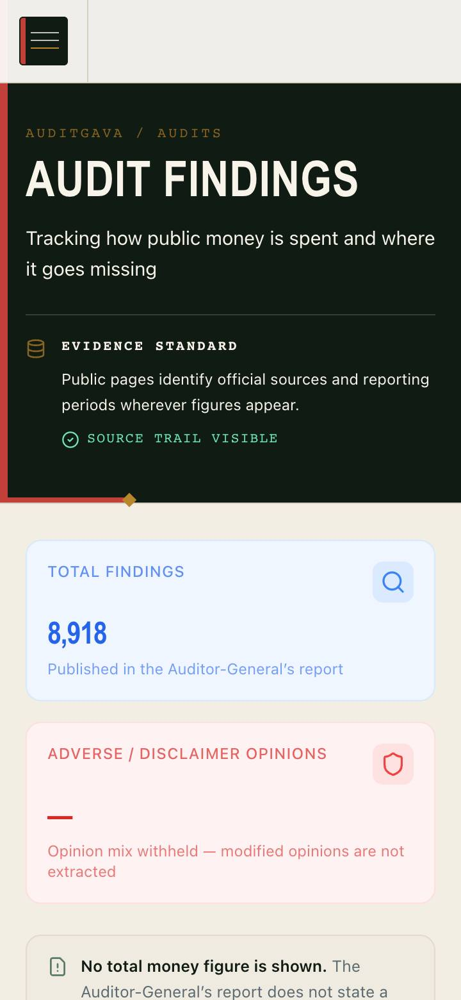</div><figcaption><b>Before</b> · menu buttons missing at the top</figcaption></figure><figure><div class="shot ">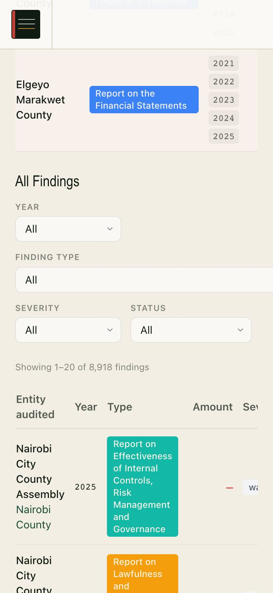</div><figcaption><b>Before</b> · scrolled sideways: menu was off the edge</figcaption></figure><figure><div class="phone"><div class="m-hdr"><span class="m-mark">AG</span><span class="m-word">AuditGava</span><span class="m-sp"></span><span class="m-btn">Menu</span></div><div class="m-body"><div style="font-family:var(--font-display);font-weight:700;font-size:26px;line-height:1">Audit findings</div><div class="m-filters"><label>County<span>All counties ▾</span></label><label>Year<span>All years ▾</span></label><label>Section<span>All sections ▾</span></label><label>Severity<span>All ▾</span></label></div><div style="font-size:12px;color:var(--m-muted);margin-top:8px">Showing 20 of 8,918 · the page fits the screen; Menu stays visible</div></div></div><figcaption><i>After</i> · fits 360px, menu visible, labelled filters</figcaption></figure></div></article>

<article class="spec" id="e2">
  <div class="spec-h"><div class="tags"><span class="tag p0">P0</span><span class="tag">Effort S</span><span class="tag">Shared · Navigation</span></div>
  <h3>E2 · On phones the header has no name, and the logo looks like a menu button</h3></div>
  <div class="spec-b">
    <h6>Problem</h6>
    <p>Below 640px the wordmark is hidden (<code>hidden sm:block</code>, <code>Navigation.tsx:136</code>). That leaves the <code>BrandMark</code>, a dark square with three horizontal lines (<code>Navigation.tsx:14-25</code>), at the left, and a real three-line menu button at the right. The middle of the bar is empty. All three controls on the right are 36px, under the 44px minimum. The header background is 95% opaque, so text scrolling underneath shows through it (visible in the screenshots).</p>
    <h6>Impact on mobile</h6>
    <p>Most visitors arrive from a shared link on a phone. The first thing they see doesn’t say whose site they are on, and there are two “menu” icons, one of which goes Home.</p>
    <h6>Proposal</h6>
    <ul>
      <li>Show the “AUDITGAVA” wordmark at every width. Hide only the tagline under 640px. There is room: 360px minus 44px for the logo and 2×44px for buttons leaves about 200px.</li>
      <li>Redraw the mark so it can’t be read as a hamburger. Keep the copper edge and dark square, and replace the three rules with an “AG” monogram or a single tick.</li>
      <li>On phones, keep only one control on the right: a labelled <b>Menu</b> button, 44px tall. Move the theme toggle and sign-in into the drawer (E14). Sign-in is secondary for this audience.</li>
      <li>Make the bar fully opaque (<code>bg-gov-cream</code>, not <code>/95</code>).</li>
    </ul>
    <h6>Why it is better</h6>
    <p>The brand is legible on the first screen, there is one unambiguous way into navigation, and the bar has more room and one fewer control.</p>
  </div>
  <div class="ba">
    <figure><div class="shot short">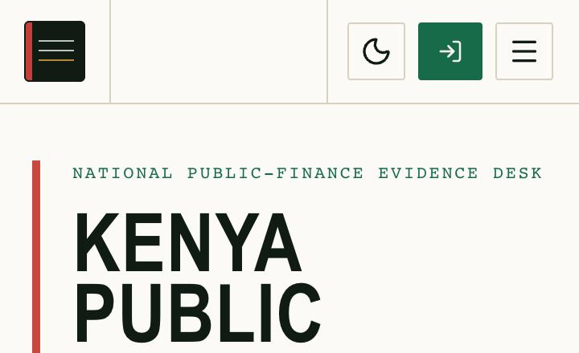</div><figcaption><b>Before</b> · 360px</figcaption></figure>
    <figure><div class="phone">
      <div class="m-hdr"><span class="m-mark">AG</span><span class="m-word">AuditGava</span><span class="m-sp"></span><span class="m-btn"><svg viewBox="0 0 24 24" fill="none" stroke="currentColor" stroke-width="2" aria-hidden="true"><path d="M4 7h16M4 12h16M4 17h16"/></svg>Menu</span></div>
      <div class="m-body" style="padding-top:18px"><div class="m-lbl" style="color:var(--m-sage)">Kenya public money tracker</div><div class="m-h1" style="margin-top:6px">Where does Kenya’s money go?</div></div>
    </div><figcaption><i>After</i> · name visible, one control</figcaption></figure>
  </div>
</article>

<article class="spec" id="e3">
  <div class="spec-h"><div class="tags"><span class="tag p0">P0</span><span class="tag">Effort M</span><span class="tag">Shared · FigureEvidence + 14 importers</span><span class="tag">Home · Budget · Debt · Counties</span></div>
  <h3>E3 · Put sources one tap down instead of printing them under every figure</h3></div>
  <div class="spec-b">
    <h6>Problem</h6>
    <p><code>FigureEvidence</code> (<code>components/evidence/FigureEvidence.tsx:34-37</code>) renders a <code>&lt;details&gt;</code> whose summary reads “Evidence for {label} · Qualified citation / Conflicting evidence / Evidence unavailable / Verified observation”. Fourteen files import it. Inside are fields such as bytes checked, digest and locator JSON. Other cards print their own provenance inline as well: each KRA revenue card on /budget carries a five-line “Source version · edition dashboard_bundle · retrieved … · App check: reported total less domestic and Customs collections = KES 4.22B” block, and the home debt card shows “IMF General Government Gross Debt, % of GDP (GGXWDG_NGDP) — vintage-consistent”.</p>
    <h6>Impact on mobile</h6>
    <ul>
      <li>Four evidence lines sit between the debt hero and “Who Kenya owes” on /debt.</li>
      <li>On /counties every county card repeats a five-line evidence summary. That is a large part of why 10 counties take about 4 screens.</li>
      <li>The status words are the team’s internal vocabulary. A citizen reads “Conflicting evidence / Evidence unavailable” as “this number is wrong”, which is the opposite of the trust the feature is meant to build.</li>
    </ul>
    <h6>Proposal</h6>
    <ul>
      <li>Replace each inline summary with one <b>source chip</b> under the figure: a dot showing status, plus the publisher (“Source: CBK”). Tapping it opens a <b>bottom sheet</b> on phones and a popover or side panel from 768px.</li>
      <li>In the sheet, write the plain-language explanation first. Then list the status in plain words, mapped one-to-one from the existing keys:
        <ul>
          <li>Verified observation → “Matches the source document”</li>
          <li>Qualified citation → “Source cited, with a caveat”</li>
          <li>Conflicting evidence → “Sources disagree”</li>
          <li>Evidence unavailable → “No source document yet”</li>
        </ul>
        Then link to the figure page. Put bytes, digest and locator under a collapsed “Technical details” row. Every field shown today stays, one level deeper.</li>
      <li>Apply the same chip to the KRA revenue cards, so the five-line block becomes chip, sheet and technical details.</li>
      <li>Where one card has several evidence disclosures (the home debt card has four), merge them into one chip with one sheet for the whole card.</li>
    </ul>
    <h6>Why it is better</h6>
    <p>The figure and its meaning come first, and the proof is one predictable tap away. This is the ⓘ-to-sheet pattern Wealthfront and Lightyear use for financial terms (see references). It is easier with a thumb than hovering, and closing the sheet returns the reader to where they were.</p>
    <h6>Implementation notes</h6>
    <ul>
      <li>Build one <code>SourceChip</code> + <code>InfoSheet</code> pair. Use a <code>&lt;dialog&gt;</code> or Radix Dialog with focus return and swipe or Esc to close. Reuse the drawer’s focus-trap code. <code>InfoTip</code> (17 uses) can move onto the same sheet on touch devices.</li>
      <li>Keep <code>data-figure-evidence</code> attributes and the <code>/sources/figures/…</code> links, so existing tests and deep links still work.</li>
      <li>Status wording lives in the i18n keys (<code>evidence.status.*</code>). Change the strings there, which keeps Swahili in step.</li>
    </ul>
  </div>
  <div class="ba">
    <figure><div class="shot">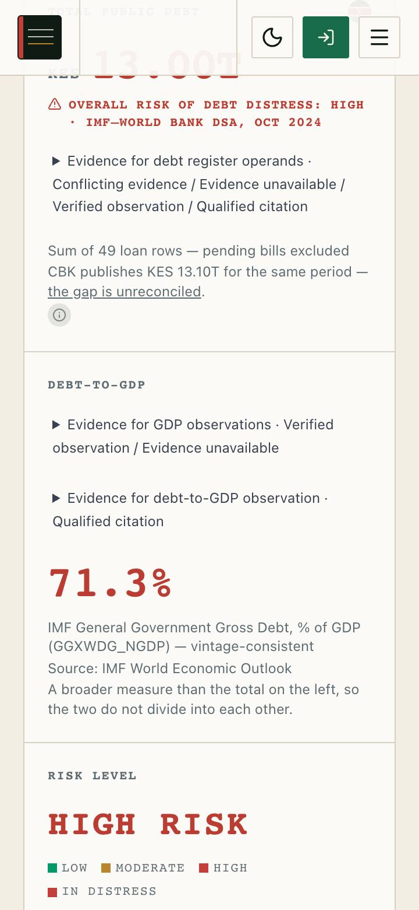</div><figcaption><b>Before</b> · home debt card</figcaption></figure>
    <figure><div class="phone"><div class="m-body">
      <div class="m-card">
        <div class="m-lbl">Total public debt</div>
        <div class="m-big"><small>KES</small>13.00T</div>
        <p class="m-cmp">About <b>KES 225,897 for every Kenyan</b>. Debt-to-GDP is 71.3%.</p>
        <button class="m-src" type="button"><span class="dot"></span>Sources: 49 loan records</button>
      </div>
      <div class="m-sheet" aria-label="Example source sheet">
        <div class="m-grab"></div>
        <h4>Where this number comes from</h4>
        <p>We add up the 49 loan lines in our register. Unpaid supplier bills are not included. The Central Bank’s own total for the same date is KES 13.10T, and we haven’t yet explained the difference.</p>
        <div class="m-st"><i style="color:#14583B">✓</i><span>Matches the source document</span></div>
        <div class="m-st"><i style="color:#7A4A0C">!</i><span>Source cited, with a caveat</span></div>
        <div class="m-st"><i style="color:#9E2F26">≠</i><span>Sources disagree</span></div>
        <div class="m-more"><span>See every line and document</span><span>›</span></div>
        <div class="m-more" style="color:var(--m-muted)"><span>Technical details</span><span>▾</span></div>
      </div>
    </div></div><figcaption><i>After</i> · chip + sheet</figcaption></figure>
    <figure><div class="shot">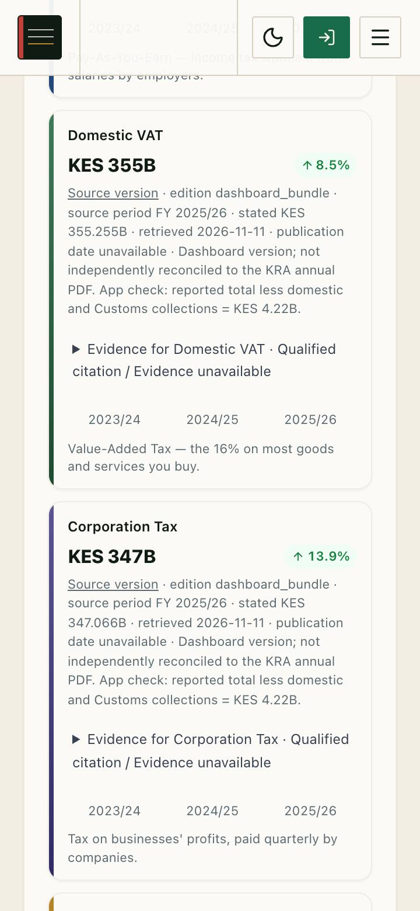</div><figcaption><b>Before</b> · /budget revenue cards</figcaption></figure><figure><div class="phone"><div class="m-body"><div class="m-sec" style="margin-top:0">Where tax revenue comes from</div><p class="m-cmp" style="font-size:13px">KRA collections, FY 2025/26. Customs is the largest single stream.</p><div class="m-blist" role="img" aria-label="KRA revenue by tax type"><div class="r"><span class="n">Customs (incl. agency levies)</span><span class="v">KES 989B</span><span class="bar"><b style="width:100%;background:var(--c1)"></b></span><span class="s">+12.5% · import duty &amp; levies</span></div><div class="r"><span class="n">PAYE</span><span class="v">KES 599B</span><span class="bar"><b style="width:61%;background:var(--c1)"></b></span><span class="s">+6.7% · tax on salaries</span></div><div class="r"><span class="n">Domestic VAT</span><span class="v">KES 355B</span><span class="bar"><b style="width:36%;background:var(--c1)"></b></span><span class="s">+8.5% · the 16% on most goods</span></div><div class="r"><span class="n">Corporation tax</span><span class="v">KES 347B</span><span class="bar"><b style="width:35%;background:var(--c1)"></b></span><span class="s">+13.9% · tax on company profits</span></div><div class="r"><span class="n">Domestic excise</span><span class="v">KES 62B</span><span class="bar"><b style="width:6%;background:var(--c1)"></b></span><span class="s">−10.9% · fuel, alcohol, airtime</span></div></div><span class="m-src" style="margin-top:8px"><span class="dot"></span>Source: KRA annual performance (dashboard edition)</span></div></div><figcaption><i>After</i> · ranked bars, one source chip</figcaption></figure>
  </div>
</article>

<article class="spec" id="e4">
  <div class="spec-h"><div class="tags"><span class="tag p0">P0</span><span class="tag">Effort S–M</span><span class="tag">Home map · Budget · Debt · Loans</span></div>
  <h3>E4 · Interactions and instructions that only work with a mouse</h3></div>
  <div class="spec-b">
    <h6>Problem</h6>
    <p>Four pieces of copy tell phone users to hover:</p>
    <ul>
      <li>“Hover to explore · Click to select” (<code>InteractiveKenyaMap.tsx:704</code>)</li>
      <li>“Hover a slice for the value” (<code>SpendDonut.tsx:208</code>)</li>
      <li>“Hover to compare” (<code>DebtPageClient.tsx:753</code>)</li>
      <li>“Hover a figure for its source” (<code>NationalLoansCard.tsx:242</code>)</li>
    </ul>
    <p>Behind some of that copy the behaviour is hover-only too. <code>SpendDonut</code> changes its centre label only in <code>onMouseEnter</code> (<code>:253</code>, <code>:304</code>), and the code survey found the same in <code>BudgetFlowHero.tsx:525</code>, <code>RevenueMix.tsx:358</code> and <code>LenderTreemap.tsx</code>, with no click or focus equivalent.</p>
    <h6>Impact on mobile</h6>
    <p>Phone users are told to do something they can’t. Some chart values can then only be reached through the list below the chart, if there is one. On desktop, keyboard users can’t reach those values either.</p>
    <h6>Proposal</h6>
    <ul>
      <li>For each hover handler, add <code>onClick</code> and <code>onFocus</code> that set the same state, and make each segment focusable (<code>tabIndex=0</code>, <code>role="button"</code>, <code>aria-label</code> with name and value). A second tap or Esc clears it.</li>
      <li>Write copy for the device. Use “Tap a county” and “Tap a slice” as the default, and switch to “Hover or click” with <code>@media (hover:hover) and (pointer:fine)</code>, or just say “Select”.</li>
      <li>Give the selected state something visible besides colour: an outline, the value in the centre, and the matching list row highlighted.</li>
    </ul>
    <h6>Done when</h6>
    <p>Every value reachable by hover is reachable by tap and by Tab on desktop, and no page says “hover” on a touch device.</p>
  </div>
<div class="ba"><figure><div class="shot ">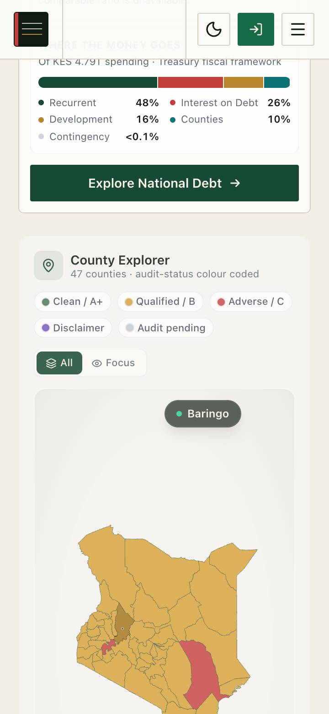</div><figcaption><b>Before</b> · map says “Hover to explore”</figcaption></figure><figure><div class="shot ">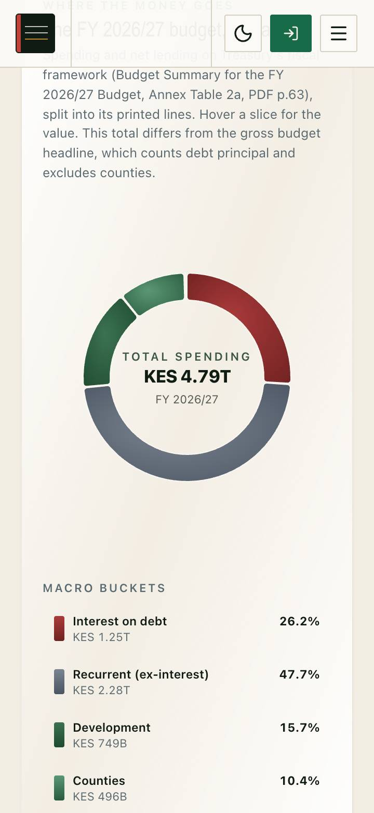</div><figcaption><b>Before</b> · donut says “Hover a slice”</figcaption></figure><figure><div class="phone"><div class="m-body"><div style="font-family:var(--font-display);font-weight:700;font-size:22px">County Explorer</div><div style="font-size:12.5px;color:var(--m-muted);margin:2px 0 8px">Tap a county to see its figures</div><div class="d-ph" style="height:170px;margin:0">Map of Kenya · Baringo selected and outlined</div><div class="m-sheet" style="margin-top:8px"><div class="m-grab"></div><h4>Baringo County</h4><div class="m-ledger"><span>Spent of its budget</span><b>76%</b></div><div class="m-ledger"><span>Audit record</span><b style="color:var(--m-alarm)">F</b></div><div class="m-showall">Open Baringo’s page</div></div></div></div><figcaption><i>After</i> · tap selects, sheet shows the figures</figcaption></figure></div></article>

<article class="spec" id="e5">
  <div class="spec-h"><div class="tags"><span class="tag p0">P0</span><span class="tag">Effort M (mechanical)</span><span class="tag">Site-wide · tokens</span></div>
  <h3>E5 · Text too small, and contrast below AA</h3></div>
  <div class="spec-b">
    <h6>Problem</h6>
    <ul>
      <li><b>Size.</b> <code>text-[11px]</code> appears 353 times in 62 files, and <code>text-[10px]</code> 7 times. That includes labels the reader needs: KPI captions, legend entries, chart ticks, “Target: 70%”, and the InfoTip body (<code>InfoTip.tsx:271</code>). On Home at 360px, 204 text elements render at 10–11px. On Sources it is 144 of 308.</li>
      <li><b>Contrast.</b> axe flags failures on all 14 pages:
        <ul>
          <li>Gold eyebrow on the dark header: 3.26:1 on every PageShell page.</li>
          <li><code>text-amber-600</code> on cream: 3.05:1 on the home debt card.</li>
          <li><code>text-neutral-muted/75</code>: 3.05:1.</li>
          <li>The <code>opacity-60</code> footnote on /counties: 4.43:1.</li>
          <li>Cream text on the copper “Adverse” chip: 4.33:1.</li>
          <li>Red footnotes on pink in the county audit panel: 4.34:1.</li>
        </ul></li>
      <li><b>Mixed uppercase mono.</b> Mono uppercase with 0.15em tracking at 11px, as in “PRIMARY SOURCE INDEX” and “EVIDENCE STANDARD”, is the hardest style on the site to read on a small, dim phone screen.</li>
    </ul>
    <h6>Proposal</h6>
    <ul>
      <li>Set a type scale for phones. Reading text 15–16px. Labels and captions at least 12px, with the mono uppercase eyebrow at 12px and 0.08em tracking. Chart ticks 12px. Keep 11px only for decorative breadcrumbs, or remove them.</li>
      <li>Add a darker gold token for text on dark (#D9AE5B on #101B14 is about 8:1). Keep #B8872D for fills and rules only. Replace <code>amber-600</code> text with a darker caution text token, #8A5A10 (5.66:1 on cream). <i>Corrected in round two: <code>gov-warning</code> #A86816 measures 4.32:1, which fails AA for body text, so keep it for fills only. See <a href="#s-levels">Signal colours</a>.</i> Remove opacity-based text dimming in favour of the <code>neutral-muted</code> token.</li>
      <li>Do it at token and utility level (<code>.figure-label</code>, <code>.source-label</code> and the eyebrow class in <code>globals.css</code>) before touching components. Then run a codemod: <code>text-[11px]</code> becomes <code>text-xs</code> (12px) wherever the text is content.</li>
    </ul>
    <h6>Done when</h6>
    <p>axe color-contrast is clean on all routes at both widths, and no content text renders under 12px at 360px. Add an assertion to the browser-readiness suite.</p>
  </div>
<div class="ba"><figure><div class="shot ">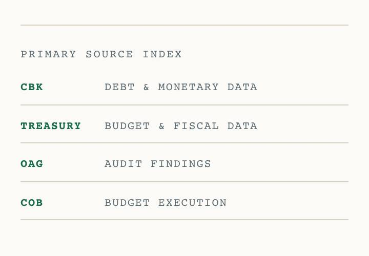</div><figcaption><b>Before</b> · 11px mono, acronyms</figcaption></figure><figure><div class="shot ">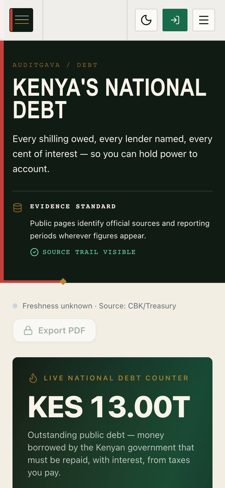</div><figcaption><b>Before</b> · gold eyebrow at 3.26:1</figcaption></figure><figure><div class="phone"><div class="m-dark"><div style="font-size:12px;font-weight:600;color:#D9AE5B">National debt</div><div class="m-h1" style="font-size:26px;margin-top:4px">Kenya’s national debt</div><div style="font-size:14px;opacity:.9">Every shilling owed and every lender named.</div></div><div class="m-body"><div style="font-size:13px;font-weight:700;margin-bottom:4px">Where our data comes from</div><div class="m-ledger"><span>Central Bank of Kenya</span><b style="font-size:14px;font-family:var(--font-body)">Debt</b></div><div class="m-ledger"><span>National Treasury</span><b style="font-size:14px;font-family:var(--font-body)">Budget</b></div><div class="m-ledger"><span>Auditor-General</span><b style="font-size:14px;font-family:var(--font-body)">Audits</b></div><div class="m-ledger"><span>Controller of Budget</span><b style="font-size:14px;font-family:var(--font-body)">Spending</b></div><div style="font-size:12px;color:var(--m-muted);margin-top:8px">Labels 12px+, body 14–16px, gold text on dark at 7.9:1</div></div></div><figcaption><i>After</i> · readable sizes, words not acronyms</figcaption></figure></div></article>

<article class="spec" id="e6">
  <div class="spec-h"><div class="tags"><span class="tag p0">P0</span><span class="tag">Effort M</span><span class="tag">Home · Follow the money · Counties</span></div>
  <h3>E6 · Long lists printed in full</h3></div>
  <div class="spec-b">
    <h6>Problem</h6>
    <ul>
      <li><b>Follow the Money.</b> The “County spending” section is 11,198px tall at 360px, about 14 screens. All 47 counties render as ~230px cards, each ending in “Flagged —” and “No audit findings recorded for this period.” Those two lines repeat identically 47 times.</li>
      <li><b>Home.</b> The National Government Loans card prints dozens of creditor rows before “See all 49 register lines”. At 360px the creditor names are cut to “F…”, “Den…”, “Uni…”, “Au…”, so the list can’t be read. Each row also carries an “Evidence for Finland · Qualified citation / Evidence unavailable” line.</li>
      <li><b>/counties.</b> The ranking cards take about 2.5 screens per 4 counties. Every card shows “Debt —”, because no county has a published debt figure, and nearly every card shows “Qualified (10)”. A column that is empty for all 47 rows tells the reader nothing 47 times.</li>
    </ul>
    <h6>Proposal</h6>
    <ul>
      <li><b>Keep the rich county card on Follow the money, and tighten it.</b> <i>Revised in round two after review: the first version cut each county to one line and lost the detail readers value.</i> Each card keeps everything it shows today: rank, county, KES allocated, percentage spent with its verdict word, the bar with the national marker, and Spent · Gap · Flagged. It also keeps the dotted frame and ruled dividers. The difference is layout. Spent, gap and flagged sit side by side in one ledger row instead of three stacked rows, and the repeated sentence “No audit findings recorded for this period” becomes a single note above the list. A card drops from about 230px to about 130px. That is 5 counties per phone screen instead of 3, and about 8 screens for all 47 instead of 14.</li>
      <li><b>Colour follows distance from the 70% target, getting redder as a county falls further below it.</b> 80% and above is deep green (“Above target”) and 70–79% is green (“On target”). 65–69% is amber-red (“Below target”) and under 65% is red (“Well below target”). The percentage, the bar and the gap amount all take the colour, and the word is always printed. The rule comes from the 70% target the site already uses, and the key above the list states it. This year it puts Siaya (56%), Kisumu (59%), Kisii (63%) and Uasin Gishu (64%) in red.</li>
      <li><b>Show 10 cards, then “Show all 47”</b>, with search and sort chips (least spent, biggest gap, A–Z) above. On the County Explorer page, the one-line ranked rows still suit the quick ranking; the rich card is for Follow the money, where readers come for the detail.</li>
      <li><b>Home loans card.</b> Show the 5 largest creditors with full names on two lines (never truncate a name to one letter), then “See all 49 lenders” linking to /debt#register. Move the per-row evidence to E3’s chip.</li>
      <li>Pair long lists with E7’s jump chips, so the sections under a list stay reachable.</li>
    </ul>
    <h6>Why it is better</h6>
    <p>Lloyds and Copilot both show a sorted list with “Show more” rather than everything (see references). The reader sees the ranking at a glance and can still reach any row. Rough estimate: Follow the Money drops from 20 to about 12 phone screens with every card shown, or about 7 with the first 10. Home drops from 18 to about 11.</p>
  </div>
  <div class="ba">
    <figure><div class="shot">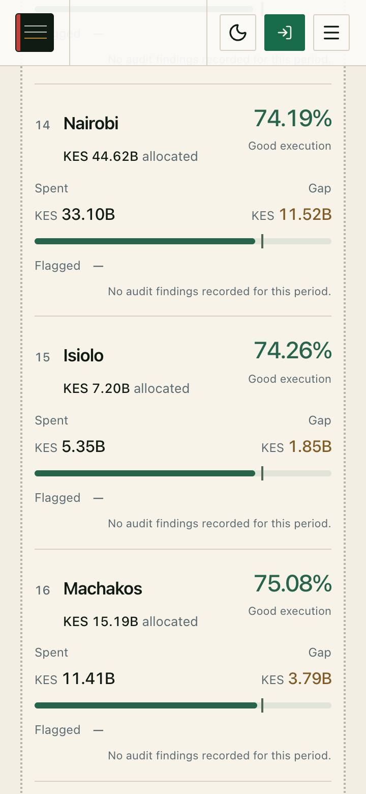</div><figcaption><b>Before</b> · 3 counties per screen, rich detail</figcaption></figure>
    <figure><div class="phone"><div class="m-body"><div style="display:flex;justify-content:space-between;align-items:baseline"><div style="font-family:var(--font-display);font-weight:700;font-size:22px">County spending</div><div class="m-lbl">FY 2025/26</div></div><div class="m-search" style="margin:10px 0 8px">⌕ Find your county</div><div class="m-chips" style="margin-bottom:8px"><span class="m-chip on">Least spent first</span><span class="m-chip">Biggest gap</span><span class="m-chip">A–Z</span></div><div class="rc-key"><span><i class="k a1"></i>Under 65%</span><span><i class="k c1"></i>65–69%</span><span><i class="k g1"></i>70–79%</span><span><i class="k g2"></i>80%+</span><span>· target 70%</span></div><div class="m-rc-frame"><div class="m-rc a1"><div class="rc-h"><span class="rc-rk">01</span><span class="rc-nm">Siaya</span><span class="rc-pc">56.1%</span></div><div class="rc-sub"><span>KES 13.38B allocated</span><span class="rc-w">Well below</span></div><div class="rc-bar"><b style="width:56.1%"></b><i class="tg" style="left:70%"></i><i class="nat" style="left:76.6%"></i></div><div class="rc-led"><span><em>Spent</em><small>KES</small> 7.50B</span><span><em>Gap</em><b><small>KES</small> 5.88B</b></span><span><em>Flagged</em>—</span></div></div><div class="m-rc a1"><div class="rc-h"><span class="rc-rk">02</span><span class="rc-nm">Kisumu</span><span class="rc-pc">59.4%</span></div><div class="rc-sub"><span>KES 16.98B allocated</span><span class="rc-w">Well below</span></div><div class="rc-bar"><b style="width:59.4%"></b><i class="tg" style="left:70%"></i><i class="nat" style="left:76.6%"></i></div><div class="rc-led"><span><em>Spent</em><small>KES</small> 10.10B</span><span><em>Gap</em><b><small>KES</small> 6.88B</b></span><span><em>Flagged</em>—</span></div></div><div class="m-rc a1"><div class="rc-h"><span class="rc-rk">03</span><span class="rc-nm">Kisii</span><span class="rc-pc">63.3%</span></div><div class="rc-sub"><span>KES 20.16B allocated</span><span class="rc-w">Well below</span></div><div class="rc-bar"><b style="width:63.3%"></b><i class="tg" style="left:70%"></i><i class="nat" style="left:76.6%"></i></div><div class="rc-led"><span><em>Spent</em><small>KES</small> 12.77B</span><span><em>Gap</em><b><small>KES</small> 7.39B</b></span><span><em>Flagged</em>—</span></div></div><div class="m-rc c1"><div class="rc-h"><span class="rc-rk">09</span><span class="rc-nm">Laikipia</span><span class="rc-pc">69.1%</span></div><div class="rc-sub"><span>KES 9.77B allocated</span><span class="rc-w">Below target</span></div><div class="rc-bar"><b style="width:69.1%"></b><i class="tg" style="left:70%"></i><i class="nat" style="left:76.6%"></i></div><div class="rc-led"><span><em>Spent</em><small>KES</small> 6.75B</span><span><em>Gap</em><b><small>KES</small> 3.02B</b></span><span><em>Flagged</em>—</span></div></div><div class="m-rc-skip">… 42 more counties</div><div class="m-rc g1"><div class="rc-h"><span class="rc-rk">14</span><span class="rc-nm">Nairobi</span><span class="rc-pc">74.2%</span></div><div class="rc-sub"><span>KES 44.62B allocated</span><span class="rc-w">On target</span></div><div class="rc-bar"><b style="width:74.2%"></b><i class="tg" style="left:70%"></i><i class="nat" style="left:76.6%"></i></div><div class="rc-led"><span><em>Spent</em><small>KES</small> 33.10B</span><span><em>Gap</em><b><small>KES</small> 11.52B</b></span><span><em>Flagged</em>—</span></div></div><div class="m-rc g2"><div class="rc-h"><span class="rc-rk">47</span><span class="rc-nm">Meru</span><span class="rc-pc">91.9%</span></div><div class="rc-sub"><span>KES 15.12B allocated</span><span class="rc-w">Above target</span></div><div class="rc-bar"><b style="width:91.9%"></b><i class="tg" style="left:70%"></i><i class="nat" style="left:76.6%"></i></div><div class="rc-led"><span><em>Spent</em><small>KES</small> 13.89B</span><span><em>Gap</em><b><small>KES</small> 1.23B</b></span><span><em>Flagged</em>—</span></div></div></div><div style="font-size:11.5px;color:var(--m-muted);margin-top:6px">Flagged “—”: audit amounts for FY 2025/26 are not published yet. Grey tick = 70% target · black tick = national 77%.</div><div class="m-showall">Show all 47 counties</div></div></div><figcaption><i>After, revised</i> · same detail, 5 counties per screen</figcaption></figure>
    <figure><div class="shot">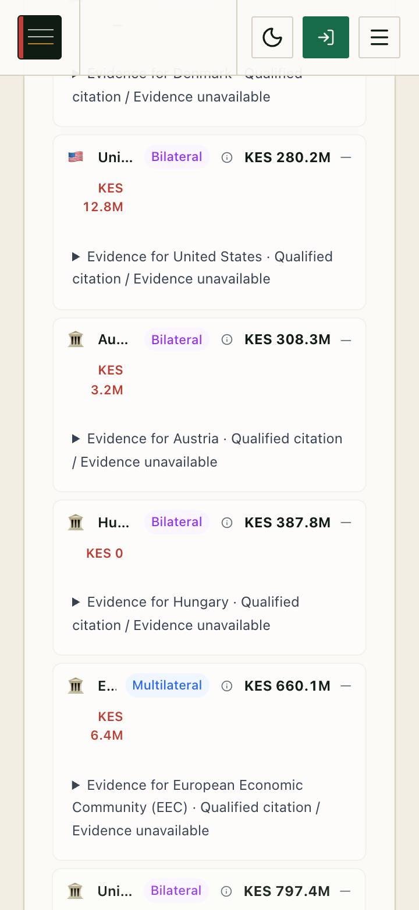</div><figcaption><b>Before</b> · home loans, names cut off</figcaption></figure><figure><div class="phone"><div class="m-body"><div class="m-sec" style="margin-top:0">Who Kenya borrows from</div><p class="m-cmp" style="font-size:13px">The 5 largest of 49 lenders. Domestic debt in teal, external in gold.</p><div class="m-blist"><div class="r"><span class="n">Domestic Treasury bonds</span><span class="v">6.02T</span><span class="bar"><b style="width:100%;background:var(--c1)"></b></span><span class="s">Domestic · banks, pension funds</span></div><div class="r"><span class="n">World Bank (IDA)</span><span class="v">1.69T</span><span class="bar"><b style="width:28%;background:var(--c2)"></b></span><span class="s">External · multilateral</span></div><div class="r"><span class="n">Eurobonds and other international bonds</span><span class="v">1.14T</span><span class="bar"><b style="width:19%;background:var(--c2)"></b></span><span class="s">External · commercial</span></div><div class="r"><span class="n">Domestic Treasury bills</span><span class="v">1.13T</span><span class="bar"><b style="width:19%;background:var(--c1)"></b></span><span class="s">Domestic · 91 to 364 days</span></div><div class="r"><span class="n">International Monetary Fund</span><span class="v">659B</span><span class="bar"><b style="width:11%;background:var(--c2)"></b></span><span class="s">External · multilateral</span></div></div><div class="m-showall">See all 49 lenders</div></div></div><figcaption><i>After</i> · full names, largest first</figcaption></figure>
  </div>
</article>

<!-- ======================= P1 ======================= -->
<h2>P1 · Next</h2>

<article class="spec" id="e7">
  <div class="spec-h"><div class="tags"><span class="tag p1">P1</span><span class="tag">Effort S</span><span class="tag">Shared · PageShell (most inner pages)</span></div>
  <h3>E7 · The page header takes the whole first screen</h3></div>
  <div class="spec-b">
    <h6>Problem</h6>
    <p>Every PageShell page opens on phones with a dark band: breadcrumb, a 36–38px uppercase title, description, then an “Evidence standard · Public pages identify official sources … · Source trail visible” block. On /debt that band, plus the freshness line and Export button, fills the first 780px. The first real figure starts at the bottom edge. The evidence-standard text is the same on every page.</p>
    <h6>Proposal</h6>
    <ul>
      <li>On phones, show the title and one sentence. Move the evidence standard to a single line in the footer and on About. On desktop it can stay in the right column.</li>
      <li>Add an <b>“On this page”</b> list under the header on long pages: Debt, Budget, Follow the Money, Audits. It wraps into two columns so no section is hidden, and shrinks to a sticky bar with a Sections sheet once the reader scrolls past it. <i>Revised in round two: the first version scrolled sideways and cropped the last items. See <a href="#b-pattern">Section navigation that never crops</a>.</i></li>
      <li>Move “Export PDF” into a small overflow (⋯) button by the title, so a locked control doesn’t open the page.</li>
    </ul>
    <h6>Why it is better</h6>
    <p>The first screen answers “what is this page about and what’s the number”. The reader can also see the shape of a long page before scrolling it.</p>
  </div>
  <div class="ba">
    <figure><div class="shot"></div><figcaption><b>Before</b> · /debt first screen</figcaption></figure>
    <figure><div class="phone">
      <div class="m-hdr"><span class="m-mark">AG</span><span class="m-word">AuditGava</span><span class="m-sp"></span><span class="m-btn">Menu</span></div>
      <div class="m-dark"><div class="m-lbl">National debt</div><div class="m-h1" style="font-size:28px;margin-top:4px">Kenya’s national debt</div><div style="font-size:13.5px;opacity:.85">Every shilling owed and every lender named.</div></div>
      <div class="m-body" style="padding-bottom:0"><div class="m-toc"><span><b>Who we owe</b><i>7 lender groups</i></span><span><b>When it’s due</b><i>Bonds by year</i></span><span><b>Per KES 100</b><i>Where revenue goes</i></span><span><b>Unpaid bills</b><i>Owed to suppliers</i></span></div></div>
      <div class="m-body">
        <div class="m-card"><div class="m-lbl">Owed today</div><div class="m-big"><small>KES</small>13.00T</div><p class="m-cmp" style="margin-bottom:6px">KES 225,897 per Kenyan · up 6.5% in a year</p><span class="m-src"><span class="dot"></span>Source: CBK</span></div>
        <div class="m-card" style="margin-top:10px"><div class="m-lbl">Debt-to-GDP</div><div class="m-big" style="font-size:30px">71.3%</div></div>
      </div>
    </div><figcaption><i>After</i> · numbers on screen one</figcaption></figure>
  </div>
</article>

<article class="spec" id="e8">
  <div class="spec-h"><div class="tags"><span class="tag p1">P1</span><span class="tag">Effort M</span><span class="tag">Home</span></div>
  <h3>E8 · Home: ask what the reader wants to know</h3></div>
  <div class="spec-b">
    <h6>Problem</h6>
    <p>The home hero is a title, a sentence and a “Primary source index” of four acronyms: CBK, TREASURY, OAG, COB. These mean little to a first-time visitor. After the hero come debt evidence, a four-step “how to read the evidence” timeline, a national-debt chart, a fiscal snapshot, a county map, the Auditor-General’s report, budget sectors and the loan register. That is 18 screens with no route by question. County search, the most personal entry point, is not on the home page.</p>
    <h6>Proposal</h6>
    <ul>
      <li>Under the hero, ask <b>“What do you want to know?”</b> with four chips that link to existing pages and anchors: How much does Kenya owe? · Where do my taxes go? · How is my county doing? · What did the Auditor-General find?</li>
      <li>Add a <b>“Find your county”</b> search with autocomplete straight to <code>/counties/[id]</code>. This reuses the search on /counties.</li>
      <li>Move the source index into the footer or About, and say “Data from the Central Bank, Treasury, Auditor-General and Controller of Budget” in words.</li>
      <li>Keep the rest of the home sections, made shorter by E3, E6 and E9.</li>
    </ul>
    <h6>Why it is better</h6>
    <p>Airbnb’s and Craft’s help centres open with a question and topic chips, and there is no wizard to get through first (see references). It gives a non-expert a place to start and makes the county search, the most personal path, a single tap.</p>
  </div>
  <div class="ba">
    <figure><div class="shot"></div><figcaption><b>Before</b> · hero + source index</figcaption></figure>
    <figure><div class="phone">
      <div class="m-hdr"><span class="m-mark">AG</span><span class="m-word">AuditGava</span><span class="m-sp"></span><span class="m-btn">Menu</span></div>
      <div class="m-body">
        <div class="m-h1">Where does Kenya’s money go?</div>
        <p class="m-sub">Budgets, debt and audits from official records, updated nightly.</p>
        <p class="m-q">What do you want to know?</p>
        <div class="m-chips">
          <span class="m-chip">How much does Kenya owe?</span>
          <span class="m-chip">Where do my taxes go?</span>
          <span class="m-chip">How is my county doing?</span>
          <span class="m-chip">What did the Auditor-General find?</span>
        </div>
        <div class="m-search">⌕ Type your county, e.g. Kisumu</div>
        <div style="font-size:12px;color:var(--m-muted)">Data from the Central Bank, Treasury, Auditor-General and Controller of Budget.</div>
      </div>
    </div><figcaption><i>After</i> · question-led start</figcaption></figure>
  </div>
</article>

<article class="spec" id="e9">
  <div class="spec-h"><div class="tags"><span class="tag p1">P1</span><span class="tag">Effort M</span><span class="tag">Shared · new StatCard</span><span class="tag">All data pages</span></div>
  <h3>E9 · Give every headline number the same four parts</h3></div>
  <div class="spec-b">
    <h6>Problem</h6>
    <p>Headline figures are built differently on each page. Some have a plain comparison: “KES 225,897 per citizen”, “KES 7.67B spent of KES 10.08B allocated”. Others have a technical basis note (“IMF general government basis”), a bare dash (“TOTAL MONEY OWED, UNPAID —”), or a delta with no reference point (“↑ 99%” on four-year strips). <code>components/ui/card.tsx</code> and <code>badge.tsx</code> exist but have no importers, so each page draws its own.</p>
    <h6>Proposal: one StatCard pattern</h6>
    <ol>
      <li><b>Label</b> in plain words (“Debt repayments this year”, not “Debt service”, or with “debt service” as a secondary term).</li>
      <li><b>Number</b> rounded for reading: KES 2.32T, 76%, never KES 44,208,110,000. Keep the exact value in the source sheet.</li>
      <li><b>One comparison sentence</b> that points at something the reader already knows: per person, per KES 100, vs last year, or vs the 70% target.</li>
      <li><b>Source chip</b> from E3.</li>
    </ol>
    <p>When the figure is missing, say so in words instead of a large dash: “Not published yet — 46 of 47 counties reported”.</p>
    <h6>Why it is better</h6>
    <p>Lloyds’ “↑ £10 more than this time in June” and Copilot’s “$2,236 spent last month” (see references) use the same order: number, label, a comparison the reader recognises. AuditGava already writes these sentences in places. The StatCard makes them the standard.</p>
  </div>
  <div class="ba"><figure><div class="shot ">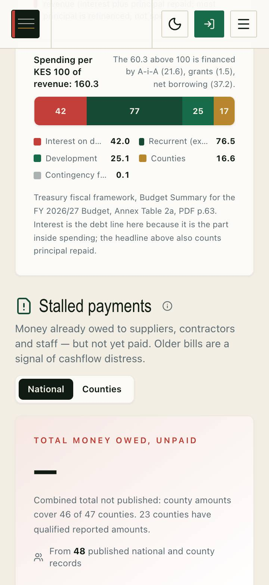</div><figcaption><b>Before</b> · a dash as the headline; legend cut off</figcaption></figure>
    <figure><div class="phone"><div class="m-body">
      <div class="m-card">
        <div class="m-lbl">Debt repayments this year</div>
        <div class="m-big" style="color:var(--m-ink)"><small>KES</small>2.32T</div>
        <p class="m-cmp">That’s <b>KES 78 of every KES 100</b> the government collects in taxes and fees.</p>
        <span class="m-src"><span class="dot" style="background:var(--m-sage)"></span>Source: National Treasury, FY 2026/27 budget</span>
      </div>
      <div class="m-card" style="margin-top:10px">
        <div class="m-lbl">Unpaid bills owed by government</div>
        <div style="font-family:var(--font-display);font-weight:700;font-size:22px;margin:6px 0 2px">Not published yet</div>
        <p class="m-cmp" style="font-size:13px">National: KES 475.5B. County totals cover 46 of 47 counties, so no combined figure is shown.</p>
        <span class="m-src"><span class="dot"></span>Sources: Treasury BROP · Controller of Budget</span>
      </div>
    </div></div><figcaption><i>After</i> · StatCard, filled and missing</figcaption></figure>
  </div>
</article>

<article class="spec" id="e10">
  <div class="spec-h"><div class="tags"><span class="tag p1">P1</span><span class="tag">Effort M</span><span class="tag">Home county panel · /counties · /counties/[id]</span></div>
  <h3>E10 · One county report card instead of five different scores</h3></div>
  <div class="spec-b">
    <h6>Problem</h6>
    <p>Baringo is described in five ways across three views:</p>
    <ul>
      <li>“Financial Health 63.6/100” and “Fiscal Grade (est.) B” in the home panel.</li>
      <li>“Health B” and a “Qualified” chip on /counties.</li>
      <li>“Health B · 64/100 · Fair” and “Audit F · 37/100 · Poor” on the county page.</li>
    </ul>
    <p>The “Qualified” chip is derived from finding severity, and the page itself notes it is “not an official OAG audit opinion”. A reader will still take “Qualified” to mean the Auditor-General’s opinion. Grade colours also clash with the status colours: grade B is brown and amber, the same as the “Qualified” warning chip.</p>
    <h6>Proposal</h6>
    <ul>
      <li>One <b>report card</b> component used in all three places. It holds two rows at most, each with a letter, a word (Good, Fair, Poor) and a 5-step scale with a marker: “Money management” (the current health score) and “Audit record”.</li>
      <li>Rename the derived chip from “Qualified” to “Audit findings: 29 serious”, using the counts the county page already shows (29 critical, 151 warning, 16 info). Reserve the words Qualified, Adverse and Disclaimer for real OAG opinions only.</li>
      <li>Add a “What these grades mean” link to an InfoSheet that explains the inputs, says they are AuditGava estimates, and links to the method.</li>
      <li>Grades get their own sequential colour scale, separate from warning and error colours (E17).</li>
    </ul>
  </div>
  <div class="ba">
    <figure><div class="shot">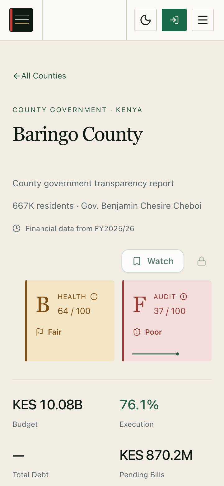</div><figcaption><b>Before</b> · /counties/baringo</figcaption></figure>
    <figure><div class="phone"><div class="m-body">
      <div class="m-lbl">County report card</div>
      <div style="font-family:var(--font-display);font-weight:700;font-size:26px;margin:4px 0 6px">Baringo County</div>
      <div class="m-grade"><span class="m-letter" style="background:#6E8F3A">B</span><div><b>Money management · Fair</b><div style="font-size:12px;color:var(--m-muted)">64 / 100 · budget use, revenue, bills</div><div class="m-scale"><span style="background:#1F6B47"></span><span class="on" style="background:#6E8F3A"></span><span style="background:#B8872D"></span><span style="background:#B5652E"></span><span style="background:#9E2F26"></span></div></div></div>
      <div class="m-grade"><span class="m-letter" style="background:#9E2F26">F</span><div><b>Audit record · Poor</b><div style="font-size:12px;color:var(--m-muted)">37 / 100 · Auditor-General findings</div><div class="m-scale"><span style="background:#1F6B47"></span><span style="background:#6E8F3A"></span><span style="background:#B8872D"></span><span style="background:#B5652E"></span><span class="on" style="background:#9E2F26"></span></div></div></div>
      <div style="display:flex;flex-wrap:wrap;gap:6px;margin:10px 0"><span class="m-pill bad">29 serious</span><span class="m-pill warn">151 warnings</span><span class="m-pill neu">16 notes</span></div>
      <div class="m-more"><span>What these grades mean</span><span>›</span></div>
      <div style="font-size:11.5px;color:var(--m-muted)">AuditGava estimates from published figures, not official ratings.</div>
    </div></div><figcaption><i>After</i> · one card, words + scale</figcaption></figure>
    <figure><div class="shot">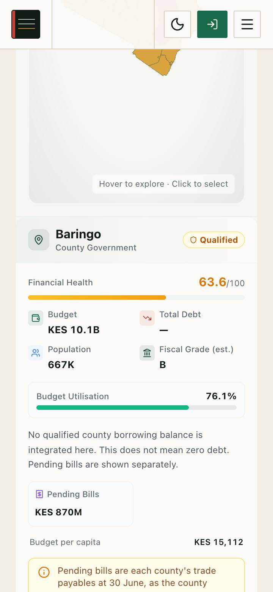</div><figcaption><b>Before</b> · home panel, other scores</figcaption></figure>
  </div>
</article>

<article class="spec" id="e11">
  <div class="spec-h"><div class="tags"><span class="tag p1">P1</span><span class="tag">Effort M</span><span class="tag">/audits</span></div>
  <h3>E11 · Audit findings on phones: cards instead of a 9-column table</h3></div>
  <div class="spec-b">
    <h6>Problem</h6>
    <ul>
      <li>The all-findings table has 9 columns in a sideways scroller (446 pages).</li>
      <li>The “Finding type” column shows the report <i>section</i> name as a large orange or blue block on every row, for example “Report on Lawfulness and Effectiveness in the Use of Public Resources”. It takes most of the row and is the same for most rows. The severity column is cut off at the right edge (“wa…”, “in…”).</li>
      <li>The “Findings by Type” chart repeats the section names as axis labels and uses stock Tailwind rainbow colours (<code>#ef4444</code>, <code>#8b5cf6</code>, <code>#ec4899</code>, <code>#14b8a6</code>…, <code>AuditsPageClient.tsx:68-75</code>) rather than brand colours.</li>
      <li>“Recurring findings… the real scandals” is an editorial claim on a page that otherwise keeps to the record.</li>
    </ul>
    <h6>Proposal</h6>
    <ul>
      <li>Under 768px, render each finding as a card: entity and year, the finding title (the report’s own words), severity as word and colour, the amount if stated, and “Source: report p.N ↗”. Show the section as a small grey label.</li>
      <li>Filters become chips that open sheets (County, Year, Severity, Section), with the active filters shown as removable chips. This fixes E1 at the same time.</li>
      <li>Replace page numbers with “Show 20 more” and a visible count (“Showing 20 of 8,918”).</li>
      <li>Chart colours come from the brand categorical palette (E17). Use short section labels on the axis, and keep full names in the tooltip or sheet.</li>
      <li>Retitle “Recurring findings” to “Problems reported in more than one year” and drop “the real scandals”.</li>
    </ul>
  </div>
  <div class="ba">
    <figure><div class="shot">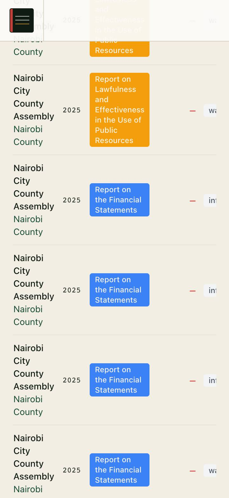</div><figcaption><b>Before</b> · /audits table at 360px</figcaption></figure>
    <figure><div class="phone"><div class="m-body">
      <div style="font-family:var(--font-display);font-weight:700;font-size:22px">All findings</div>
      <div class="m-chips" style="margin:8px 0 10px"><span class="m-chip on">Baringo ✕</span><span class="m-chip">Year ▾</span><span class="m-chip">Severity ▾</span><span class="m-chip">Section ▾</span></div>
      <div class="m-find">
        <div class="who"><span>County Executive of Baringo · FY2021/22</span></div>
        <div class="t">Unaccounted for certified seeds, breeding stock and live animals</div>
        <div class="kv"><span class="m-pill bad">Unaccounted for / loss</span><span>Amount: not stated</span></div>
        <div class="kv" style="margin-top:6px"><a href="#e11">Source: report p.311 ↗</a></div>
      </div>
      <div class="m-find">
        <div class="who"><span>Baringo County Assembly</span></div>
        <div class="t">Lack of risk management policy</div>
        <div class="kv"><span class="m-pill warn">Warning</span><span>Section: Internal controls</span></div>
      </div>
      <div style="font-size:12px;color:var(--m-muted);text-align:center">Showing 2 of 196 for Baringo</div>
      <div class="m-showall">Show 20 more</div>
    </div></div><figcaption><i>After</i> · finding cards + filter chips</figcaption></figure>
  </div>
</article>

<article class="spec" id="e12">
  <div class="spec-h"><div class="tags"><span class="tag p1">P1</span><span class="tag">Effort S</span><span class="tag">Home · /counties · /counties/[id] · Budget · Debt · Audits</span></div>
  <h3>E12 · Say each caveat once, and say what “freshness” actually knows</h3></div>
  <div class="spec-b">
    <h6>Problem</h6>
    <ul>
      <li>The same 75-word pending-bills definition (“Pending bills are each county’s trade payables at 30 June…”) appears in an amber box in the home county panel, near the top of /counties, and above the content on each county page. Each time it sits <i>before</i> the figures it qualifies.</li>
      <li>A “Freshness unknown” card is the first thing under the page header on Budget, Debt, Counties and Audits. The live API returns <code>"status":"unknown"</code> and <code>"last_updated":null</code> for COB and OAG, but it also returns <code>last_checked</code> dates (COB 2026-10-27, OAG 2026-11-02). So the badge is honest, but it shows the least useful thing the data has, in the most prominent place.</li>
    </ul>
    <p class="receipt">GET /api/v1/data/freshness → {"source":"COB",…,"last_updated":null,"last_checked":"2026-10-27",…,"status":"unknown"} · badge copy: <code>DataFreshnessBadge.tsx:63</code></p>
    <h6>Proposal</h6>
    <ul>
      <li>Replace the paragraph with a one-line note next to the figure it explains: “— means no verified figure is published yet, not zero. What counts as county debt? ›”. The link opens the full text in an InfoSheet.</li>
      <li>When status is unknown but <code>last_checked</code> exists, show “Checked 27 Oct 2026 · Controller of Budget” in small type by the source chip, not as a card at the top. Keep “Out of date” in warning colour near the top, because that is information the reader needs.</li>
      <li>On /audits, keep “Questioned ≠ confirmed loss” prominent (it is the model note) and shorten the “No total money figure is shown” paragraph to two lines plus a link.</li>
    </ul>
  </div>
  <div class="ba">
    <figure><div class="shot mid">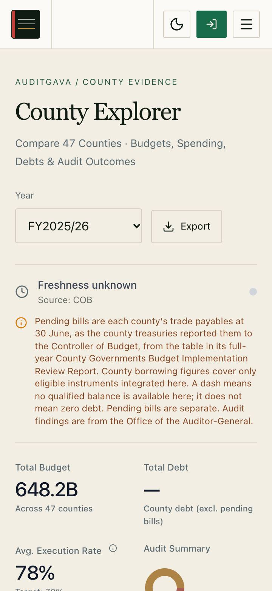</div><figcaption><b>Before</b> · /counties first screen</figcaption></figure>
    <figure><div class="phone"><div class="m-body">
      <div style="font-family:var(--font-display);font-weight:700;font-size:28px;line-height:1">County Explorer</div>
      <p class="m-sub" style="margin-top:6px">Compare budgets, spending and audits for all 47 counties.</p>
      <div class="m-search" style="margin-top:0">⌕ Find your county</div>
      <div style="display:grid;grid-template-columns:1fr 1fr;gap:10px">
        <div class="m-card"><div class="m-lbl">Total budget</div><div style="font-family:var(--font-display);font-weight:700;font-size:26px">KES 648.2B</div><div style="font-size:12px;color:var(--m-muted)">47 counties · FY 2025/26</div></div>
        <div class="m-card"><div class="m-lbl">County debt</div><div style="font-family:var(--font-display);font-weight:700;font-size:18px;margin-top:4px">Not published yet</div><div style="font-size:12px;color:var(--m-sage);font-weight:600">What counts? ›</div></div>
      </div>
      <div style="font-size:12px;color:var(--m-muted);margin-top:10px">Checked 27 Oct 2026 · Controller of Budget</div>
    </div></div><figcaption><i>After</i> · search first, caveat one tap away</figcaption></figure>
  </div>
</article>

<article class="spec" id="e13">
  <div class="spec-h"><div class="tags"><span class="tag p1">P1</span><span class="tag">Effort M</span><span class="tag">Home · Budget · Debt · Audits charts</span></div>
  <h3>E13 · Charts on phones: one idea per chart, readable numbers</h3></div>
  <div class="spec-b">
    <h6>Problem</h6>
    <ul>
      <li><b>Dual axes.</b> The home debt chart plots KES on the left axis and a % line on the right. So does “The cost of debt over time” on /debt. Two scales on one small chart is hard for any reader and very hard for a non-specialist.</li>
      <li><b>Repeated encodings.</b> /debt shows a nested double donut, then a stacked bar of the same split, then a list of the same split. /budget shows a stacked “where it goes” bar, then a donut of the same breakdown (“Hover a slice for the value”).</li>
      <li><b>Unreadable numbers and labels.</b> The aging table prints “KES 44,208,110,000”. Legends are truncated (“Interest on d…”, “Recurrent (ex…”, “Contingency f…”). Percentages carry two decimals (75.18%) with no reason.</li>
      <li><b>Accessibility.</b> axe svg-img-alt fails on 17 recharts paths across Budget, Debt and Counties, and the charts have no text alternative except one “Read chart data” toggle.</li>
    </ul>
    <h6>Proposal</h6>
    <ul>
      <li>On phones, lead with the <b>sorted bar list</b> (label, value and bar on one row) and drop the donut, or keep it as a small 96px thumbnail. Lloyds and Copilot do this for “spending by category” (see references).</li>
      <li>Split dual-axis charts into two small stacked charts with a shared x-axis (amount, then % of revenue), or show the % as labelled points.</li>
      <li>Format with one helper: KES 44.2B, whole percentages under 100 unless precision changes the reading. Show exact values in the source sheet.</li>
      <li>Wrap legend labels to two lines instead of truncating.</li>
      <li>Every chart gets a one-sentence takeaway above it (“Domestic lenders hold more than half of Kenya’s debt”) written from the data, and <code>aria-hidden</code> on the SVG plus a visually hidden table or the existing list as its alternative.</li>
    </ul>
  </div>
  <div class="ba">
    <figure><div class="shot">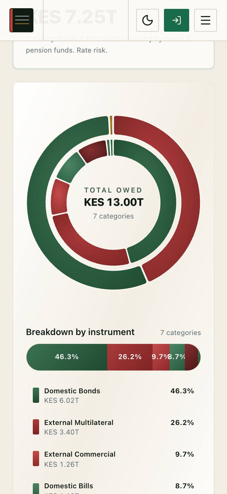</div><figcaption><b>Before</b> · donut + bar + list, same data</figcaption></figure>
    <figure><div class="phone"><div class="m-body">
      <div style="font-family:var(--font-display);font-weight:700;font-size:22px;line-height:1.1">Who Kenya owes</div>
      <p class="m-sub" style="margin:4px 0 8px">Kenyan banks and pension funds hold more than half of the debt.</p>
      <div class="m-blist">
        <div class="r"><span class="n">Domestic bonds</span><span class="v">KES 6.02T</span><span class="bar"><b style="width:100%;background:var(--c1)"></b></span><span class="s">46% · Treasury bonds</span></div>
        <div class="r"><span class="n">World Bank &amp; other multilaterals</span><span class="v">3.40T</span><span class="bar"><b style="width:56%;background:var(--c2)"></b></span><span class="s">26% · external</span></div>
        <div class="r"><span class="n">Eurobonds &amp; commercial loans</span><span class="v">1.26T</span><span class="bar"><b style="width:21%;background:var(--c2)"></b></span><span class="s">10% · external</span></div>
        <div class="r"><span class="n">Treasury bills</span><span class="v">1.13T</span><span class="bar"><b style="width:19%;background:var(--c1)"></b></span><span class="s">9% · domestic</span></div>
        <div class="r"><span class="n">Other governments (bilateral)</span><span class="v">1.01T</span><span class="bar"><b style="width:17%;background:var(--c2)"></b></span><span class="s">8% · external</span></div>
      </div>
      <div class="legend" style="color:var(--m-muted);font-size:12px"><span>■ <span style="color:var(--c1)">Domestic</span></span><span>■ <span style="color:var(--c2)">External</span></span><span>+2 smaller lines</span></div>
    </div></div><figcaption><i>After</i> · one sorted list, takeaway first</figcaption></figure>
    <figure><div class="shot">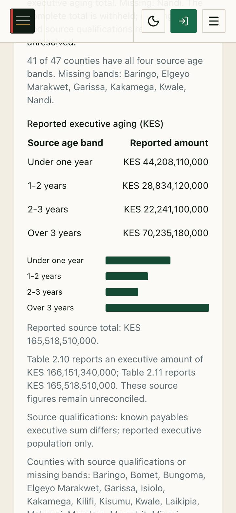</div><figcaption><b>Before</b> · 11-digit amounts</figcaption></figure><figure><div class="phone"><div class="m-body"><p class="m-cmp"><b>KES 70.2B has gone unpaid for over three years</b>, the largest group.</p><svg viewBox="0 0 300 128" width="100%" role="img" aria-label="County unpaid bills by age: 70.2 billion has been unpaid for more than three years" class="mchart"><text x="84.0" y="21.0" class="lab" text-anchor="end" font-weight="500">Under 1 year</text><rect x="92" y="10" width="98.2" height="16" rx="3" fill="var(--m-mute-bar)"/><text x="195.2" y="22.0" class="lab" fill="var(--m-ink)" font-weight="500">44.2B</text><text x="84.0" y="51.0" class="lab" text-anchor="end" font-weight="500">1–2 years</text><rect x="92" y="40" width="64.0" height="16" rx="3" fill="var(--m-cautionf)"/><text x="161.0" y="52.0" class="lab" fill="var(--m-ink)" font-weight="500">28.8B</text><text x="84.0" y="81.0" class="lab" text-anchor="end" font-weight="500">2–3 years</text><rect x="92" y="70" width="49.3" height="16" rx="3" fill="var(--m-cautionf)"/><text x="146.3" y="82.0" class="lab" fill="var(--m-ink)" font-weight="500">22.2B</text><text x="84.0" y="111.0" class="lab" text-anchor="end" font-weight="700">Over 3 years</text><rect x="92" y="100" width="156.0" height="16" rx="3" fill="var(--m-alarm)"/><text x="253.0" y="112.0" class="lab" fill="var(--m-ink)" font-weight="700">70.2B</text></svg><div style="font-size:12px;color:var(--m-muted)">County executives, 46 of 47 counties, at 30 June 2026 · COB</div></div></div><figcaption><i>After</i> · amounts in billions, oldest in red</figcaption></figure>
  </div>
</article>

<article class="spec" id="e14">
  <div class="spec-h"><div class="tags"><span class="tag p1">P1</span><span class="tag">Effort M</span><span class="tag">Shared · Navigation drawer + desktop nav</span></div>
  <h3>E14 · Navigation: put Audit findings in the menu, and group the drawer</h3></div>
  <div class="spec-b">
    <h6>Problem</h6>
    <ul>
      <li>The site is called AuditGava, but <b>/audits is not in the primary nav or the drawer</b>. It is linked only from the footer and from buttons inside home cards. Sources and About are footer-only too (<code>Navigation.tsx:112-119</code>, <code>Footer.tsx:8-12</code>).</li>
      <li>The drawer lists six uppercase labels with ordinal numbers (01–06) and no description, so “Follow the Money” and “County Explorer” don’t say how they differ.</li>
      <li>The drawer’s sign-in button is copper red, the colour used elsewhere for debt and risk.</li>
      <li>The desktop nav only appears at 1280px and up (<code>xl:flex</code>), so tablets and small laptops get the phone drawer.</li>
    </ul>
    <h6>Proposal</h6>
    <ul>
      <li>Drawer groups:
        <ul>
          <li><b>Explore the money</b>: National debt, Budget &amp; spending, Counties, Follow the money, <b>Audit findings</b>.</li>
          <li><b>Understand</b>: Learning hub, Glossary.</li>
          <li><b>About the data</b>: Sources, About.</li>
        </ul>
        Each item gets a one-line description (Slack’s “More” list pattern). Drop the ordinal numbers, which encode no real sequence.</li>
      <li>Language becomes a labelled segmented control (English · Kiswahili · Plain English), with the theme toggle below it. Sign-in becomes a secondary outline button.</li>
      <li>Desktop: add “Audits” to the top nav and show the full nav from 1024px by tightening padding. Check the labels fit at 1024px; shortening “Budget &amp; Spending” to “Budget” gives the most room.</li>
      <li><b>No bottom tab bar for now.</b> Mobbin’s finance apps use 4 tabs plus “More”, but those are apps opened every day. AuditGava visitors mostly land on one deep page from a shared link and read down it. A permanent bar would take about 7% of a 780px screen on every page. The jump chips from E7 address the real problem, which is long pages, more directly. Revisit if analytics show repeat sessions that hop between sections.</li>
    </ul>
  </div>
  <div class="ba">
    <figure><div class="shot">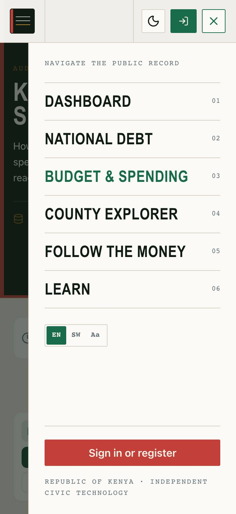</div><figcaption><b>Before</b> · drawer</figcaption></figure>
    <figure><div class="phone">
      <div class="m-drawer">
        <div class="m-dg">Explore the money</div>
        <div class="m-di"><b>National debt</b><span>What Kenya owes and to whom</span></div>
        <div class="m-di"><b>Budget &amp; spending</b><span>Where this year’s money comes from and goes</span></div>
        <div class="m-di"><b>Counties</b><span>Find your county’s budget and audit record</span></div>
        <div class="m-di"><b>Follow the money</b><span>Allocated vs spent, county by county</span></div>
        <div class="m-di"><b>Audit findings</b><span>What the Auditor-General questioned</span></div>
        <div class="m-dg">Understand</div>
        <div class="m-di" style="min-height:40px"><b>Learning hub</b></div>
        <div class="m-dg">About the data</div>
        <div class="m-di" style="min-height:40px"><b>Sources · About</b></div>
        <div class="m-seg"><span class="on">English</span><span>Kiswahili</span><span>Plain</span></div>
      </div>
    </div><figcaption><i>After</i> · grouped, described, audits added</figcaption></figure>
  </div>
</article>

<article class="spec" id="e15">
  <div class="spec-h"><div class="tags"><span class="tag p1">P1</span><span class="tag">Effort S</span><span class="tag">Site-wide</span></div>
  <h3>E15 · Touch targets under 44px</h3></div>
  <div class="spec-b">
    <h6>Problem</h6>
    <p>Home has 60 tappable elements under 24px. Most are InfoTip “ⓘ” triggers at 15×15 (e.g. “What is Debt-to-GDP Ratio?”) and county markers. Other small targets:</p>
    <ul>
      <li>/audits has 20 source-icon links at 16×16.</li>
      <li>LangSwitcher buttons are 28px with 11px text (<code>LangSwitcher.tsx:25,37</code>).</li>
      <li>Counties pagination is 28×28 (<code>CountiesPageClient.tsx:1453</code>).</li>
      <li>Sign-in is 36px tall with no tap expansion (<code>Navigation.tsx:250</code>).</li>
      <li>The debt National/Counties toggle uses <code>py-1.5 text-xs</code>.</li>
    </ul>
    <h6>Proposal</h6>
    <p>Apply the existing <code>.tap-44</code> and <code>.tap-24</code> utilities (<code>globals.css:575-595</code>; only 4 elements use them today) to every icon-only control. Make InfoTip triggers 24px visible with a 44px hit area. Turn source icons into text links (“p.239 ↗”), which are larger and readable. Keep at least 8px between neighbouring targets.</p>
  </div>
<div class="ba"><figure><div class="shot ">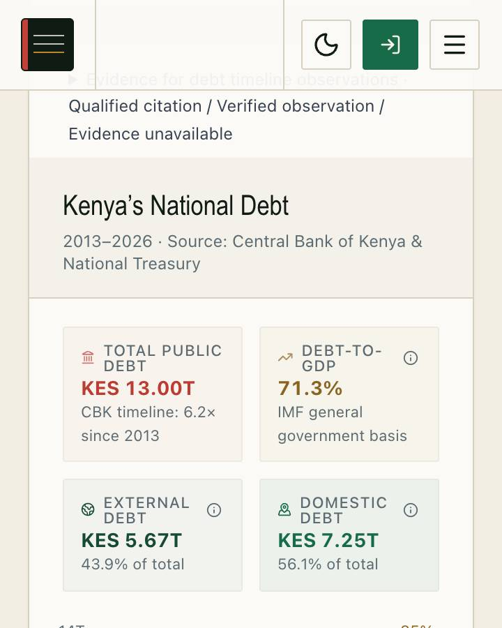</div><figcaption><b>Before</b> · 15px ⓘ buttons</figcaption></figure><figure><div class="phone"><div class="m-body"><div class="m-card"><div style="display:flex;justify-content:space-between;align-items:center"><div class="m-lbl">Debt-to-GDP</div><span class="m-hit"><span>i</span></span></div><div class="m-big" style="font-size:30px;color:var(--m-ink)">71.3%</div></div><div style="font-size:12px;color:var(--m-muted);margin:6px 0 14px">The dashed box is the 44px tap area around the 24px ⓘ</div><div class="m-pager"><span>‹ Prev</span><span class="on">1</span><span>2</span><span>3</span><span>Next ›</span></div></div></div><figcaption><i>After</i> · 44px tap areas</figcaption></figure></div></article>

<article class="spec" id="e16">
  <div class="spec-h"><div class="tags"><span class="tag p1">P1</span><span class="tag">Effort S</span><span class="tag">/budget</span></div>
  <h3>E16 · Content clipped inside budget cards at 360px</h3></div>
  <div class="spec-b">
    <h6>Problem</h6>
    <p>The four-year strips (“Appropriated budget”, “Tax + non-tax revenue”, “New borrowing”, “Debt service”) lay out five fixed-width year columns that end at x=390 on a 360px screen. The card clips them, so “2026/27” and its label are cut off. The Treasury APDMR callout (“KES 77.6 of every KES 100…”) is cut at its right edge too. The page doesn’t scroll sideways, so this doesn’t show up as overflow, but the content is visibly missing.</p>
    <p class="receipt">Measured at 360px: DIV.flex-1 … w=63 right=390; SPAN.text-[10px] right=390 (FiscalTrendStrip) · <code>components/budget/FiscalTrendStrip.tsx:203-204</code></p>
    <h6>Proposal</h6>
    <p>Under 400px, show the latest two years plus a mini sparkline, with the full five years in the sheet. Otherwise use <code>grid-template-columns:repeat(5,minmax(0,1fr))</code> with two-line labels. Constrain the callout with <code>min-w-0</code>/<code>max-w-full</code>.</p>
  </div>
  <div class="ba">
    <figure><div class="shot mid">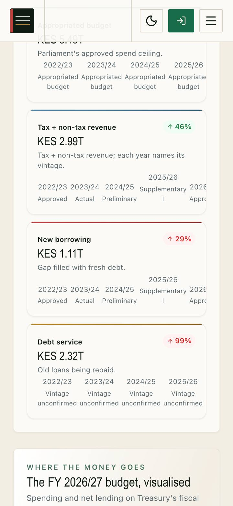</div><figcaption><b>Before</b> · last year column cut</figcaption></figure>
    <figure><div class="shot mid">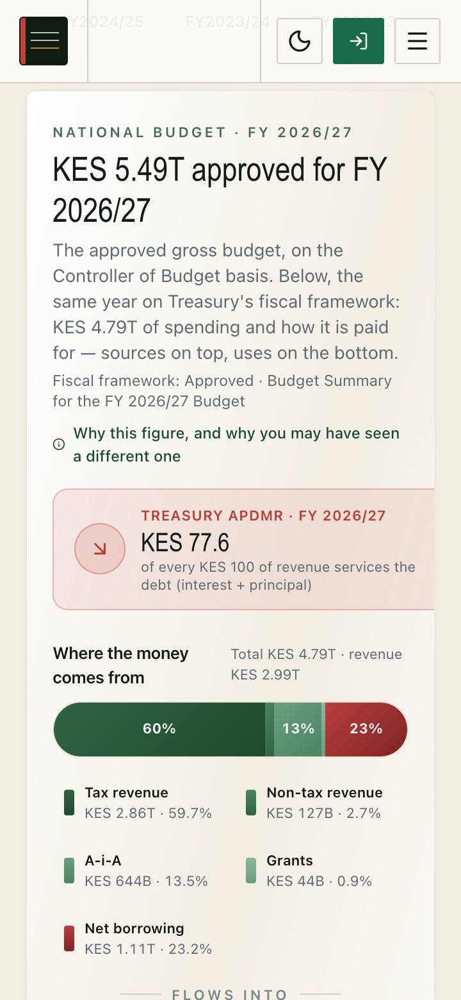</div><figcaption><b>Before</b> · callout cut at right</figcaption></figure><figure><div class="phone"><div class="m-body"><div class="m-sec" style="margin-top:0">The past five budgets</div><div class="m-lbl">Tax + non-tax revenue</div><p class="m-cmp" style="font-size:13px;margin:2px 0 0">Up 46% since FY2022/23</p><svg viewBox="0 0 300 110" width="100%" class="mchart" role="img" aria-label="Tax and non-tax revenue by year"><rect x="21.0" y="41.5" width="34.0" height="38.5" rx="3" fill="var(--m-mute-bar)"/><text x="38.0" y="36.5" class="lab" text-anchor="middle" font-weight="500">2.04T</text><text x="38.0" y="93.0" class="ax" text-anchor="middle">22/23</text><text x="38.0" y="105.0" class="ax" text-anchor="middle" font-size="9.5">Appr</text><rect x="77.0" y="36.8" width="34.0" height="43.2" rx="3" fill="var(--m-mute-bar)"/><text x="94.0" y="31.8" class="lab" text-anchor="middle" font-weight="500">2.29T</text><text x="94.0" y="93.0" class="ax" text-anchor="middle">23/24</text><text x="94.0" y="105.0" class="ax" text-anchor="middle" font-size="9.5">Actual</text><rect x="133.0" y="34.4" width="34.0" height="45.6" rx="3" fill="var(--m-mute-bar)"/><text x="150.0" y="29.4" class="lab" text-anchor="middle" font-weight="500">2.42T</text><text x="150.0" y="93.0" class="ax" text-anchor="middle">24/25</text><text x="150.0" y="105.0" class="ax" text-anchor="middle" font-size="9.5">Prelim</text><rect x="189.0" y="27.6" width="34.0" height="52.4" rx="3" fill="var(--m-mute-bar)"/><text x="206.0" y="22.6" class="lab" text-anchor="middle" font-weight="500">2.78T</text><text x="206.0" y="93.0" class="ax" text-anchor="middle">25/26</text><text x="206.0" y="105.0" class="ax" text-anchor="middle" font-size="9.5">Supp</text><rect x="245.0" y="23.6" width="34.0" height="56.4" rx="3" fill="var(--m-ink)"/><text x="262.0" y="18.6" class="lab" text-anchor="middle" font-weight="700">2.99T</text><text x="262.0" y="93.0" class="ax" text-anchor="middle">26/27</text><text x="262.0" y="105.0" class="ax" text-anchor="middle" font-size="9.5">Appr</text><line x1="10" x2="290" y1="80" y2="80" stroke="var(--m-line)"/></svg><div class="m-lbl" style="margin-top:6px">Debt service</div><p class="m-cmp" style="font-size:13px;margin:2px 0 0">Up 99% since FY2022/23</p><svg viewBox="0 0 300 96" width="100%" class="mchart" role="img" aria-label="Debt service by year"><rect x="21.0" y="44.2" width="34.0" height="21.8" rx="3" fill="var(--m-mute-bar)"/><text x="38.0" y="39.2" class="lab" text-anchor="middle" font-weight="500">1.16T</text><text x="38.0" y="79.0" class="ax" text-anchor="middle">22/23</text><rect x="77.0" y="35.2" width="34.0" height="30.8" rx="3" fill="var(--m-mute-bar)"/><text x="94.0" y="30.2" class="lab" text-anchor="middle" font-weight="500">1.64T</text><text x="94.0" y="79.0" class="ax" text-anchor="middle">23/24</text><rect x="133.0" y="31.2" width="34.0" height="34.8" rx="3" fill="var(--m-mute-bar)"/><text x="150.0" y="26.2" class="lab" text-anchor="middle" font-weight="500">1.85T</text><text x="150.0" y="79.0" class="ax" text-anchor="middle">24/25</text><rect x="189.0" y="30.3" width="34.0" height="35.7" rx="3" fill="var(--m-mute-bar)"/><text x="206.0" y="25.3" class="lab" text-anchor="middle" font-weight="500">1.90T</text><text x="206.0" y="79.0" class="ax" text-anchor="middle">25/26</text><rect x="245.0" y="22.4" width="34.0" height="43.6" rx="3" fill="var(--m-alarm)"/><text x="262.0" y="17.4" class="lab" text-anchor="middle" font-weight="700">2.32T</text><text x="262.0" y="79.0" class="ax" text-anchor="middle">26/27</text><line x1="10" x2="290" y1="66" y2="66" stroke="var(--m-line)"/></svg><div style="font-size:11.5px;color:var(--m-muted)">Basis under each year: Appr = approved, Prelim = preliminary, Supp = supplementary</div></div></div><figcaption><i>After</i> · small multiples, nothing clipped</figcaption></figure>
  </div>
</article>

<!-- ======================= P2 ======================= -->
<h2>P2 · Later and foundation</h2>

<article class="spec" id="e17">
  <div class="spec-h"><div class="tags"><span class="tag p2">P2</span><span class="tag">Effort L</span><span class="tag">Design system</span></div>
  <h3>E17 · Consolidate the design system the pages already imply</h3></div>
  <div class="spec-b">
    <h6>What the code shows</h6>
    <ul>
      <li>119 distinct raw hex colours in TSX (400 literals). <code>ExecutionAuditLens.tsx</code> alone has 63, with its own mauve and rust palette. The <code>primary/secondary/success/warning/danger</code> scales in <code>tailwind.config.js:55-73</code> are used zero times.</li>
      <li>Seven radius sizes in use: <code>rounded-xl</code> 202, <code>-full</code> 189, <code>-lg</code> 140, <code>-2xl</code> 111 and more. A global rule then flattens 2xl and 3xl inside PageShell (<code>globals.css:318-321</code>).</li>
      <li>County pages use Georgia serif headings, while the rest of the site uses Barlow Condensed.</li>
      <li>Fonts load through a Google Fonts <code>@import</code> placed <i>after</i> the <code>@tailwind</code> directives (<code>globals.css:1-5</code>). <code>@import</code> must come first in a stylesheet, so this ordering risks it being dropped, and it blocks rendering either way. <code>next/font</code> is not used.</li>
      <li>142 hand-rolled <code>&lt;button&gt;</code> elements. There is no shared Button, Tabs or Tooltip primitive in use, and the shared <code>.btn-*</code> classes are used 3 times.</li>
    </ul>
    <h6>Proposal</h6>
    <ul>
      <li><b>Colour roles, not hexes.</b>
        <ul>
          <li>Brand: ink, forest, sage, gold, sand, cream, copper.</li>
          <li>Status: good, caution, serious, neutral, unknown. Each comes as a text, background and border trio that passes AA on cream and on dark.</li>
          <li>A 6-colour categorical chart palette drawn from the brand, plus one sequential grade scale (E10).</li>
        </ul>
        Remove the unused scales.</li>
      <li><b>Type.</b> Load the three families with <code>next/font</code> (self-hosted, no layout shift). Use Barlow Condensed for display everywhere, including county pages. Phone scale: 12 / 14 / 16 / 20 / 28 / 38.</li>
      <li><b>Radius.</b> Two values only: 4px for controls and cards, and full for pills.</li>
      <li><b>Primitives</b>: Button, Card, StatCard (E9), StatusPill, SourceChip + InfoSheet (E3), SegmentedControl, FilterChip, DataRow (E6), ReportCard (E10). Write each once with its states (hover, focus, pressed, disabled, loading), then migrate page by page.</li>
    </ul>
    <div class="tok" aria-label="Proposed core colour roles">
      <div><i style="background:#101B14"></i><span>ink #101B14</span></div>
      <div><i style="background:#176B49"></i><span>sage / good #176B49</span></div>
      <div><i style="background:#C98A2B"></i><span>caution fill #C98A2B · text #8A5A10</span></div>
      <div><i style="background:#9E2F26"></i><span>serious #9E2F26</span></div>
      <div><i style="background:#C9473D"></i><span>copper (brand) #C9473D</span></div>
      <div><i style="background:#D9AE5B"></i><span>gold text on dark #D9AE5B</span></div>
      <div><i style="background:#F3EEE4"></i><span>sand #F3EEE4</span></div>
      <div><i style="background:#5C6B72"></i><span>muted text #5C6B72</span></div>
    </div>
    <p style="font-size:13.5px;color:var(--muted);margin-top:10px">Updated in round two: copper and red are reserved for alarms (<a href="#s-rule">Part 4</a>). Brand accents move to forest and gold, and chart categories use the validated chart palette in <a href="#c-palette">Part 3</a>.</p>
  </div>
<div class="ba"><figure><div class="shot ">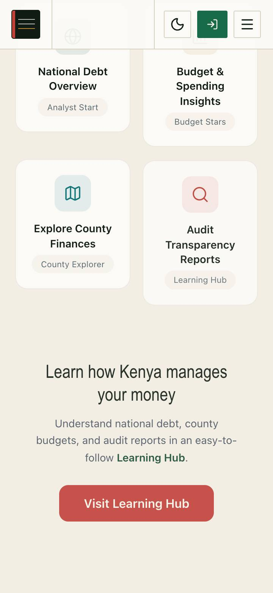</div><figcaption><b>Before</b> · icons in tinted squares, mixed styles</figcaption></figure><figure><div class="shot ">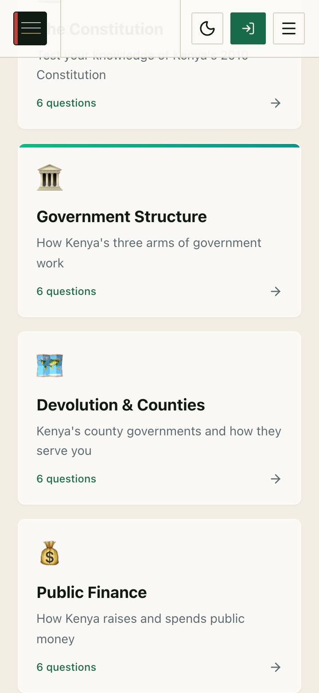</div><figcaption><b>Before</b> · emoji icons, rainbow borders</figcaption></figure><figure><div class="phone"><div class="m-body"><div class="m-sec" style="margin-top:0">Keep learning</div><div class="m-plain"><svg viewBox="0 0 24 24" width="20" height="20" fill="none" stroke="currentColor" stroke-width="1.8" aria-hidden="true"><path d="M4 5h11a3 3 0 013 3v11H7a3 3 0 01-3-3z M8 9h7 M8 13h5"/></svg><div><b>The Constitution</b><span>264 articles, each with a plain-English note</span></div><i>›</i></div><div class="m-plain"><svg viewBox="0 0 24 24" width="20" height="20" fill="none" stroke="currentColor" stroke-width="1.8" aria-hidden="true"><path d="M9 9a3 3 0 116 0c0 2-3 2-3 4 M12 17h.01 M12 3a9 9 0 100 18 9 9 0 000-18z"/></svg><div><b>Civic quiz</b><span>36 questions in 6 topics</span></div><i>›</i></div><div class="m-plain"><svg viewBox="0 0 24 24" width="20" height="20" fill="none" stroke="currentColor" stroke-width="1.8" aria-hidden="true"><path d="M3 21h18 M5 21V10 M19 21V10 M12 3l9 6H3z M9 21v-6h6v6"/></svg><div><b>How Kenya is governed</b><span>Three arms and two levels of government</span></div><i>›</i></div><div style="font-size:12px;color:var(--m-muted);margin-top:8px">One line-icon set in ink · 4px radius · no tinted squares, gradients or emoji</div></div></div><figcaption><i>After</i> · flat, consistent cards</figcaption></figure></div></article>

<article class="spec" id="e18">
  <div class="spec-h"><div class="tags"><span class="tag p2">P2</span><span class="tag">Effort M</span><span class="tag">/sources</span></div>
  <h3>E18 · Separate the citizen’s source list from the data-health dashboard</h3></div>
  <div class="spec-b">
    <h6>Problem</h6>
    <p>/sources is 13.7 phone screens, and 144 of its 308 text elements are 11px. Its “Data health” section lists database tables (“Counties · 47 rows · Stored lineage unresolved · 47 rows without resolved lineage · last changed 72d ago · stale after 3650d”). That information is useful to the team and to auditors. It doesn’t answer the citizen’s question: “who publishes these numbers and can I trust them?”</p>
    <h6>Proposal</h6>
    <p>Lead /sources with the 11 publishers. For each, show what AuditGava takes from them, how often they publish, the last edition received, and a link. Move Data health to a collapsed “For researchers: data health” section or a /sources/health sub-route, with the same content. Reword the status labels in that view (“Current” and “Stale” stay; “stored lineage unresolved” becomes “Not yet linked to a source document”).</p>
  </div>
  <div class="ba"><figure><div class="shot mid">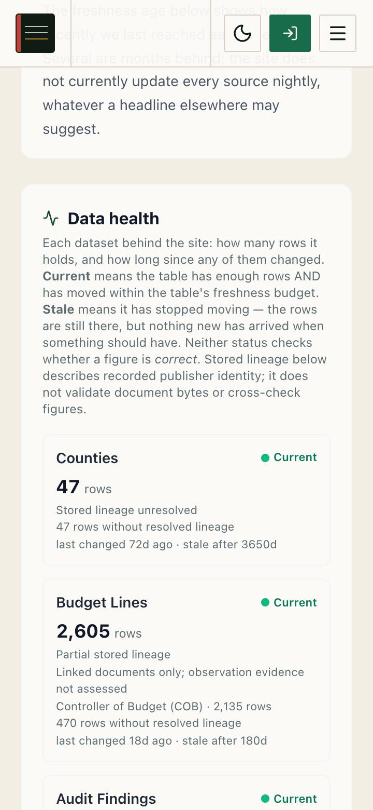</div><figcaption><b>Before</b> · data health cards</figcaption></figure><figure><div class="phone"><div class="m-body"><div style="font-family:var(--font-display);font-weight:700;font-size:24px;line-height:1">Where the data comes from</div><p class="m-cmp" style="font-size:13px;margin:6px 0 8px">11 public publishers. What we take from each, and when it was last updated.</p><div class="m-pub"><b>Controller of Budget</b><span>County and national spending · quarterly</span><span>Latest: County BIRR FY2025/26 · checked 27 Oct 2026</span></div><div class="m-pub"><b>Office of the Auditor-General</b><span>Audit reports and findings · yearly</span><span>Latest: reports covering FY2024/25 · checked 2 Nov 2026</span></div><div class="m-pub"><b>Central Bank of Kenya</b><span>Public debt and bond register · monthly</span></div><div class="m-more" style="color:var(--m-muted)"><span>For researchers: data health by table</span><span>▾</span></div></div></div><figcaption><i>After</i> · publishers first, data health folded</figcaption></figure></div>
</article>

<article class="spec" id="e19">
  <div class="spec-h"><div class="tags"><span class="tag p2">P2</span><span class="tag">Effort S</span><span class="tag">Shared · Footer + Newsletter</span></div>
  <h3>E19 · The footer is 1.2 phone screens</h3></div>
  <div class="spec-b">
    <p>The footer is 963px tall at 360px, and the newsletter block above it adds about 450px more. Lay the five links out in two columns, shrink the brand block to the wordmark and one line, put social icons on one row, and keep the corrections email. <b>Keep the five social logos exactly as they are today:</b> the standard Facebook, Instagram, Threads, TikTok and X brand marks, at 44×44px tap size, each opening the AuditGava account in a new tab. <i>Corrected in round five: an earlier mockup drew them as text abbreviations, which was a drawing shortcut, not a proposal.</i> Target: about 500px. Write the newsletter heading to say what arrives and how often, as it does now, at about half the height.</p>
  </div>
<div class="ba"><figure><div class="shot ">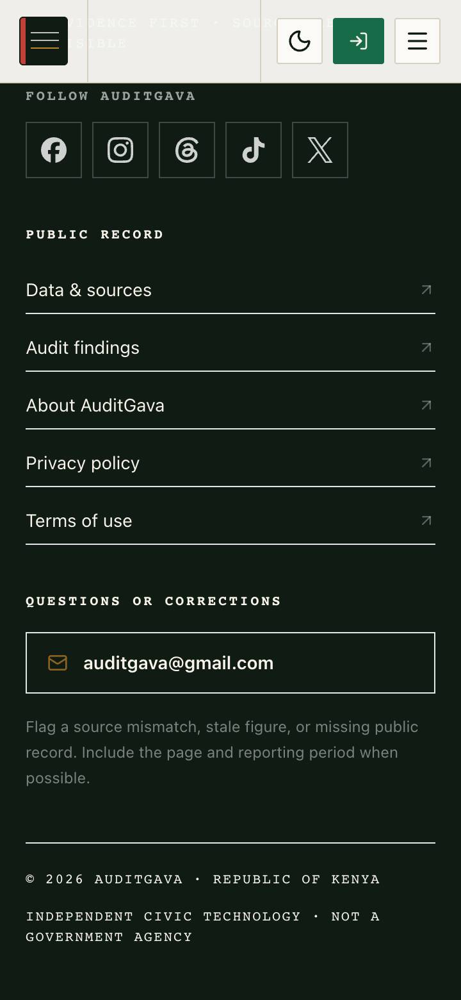</div><figcaption><b>Before</b> · 963px footer</figcaption></figure><figure><div class="phone"><div class="m-foot"><div class="m-word" style="color:#FBFAF6">AuditGava</div><div style="font-size:12.5px;opacity:.8;margin:4px 0 12px">Kenya’s public money, traced to the official record.</div><div class="m-foot-links"><span>Data &amp; sources</span><span>Audit findings</span><span>About</span><span>Privacy</span><span>Terms</span><span>Newsletter</span></div><div style="font-size:12.5px;margin:12px 0 4px;opacity:.85">Corrections: auditgava@gmail.com</div><div style="font-size:12px;opacity:.75;margin-top:12px">Follow AuditGava</div><div class="m-foot-soc"><span title="Facebook" aria-label="AuditGava on Facebook"><svg viewBox="0 0 24 24" width="18" height="18" aria-hidden="true"><path fill="currentColor" d="M9.101 23.691v-7.98H6.627v-3.667h2.474v-1.58c0-4.085 1.848-5.978 5.858-5.978c.401 0 .955.042 1.468.103a9 9 0 0 1 1.141.195v3.325a9 9 0 0 0-.653-.036a27 27 0 0 0-.733-.009c-.707 0-1.259.096-1.675.309a1.7 1.7 0 0 0-.679.622c-.258.42-.374.995-.374 1.752v1.297h3.919l-.386 2.103l-.287 1.564h-3.246v8.245C19.396 23.238 24 18.179 24 12.044c0-6.627-5.373-12-12-12s-12 5.373-12 12c0 5.628 3.874 10.35 9.101 11.647"/></svg></span><span title="Instagram" aria-label="AuditGava on Instagram"><svg viewBox="0 0 24 24" width="18" height="18" aria-hidden="true"><path fill="currentColor" d="M7.03.084c-1.277.06-2.149.264-2.91.563a5.9 5.9 0 0 0-2.124 1.388a5.9 5.9 0 0 0-1.38 2.127C.321 4.926.12 5.8.064 7.076s-.069 1.688-.063 4.947s.021 3.667.083 4.947c.061 1.277.264 2.149.563 2.911c.308.789.72 1.457 1.388 2.123a5.9 5.9 0 0 0 2.129 1.38c.763.295 1.636.496 2.913.552c1.278.056 1.689.069 4.947.063s3.668-.021 4.947-.082c1.28-.06 2.147-.265 2.91-.563a5.9 5.9 0 0 0 2.123-1.388a5.9 5.9 0 0 0 1.38-2.129c.295-.763.496-1.636.551-2.912c.056-1.28.07-1.69.063-4.948c-.006-3.258-.02-3.667-.081-4.947c-.06-1.28-.264-2.148-.564-2.911a5.9 5.9 0 0 0-1.387-2.123a5.9 5.9 0 0 0-2.128-1.38c-.764-.294-1.636-.496-2.914-.55C15.647.009 15.236-.006 11.977 0S8.31.021 7.03.084m.14 21.693c-1.17-.05-1.805-.245-2.228-.408a3.7 3.7 0 0 1-1.382-.895a3.7 3.7 0 0 1-.9-1.378c-.165-.423-.363-1.058-.417-2.228c-.06-1.264-.072-1.644-.08-4.848c-.006-3.204.006-3.583.061-4.848c.05-1.169.246-1.805.408-2.228c.216-.561.477-.96.895-1.382a3.7 3.7 0 0 1 1.379-.9c.423-.165 1.057-.361 2.227-.417c1.265-.06 1.644-.072 4.848-.08c3.203-.006 3.583.006 4.85.062c1.168.05 1.804.244 2.227.408c.56.216.96.475 1.382.895s.681.817.9 1.378c.165.422.362 1.056.417 2.227c.06 1.265.074 1.645.08 4.848c.005 3.203-.006 3.583-.061 4.848c-.051 1.17-.245 1.805-.408 2.23c-.216.56-.477.96-.896 1.38a3.7 3.7 0 0 1-1.378.9c-.422.165-1.058.362-2.226.418c-1.266.06-1.645.072-4.85.079s-3.582-.006-4.848-.06m9.783-16.192a1.44 1.44 0 1 0 1.437-1.442a1.44 1.44 0 0 0-1.437 1.442M5.839 12.012a6.161 6.161 0 1 0 12.323-.024a6.162 6.162 0 0 0-12.323.024M8 12.008A4 4 0 1 1 12.008 16A4 4 0 0 1 8 12.008"/></svg></span><span title="Threads" aria-label="AuditGava on Threads"><svg viewBox="0 0 24 24" width="18" height="18" aria-hidden="true"><path fill="currentColor" d="M18.263 11.097c-.03-3.486-1.92-5.586-5.111-5.586c-2.13 0-3.922.963-4.863 2.499l2.062 1.438c.535-.843 1.272-1.543 2.628-1.543c1.528 0 2.318.85 2.544 2.431a15 15 0 0 0-2.236-.173c-4.125 0-6.068 1.867-6.068 4.336s1.943 3.99 4.804 3.99c3.139 0 5.013-2.115 5.781-4.735c.798.361 1.348 1.204 1.348 2.47c0 3.387-3.907 5.232-7.22 5.232c-4.885 0-8.077-3.207-8.077-8.424c0-6.392 4.223-10.487 9.9-10.487c3.808 0 5.69 1.671 6.97 3.914l2.108-1.475C21.44 2.078 18.331 0 13.663 0C6.227 0 1.168 5.277 1.168 12.934c0 7 4.953 11.066 10.856 11.066c4.878 0 9.809-2.846 9.809-7.716c0-2.545-1.46-4.231-3.569-5.187m-6.33 4.855c-1.077 0-2.026-.512-2.026-1.453c0-1.483 1.822-1.934 3.606-1.934c.678 0 1.34.045 1.927.173c-.422 1.927-1.671 3.215-3.508 3.214Z"/></svg></span><span title="TikTok" aria-label="AuditGava on TikTok"><svg viewBox="0 0 24 24" width="18" height="18" aria-hidden="true"><path fill="currentColor" d="M12.525.02c1.31-.02 2.61-.01 3.91-.02c.08 1.53.63 3.09 1.75 4.17c1.12 1.11 2.7 1.62 4.24 1.79v4.03c-1.44-.05-2.89-.35-4.2-.97c-.57-.26-1.1-.59-1.62-.93c-.01 2.92.01 5.84-.02 8.75c-.08 1.4-.54 2.79-1.35 3.94c-1.31 1.92-3.58 3.17-5.91 3.21c-1.43.08-2.86-.31-4.08-1.03c-2.02-1.19-3.44-3.37-3.65-5.71c-.02-.5-.03-1-.01-1.49c.18-1.9 1.12-3.72 2.58-4.96c1.66-1.44 3.98-2.13 6.15-1.72c.02 1.48-.04 2.96-.04 4.44c-.99-.32-2.15-.23-3.02.37c-.63.41-1.11 1.04-1.36 1.75c-.21.51-.15 1.07-.14 1.61c.24 1.64 1.82 3.02 3.5 2.87c1.12-.01 2.19-.66 2.77-1.61c.19-.33.4-.67.41-1.06c.1-1.79.06-3.57.07-5.36c.01-4.03-.01-8.05.02-12.07"/></svg></span><span title="X" aria-label="AuditGava on X"><svg viewBox="0 0 24 24" width="18" height="18" aria-hidden="true"><path fill="currentColor" d="M14.234 10.162L22.977 0h-2.072l-7.591 8.824L7.251 0H.258l9.168 13.343L.258 24H2.33l8.016-9.318L16.749 24h6.993zm-2.837 3.299l-.929-1.329L3.076 1.56h3.182l5.965 8.532l.929 1.329l7.754 11.09h-3.182z"/></svg></span></div><div style="font-family:var(--font-mono);font-size:10.5px;opacity:.6;margin-top:10px">© 2026 · Independent · not a government agency</div></div></div><figcaption><i>After</i> · about half the height</figcaption></figure></div></article>

<article class="spec" id="e20">
  <div class="spec-h"><div class="tags"><span class="tag p2">P2</span><span class="tag">Effort S</span><span class="tag">/counties/[id]</span></div>
  <h3>E20 · County page tabs: sticky, and real tabs for screen readers</h3></div>
  <div class="spec-b">
    <p>The five section buttons (Overview, Follow the Money, Budget &amp; Debt, Audit Findings, Accountability) sit in a 2×2+1 grid halfway down the first screen, and scroll away. They are <code>&lt;button aria-pressed&gt;</code>, not ARIA tabs (<code>CountyDetailClient.tsx:866-869</code>). Once the reader scrolls past them, turn them into a sticky single-row scrolling tab strip under the header. Use <code>role="tablist"</code>/<code>tab</code>/<code>tabpanel</code> with arrow-key support, and keep <code>?tab=</code>.</p>
  </div>
<div class="ba"><figure><div class="shot ">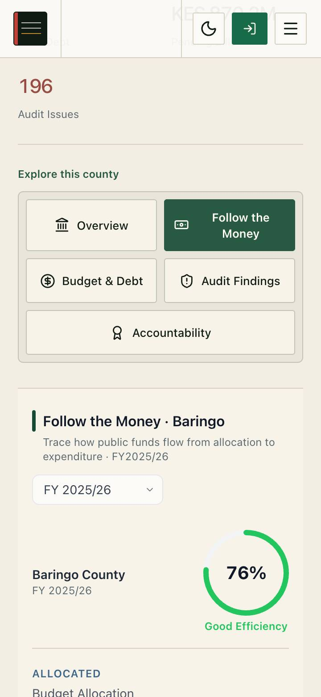</div><figcaption><b>Before</b> · 2×2+1 buttons that scroll away</figcaption></figure><figure><div class="phone"><div class="m-hdr"><span class="m-mark">AG</span><span class="m-word">AuditGava</span><span class="m-sp"></span><span class="m-btn">Menu</span></div><div class="m-sticky"><span>Baringo County</span><span style="font-size:11.5px;color:var(--m-muted)">FY2025/26</span></div><div class="m-tabs"><span>Overview</span><span>Money</span><span class="on">Budget</span><span>Audit</span><span>Score</span></div><div class="m-body"><div style="font-size:12px;color:var(--m-muted)">The tab bar stays pinned under the header while you scroll</div><div class="d-ph" style="height:120px">Budget tab content</div></div></div><figcaption><i>After</i> · sticky, one row, real tabs</figcaption></figure></div></article>

<article class="spec" id="e21">
  <div class="spec-h"><div class="tags"><span class="tag p2">P2</span><span class="tag">Effort S</span><span class="tag">Shared · LangSwitcher</span></div>
  <h3>E21 · Make Kiswahili and Plain English easy to find</h3></div>
  <div class="spec-b">
    <p>The site offers EN, SW and a Plain English mode labelled “Aa”. Its meaning appears only as a <code>title</code> tooltip (<code>LangSwitcher.tsx:14</code>), which phones never show. On phones the switcher sits inside the drawer, and on desktop it is hidden below 1280px. For a Kenyan general audience this is a major feature that hardly anyone will find. Label it in words (“Kiswahili”, “Plain English”). Offer it once in a dismissible banner on first visit when the browser language is <code>sw</code>. Keep it in the drawer (E14).</p>
  </div>
<div class="ba"><figure><div class="shot "></div><figcaption><b>Before</b> · “Aa” with no label</figcaption></figure><figure><div class="phone"><div class="m-banner"><b>Ukurasa huu unapatikana kwa Kiswahili.</b><span><i class="y">Tumia Kiswahili</i><i>Endelea kwa Kiingereza</i></span></div><div class="m-drawer"><div class="m-dg">Language</div><div class="m-seg"><span class="on">English</span><span>Kiswahili</span><span>Plain English</span></div><div style="font-size:12px;color:var(--m-muted);margin-top:8px">“Plain English” rewrites technical labels in everyday words.</div></div></div><figcaption><i>After</i> · labelled, offered on first visit</figcaption></figure></div></article>

<article class="spec" id="e22">
  <div class="spec-h"><div class="tags"><span class="tag p2">P2</span><span class="tag">Effort S</span><span class="tag">Codebase hygiene</span></div>
  <h3>E22 · Remove unused UI components before the redesign work starts</h3></div>
  <div class="spec-b">
    <p>A grep of <code>origin/main</code> found about 40 components with no importer from any route. They include seven alternative Kenya maps (<code>InteractiveKenyaMap-fixed</code>, <code>WorkingKenyaMap</code>, <code>SimpleKenyaMap</code>…), <code>*Refactored.tsx</code> duplicates with their sub-folders, <code>Tooltip.tsx</code>, <code>ui/card.tsx</code>, <code>ui/badge.tsx</code>, the <code>quiz/*</code> and <code>explainer-videos/*</code> sets, and debug components. Several use emoji icons, off-palette colours and hover-only handlers, which inflates the counts above and will confuse whoever implements E17. Deleting them first means the new primitives have one obvious home. Confirm the list with a fresh grep at the time, because it was built for this audit.</p>
  </div>
<div class="ba"><p class="novis"><b>No visible change.</b> This is code cleanup only, so there is nothing to compare on screen. It makes the visible changes above cheaper and more consistent.</p></div></article>

<h2 id="roadmap">Suggested roadmap</h2>
<p>The phases are ordered so each one makes the next cheaper. Phase 1 is safe to ship one PR at a time.</p>
<div class="phase">
  <div><h4>Phase 1 · Quick fixes</h4><small>about 1 week</small><ul><li>E1 sideways scroll + regression check</li><li>E2 phone header</li><li>E4 tap and focus parity, device copy</li><li>E16 budget clipping</li><li>E5 contrast tokens (type scale next phase)</li><li>E12 freshness wording</li><li>E22 cleanup</li></ul></div>
  <div><h4>Phase 2 · Re-layer</h4><small>about 2 weeks</small><ul><li>E3 SourceChip + InfoSheet, migrate the 14 importers</li><li>E6 compact lists + hoisted notes</li><li>E7 compact page header + jump chips</li><li>E9 StatCard</li><li>E15 touch targets</li><li>E5 type scale codemod</li></ul></div>
  <div><h4>Phase 3 · Comprehension</h4><small>about 2–3 weeks</small><ul><li>E8 home question chips + county search</li><li>E10 county report card</li><li>E11 audit finding cards</li><li>E13 charts</li><li>E14 navigation regroup</li></ul></div>
  <div><h4>Phase 4 · System</h4><small>ongoing</small><ul><li>E17 tokens, next/font, primitives</li><li>E18 sources split</li><li>E19 footer</li><li>E20 county tabs</li><li>E21 language toggle</li></ul></div>
</div>
<div class="callout"><b>How to measure it.</b> Re-run the same 360px audit after each phase: page length in screens, 11px count, tiny targets, axe failures and viewport width. The scripts used for this document can become a CI check. Pair that with two numbers from real visitors: scroll depth on /debt and /transparency, and taps on the new county search.</div>

<h2 id="outside">Found along the way, outside UI scope</h2>
<p>These came up during the audit. They are data or pipeline questions, so this document doesn’t propose UI changes for them beyond how they are displayed.</p>
<ul>
  <li><b>Freshness has no publication dates.</b> <code>/api/v1/data/freshness</code> returns <code>last_updated: null</code> and <code>status: "unknown"</code> for COB and OAG. E12 changes the wording, but the badge can only say “fresh” once the backend records publication dates.</li>
  <li><b>“Finding type” is the report section.</b> The audits filter and chart group by the section of the OAG report a finding appears in, not by the kind of problem (procurement, payroll, assets…). E11 relabels it honestly. A real classification would need new extraction work.</li>
  <li><b>County debt is “—” for all 47 counties.</b> E6 and E12 stop the empty column repeating, but the gap itself is in the data.</li>
  <li><b>Scores disagree in precision.</b> Home shows 63.6/100 and the county page shows 64/100 for the same health score. E10 picks one rounding rule. Confirm both come from the same field.</li>
</ul>

<h2 id="refs">References</h2>
<p>These are the Mobbin patterns cited above. All are iOS apps, because Mobbin has no Android or government catalogue, and they are used for structure, not styling.</p>
<div class="tbl refs">
<table>
<thead><tr><th>Pattern</th><th>Example</th><th>Used in</th></tr></thead>
<tbody>
<tr><td>4 tabs + labelled “More” list</td><td><a href="https://mobbin.com/screens/c2e0b1c4-4258-41ff-bd77-b15f4d0459b5" target="_blank" rel="noopener">Slack · More tab with descriptions</a>, <a href="https://mobbin.com/screens/7637b8fd-4736-4c94-a6b8-a07b2b593b0d" target="_blank" rel="noopener">TradingView · Menu tab</a></td><td>E14</td></tr>
<tr><td>Number + comparison sentence</td><td><a href="https://mobbin.com/screens/15d4667c-5533-489b-97cd-ae7508acd56b" target="_blank" rel="noopener">Lloyds · “£10 more than June”</a>, <a href="https://mobbin.com/screens/39e851c1-7c5d-4f1e-bf81-1c3be05e5566" target="_blank" rel="noopener">Copilot · vs last month</a></td><td>E9</td></tr>
<tr><td>Sorted bar list over donut</td><td><a href="https://mobbin.com/screens/cee0bf4c-54a2-4ce8-8bba-4267b38eea12" target="_blank" rel="noopener">Copilot · categories</a>, <a href="https://mobbin.com/screens/6627d8e3-daf4-4ea5-9a9d-dd7c5bae3cf0" target="_blank" rel="noopener">Lloyds · spending insights</a></td><td>E6, E13</td></tr>
<tr><td>Ranked list + filter chips</td><td><a href="https://mobbin.com/screens/014a4e40-62e4-433b-91df-6b2c5618c1f4" target="_blank" rel="noopener">Phantom · ranked tokens</a>, <a href="https://mobbin.com/screens/768c1c58-7234-428b-a7a2-aba7fd020734" target="_blank" rel="noopener">TradingView · filter chips</a></td><td>E6, E11</td></tr>
<tr><td>List first, map behind toggle; pinned own row</td><td><a href="https://mobbin.com/screens/10ea96a7-3eb7-45f8-9924-97441793c40b" target="_blank" rel="noopener">Neo Financial · list/map</a>, <a href="https://mobbin.com/screens/d17578a2-9ec1-415f-9ef2-b6c4bc9adc30" target="_blank" rel="noopener">WHOOP · leaderboard</a></td><td>E6, E8</td></tr>
<tr><td>ⓘ → bottom-sheet definition</td><td><a href="https://mobbin.com/screens/559868f2-b132-4ce5-a78d-0983332f4fa9" target="_blank" rel="noopener">Wealthfront · term sheet</a>, <a href="https://mobbin.com/screens/f7a845bc-ff9a-4f64-a2c5-26c1cfa1cccc" target="_blank" rel="noopener">Lightyear · explainer sheet</a></td><td>E3, E12</td></tr>
<tr><td>“Why numbers differ” explainer</td><td><a href="https://mobbin.com/screens/1e9c788a-eaa3-45ce-a266-540a5761908e" target="_blank" rel="noopener">Monzo · different score elsewhere</a></td><td>E3</td></tr>
<tr><td>Source + date + verdict under headline</td><td><a href="https://mobbin.com/screens/2b139d01-bf9a-4a6b-9d3a-2d92df2386e0" target="_blank" rel="noopener">Lloyds · credit report</a>, <a href="https://mobbin.com/screens/444e8e97-a34f-447d-b1c7-ec39c48f8e9e" target="_blank" rel="noopener">WHOOP · last updated + status legend</a></td><td>E9, E12</td></tr>
<tr><td>Question in the hero + topic chips</td><td><a href="https://mobbin.com/sites/sections/04ec26fb-062e-4210-815d-08ef23fa0888" target="_blank" rel="noopener">Airbnb · resource centre</a>, <a href="https://mobbin.com/sites/sections/1509a6d6-fa2f-4b1e-ba6e-da143d4d7e06" target="_blank" rel="noopener">Craft · help hero</a></td><td>E8</td></tr>
</tbody></table>
</div>

<footer class="end">Prepared 14 Nov 2026 from the live site and <code>origin/main</code> 542c2e1. Screenshots are from a 360×780 Chrome phone emulation. Mockups are HTML sketches in the site’s own palette and fonts. They show layout and content order, not final visual design. No production code was changed.</footer>
</main>
</div>
</section>
<section class="view" id="pages" aria-labelledby="pages-h">
<div class="wrap">
<nav class="rail" aria-label="Page blueprints contents">
  <div class="grp">Page blueprints</div>
  <a href="#b-pattern">Section navigation fix</a>
  <a href="#b-debt">National debt</a>
  <a href="#b-counties">County Explorer</a>
  <a href="#b-county">County page, all 5 tabs</a>
  <a href="#b-traced">County figures that disagree</a>
  <a href="#b-ftm">Follow the money</a>
  <a href="#b-budget">Budget</a>
  <a href="#b-audits">Audit findings</a>
  <a href="#b-learn">Learn, Constitution, quiz</a>
</nav>
<main>
<header class="view-head">
  <div class="eyebrow">Part 2 · round two</div>
  <h2 class="vh" id="pages-h">Page blueprints</h2>
  <p class="lede">This part goes section by section through the pages round one only touched: national debt, County Explorer, all five tabs of a county page, Follow the money, budget, audit findings and the Learn hub. Each blueprint shows the phone layout first, then the desktop layout. Chart decisions are in Part 3 and colour rules in Part 4.</p>
</header>

<article class="spec" id="b-pattern">
  <div class="spec-h"><div class="tags"><span class="tag p0">P0</span><span class="tag">Effort S</span><span class="tag">Shared · replaces the chip row in E7</span></div>
  <h3>Section navigation that never crops</h3></div>
  <div class="spec-b">
    <h6>The problem you spotted</h6>
    <p>The round-one mockup put the debt page’s sections in a sideways-scrolling chip row, so the third chip was cut off at the screen edge. Plenty of finance apps do this (Perplexity and Public on Mobbin). It relies on readers guessing that the row scrolls, and most won’t. Anything past the edge might as well not exist.</p>
    <h6>The fix: show every section at the top, then shrink to a sticky bar</h6>
    <ul>
      <li><b>At the top of the page:</b> an “On this page” list in two columns, so all five or six sections are visible at once with nothing hidden. Each item is 44px tall and carries a short label plus a one-line hint, for example “Who we owe · 7 lender groups”. Six items take about 150px.</li>
      <li><b>After the reader scrolls past it:</b> a slim sticky bar under the header shows the section they are in (“2 of 6 · When it’s due”) and a <b>Sections</b> button. The button opens a bottom sheet listing every section, with the current one marked. Next and previous arrows sit at the bar’s right edge.</li>
      <li><b>On desktop:</b> the same list becomes a sticky left rail that highlights the current section, like the contents rail in this document.</li>
      <li>Use the same component on Debt, Budget, Follow the money, Audit findings and the county page. On the county page it replaces the five-button grid (see the county blueprint).</li>
    </ul>
    <h6>Why this one</h6>
    <p>It combines two Mobbin patterns: a wrapping table of contents at the top (Finimize, CVS Health) and a bottom-sheet contents list (ChatGPT). Every label is readable without swiping, and the sticky bar keeps the reader oriented on a 16-screen page.</p>
  </div>
  <div class="ba"><figure><div class="shot "></div><figcaption><b>Before</b> · no section navigation today</figcaption></figure>
    <figure><div class="phone">
      <div class="m-hdr"><span class="m-mark">AG</span><span class="m-word">AuditGava</span><span class="m-sp"></span><span class="m-btn">Menu</span></div>
      <div class="m-dark"><div class="m-lbl">National debt</div><div class="m-h1" style="font-size:26px;margin-top:4px">Kenya’s national debt</div></div>
      <div class="m-body">
        <div class="m-lbl" style="margin-bottom:8px">On this page</div>
        <div class="m-toc">
          <span><b>Who we owe</b><i>7 lender groups</i></span>
          <span><b>When it’s due</b><i>Bonds by year</i></span>
          <span><b>Per KES 100</b><i>Where revenue goes</i></span>
          <span><b>Unpaid bills</b><i>Owed to suppliers</i></span>
          <span><b>Cost over time</b><i>5 budgets</i></span>
          <span><b>All 49 loans</b><i>Full register</i></span>
        </div>
      </div>
    </div><figcaption><i>At the top</i> · everything visible</figcaption></figure>
    <figure><div class="phone">
      <div class="m-hdr"><span class="m-mark">AG</span><span class="m-word">AuditGava</span><span class="m-sp"></span><span class="m-btn">Menu</span></div>
      <div class="m-sticky"><span><i>2 of 6</i> When it’s due</span><span class="m-sticky-b">Sections ▾</span></div>
      <div class="m-body" style="opacity:.35"><div style="height:120px;background:var(--m-sunken);border-radius:6px"></div></div>
      <div class="m-sheet" style="margin-top:0">
        <div class="m-grab"></div>
        <h4>On this page</h4>
        <div class="m-sheet-row">Who we owe</div>
        <div class="m-sheet-row on">When it’s due <span>You are here</span></div>
        <div class="m-sheet-row">Per KES 100</div>
        <div class="m-sheet-row">Unpaid bills</div>
        <div class="m-sheet-row">Cost over time</div>
        <div class="m-sheet-row">All 49 loans</div>
      </div>
    </div><figcaption><i>After scrolling</i> · sticky bar + sheet</figcaption></figure>
  </div>
</article>

<!-- ====================== DEBT ====================== -->
<article class="spec" id="b-debt">
  <div class="spec-h"><div class="tags"><span class="tag p1">P1</span><span class="tag">Effort M–L</span><span class="tag">/debt · 16 phone screens today</span></div>
  <h3>National debt: one story in six steps</h3></div>
  <div class="spec-b">
    <p>The debt page has the right sections and some of the site’s best explanations. On a phone, though, it reads as a pile of panels. Below is a section-by-section blueprint. Data and sources stay as they are. What changes is order, form and how much is open by default.</p>
    <div class="tbl"><table class="bp">
      <thead><tr><th>Section</th><th>Today</th><th>Blueprint</th></tr></thead>
      <tbody>
        <tr><td><b>1. Headline</b></td><td>“Live national debt counter”, KES 13.00T in red, per-citizen figure, +6.5% YoY, a 10-year sparkline, debt-to-GDP with an IMF series code, and the DSA risk rating. Four “Evidence for…” lines follow before section 2.</td><td>Keep 13.00T in red: it is the page’s alarm, and the colour is earned (Part 4). Under it, one comparison sentence (“about KES 225,897 for every Kenyan, up 6.5% in a year”) and one source chip. Show the IMF/World Bank rating “High risk of debt distress” as a labelled status mark. Show debt-to-GDP as a plain figure with its own small chart in section 5, not packed into the hero.</td></tr>
        <tr><td><b>2. Who we owe</b></td><td>Nested double donut, then a stacked bar of the same split, then a list of the same split, then a card per category. “Hover to compare.”</td><td>One ranked bar list (round one, E13), coloured by <i>domestic vs external</i> in the two chart colours, not red and green. External debt isn’t “bad” and domestic isn’t “good”. Takeaway sentence first. Tap a row to open that group’s lenders.</td></tr>
        <tr><td><b>3. When it’s due</b></td><td>A good bar ladder of 54 bonds by year, 2027–2047, with tiny mono numbers.</td><td>Lead with Afterpay-style horizon buckets: “Due by 2031: KES 1.17T” and “2032 alone: KES 415B”. Keep the ladder, with the next five years in caution colour and the 2032 peak marked. Keep the plain-language note (“These bars are not Kenya’s total debt…”) as a one-line caveat with a link.</td></tr>
        <tr><td><b>4. Per KES 100</b></td><td>“78 KES out of every KES 100” and a row of ten coins, then a 160.3 stacked bar with a truncated legend.</td><td>Keep the coin row: it is distinctive and very clear. Replace the 160.3 bar with the “collected vs spent” chart below (Part 3, chart C3). It shows outright that the government spends 160 for every 100 it collects, and that new debt fills most of the gap.</td></tr>
        <tr><td><b>5. Cost over time</b></td><td>A dual-axis chart: KES on the left, % of revenue on the right.</td><td>Two small charts with a shared year axis: repayments in KES (bars), then “shillings of every 100 in revenue” (line) with a labelled “half of revenue” reference. Then the debt-to-GDP chart. See Part 3, C1–C2.</td></tr>
        <tr><td><b>6. Unpaid bills</b></td><td>“TOTAL MONEY OWED, UNPAID —” as a giant dash, a National/Counties toggle, a select, a table of 11-digit amounts, and long qualification prose.</td><td>Open with what <i>is</i> known: “National government: KES 475.5B unpaid at 30 June 2026”. State the county gap in words (“county totals cover 46 of 47 counties, so no combined figure”). Age bars with “over 3 years” in red (Part 3, C5). Amounts in billions. The list of counties with source qualifications goes in a sheet.</td></tr>
        <tr><td><b>7. Loan register</b></td><td>49 lines, mobile cards, good.</td><td>Search box, filter chips (Domestic · Multilateral · Bilateral · Commercial) and sort by amount. Full lender names on two lines. Interest rate shown only where published, otherwise “not published”.</td></tr>
      </tbody>
    </table></div>
  </div>
  <div class="ba"><figure><div class="shot ">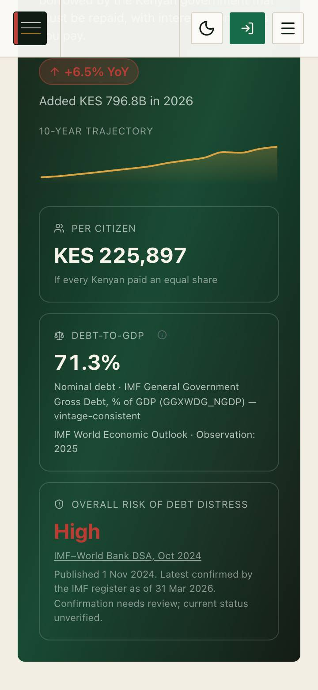</div><figcaption><b>Before</b> · headline area</figcaption></figure>
    <figure><div class="phone"><div class="m-body">
      <div class="m-lbl">Owed by the national government</div>
      <div class="m-big" style="font-size:44px"><small>KES</small>13.00T</div>
      <p class="m-cmp">About <b>KES 225,897 for every Kenyan</b>. Up 6.5% in a year.</p>
      <div class="m-status alarm"><b>High risk</b> of debt distress<span>IMF–World Bank rating, Oct 2024</span></div>
      <span class="m-src" style="margin-top:10px"><span class="dot"></span>Sources: CBK · IMF–World Bank</span>
      <div class="m-sec">How it grew</div>
      <svg viewBox="0 0 300 182" width="100%" role="img" aria-label="Kenya public debt 2013 to 2026, rising from 2.1 trillion to 13.1 trillion shillings" class="mchart"><line x1="34" x2="262" y1="160.0" y2="160.0" stroke="var(--m-line)" stroke-width="1"/><text x="28.0" y="164.0" class="ax" text-anchor="end">0T</text><line x1="34" x2="262" y1="113.6" y2="113.6" stroke="var(--m-line)" stroke-width="1"/><text x="28.0" y="117.6" class="ax" text-anchor="end">5T</text><line x1="34" x2="262" y1="67.1" y2="67.1" stroke="var(--m-line)" stroke-width="1"/><text x="28.0" y="71.1" class="ax" text-anchor="end">10T</text><polygon points="34,160 34.0,140.4 51.5,137.0 69.1,130.7 86.6,124.4 104.2,117.6 121.7,111.1 139.2,103.8 156.8,92.4 174.3,83.8 191.8,75.0 209.4,56.6 226.9,58.5 244.5,45.8 262.0,38.4 262,160" fill="var(--m-alarm-tint)"/><polyline points="34.0,140.4 51.5,137.0 69.1,130.7 86.6,124.4 104.2,117.6 121.7,111.1 139.2,103.8 156.8,92.4 174.3,83.8 191.8,75.0 209.4,56.6 226.9,58.5 244.5,45.8 262.0,38.4" fill="none" stroke="var(--m-ink)" stroke-width="2" stroke-linejoin="round"/><text x="34.0" y="176.0" class="ax" text-anchor="middle">2013</text><text x="104.2" y="176.0" class="ax" text-anchor="middle">2017</text><text x="174.3" y="176.0" class="ax" text-anchor="middle">2021</text><text x="262.0" y="176.0" class="ax" text-anchor="middle">2026</text><line x1="156.8" x2="156.8" y1="24" y2="160" stroke="var(--m-ink)" stroke-width="1"/><circle cx="156.8" cy="92.4" r="4.5" fill="var(--m-card)" stroke="var(--m-ink)" stroke-width="2"/><text x="152.8" y="18.0" class="lab" text-anchor="end" font-weight="600">2020 · KES 7.28T</text><circle cx="262.0" cy="38.4" r="5" fill="var(--m-alarm)" stroke="var(--m-card)" stroke-width="2"/><text x="264.0" y="28.4" class="lab" text-anchor="end" font-weight="700">13.1T</text><text x="36.0" y="132.4" class="lab" font-weight="600">2.1T</text></svg>
      <div style="font-size:12px;color:var(--m-muted)">Tap or drag on the chart to read any year.</div>
    </div></div><figcaption><i>After</i> · headline + trend</figcaption></figure><figure><div class="shot ">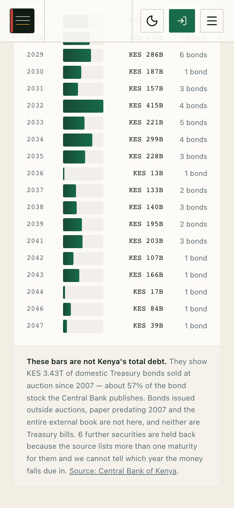</div><figcaption><b>Before</b> · bond ladder, no summary</figcaption></figure>
    <figure><div class="phone"><div class="m-body">
      <div class="m-sec" style="margin-top:0">When it’s due</div>
      <div class="m-buckets"><span><b>KES 1.17T</b><i>due 2027–2031</i></span><span class="al"><b>KES 415B</b><i>in 2032 alone</i></span></div>
      <svg viewBox="0 0 300 299" width="100%" role="img" aria-label="Treasury bonds falling due by year, 2027 to 2047; 415 billion in 2032 is the largest year" class="mchart"><text x="38.0" y="18.0" class="ax" text-anchor="end" font-weight="600">2027</text><rect x="44" y="10" width="117.6" height="10" rx="2" fill="var(--m-cautionf)"/><text x="166.6" y="19.0" class="ax" fill="var(--m-ink)">260B</text><text x="38.0" y="33.0" class="ax" text-anchor="end" font-weight="600">2028</text><rect x="44" y="25" width="124.4" height="10" rx="2" fill="var(--m-cautionf)"/><text x="173.4" y="34.0" class="ax" fill="var(--m-ink)">275B</text><text x="38.0" y="48.0" class="ax" text-anchor="end" font-weight="600">2029</text><rect x="44" y="40" width="129.4" height="10" rx="2" fill="var(--m-cautionf)"/><text x="178.4" y="49.0" class="ax" fill="var(--m-ink)">286B</text><text x="38.0" y="63.0" class="ax" text-anchor="end" font-weight="600">2030</text><rect x="44" y="55" width="84.6" height="10" rx="2" fill="var(--m-cautionf)"/><text x="133.6" y="64.0" class="ax" fill="var(--m-ink)">187B</text><text x="38.0" y="78.0" class="ax" text-anchor="end" font-weight="600">2031</text><rect x="44" y="70" width="71.0" height="10" rx="2" fill="var(--m-cautionf)"/><text x="120.0" y="79.0" class="ax" fill="var(--m-ink)">157B</text><text x="38.0" y="93.0" class="ax" text-anchor="end">2032</text><rect x="44" y="85" width="187.7" height="10" rx="2" fill="var(--m-alarm)"/><text x="236.7" y="94.0" class="ax" fill="var(--m-ink)">415B</text><text x="38.0" y="108.0" class="ax" text-anchor="end">2033</text><rect x="44" y="100" width="100.0" height="10" rx="2" fill="var(--m-mute-bar)"/><text x="149.0" y="109.0" class="ax" fill="var(--m-ink)">221B</text><text x="38.0" y="123.0" class="ax" text-anchor="end">2034</text><rect x="44" y="115" width="135.3" height="10" rx="2" fill="var(--m-mute-bar)"/><text x="184.3" y="124.0" class="ax" fill="var(--m-ink)">299B</text><text x="38.0" y="138.0" class="ax" text-anchor="end">2035</text><rect x="44" y="130" width="103.1" height="10" rx="2" fill="var(--m-mute-bar)"/><text x="152.1" y="139.0" class="ax" fill="var(--m-ink)">228B</text><text x="38.0" y="153.0" class="ax" text-anchor="end">2036</text><rect x="44" y="145" width="5.9" height="10" rx="2" fill="var(--m-mute-bar)"/><text x="54.9" y="154.0" class="ax" fill="var(--m-ink)">13B</text><text x="38.0" y="168.0" class="ax" text-anchor="end">2037</text><rect x="44" y="160" width="60.2" height="10" rx="2" fill="var(--m-mute-bar)"/><text x="109.2" y="169.0" class="ax" fill="var(--m-ink)">133B</text><text x="38.0" y="183.0" class="ax" text-anchor="end">2038</text><rect x="44" y="175" width="63.3" height="10" rx="2" fill="var(--m-mute-bar)"/><text x="112.3" y="184.0" class="ax" fill="var(--m-ink)">140B</text><text x="38.0" y="198.0" class="ax" text-anchor="end">2039</text><rect x="44" y="190" width="88.2" height="10" rx="2" fill="var(--m-mute-bar)"/><text x="137.2" y="199.0" class="ax" fill="var(--m-ink)">195B</text><text x="38.0" y="213.0" class="ax" text-anchor="end">2041</text><rect x="44" y="205" width="91.8" height="10" rx="2" fill="var(--m-mute-bar)"/><text x="140.8" y="214.0" class="ax" fill="var(--m-ink)">203B</text><text x="38.0" y="228.0" class="ax" text-anchor="end">2042</text><rect x="44" y="220" width="48.4" height="10" rx="2" fill="var(--m-mute-bar)"/><text x="97.4" y="229.0" class="ax" fill="var(--m-ink)">107B</text><text x="38.0" y="243.0" class="ax" text-anchor="end">2043</text><rect x="44" y="235" width="75.1" height="10" rx="2" fill="var(--m-mute-bar)"/><text x="124.1" y="244.0" class="ax" fill="var(--m-ink)">166B</text><text x="38.0" y="258.0" class="ax" text-anchor="end">2044</text><rect x="44" y="250" width="7.7" height="10" rx="2" fill="var(--m-mute-bar)"/><text x="56.7" y="259.0" class="ax" fill="var(--m-ink)">17B</text><text x="38.0" y="273.0" class="ax" text-anchor="end">2046</text><rect x="44" y="265" width="38.0" height="10" rx="2" fill="var(--m-mute-bar)"/><text x="87.0" y="274.0" class="ax" fill="var(--m-ink)">84B</text><text x="38.0" y="288.0" class="ax" text-anchor="end">2047</text><rect x="44" y="280" width="17.6" height="10" rx="2" fill="var(--m-mute-bar)"/><text x="66.6" y="289.0" class="ax" fill="var(--m-ink)">39B</text><line x1="42" x2="274" y1="81.5" y2="81.5" stroke="var(--m-ink)" stroke-dasharray="0" stroke-width="1"/></svg>
      <div style="font-size:12px;color:var(--m-muted)">54 Treasury bonds sold at auction. Not total debt. <u>What’s included?</u></div>
    </div></div><figcaption><i>After</i> · horizon buckets first</figcaption></figure><figure><div class="shot ">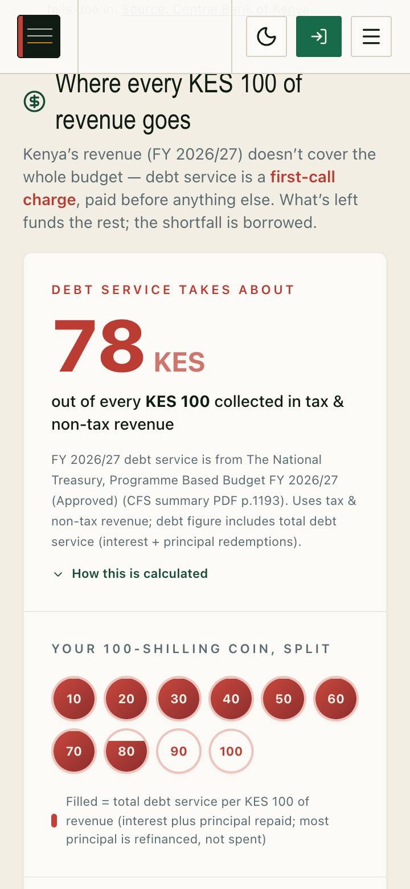</div><figcaption><b>Before</b> · coins + 160.3 bar</figcaption></figure>
    <figure><div class="phone"><div class="m-body">
      <div class="m-sec" style="margin-top:0">For every KES 100 collected</div>
      <p class="m-cmp" style="margin-bottom:6px">The government spends <b>KES 160</b>. New debt covers most of the gap.</p>
      <svg viewBox="0 0 300 198" width="100%" role="img" aria-label="For every 100 shillings collected, the government spends 160; the 60 gap is filled mostly by new borrowing" class="mchart"><text x="10.0" y="14.0" class="lab" font-weight="600">Collected in taxes and fees</text><rect x="10.0" y="20" width="149.5" height="22" rx="3" fill="var(--m-ink)"/><text x="15.0" y="35.0" class="inlab" fill="#fff">100</text><text x="10.0" y="62.0" class="lab" font-weight="600">Spent</text><rect x="10.0" y="68" width="61.6" height="22" rx="3" fill="var(--m-alarm)"/><text x="15.0" y="83.0" class="inlab" fill="#fff">42</text><rect x="73.6" y="68" width="113.9" height="22" rx="3" fill="var(--m-mute-bar2)"/><text x="78.6" y="83.0" class="inlab" fill="var(--m-ink)">76</text><rect x="189.5" y="68" width="36.0" height="22" rx="3" fill="var(--m-mute-bar2)"/><text x="194.5" y="83.0" class="inlab" fill="var(--m-ink)">25</text><rect x="227.6" y="68" width="23.2" height="22" rx="3" fill="var(--m-mute-bar2)"/><line x1="161.5" x2="161.5" y1="16" y2="142" stroke="var(--m-ink)" stroke-width="1.5"/><text x="10.0" y="110.0" class="lab" font-weight="600">Gap of 60, filled by</text><rect x="161.5" y="116" width="54.4" height="22" rx="3" fill="var(--m-alarm)"/><text x="166.5" y="131.0" class="inlab" fill="#fff">37</text><rect x="217.9" y="116" width="30.7" height="22" rx="3" fill="var(--m-mute-bar2)"/><text x="222.9" y="131.0" class="inlab" fill="var(--m-ink)">22</text><rect x="250.6" y="116" width="2.3" height="22" rx="3" fill="var(--m-mute-bar2)"/><rect x="10" y="152" width="9" height="9" rx="2" fill="var(--m-alarm)"/><text x="24.0" y="160.0" class="ax" fill="var(--m-ink)">Interest 42 · new debt 37</text><text x="10.0" y="176.0" class="ax">Spent: salaries &amp; running 76 · development 25 · counties 17</text><text x="10.0" y="190.0" class="ax">Gap: new debt 37 · ministry fees (A-i-A) 22 · grants 1.5</text></svg>
    </div></div><figcaption><i>After</i> · collected vs spent</figcaption></figure><figure><div class="shot ">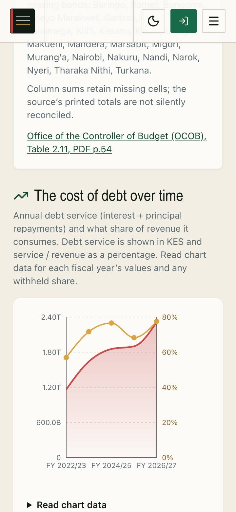</div><figcaption><b>Before</b> · dual-axis cost chart</figcaption></figure><figure><div class="phone"><div class="m-body"><p class="m-cmp"><b>Debt repayments doubled in four years</b>, to KES 2.32T.</p><svg viewBox="0 0 300 128" width="100%" role="img" aria-label="Debt repayments per year, 1.16 trillion in FY2022/23 rising to 2.32 trillion in FY2026/27" class="mchart"><line x1="34" x2="272" y1="112.0" y2="112.0" stroke="var(--m-line)"/><text x="28.0" y="116.0" class="ax" text-anchor="end">0T</text><line x1="34" x2="272" y1="76.0" y2="76.0" stroke="var(--m-line)"/><text x="28.0" y="80.0" class="ax" text-anchor="end">1T</text><line x1="34" x2="272" y1="40.0" y2="40.0" stroke="var(--m-line)"/><text x="28.0" y="44.0" class="ax" text-anchor="end">2T</text><path d="M42.8,112 v-37.8 q0,-4 4,-4 h22 q4,0 4,4 v37.8 z" fill="var(--m-mute-bar)"/><text x="57.8" y="64.2" class="lab" text-anchor="middle" font-weight="500">1.16T</text><text x="57.8" y="127.0" class="ax" text-anchor="middle">FY22/23</text><path d="M90.4,112 v-55.0 q0,-4 4,-4 h22 q4,0 4,4 v55.0 z" fill="var(--m-mute-bar)"/><text x="105.4" y="47.0" class="lab" text-anchor="middle" font-weight="500">1.64T</text><text x="105.4" y="127.0" class="ax" text-anchor="middle">FY23/24</text><path d="M138.0,112 v-62.6 q0,-4 4,-4 h22 q4,0 4,4 v62.6 z" fill="var(--m-mute-bar)"/><text x="153.0" y="39.4" class="lab" text-anchor="middle" font-weight="500">1.85T</text><text x="153.0" y="127.0" class="ax" text-anchor="middle">FY24/25</text><path d="M185.6,112 v-64.4 q0,-4 4,-4 h22 q4,0 4,4 v64.4 z" fill="var(--m-mute-bar)"/><text x="200.6" y="37.6" class="lab" text-anchor="middle" font-weight="500">1.90T</text><text x="200.6" y="127.0" class="ax" text-anchor="middle">FY25/26</text><path d="M233.2,112 v-79.5 q0,-4 4,-4 h22 q4,0 4,4 v79.5 z" fill="var(--m-alarm)"/><text x="248.2" y="22.5" class="lab" text-anchor="middle" font-weight="700">2.32T</text><text x="248.2" y="127.0" class="ax" text-anchor="middle">FY26/27</text></svg><p class="m-cmp" style="margin-top:6px">They now take <b>KES 78 of every 100</b> collected.</p><svg viewBox="0 0 300 112" width="100%" role="img" aria-label="Shillings of every 100 in revenue spent on debt: 57 in FY2022/23, 78 in FY2026/27" class="mchart"><line x1="34" x2="272" y1="96.0" y2="96.0" stroke="var(--m-line)"/><text x="28.0" y="100.0" class="ax" text-anchor="end">0</text><line x1="34" x2="272" y1="18.0" y2="18.0" stroke="var(--m-line)"/><text x="28.0" y="22.0" class="ax" text-anchor="end">100</text><line x1="34" x2="272" y1="57.0" y2="57.0" stroke="var(--m-alarm)" stroke-width="1.5"/><text x="272.0" y="70.0" class="ax" text-anchor="end" fill="var(--m-alarm)">half of revenue</text><polyline points="57.8,51.6 105.4,40.1 153.0,36.3 200.6,42.8 248.2,35.5" fill="none" stroke="var(--m-ink)" stroke-width="2"/><circle cx="57.8" cy="51.6" r="3.5" fill="var(--m-ink)" stroke="var(--m-card)" stroke-width="2"/><text x="57.8" y="42.6" class="lab" text-anchor="middle" font-weight="500">57</text><text x="57.8" y="111.0" class="ax" text-anchor="middle">FY22/23</text><circle cx="105.4" cy="40.1" r="3.5" fill="var(--m-ink)" stroke="var(--m-card)" stroke-width="2"/><text x="105.4" y="31.1" class="lab" text-anchor="middle" font-weight="500">72</text><text x="105.4" y="111.0" class="ax" text-anchor="middle">FY23/24</text><circle cx="153.0" cy="36.3" r="3.5" fill="var(--m-ink)" stroke="var(--m-card)" stroke-width="2"/><text x="153.0" y="27.3" class="lab" text-anchor="middle" font-weight="500">77</text><text x="153.0" y="111.0" class="ax" text-anchor="middle">FY24/25</text><circle cx="200.6" cy="42.8" r="3.5" fill="var(--m-ink)" stroke="var(--m-card)" stroke-width="2"/><text x="200.6" y="33.8" class="lab" text-anchor="middle" font-weight="500">68</text><text x="200.6" y="111.0" class="ax" text-anchor="middle">FY25/26</text><circle cx="248.2" cy="35.5" r="5" fill="var(--m-alarm)" stroke="var(--m-card)" stroke-width="2"/><text x="248.2" y="26.5" class="lab" text-anchor="middle" font-weight="700">78</text><text x="248.2" y="111.0" class="ax" text-anchor="middle">FY26/27</text></svg></div></div><figcaption><i>After</i> · two charts, one axis each</figcaption></figure><figure><div class="shot ">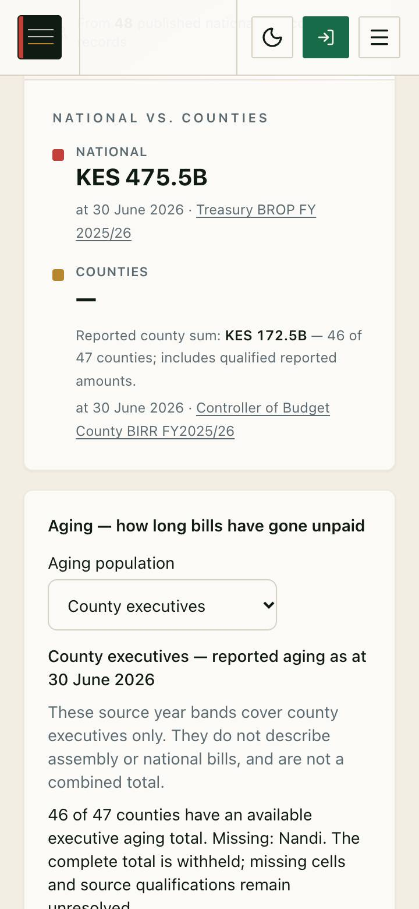</div><figcaption><b>Before</b> · unpaid bills: dash headline, long prose</figcaption></figure><figure><div class="phone"><div class="m-body"><div class="m-sec" style="margin-top:0">Unpaid bills</div><div class="m-signal alarm" style="border:0;padding-top:0"><div class="m-lbl">National government · at 30 June 2026</div><div class="v">KES 475.5B</div><span class="m-pill bad">Alarm · owed for work already done</span></div><p class="m-cmp" style="font-size:13px">County totals cover 46 of 47 counties, so no combined figure is shown.</p><svg viewBox="0 0 300 128" width="100%" role="img" aria-label="County unpaid bills by age: 70.2 billion has been unpaid for more than three years" class="mchart"><text x="84.0" y="21.0" class="lab" text-anchor="end" font-weight="500">Under 1 year</text><rect x="92" y="10" width="98.2" height="16" rx="3" fill="var(--m-mute-bar)"/><text x="195.2" y="22.0" class="lab" fill="var(--m-ink)" font-weight="500">44.2B</text><text x="84.0" y="51.0" class="lab" text-anchor="end" font-weight="500">1–2 years</text><rect x="92" y="40" width="64.0" height="16" rx="3" fill="var(--m-cautionf)"/><text x="161.0" y="52.0" class="lab" fill="var(--m-ink)" font-weight="500">28.8B</text><text x="84.0" y="81.0" class="lab" text-anchor="end" font-weight="500">2–3 years</text><rect x="92" y="70" width="49.3" height="16" rx="3" fill="var(--m-cautionf)"/><text x="146.3" y="82.0" class="lab" fill="var(--m-ink)" font-weight="500">22.2B</text><text x="84.0" y="111.0" class="lab" text-anchor="end" font-weight="700">Over 3 years</text><rect x="92" y="100" width="156.0" height="16" rx="3" fill="var(--m-alarm)"/><text x="253.0" y="112.0" class="lab" fill="var(--m-ink)" font-weight="700">70.2B</text></svg></div></div><figcaption><i>After</i> · known figure first, age bars</figcaption></figure>
  </div>
  <div class="desk-wrap"><div class="desk-cap" style="margin:0 0 8px"><b style="color:var(--copper)">Before</b> · desktop today</div><div class="desk-before">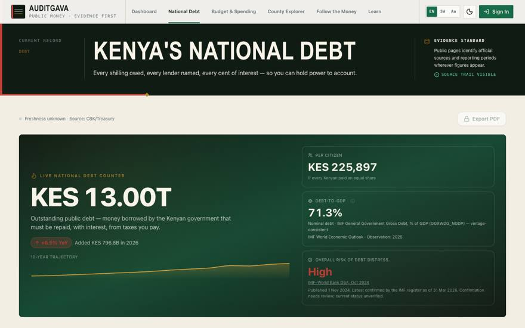</div><div class="desk-cap" style="margin:0 0 8px"><i>After</i></div><div class="desk">
    <div class="d-top"><span class="m-mark">AG</span><span class="m-word">AuditGava</span><span class="d-nav">Debt · Budget · Counties · Follow the money · Audits · Learn</span></div>
    <div class="d-grid">
      <aside class="d-rail"><div class="m-lbl">On this page</div><a class="on">Headline</a><a>Who we owe</a><a>When it’s due</a><a>Per KES 100</a><a>Cost over time</a><a>Unpaid bills</a><a>All 49 loans</a></aside>
      <div>
        <div class="d-row2">
          <div class="m-card"><div class="m-lbl">Owed by the national government</div><div class="m-big" style="font-size:52px"><small>KES</small>13.00T</div><p class="m-cmp">KES 225,897 per Kenyan · up 6.5% in a year</p><div class="m-status alarm"><b>High risk</b> of debt distress<span>IMF–World Bank, Oct 2024</span></div></div>
          <div class="m-card"><div class="m-lbl">How it grew, 2013–2026</div><svg viewBox="0 0 300 182" width="100%" role="img" aria-label="Kenya public debt 2013 to 2026, rising from 2.1 trillion to 13.1 trillion shillings" class="mchart"><line x1="34" x2="262" y1="160.0" y2="160.0" stroke="var(--m-line)" stroke-width="1"/><text x="28.0" y="164.0" class="ax" text-anchor="end">0T</text><line x1="34" x2="262" y1="113.6" y2="113.6" stroke="var(--m-line)" stroke-width="1"/><text x="28.0" y="117.6" class="ax" text-anchor="end">5T</text><line x1="34" x2="262" y1="67.1" y2="67.1" stroke="var(--m-line)" stroke-width="1"/><text x="28.0" y="71.1" class="ax" text-anchor="end">10T</text><polygon points="34,160 34.0,140.4 51.5,137.0 69.1,130.7 86.6,124.4 104.2,117.6 121.7,111.1 139.2,103.8 156.8,92.4 174.3,83.8 191.8,75.0 209.4,56.6 226.9,58.5 244.5,45.8 262.0,38.4 262,160" fill="var(--m-alarm-tint)"/><polyline points="34.0,140.4 51.5,137.0 69.1,130.7 86.6,124.4 104.2,117.6 121.7,111.1 139.2,103.8 156.8,92.4 174.3,83.8 191.8,75.0 209.4,56.6 226.9,58.5 244.5,45.8 262.0,38.4" fill="none" stroke="var(--m-ink)" stroke-width="2" stroke-linejoin="round"/><text x="34.0" y="176.0" class="ax" text-anchor="middle">2013</text><text x="104.2" y="176.0" class="ax" text-anchor="middle">2017</text><text x="174.3" y="176.0" class="ax" text-anchor="middle">2021</text><text x="262.0" y="176.0" class="ax" text-anchor="middle">2026</text><line x1="156.8" x2="156.8" y1="24" y2="160" stroke="var(--m-ink)" stroke-width="1"/><circle cx="156.8" cy="92.4" r="4.5" fill="var(--m-card)" stroke="var(--m-ink)" stroke-width="2"/><text x="152.8" y="18.0" class="lab" text-anchor="end" font-weight="600">2020 · KES 7.28T</text><circle cx="262.0" cy="38.4" r="5" fill="var(--m-alarm)" stroke="var(--m-card)" stroke-width="2"/><text x="264.0" y="28.4" class="lab" text-anchor="end" font-weight="700">13.1T</text><text x="36.0" y="132.4" class="lab" font-weight="600">2.1T</text></svg></div>
        </div>
        <div class="d-row2" style="margin-top:12px">
          <div class="m-card"><div class="m-lbl">Who we owe</div><div class="d-ph">Ranked bars · domestic vs external</div></div>
          <div class="m-card"><div class="m-lbl">When it’s due</div><div class="d-ph">Horizon buckets + vertical ladder by year</div></div>
        </div>
      </div>
    </div>
  </div><div class="desk-cap"><i>Desktop</i> · sticky section rail on the left; headline and trend side by side; then two charts per row</div></div>
</article>

<!-- ====================== COUNTIES ====================== -->
<article class="spec" id="b-counties">
  <div class="spec-h"><div class="tags"><span class="tag p1">P1</span><span class="tag">Effort M</span><span class="tag">/counties · 11 phone screens today</span></div>
  <h3>County Explorer: pick a measure, see the ranking, find your county</h3></div>
  <div class="spec-b">
    <h6>What the page does today, below the search</h6>
    <ul>
      <li><b>Five summary figures:</b> total budget 648.2B, total debt “—”, average execution 78%, an audit donut (Clean 0 · Qualified 45 · Adverse 2), and “High debt counties: not yet reported”. Two of the five say nothing.</li>
      <li><b>The map</b> colours counties by a letter grade (A, B+, B, B-, C). Its colours run green to amber to brown to red, so grade B looks like the amber “Qualified” warning chip. The map has one fixed measure and no way to switch. A selected county shows a card under the map.</li>
      <li><b>“Best performers / Needs attention”</b> lists three counties each, but doesn’t say which measure decides the ranking.</li>
      <li><b>“County Rankings”</b> shows 10 rows per page over 5 pages, sorted by budget. On phones each county is a ~230px card with population, a health letter, budget, execution, a five-line evidence summary, “Debt —” and “Qualified (10)”. On desktop it is an 8-column table where every row carries the evidence summary.</li>
    </ul>
    <h6>Blueprint</h6>
    <ul>
      <li><b>Search and “your county” first.</b> Show the search box, then the last county the reader opened (stored in the browser only) as a pinned row: “Your county: Baringo · 76% spent · F audit record”. This is WHOOP’s pinned own-row pattern.</li>
      <li><b>One measure switch drives the map and the ranking together:</b> Spending rate · Budget per person · Unpaid bills · Audit record. It is a segmented control that wraps to two rows on phones, so nothing is cropped.</li>
      <li><b>The ranking is a list, not a table, on phones.</b> Each row has rank, county, a bar, the value and a word (“below target”). Show the top 10 with a <i>Show all 47</i> button, a sort-direction chip, and a “Compare” checkbox per row. Ticking two or more opens a compare tray at the bottom.</li>
      <li><b>The map sits behind a List / Map toggle</b> (list first). It uses a single-hue sequential scale for the chosen measure with a labelled legend. Spending rate uses status colours only for the published 70% target. Tapping a county opens a bottom-sheet summary.</li>
      <li><b>Lead with the alarm figures that exist.</b> Make the summary row “10 of 47 counties spent less than 70% of their budget” and “No county rated clean by AuditGava’s audit measure” (with the estimate caveat). Drop “Total debt —” and “High debt counties: not yet reported” until data exists.</li>
      <li><b>Desktop:</b> list and detail side by side (Copilot Money’s web layout). The ranked list sits on the left, and the selected county’s summary card with its map location on the right. The sortable table becomes an optional “Table view” with sticky headers and a source icon per row instead of the evidence summary.</li>
    </ul>
  </div>
  <div class="ba"><figure><div class="shot ">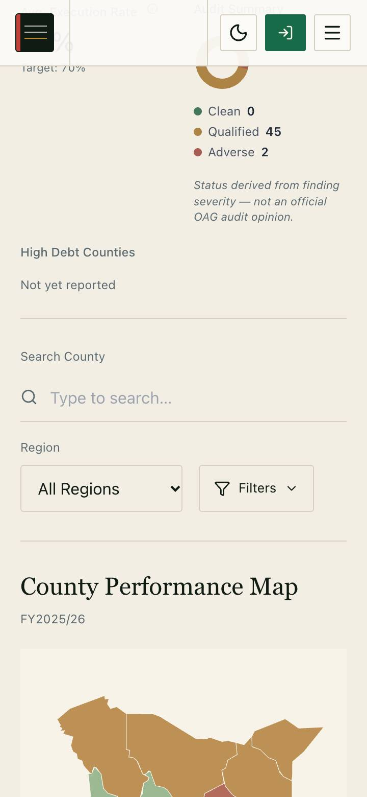</div><figcaption><b>Before</b> · figures that say nothing; search buried</figcaption></figure><figure><div class="shot ">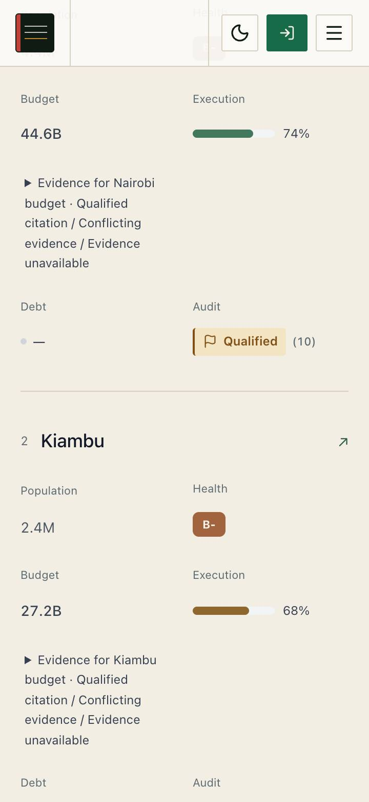</div><figcaption><b>Before</b> · ranking cards with evidence lines</figcaption></figure>
    <figure><div class="phone"><div class="m-body">
      <div style="font-family:var(--font-display);font-weight:700;font-size:28px;line-height:1">County Explorer</div>
      <div class="m-search">⌕ Find your county</div>
      <div class="m-pin"><span class="m-lbl">Your county</span><b>Baringo</b><span>76% spent · audit record F</span></div>
      <div class="m-seg4"><span class="on">Spending rate</span><span>Per person</span><span>Unpaid bills</span><span>Audit record</span></div>
      <p class="m-cmp" style="margin:10px 0 2px"><b>10 of 47 counties</b> spent less than the 70% target in FY 2025/26.</p>
      <div class="m-tog"><span class="on">List</span><span>Map</span></div>
      <div class="m-row"><span class="rk">1</span><span class="nm">Meru</span><span class="pc">92%</span><span class="bar"><b style="width:92%"></b></span><span class="amt">13.9B of 15.1B</span></div>
      <div class="m-row"><span class="rk">2</span><span class="nm">Wajir</span><span class="pc">90%</span><span class="bar"><b style="width:90%"></b></span><span class="amt">12.3B of 13.6B</span></div>
      <div class="m-row"><span class="rk">3</span><span class="nm">Samburu</span><span class="pc">90%</span><span class="bar"><b style="width:90%"></b></span><span class="amt">7.3B of 8.1B</span></div>
      <div class="m-row low"><span class="rk">47</span><span class="nm">Siaya</span><span class="pc">56%</span><span class="bar"><b style="width:56%"></b></span><span class="amt">below target</span></div>
      <div class="m-showall">Show all 47 counties</div>
    </div></div><figcaption><i>After</i> · measure → ranking</figcaption></figure><figure><div class="shot ">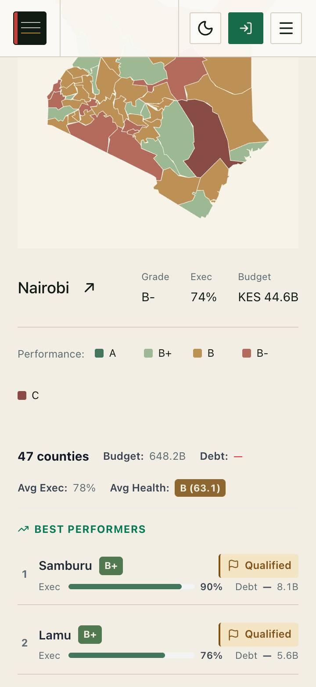</div><figcaption><b>Before</b> · one fixed map measure</figcaption></figure>
    <figure><div class="phone"><div class="m-body">
      <div class="m-sec" style="margin-top:0">All 47 counties at a glance</div>
      <p class="m-cmp" style="font-size:13px">Each dot is a county. Tap one to see its name.</p>
      <svg viewBox="0 0 300 144" width="100%" role="img" aria-label="Share of budget spent by each of 47 counties in FY2025/26; 10 counties are below the 70 percent target" class="mchart"><rect x="18" y="18" width="105.6" height="90" fill="var(--m-caution-tint)"/><line x1="123.6" x2="123.6" y1="12" y2="108" stroke="var(--m-caution)" stroke-width="1.5"/><text x="119.6" y="12.0" class="ax" text-anchor="end" fill="var(--m-caution)">70% target</text><line x1="158.4" x2="158.4" y1="18" y2="108" stroke="var(--m-ink)" stroke-width="1"/><text x="162.4" y="12.0" class="ax">national 77%</text><circle cx="50.2" cy="80" r="4" fill="var(--m-caution)" stroke="var(--m-card)" stroke-width="1.5"><title>Siaya 56.1%</title></circle><circle cx="67.6" cy="80" r="4" fill="var(--m-caution)" stroke="var(--m-card)" stroke-width="1.5"><title>Kisumu 59.4%</title></circle><circle cx="88.2" cy="80" r="4" fill="var(--m-caution)" stroke="var(--m-card)" stroke-width="1.5"><title>Kisii 63.3%</title></circle><circle cx="90.3" cy="80" r="4" fill="var(--m-caution)" stroke="var(--m-card)" stroke-width="1.5"><title>Uasin Gishu 63.7%</title></circle><circle cx="98.3" cy="80" r="4" fill="var(--m-caution)" stroke="var(--m-card)" stroke-width="1.5"><title>Busia 65.2%</title></circle><circle cx="104.1" cy="69" r="4" fill="var(--m-caution)" stroke="var(--m-card)" stroke-width="1.5"><title>Elgeyo Marakwet 66.3%</title></circle><circle cx="114.1" cy="80" r="4" fill="var(--m-caution)" stroke="var(--m-card)" stroke-width="1.5"><title>Kiambu 68.2%</title></circle><circle cx="116.7" cy="80" r="4" fill="var(--m-caution)" stroke="var(--m-card)" stroke-width="1.5"><title>Kwale 68.7%</title></circle><circle cx="118.8" cy="69" r="4" fill="var(--m-caution)" stroke="var(--m-card)" stroke-width="1.5"><title>Laikipia 69.1%</title></circle><circle cx="118.8" cy="58" r="4" fill="var(--m-caution)" stroke="var(--m-card)" stroke-width="1.5"><title>Narok 69.1%</title></circle><circle cx="138.9" cy="80" r="4" fill="var(--m-ink)" stroke="var(--m-card)" stroke-width="1.5"><title>Mombasa 72.9%</title></circle><circle cx="139.4" cy="69" r="4" fill="var(--m-ink)" stroke="var(--m-card)" stroke-width="1.5"><title>Kajiado 73.0%</title></circle><circle cx="143.7" cy="80" r="4" fill="var(--m-ink)" stroke="var(--m-card)" stroke-width="1.5"><title>Embu 73.8%</title></circle><circle cx="145.8" cy="69" r="4" fill="var(--m-ink)" stroke="var(--m-card)" stroke-width="1.5"><title>Nairobi 74.2%</title></circle><circle cx="146.3" cy="58" r="4" fill="var(--m-ink)" stroke="var(--m-card)" stroke-width="1.5"><title>Isiolo 74.3%</title></circle><circle cx="150.5" cy="80" r="4" fill="var(--m-ink)" stroke="var(--m-card)" stroke-width="1.5"><title>Machakos 75.1%</title></circle><circle cx="151.1" cy="69" r="4" fill="var(--m-ink)" stroke="var(--m-card)" stroke-width="1.5"><title>Nakuru 75.2%</title></circle><circle cx="151.6" cy="58" r="4" fill="var(--m-ink)" stroke="var(--m-card)" stroke-width="1.5"><title>Homa Bay 75.3%</title></circle><circle cx="155.8" cy="47" r="5" fill="var(--m-alarm)" stroke="var(--m-card)" stroke-width="1.5"><title>Baringo 76.1%</title></circle><circle cx="157.4" cy="80" r="4" fill="var(--m-ink)" stroke="var(--m-card)" stroke-width="1.5"><title>Lamu 76.4%</title></circle><circle cx="159.0" cy="69" r="4" fill="var(--m-ink)" stroke="var(--m-card)" stroke-width="1.5"><title>Nyandarua 76.7%</title></circle><circle cx="165.8" cy="80" r="4" fill="var(--m-ink)" stroke="var(--m-card)" stroke-width="1.5"><title>Turkana 78.0%</title></circle><circle cx="166.9" cy="69" r="4" fill="var(--m-ink)" stroke="var(--m-card)" stroke-width="1.5"><title>Murang'a 78.2%</title></circle><circle cx="168.0" cy="58" r="4" fill="var(--m-ink)" stroke="var(--m-card)" stroke-width="1.5"><title>Nandi 78.4%</title></circle><circle cx="168.0" cy="47" r="4" fill="var(--m-ink)" stroke="var(--m-card)" stroke-width="1.5"><title>Tharaka Nithi 78.4%</title></circle><circle cx="169.0" cy="36" r="4" fill="var(--m-ink)" stroke="var(--m-card)" stroke-width="1.5"><title>Garissa 78.6%</title></circle><circle cx="170.6" cy="25" r="4" fill="var(--m-ink)" stroke="var(--m-card)" stroke-width="1.5"><title>Tana River 78.9%</title></circle><circle cx="174.8" cy="80" r="4" fill="var(--m-ink)" stroke="var(--m-card)" stroke-width="1.5"><title>Kericho 79.7%</title></circle><circle cx="175.9" cy="69" r="4" fill="var(--m-ink)" stroke="var(--m-card)" stroke-width="1.5"><title>Kakamega 79.9%</title></circle><circle cx="178.0" cy="58" r="4" fill="var(--m-ink)" stroke="var(--m-card)" stroke-width="1.5"><title>Bomet 80.3%</title></circle><circle cx="178.5" cy="47" r="4" fill="var(--m-ink)" stroke="var(--m-card)" stroke-width="1.5"><title>Kitui 80.4%</title></circle><circle cx="182.2" cy="36" r="4" fill="var(--m-ink)" stroke="var(--m-card)" stroke-width="1.5"><title>Nyamira 81.1%</title></circle><circle cx="191.2" cy="80" r="4" fill="var(--m-ink)" stroke="var(--m-card)" stroke-width="1.5"><title>Migori 82.8%</title></circle><circle cx="193.3" cy="80" r="4" fill="var(--m-ink)" stroke="var(--m-card)" stroke-width="1.5"><title>Kilifi 83.2%</title></circle><circle cx="194.4" cy="69" r="4" fill="var(--m-ink)" stroke="var(--m-card)" stroke-width="1.5"><title>Bungoma 83.4%</title></circle><circle cx="194.9" cy="58" r="4" fill="var(--m-ink)" stroke="var(--m-card)" stroke-width="1.5"><title>Nyeri 83.5%</title></circle><circle cx="202.3" cy="80" r="4" fill="var(--m-ink)" stroke="var(--m-card)" stroke-width="1.5"><title>Kirinyaga 84.9%</title></circle><circle cx="203.3" cy="69" r="4" fill="var(--m-ink)" stroke="var(--m-card)" stroke-width="1.5"><title>Taita Taveta 85.1%</title></circle><circle cx="210.7" cy="80" r="4" fill="var(--m-ink)" stroke="var(--m-card)" stroke-width="1.5"><title>Trans Nzoia 86.5%</title></circle><circle cx="216.5" cy="69" r="4" fill="var(--m-ink)" stroke="var(--m-card)" stroke-width="1.5"><title>Marsabit 87.6%</title></circle><circle cx="219.2" cy="80" r="4" fill="var(--m-ink)" stroke="var(--m-card)" stroke-width="1.5"><title>Makueni 88.1%</title></circle><circle cx="223.9" cy="69" r="4" fill="var(--m-ink)" stroke="var(--m-card)" stroke-width="1.5"><title>West Pokot 89.0%</title></circle><circle cx="225.5" cy="80" r="4" fill="var(--m-ink)" stroke="var(--m-card)" stroke-width="1.5"><title>Vihiga 89.3%</title></circle><circle cx="228.1" cy="69" r="4" fill="var(--m-ink)" stroke="var(--m-card)" stroke-width="1.5"><title>Mandera 89.8%</title></circle><circle cx="228.7" cy="58" r="4" fill="var(--m-ink)" stroke="var(--m-card)" stroke-width="1.5"><title>Samburu 89.9%</title></circle><circle cx="230.3" cy="47" r="4" fill="var(--m-ink)" stroke="var(--m-card)" stroke-width="1.5"><title>Wajir 90.2%</title></circle><circle cx="239.2" cy="80" r="4" fill="var(--m-ink)" stroke="var(--m-card)" stroke-width="1.5"><title>Meru 91.9%</title></circle><text x="18.0" y="122.0" class="ax" text-anchor="middle">50%</text><text x="70.8" y="122.0" class="ax" text-anchor="middle">60%</text><text x="123.6" y="122.0" class="ax" text-anchor="middle">70%</text><text x="176.4" y="122.0" class="ax" text-anchor="middle">80%</text><text x="229.2" y="122.0" class="ax" text-anchor="middle">90%</text><text x="282.0" y="122.0" class="ax" text-anchor="middle">100%</text><text x="46.2" y="102.0" class="ax">Siaya 56%</text><text x="243.2" y="102.0" class="ax" text-anchor="end">Meru 92%</text><circle cx="22" cy="134" r="5" fill="var(--m-alarm)"/><text x="31.0" y="138.0" class="ax" fill="var(--m-ink)">Baringo 76%</text><circle cx="118" cy="134" r="4" fill="var(--m-caution)"/><text x="126.0" y="138.0" class="ax" fill="var(--m-ink)">below the 70% target</text></svg>
      <div class="m-tray"><span><b>2 selected</b> · Baringo, Nakuru</span><span class="m-tray-b">Compare</span></div>
    </div></div><figcaption><i>After</i> · distribution + compare tray</figcaption></figure>
  </div>
  <div class="desk-wrap"><div class="desk-cap" style="margin:0 0 8px"><b style="color:var(--copper)">Before</b> · desktop rankings today</div><div class="desk-before">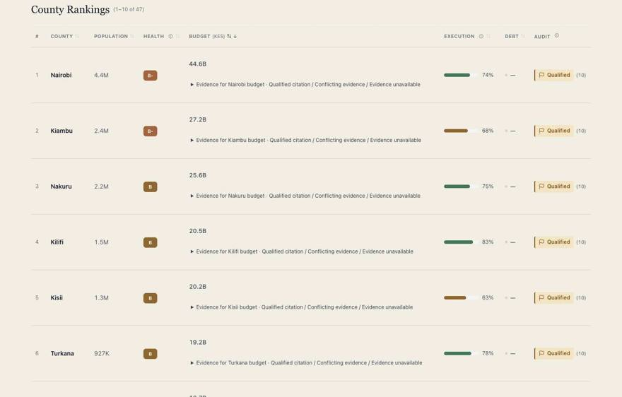</div><div class="desk-cap" style="margin:0 0 8px"><i>After</i></div><div class="desk">
    <div class="d-top"><span class="m-mark">AG</span><span class="m-word">AuditGava</span><span class="d-nav">Debt · Budget · Counties · Follow the money · Audits · Learn</span></div>
    <div style="padding:16px 18px 0;display:flex;gap:12px;align-items:center;flex-wrap:wrap"><div style="font-family:var(--font-display);font-weight:700;font-size:28px">County Explorer</div><div class="m-search" style="margin:0;flex:1;min-width:200px">⌕ Find your county</div><div class="m-seg4" style="margin:0;width:auto"><span class="on">Spending rate</span><span>Per person</span><span>Unpaid bills</span><span>Audit record</span></div></div>
    <div class="d-split">
      <div class="m-card"><div class="m-lbl">Ranked by spending rate · FY 2025/26</div>
        <div class="m-row"><span class="rk">1</span><span class="nm">Meru</span><span class="pc">92%</span><span class="bar"><b style="width:92%"></b></span><span class="amt">13.9B of 15.1B</span></div>
        <div class="m-row"><span class="rk">2</span><span class="nm">Wajir</span><span class="pc">90%</span><span class="bar"><b style="width:90%"></b></span><span class="amt">12.3B of 13.6B</span></div>
        <div class="m-row sel"><span class="rk">29</span><span class="nm">Baringo</span><span class="pc">76%</span><span class="bar"><b style="width:76%"></b></span><span class="amt">7.7B of 10.1B</span></div>
        <div class="d-ph" style="height:60px">… 44 more rows · Table view ⇄</div>
      </div>
      <div class="m-card"><div class="m-lbl">Selected</div><div style="font-family:var(--font-display);font-weight:700;font-size:24px">Baringo County</div><div class="d-ph" style="height:150px">Map of Kenya, Baringo outlined, coloured by the chosen measure</div><div class="m-showall">Open Baringo’s page</div></div>
    </div>
  </div><div class="desk-cap"><i>Desktop</i> · ranked list and selected county side by side; table view is optional</div></div>
</article>

<!-- ====================== COUNTY PAGE ====================== -->
<article class="spec" id="b-county">
  <div class="spec-h"><div class="tags"><span class="tag p0">P0</span><span class="tag">Effort L</span><span class="tag">/counties/[id] · all five tabs</span></div>
  <h3>A county’s page: header once, sticky tabs, and each tab answering one question</h3></div>
  <div class="spec-b">
    <h6>What a phone user sees today (Baringo)</h6>
    <div class="tbl"><table class="bp">
      <thead><tr><th>Part</th><th>Phone screens</th><th>What’s there</th><th>Problems</th></tr></thead>
      <tbody>
        <tr><td>Header</td><td class="num">~1.3</td><td>Name, governor, population, a Watch button, Health B and Audit F cards, five KPIs, then a 2×2+1 button grid</td><td>Every tab opens under 1.3 screens of the same header. The buttons scroll away, so switching tab means scrolling back up.</td></tr>
        <tr><td>Overview</td><td class="num">5.8</td><td>The 75-word pending-bills paragraph, budget execution, debt position, an audit snapshot, the “unaccounted for” callout, profile, key challenges, governor</td><td>The caveat comes before the content. It has a good plain sentence: “KES 7.67B spent of KES 10.08B allocated”.</td></tr>
        <tr><td>Follow the money</td><td class="num">4.1</td><td>A 76% ring (“Good efficiency”), allocated and spent bars, unspent 2.41B, “Flagged: Data not available · No audit findings recorded for this period”</td><td><b>It contradicts the Audit tab</b>, which lists 196 findings. Those come from the 2021–2025 audits and this tab shows FY2025/26, but nothing says so.</td></tr>
        <tr><td>Budget &amp; debt</td><td class="num">4.1</td><td>Four figures (allocated, spent, development 4.19B, recurrent 5.89B) and pending bills 870.2M. Aging: “No source-bound aging observation is available in this app for this population.”</td><td>Thin, and has no chart. The development vs recurrent split has a legal benchmark that would make it meaningful.</td></tr>
        <tr><td>Audit findings</td><td class="num hot">20.3</td><td>“Showing 20 of 196 findings”, with no way to reach the other 176. Each is the Auditor-General’s full paragraph, open by default, with “OTHER · Open · WARNING” chips. “Findings by category” shows a single category, “Other: 196”. Total money questioned “—”.</td><td>Twenty screens of unbroken legal prose. The finding title runs into the first sentence. Amounts stay buried in the text (“Kshs.61,009,623”).</td></tr>
        <tr><td>Accountability</td><td class="num">5.5</td><td>F 37/100, “How this grade was calculated” with point deductions, flagged KES 4.27B, peer comparison</td><td>The method is excellent and should stay. But “Mouse-over each row” is hover-only, the severity chips break mid-word at 360px (“MODERA TE”, “MAJO R”), and “Total flagged KES 4.27B” disagrees with the Audit tab’s “—”. Peer comparison shows “Below peer average” in green next to an F.</td></tr>
      </tbody>
    </table></div>
    <h6>Blueprint</h6>
    <ul>
      <li><b>Compact header, shown once:</b> name, “Gov. Benjamin Chesire Cheboi · 667K people”, and two periods stated plainly: “Budget data FY2025/26 · Audits 2021–2025”. Then the report card (round one, E10) and four KPIs with signal words. Watch and Export go into a ⋯ menu.</li>
      <li><b>Sticky tabs with short labels that fit 360px in one row:</b> Overview · Money · Budget · Audit · Score. Five tabs of about 66px each. Use real ARIA tabs and keep <code>?tab=</code>. When the reader switches tab, scroll to the tab bar, not the top of the page.</li>
      <li><b>Overview = “3 things to know”:</b> three StatCards, each with a signal word and a link to its tab: spending rate, unpaid bills as a share of budget, and serious audit findings. The full caveat moves to a sheet.</li>
      <li><b>Money</b> = one flow bar: allocated → spent (with contract commitments shaded) → unspent. No ring. Say plainly: “No audit covers FY2025/26 yet. The 2021–2025 audits found 196 issues → Audit tab”.</li>
      <li><b>Budget</b> = a development share meter against the <b>30% legal minimum</b> (41.6% for Baringo, so on track). Add the wage-bill share if the data has it, then unpaid bills with age bars when available. If no age data exists, say “Age of these bills not published”, not “no source-bound aging observation”.</li>
      <li><b>Audit</b> = summary first: a per-year strip of findings (2021: 45 · 2022: 46 · 2023: 34 · 2024: 32 · 2025: 39), a severity split (29 serious · 151 warnings · 16 notes) and “which office” counts (County Executive vs County Assembly). Then a “Largest stated amounts” list where amounts were extracted. Then collapsed finding cards: a bold title, a 2-line excerpt and <i>Read the Auditor’s words</i>, filter chips, and “Show 20 more”. Drop the “OTHER” chip and the single-category block while only one category exists.</li>
      <li><b>Score</b> = keep the method, drawn as a waterfall from 100 to 37 (Part 3, chart C7). Tap a step for its rule. Fix the chip wrapping. Peer comparison compares the <i>grade</i>, with a dot showing where Baringo sits among 47, and puts the flagged-amount comparison under it as context.</li>
      <li><b>Desktop:</b> a two-column layout. A sticky left card holds the report card, KPIs and a vertical tab list. The right column holds tab content, with charts two per row where they fit.</li>
    </ul>
  </div>
  <div class="ba"><figure><div class="shot ">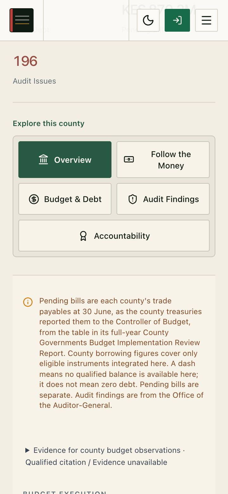</div><figcaption><b>Before</b> · Overview: caveat before content</figcaption></figure>
    <figure><div class="phone">
      <div class="m-hdr"><span class="m-mark">AG</span><span class="m-word">AuditGava</span><span class="m-sp"></span><span class="m-btn">Menu</span></div>
      <div class="m-body" style="padding-bottom:6px">
        <div style="font-size:12px;color:var(--m-sage);font-weight:600">← All counties</div>
        <div style="font-family:var(--font-display);font-weight:700;font-size:30px;line-height:1;margin-top:6px">Baringo County</div>
        <div style="font-size:12.5px;color:var(--m-muted);margin-top:4px">Gov. Benjamin Chesire Cheboi · 667K people</div>
        <div class="m-periods"><span>Budget data <b>FY2025/26</b></span><span>Audits <b>2021–2025</b></span></div>
      </div>
      <div class="m-tabs"><span class="on">Overview</span><span>Money</span><span>Budget</span><span>Audit</span><span>Score</span></div>
      <div class="m-body">
        <div class="m-lbl">3 things to know</div>
        <div class="m-know"><span class="m-pill ok">On track</span><b>Spent 76% of its budget</b><span>KES 7.67B of 10.08B · target 70%</span></div>
        <div class="m-know"><span class="m-pill warn">Watch</span><b>KES 870M in unpaid bills</b><span>8.6% of its budget, owed to suppliers</span></div>
        <div class="m-know"><span class="m-pill bad">Serious</span><b>29 serious audit findings</b><span>of 196 findings in the 2021–2025 audits</span></div>
      </div>
    </div><figcaption><i>After</i> · header + sticky tabs + overview</figcaption></figure><figure><div class="shot ">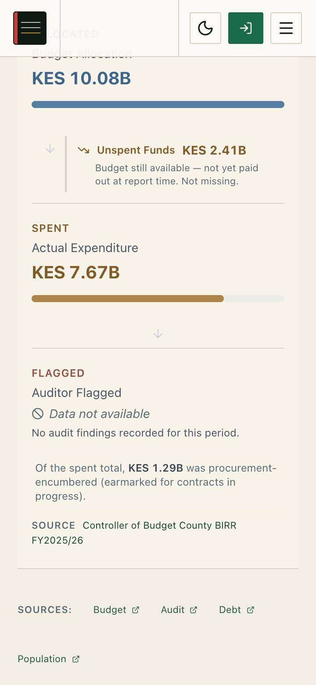</div><figcaption><b>Before</b> · Money: ring, “no findings”</figcaption></figure><figure><div class="shot ">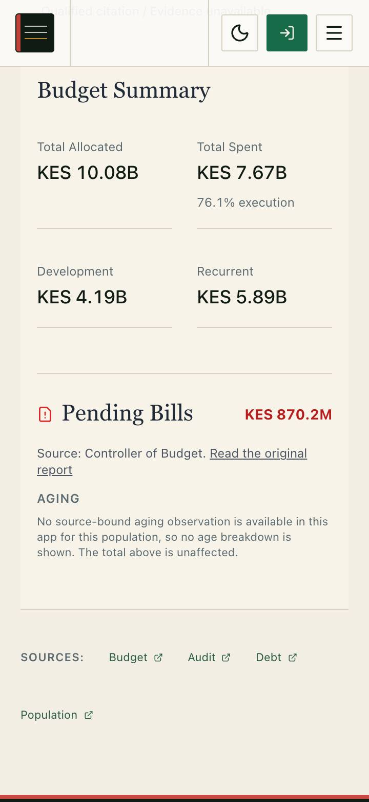</div><figcaption><b>Before</b> · Budget: four figures, no chart</figcaption></figure>
    <figure><div class="phone">
      <div class="m-tabs"><span>Overview</span><span class="on">Money</span><span>Budget</span><span>Audit</span><span>Score</span></div>
      <div class="m-body">
        <p class="m-cmp" style="font-size:15px"><b>Baringo spent 76p of every shilling</b> it was given in FY 2025/26.</p>
        <svg viewBox="0 0 300 122" width="100%" role="img" aria-label="Baringo spent 7.67 of 10.08 billion allocated; 2.41 billion is unspent" class="mchart"><text x="10.0" y="14.0" class="lab" font-weight="600">Allocated KES 10.08B</text><rect x="10" y="20" width="280" height="18" rx="4" fill="var(--m-mute-bar)"/><text x="10.0" y="58.0" class="lab" font-weight="600">Spent KES 7.67B (76%)</text><rect x="10" y="64" width="175.2" height="18" rx="4" fill="var(--m-good)"/><rect x="187.2" y="64" width="35.8" height="18" rx="4" fill="var(--m-good-tint2)"/><rect x="225.1" y="64" width="64.9" height="18" rx="4" fill="none" stroke="var(--m-caution)" stroke-width="1.5" stroke-dasharray="4 3"/><text x="290.0" y="98.0" class="lab" text-anchor="end" fill="var(--m-caution)" font-weight="700">Unspent 2.41B</text><text x="10.0" y="116.0" class="ax">Light green: 1.29B committed to contracts in progress</text></svg>
        <div class="m-note">No audit covers FY2025/26 yet. The 2021–2025 audits found 196 issues. <b style="color:var(--m-sage)">See Audit ›</b></div>
        <div class="m-sec">Budget split</div>
        <svg viewBox="0 0 300 68" width="100%" role="img" aria-label="Baringo puts 41.6 percent of its budget into development, above the 30 percent legal minimum" class="mchart"><rect x="10" y="26" width="280" height="14" rx="7" fill="var(--m-good-tint)"/><rect x="10" y="26" width="116.5" height="14" rx="7" fill="var(--m-good)"/><line x1="94.0" x2="94.0" y1="18" y2="48" stroke="var(--m-ink)" stroke-width="2"/><text x="94.0" y="62.0" class="ax" text-anchor="middle" fill="var(--m-ink)">legal minimum 30%</text><text x="132.5" y="16.0" class="lab" font-weight="700">41.6% development</text><text x="10.0" y="16.0" class="ax">0</text><text x="290.0" y="16.0" class="ax" text-anchor="end">100%</text></svg>
        <div style="font-size:12px;color:var(--m-muted)">PFM Act 2012, s.107: at least 30% of a county budget goes to development.</div>
      </div>
    </div><figcaption><i>After</i> · Money and Budget tabs</figcaption></figure><figure><div class="shot ">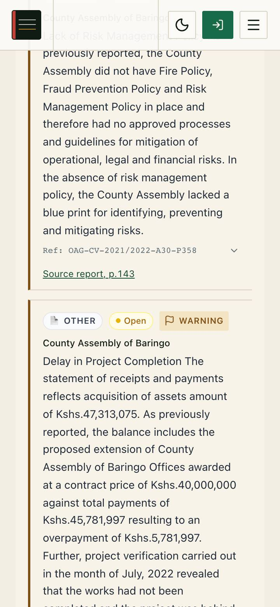</div><figcaption><b>Before</b> · Audit: 20 screens of paragraphs</figcaption></figure>
    <figure><div class="phone">
      <div class="m-tabs"><span>Overview</span><span>Money</span><span>Budget</span><span class="on">Audit</span><span>Score</span></div>
      <div class="m-body">
        <div class="m-lbl">Audits 2021–2025 · 196 findings</div>
        <div class="m-tallbar"><span style="flex:29;background:var(--m-alarm)">29</span><span style="flex:151;background:var(--m-cautionf);color:var(--m-ink)">151</span><span style="flex:16;background:var(--m-mute-bar2);color:var(--m-ink)">16</span></div>
        <div class="legend" style="color:var(--m-muted);font-size:12px;margin:4px 0 10px"><span>■ <span style="color:var(--m-alarm)">Serious</span></span><span>■ Warning</span><span>■ Note</span></div>
        <div class="m-chips" style="margin-bottom:10px"><span class="m-chip on">Serious ✕</span><span class="m-chip">Office ▾</span><span class="m-chip">Has amount</span></div>
        <div class="m-find"><div class="who"><span>County Executive</span><span>p.311 ↗</span></div><div class="t">Unaccounted for certified seeds, breeding stock and live animals</div><div class="kv"><span class="m-pill bad">Unaccounted for / loss</span></div><div class="m-more" style="border:0;min-height:30px"><span>Read the Auditor’s words</span><span>▾</span></div></div>
        <div class="m-find"><div class="who"><span>County Executive</span><span>KES 61.0M</span></div><div class="t">Salaries paid outside the official payroll system</div><div class="kv"><span>126 employees paid manually</span></div></div>
      </div>
    </div><figcaption><i>After</i> · Audit tab, summary first</figcaption></figure><figure><div class="shot ">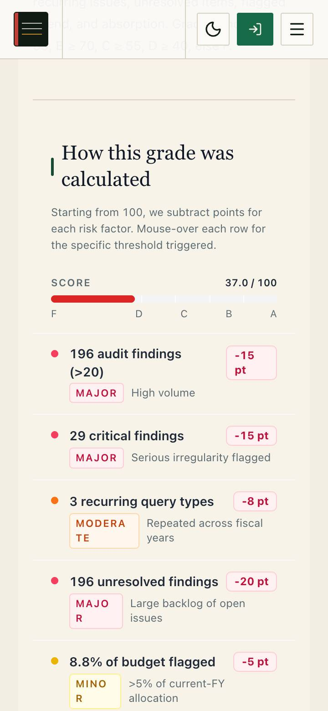</div><figcaption><b>Before</b> · Score: list, broken chips</figcaption></figure>
    <figure><div class="phone">
      <div class="m-tabs"><span>Overview</span><span>Money</span><span>Budget</span><span>Audit</span><span class="on">Score</span></div>
      <div class="m-body">
        <div class="m-lbl">How Baringo’s audit score is worked out</div>
        <svg viewBox="0 0 300 182" width="100%" role="img" aria-label="Baringo audit score starts at 100 and loses 63 points for findings, serious findings, repeats, open items and flagged spending, ending at 37" class="mchart"><line x1="26" x2="296" y1="150.0" y2="150.0" stroke="var(--m-line)"/><text x="21.0" y="154.0" class="ax" text-anchor="end">0</text><line x1="26" x2="296" y1="85.0" y2="85.0" stroke="var(--m-line)"/><text x="21.0" y="89.0" class="ax" text-anchor="end">50</text><line x1="26" x2="296" y1="20.0" y2="20.0" stroke="var(--m-line)"/><text x="21.0" y="24.0" class="ax" text-anchor="end">100</text><rect x="30" y="20.0" width="32" height="130.0" rx="2" fill="var(--m-mute-bar)"/><text x="46.0" y="15.0" class="lab" text-anchor="middle" font-weight="700">100</text><text x="46.0" y="163.0" class="ax" text-anchor="middle">Start</text><rect x="68" y="20.0" width="32" height="19.5" rx="2" fill="var(--m-alarm)"/><text x="84.0" y="15.0" class="lab" text-anchor="middle" font-weight="700">-15</text><text x="84.0" y="163.0" class="ax" text-anchor="middle">Found</text><text x="84.0" y="174.0" class="ax" text-anchor="middle">196</text><rect x="106" y="39.5" width="32" height="19.5" rx="2" fill="var(--m-alarm)"/><text x="122.0" y="34.5" class="lab" text-anchor="middle" font-weight="700">-15</text><text x="122.0" y="163.0" class="ax" text-anchor="middle">Serious</text><text x="122.0" y="174.0" class="ax" text-anchor="middle">29</text><rect x="144" y="59.0" width="32" height="10.4" rx="2" fill="var(--m-cautionf)"/><text x="160.0" y="54.0" class="lab" text-anchor="middle" font-weight="700">-8</text><text x="160.0" y="163.0" class="ax" text-anchor="middle">Repeat</text><text x="160.0" y="174.0" class="ax" text-anchor="middle">3</text><rect x="182" y="69.4" width="32" height="26.0" rx="2" fill="var(--m-alarm)"/><text x="198.0" y="64.4" class="lab" text-anchor="middle" font-weight="700">-20</text><text x="198.0" y="163.0" class="ax" text-anchor="middle">Open</text><text x="198.0" y="174.0" class="ax" text-anchor="middle">196</text><rect x="220" y="95.4" width="32" height="6.5" rx="2" fill="var(--m-cautionf)"/><text x="236.0" y="90.4" class="lab" text-anchor="middle" font-weight="700">-5</text><text x="236.0" y="163.0" class="ax" text-anchor="middle">Flagged</text><text x="236.0" y="174.0" class="ax" text-anchor="middle">8.8%</text><rect x="258" y="101.9" width="32" height="48.1" rx="2" fill="var(--m-alarm)"/><text x="274.0" y="96.9" class="lab" text-anchor="middle" font-weight="700">37 · F</text><text x="274.0" y="163.0" class="ax" text-anchor="middle">Score</text></svg>
        <div style="font-size:12px;color:var(--m-muted);margin-bottom:8px">Tap a bar for the rule. Bands: A ≥ 85 · B ≥ 70 · C ≥ 55 · D ≥ 40 · else F.</div>
        <div class="m-sec">Among the 47 counties</div>
        <div class="m-dotline"><i style="left:6%" class="me"></i><i style="left:30%"></i><i style="left:44%"></i><i style="left:52%"></i><i style="left:61%"></i><i style="left:70%"></i><i style="left:83%"></i></div>
        <div style="font-size:12px;color:var(--m-muted)">Baringo (red) and a sample of other counties’ scores. Real positions come from the live data.</div>
      </div>
    </div><figcaption><i>After</i> · Score as a waterfall</figcaption></figure>
  </div>
  <div class="desk-wrap"><div class="desk-cap" style="margin:0 0 8px"><b style="color:var(--copper)">Before</b> · county page on desktop today</div><div class="desk-before">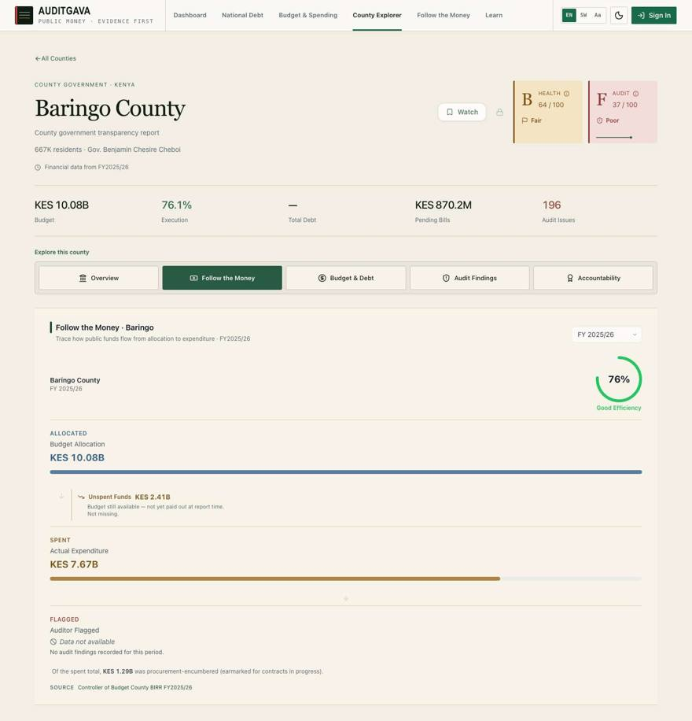</div><div class="desk-cap" style="margin:0 0 8px"><i>After</i></div><div class="desk">
    <div class="d-top"><span class="m-mark">AG</span><span class="m-word">AuditGava</span><span class="d-nav">Debt · Budget · Counties · Follow the money · Audits · Learn</span></div>
    <div class="d-grid" style="grid-template-columns:230px 1fr">
      <aside class="m-card" style="align-self:start">
        <div style="font-family:var(--font-display);font-weight:700;font-size:26px;line-height:1">Baringo County</div>
        <div class="m-periods" style="margin:8px 0"><span>Budget <b>FY2025/26</b></span><span>Audits <b>2021–25</b></span></div>
        <div class="m-grade" style="border:0;padding:4px 0"><span class="m-letter" style="background:#6E8F3A;width:38px;height:38px;font-size:22px">B</span><div style="font-size:12.5px"><b>Money management</b><br>Fair · 64</div></div>
        <div class="m-grade" style="border:0;padding:4px 0"><span class="m-letter" style="background:#9E2F26;width:38px;height:38px;font-size:22px">F</span><div style="font-size:12.5px"><b>Audit record</b><br>Poor · 37</div></div>
        <div class="d-vtabs"><a>Overview</a><a class="on">Money</a><a>Budget</a><a>Audit</a><a>Score</a></div>
      </aside>
      <div>
        <div class="d-row2"><div class="m-card"><div class="m-lbl">Where the money went · FY2025/26</div><svg viewBox="0 0 300 122" width="100%" role="img" aria-label="Baringo spent 7.67 of 10.08 billion allocated; 2.41 billion is unspent" class="mchart"><text x="10.0" y="14.0" class="lab" font-weight="600">Allocated KES 10.08B</text><rect x="10" y="20" width="280" height="18" rx="4" fill="var(--m-mute-bar)"/><text x="10.0" y="58.0" class="lab" font-weight="600">Spent KES 7.67B (76%)</text><rect x="10" y="64" width="175.2" height="18" rx="4" fill="var(--m-good)"/><rect x="187.2" y="64" width="35.8" height="18" rx="4" fill="var(--m-good-tint2)"/><rect x="225.1" y="64" width="64.9" height="18" rx="4" fill="none" stroke="var(--m-caution)" stroke-width="1.5" stroke-dasharray="4 3"/><text x="290.0" y="98.0" class="lab" text-anchor="end" fill="var(--m-caution)" font-weight="700">Unspent 2.41B</text><text x="10.0" y="116.0" class="ax">Light green: 1.29B committed to contracts in progress</text></svg></div><div class="m-card"><div class="m-lbl">Development share</div><svg viewBox="0 0 300 68" width="100%" role="img" aria-label="Baringo puts 41.6 percent of its budget into development, above the 30 percent legal minimum" class="mchart"><rect x="10" y="26" width="280" height="14" rx="7" fill="var(--m-good-tint)"/><rect x="10" y="26" width="116.5" height="14" rx="7" fill="var(--m-good)"/><line x1="94.0" x2="94.0" y1="18" y2="48" stroke="var(--m-ink)" stroke-width="2"/><text x="94.0" y="62.0" class="ax" text-anchor="middle" fill="var(--m-ink)">legal minimum 30%</text><text x="132.5" y="16.0" class="lab" font-weight="700">41.6% development</text><text x="10.0" y="16.0" class="ax">0</text><text x="290.0" y="16.0" class="ax" text-anchor="end">100%</text></svg><div style="font-size:12px;color:var(--m-muted)">Legal minimum 30% (PFM Act s.107)</div></div></div>
        <div class="m-note" style="margin-top:12px">No audit covers FY2025/26 yet. The 2021–2025 audits found 196 issues → Audit</div>
      </div>
    </div>
  </div><div class="desk-cap"><i>Desktop</i> · sticky county card with vertical tabs; content charts side by side</div></div>
  <div class="spec-b" style="padding-top:0">
    <div class="callout"><b>Check before shipping:</b> the PFM Act s.107(2)(b) 30% development minimum and the 35% wage-bill ceiling (PFM County Government Regulations 2015). Confirm the wording against the Act on Kenya Law and cite the section in the sheet, the same way the Constitution reader cites articles.</div>
  </div>
</article>

<article class="spec" id="b-traced">
  <div class="spec-h"><div class="tags"><span class="tag p0">P0</span><span class="tag">Data + code, not design</span><span class="tag">/counties/[id] · traced on Baringo, 14 Nov 2026</span></div>
  <h3>County figures that disagree, traced to their cause</h3></div>
  <div class="spec-b">
    <p>A reader who checks two tabs of the same county page sees numbers that contradict each other. I traced each one through the production code (<code>origin/main</code>) and a read-only query of the production database. The transaction was <code>BEGIN READ ONLY</code>, and a test <code>INSERT</code> was refused with “cannot execute INSERT in a read-only transaction”. None of these are design problems. They need code or data fixes before the redesigned county page goes out, or the new layout will show the same contradictions more clearly.</p>
    <div class="tbl"><table class="bp">
      <thead><tr><th>What the reader sees</th><th>Cause</th><th>Receipt</th></tr></thead>
      <tbody>
        <tr><td><b>Audit tab: “Total money questioned —”.<br>Score tab: “Total flagged KES 4.27B”.</b></td>
          <td>The two tabs read amounts from different places. The Audit tab reads each finding’s amount from the first entry of its <code>provenance</code> JSON, defaulting to 0. The Score tab sums the <code>audits.amount</code> column. Baringo has no amounts in provenance, but 14 of its 196 findings have one in the column.</td>
          <td><code>backend/main.py:4369-4421</code> (provenance) vs <code>:6434-6439</code> (column). DB: 196 findings · 14 with <code>amount</code> · sum 4,271,070,693 · 0 with a provenance amount.</td></tr>
        <tr><td><b>Audit tab: every finding is category “Other” and status “Open”</b> (“Findings by category: Other 196”, “Open: 196”).</td>
          <td>The same provenance read: category defaults to <code>"other"</code> and status to <code>"open"</code> when provenance lacks them, and it lacks them for all 196.</td>
          <td><code>main.py:4379-4386</code>. DB: 0 of 196 have a provenance category.</td></tr>
        <tr><td><b>Score tab: “8.8% of budget flagged” and “absorption rate 78.9%”.<br>Every other tab: budget KES 10.08B, 76.1% spent.</b></td>
          <td>The Score tab divides by the sum of <i>all</i> budget lines for FY2025/26 except a category called “Total Budget”. Baringo’s period holds 20 lines. The county total (“Total”) is counted, and so are the development and recurrent rows, the sector rows, and the income rows (“Revenue Receipts”, “Own Source Revenue”). That comes to KES 48.36B, about 4.8 times the real KES 10.08B budget. 4.27B ÷ 48.36B = 8.83%, and 38.14B ÷ 48.36B = 78.86%.</td>
          <td><code>main.py:6475-6488</code>. DB: sum of allocated (excl. “Total Budget”) = 48,360,013,578.31; sum spent = 38,136,385,561.44; the “Total” row = 10,075,960,000.</td></tr>
        <tr><td><b>Score tab: “196 unresolved findings, −20 points”.</b></td>
          <td>“Unresolved” means any status that isn’t resolved, closed, dismissed or settled. But the status column holds <code>published_report</code> for every finding in the database (8,918 of 8,920). That is a publication status, not a resolution status. So every finding in every county counts as unresolved, and every county with findings loses up to 20 points for something the data can’t show.</td>
          <td><code>main.py:6453-6463</code>. DB: Baringo 196 × <code>published_report</code>; all audits: 8,918 <code>published_report</code>, 2 <code>pending</code>.</td></tr>
        <tr><td><b>Money tab: “No audit findings recorded for this period”, while the Audit tab lists 196.</b></td>
          <td>Both are true. The Money tab shows FY2025/26, which no audit covers yet. Baringo’s findings come from audit years 2021–2025 (45, 46, 34, 32, 39). Neither tab names its period, so they read as a contradiction.</td>
          <td>API <code>/counties/baringo/money-flow?year=FY2025/26</code> → <code>amount_coverage.reason: "no_findings"</code>. DB: <code>audit_year</code> 2021–2025.</td></tr>
        <tr><td><b>Audit tab: “Showing 20 of 196 findings”</b> with no control to see the rest.</td>
          <td>The findings list is capped at 20, with only a count line after it.</td>
          <td><code>AuditTab.tsx:299</code>, <code>:471-475</code>; seen on the live page.</td></tr>
        <tr><td><b>Home panel “Financial health 63.6/100”; county page “Health 64/100”.</b></td>
          <td>The same field (<code>financial_health_score</code> = 63.6), rounded differently. A minor issue, but pick one rule.</td>
          <td>API <code>/counties/baringo</code> → 63.6.</td></tr>
      </tbody>
    </table></div>
    <h6>What this does to Baringo’s grade</h6>
    <p>The F (37/100) depends on two of the inputs above. With the flagged share measured against the real budget, 4.27B of 10.08B is 42%. That passes the “more than 10%” rule, so the deduction would be −10, not −5. The −20 for unresolved findings rests on a field that doesn’t record resolution at all. Change only those two inputs and the score would be 52 (D) rather than 37 (F). There is a separate question of whether five years of flagged amounts should be compared with one year’s budget at all. Because this logic is shared, the same issues reach every county’s grade, not only Baringo’s.</p>
    <h6>Suggested order</h6>
    <ol class="rules">
      <li>Read audit amounts, category and status from one place for every endpoint. Use the columns, which are where the data actually is.</li>
      <li>Compute the budget denominator from the “Total” classification row (or development + recurrent), the same way <code>total_budget</code> does for the rest of the page.</li>
      <li>Drop or rename the “unresolved” factor until the data holds a real resolution status, and say so on the Score tab.</li>
      <li>State the period on every tab (part of the redesign), and remove the 20-finding cap with a “Show 20 more” control (E11 / county Audit tab).</li>
      <li>Add a consistency test that compares the same figure across the endpoints behind each tab, using one county fixture.</li>
    </ol>
  </div><div class="ba"><figure><div class="shot ">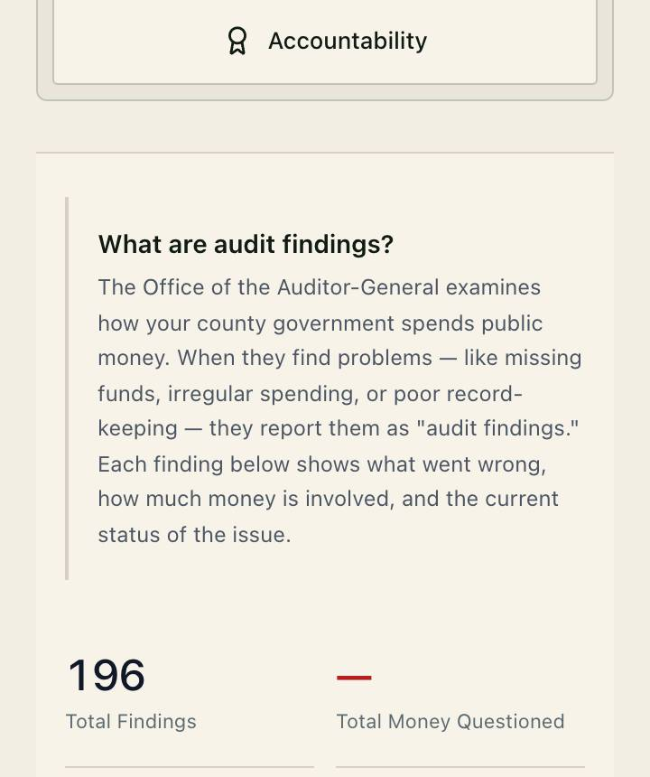</div><figcaption><b>Before</b> · Audit tab: money questioned “—”</figcaption></figure><figure><div class="shot ">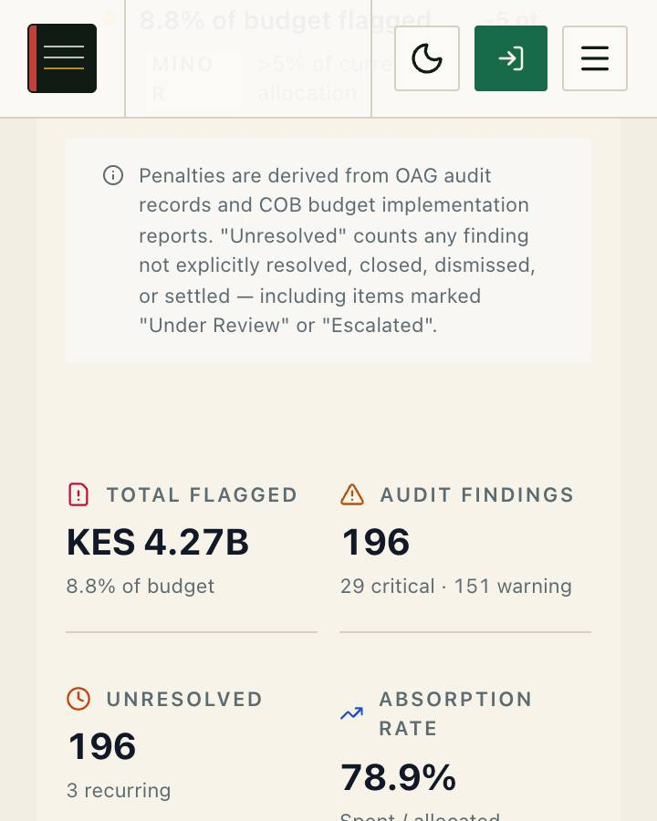</div><figcaption><b>Before</b> · Score tab: flagged KES 4.27B</figcaption></figure><figure><div class="phone"><div class="m-tabs"><span>Overview</span><span>Money</span><span>Budget</span><span class="on">Audit</span><span>Score</span></div><div class="m-body"><div class="m-lbl">Amounts stated in findings · audits 2021–2025</div><div class="m-big" style="font-size:32px;color:var(--m-alarm)"><small>KES</small>4.27B</div><div style="font-size:12.5px;color:var(--m-muted)">14 of 196 findings state an amount</div><div class="m-tabs" style="margin:14px -14px 10px"><span>Overview</span><span>Money</span><span>Budget</span><span>Audit</span><span class="on">Score</span></div><div class="m-ledger"><span>Flagged in findings</span><b>KES 4.27B</b></div><div class="m-ledger"><span>Compared with the FY2025/26 budget (KES 10.08B)</span><b>42%</b></div><div class="m-ledger"><span>Spent of budget</span><b>76.1%</b></div><div style="font-size:12px;color:var(--m-muted);margin-top:8px">Same figures and periods on every tab (after issues #922–#924)</div></div></div><figcaption><i>After</i> · both tabs agree</figcaption></figure></div>
</article>

<!-- ====================== FOLLOW THE MONEY ====================== -->
<article class="spec" id="b-ftm">
  <div class="spec-h"><div class="tags"><span class="tag p1">P1</span><span class="tag">Effort M</span><span class="tag">/transparency · 20.4 phone screens today</span></div>
  <h3>Follow the money: the national flow, then the 47 counties on one screen</h3></div>
  <div class="spec-b">
    <h6>Today</h6>
    <p>A good opening paragraph explains the journey from allocated to spent to questioned. Then come the period picker, “KES 648.2B allocated, KES 496.6B reached programmes” with allocated/spent bars, an “At a glance” block, and 47 county cards over 14 screens. Every card ends with “Flagged — · No audit findings recorded for this period.” The headline is muddied by the eyebrow “Allocation source unavailable · FY 2025/26”, printed directly above the figure it seems to contradict. Percentages carry two decimals.</p>
    <h6>Blueprint</h6>
    <ul>
      <li><b>Headline as a verdict:</b> “Counties spent 77% of what they were given: KES 496.6B of 648.2B”. Under it, one flow bar with the KES 151.7B unspent gap in caution colour, worded as “not yet spent”, never “missing”. Move the source caveat into the source sheet.</li>
      <li><b>All 47 on one screen:</b> the dot-strip chart (Part 3, C6) with the 70% target. “10 counties below target” becomes a filter chip that lists them.</li>
      <li><b>The rich county cards</b> from E6 (revised): every detail kept, a dotted frame, colour by distance from the 70% target, 10 cards plus <i>Show all</i>, sort chips.</li>
      <li><b>Say “audit amounts not published for FY 2025/26” once</b> at section level. When a period does have audit amounts, add a third column, “Questioned”, with its own caveat.</li>
      <li><b>Desktop:</b> the strip chart full width over a two-column list (counties 1–24, 25–47) with sortable column heads.</li>
    </ul>
  </div>
  <div class="ba"><figure><div class="shot ">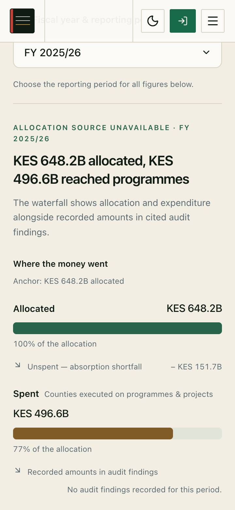</div><figcaption><b>Before</b> · headline with contradictory eyebrow</figcaption></figure>
    <figure><div class="phone"><div class="m-body">
      <div class="m-lbl">Counties · FY 2025/26</div>
      <p class="m-cmp" style="font-size:17px;margin-top:6px"><b>Counties spent 77%</b> of what they were given: KES 496.6B of 648.2B.</p>
      <div class="m-flow"><span class="sp" style="flex:496.6">Spent 496.6B</span><span class="un" style="flex:151.7">151.7B</span></div>
      <div style="font-size:12px;color:var(--m-muted);margin:4px 0 12px">151.7B not yet spent at report time. Not missing. <u>Why?</u></div>
      <svg viewBox="0 0 300 144" width="100%" role="img" aria-label="Share of budget spent by each of 47 counties in FY2025/26; 10 counties are below the 70 percent target" class="mchart"><rect x="18" y="18" width="105.6" height="90" fill="var(--m-caution-tint)"/><line x1="123.6" x2="123.6" y1="12" y2="108" stroke="var(--m-caution)" stroke-width="1.5"/><text x="119.6" y="12.0" class="ax" text-anchor="end" fill="var(--m-caution)">70% target</text><line x1="158.4" x2="158.4" y1="18" y2="108" stroke="var(--m-ink)" stroke-width="1"/><text x="162.4" y="12.0" class="ax">national 77%</text><circle cx="50.2" cy="80" r="4" fill="var(--m-caution)" stroke="var(--m-card)" stroke-width="1.5"><title>Siaya 56.1%</title></circle><circle cx="67.6" cy="80" r="4" fill="var(--m-caution)" stroke="var(--m-card)" stroke-width="1.5"><title>Kisumu 59.4%</title></circle><circle cx="88.2" cy="80" r="4" fill="var(--m-caution)" stroke="var(--m-card)" stroke-width="1.5"><title>Kisii 63.3%</title></circle><circle cx="90.3" cy="80" r="4" fill="var(--m-caution)" stroke="var(--m-card)" stroke-width="1.5"><title>Uasin Gishu 63.7%</title></circle><circle cx="98.3" cy="80" r="4" fill="var(--m-caution)" stroke="var(--m-card)" stroke-width="1.5"><title>Busia 65.2%</title></circle><circle cx="104.1" cy="69" r="4" fill="var(--m-caution)" stroke="var(--m-card)" stroke-width="1.5"><title>Elgeyo Marakwet 66.3%</title></circle><circle cx="114.1" cy="80" r="4" fill="var(--m-caution)" stroke="var(--m-card)" stroke-width="1.5"><title>Kiambu 68.2%</title></circle><circle cx="116.7" cy="80" r="4" fill="var(--m-caution)" stroke="var(--m-card)" stroke-width="1.5"><title>Kwale 68.7%</title></circle><circle cx="118.8" cy="69" r="4" fill="var(--m-caution)" stroke="var(--m-card)" stroke-width="1.5"><title>Laikipia 69.1%</title></circle><circle cx="118.8" cy="58" r="4" fill="var(--m-caution)" stroke="var(--m-card)" stroke-width="1.5"><title>Narok 69.1%</title></circle><circle cx="138.9" cy="80" r="4" fill="var(--m-ink)" stroke="var(--m-card)" stroke-width="1.5"><title>Mombasa 72.9%</title></circle><circle cx="139.4" cy="69" r="4" fill="var(--m-ink)" stroke="var(--m-card)" stroke-width="1.5"><title>Kajiado 73.0%</title></circle><circle cx="143.7" cy="80" r="4" fill="var(--m-ink)" stroke="var(--m-card)" stroke-width="1.5"><title>Embu 73.8%</title></circle><circle cx="145.8" cy="69" r="4" fill="var(--m-ink)" stroke="var(--m-card)" stroke-width="1.5"><title>Nairobi 74.2%</title></circle><circle cx="146.3" cy="58" r="4" fill="var(--m-ink)" stroke="var(--m-card)" stroke-width="1.5"><title>Isiolo 74.3%</title></circle><circle cx="150.5" cy="80" r="4" fill="var(--m-ink)" stroke="var(--m-card)" stroke-width="1.5"><title>Machakos 75.1%</title></circle><circle cx="151.1" cy="69" r="4" fill="var(--m-ink)" stroke="var(--m-card)" stroke-width="1.5"><title>Nakuru 75.2%</title></circle><circle cx="151.6" cy="58" r="4" fill="var(--m-ink)" stroke="var(--m-card)" stroke-width="1.5"><title>Homa Bay 75.3%</title></circle><circle cx="155.8" cy="47" r="5" fill="var(--m-alarm)" stroke="var(--m-card)" stroke-width="1.5"><title>Baringo 76.1%</title></circle><circle cx="157.4" cy="80" r="4" fill="var(--m-ink)" stroke="var(--m-card)" stroke-width="1.5"><title>Lamu 76.4%</title></circle><circle cx="159.0" cy="69" r="4" fill="var(--m-ink)" stroke="var(--m-card)" stroke-width="1.5"><title>Nyandarua 76.7%</title></circle><circle cx="165.8" cy="80" r="4" fill="var(--m-ink)" stroke="var(--m-card)" stroke-width="1.5"><title>Turkana 78.0%</title></circle><circle cx="166.9" cy="69" r="4" fill="var(--m-ink)" stroke="var(--m-card)" stroke-width="1.5"><title>Murang'a 78.2%</title></circle><circle cx="168.0" cy="58" r="4" fill="var(--m-ink)" stroke="var(--m-card)" stroke-width="1.5"><title>Nandi 78.4%</title></circle><circle cx="168.0" cy="47" r="4" fill="var(--m-ink)" stroke="var(--m-card)" stroke-width="1.5"><title>Tharaka Nithi 78.4%</title></circle><circle cx="169.0" cy="36" r="4" fill="var(--m-ink)" stroke="var(--m-card)" stroke-width="1.5"><title>Garissa 78.6%</title></circle><circle cx="170.6" cy="25" r="4" fill="var(--m-ink)" stroke="var(--m-card)" stroke-width="1.5"><title>Tana River 78.9%</title></circle><circle cx="174.8" cy="80" r="4" fill="var(--m-ink)" stroke="var(--m-card)" stroke-width="1.5"><title>Kericho 79.7%</title></circle><circle cx="175.9" cy="69" r="4" fill="var(--m-ink)" stroke="var(--m-card)" stroke-width="1.5"><title>Kakamega 79.9%</title></circle><circle cx="178.0" cy="58" r="4" fill="var(--m-ink)" stroke="var(--m-card)" stroke-width="1.5"><title>Bomet 80.3%</title></circle><circle cx="178.5" cy="47" r="4" fill="var(--m-ink)" stroke="var(--m-card)" stroke-width="1.5"><title>Kitui 80.4%</title></circle><circle cx="182.2" cy="36" r="4" fill="var(--m-ink)" stroke="var(--m-card)" stroke-width="1.5"><title>Nyamira 81.1%</title></circle><circle cx="191.2" cy="80" r="4" fill="var(--m-ink)" stroke="var(--m-card)" stroke-width="1.5"><title>Migori 82.8%</title></circle><circle cx="193.3" cy="80" r="4" fill="var(--m-ink)" stroke="var(--m-card)" stroke-width="1.5"><title>Kilifi 83.2%</title></circle><circle cx="194.4" cy="69" r="4" fill="var(--m-ink)" stroke="var(--m-card)" stroke-width="1.5"><title>Bungoma 83.4%</title></circle><circle cx="194.9" cy="58" r="4" fill="var(--m-ink)" stroke="var(--m-card)" stroke-width="1.5"><title>Nyeri 83.5%</title></circle><circle cx="202.3" cy="80" r="4" fill="var(--m-ink)" stroke="var(--m-card)" stroke-width="1.5"><title>Kirinyaga 84.9%</title></circle><circle cx="203.3" cy="69" r="4" fill="var(--m-ink)" stroke="var(--m-card)" stroke-width="1.5"><title>Taita Taveta 85.1%</title></circle><circle cx="210.7" cy="80" r="4" fill="var(--m-ink)" stroke="var(--m-card)" stroke-width="1.5"><title>Trans Nzoia 86.5%</title></circle><circle cx="216.5" cy="69" r="4" fill="var(--m-ink)" stroke="var(--m-card)" stroke-width="1.5"><title>Marsabit 87.6%</title></circle><circle cx="219.2" cy="80" r="4" fill="var(--m-ink)" stroke="var(--m-card)" stroke-width="1.5"><title>Makueni 88.1%</title></circle><circle cx="223.9" cy="69" r="4" fill="var(--m-ink)" stroke="var(--m-card)" stroke-width="1.5"><title>West Pokot 89.0%</title></circle><circle cx="225.5" cy="80" r="4" fill="var(--m-ink)" stroke="var(--m-card)" stroke-width="1.5"><title>Vihiga 89.3%</title></circle><circle cx="228.1" cy="69" r="4" fill="var(--m-ink)" stroke="var(--m-card)" stroke-width="1.5"><title>Mandera 89.8%</title></circle><circle cx="228.7" cy="58" r="4" fill="var(--m-ink)" stroke="var(--m-card)" stroke-width="1.5"><title>Samburu 89.9%</title></circle><circle cx="230.3" cy="47" r="4" fill="var(--m-ink)" stroke="var(--m-card)" stroke-width="1.5"><title>Wajir 90.2%</title></circle><circle cx="239.2" cy="80" r="4" fill="var(--m-ink)" stroke="var(--m-card)" stroke-width="1.5"><title>Meru 91.9%</title></circle><text x="18.0" y="122.0" class="ax" text-anchor="middle">50%</text><text x="70.8" y="122.0" class="ax" text-anchor="middle">60%</text><text x="123.6" y="122.0" class="ax" text-anchor="middle">70%</text><text x="176.4" y="122.0" class="ax" text-anchor="middle">80%</text><text x="229.2" y="122.0" class="ax" text-anchor="middle">90%</text><text x="282.0" y="122.0" class="ax" text-anchor="middle">100%</text><text x="46.2" y="102.0" class="ax">Siaya 56%</text><text x="243.2" y="102.0" class="ax" text-anchor="end">Meru 92%</text><circle cx="22" cy="134" r="5" fill="var(--m-alarm)"/><text x="31.0" y="138.0" class="ax" fill="var(--m-ink)">Baringo 76%</text><circle cx="118" cy="134" r="4" fill="var(--m-caution)"/><text x="126.0" y="138.0" class="ax" fill="var(--m-ink)">below the 70% target</text></svg>
      <div class="m-chips" style="margin-top:6px"><span class="m-chip">10 below target</span><span class="m-chip">Find a county</span></div>
    </div></div><figcaption><i>After</i> · verdict, flow, all 47</figcaption></figure>
  </div>
</article>

<!-- ====================== BUDGET ====================== -->
<article class="spec" id="b-budget">
  <div class="spec-h"><div class="tags"><span class="tag p1">P1</span><span class="tag">Effort M</span><span class="tag">/budget · 12.2 phone screens today</span></div>
  <h3>Budget: keep the flow, cut the duplicates, make revenue readable</h3></div>
  <div class="spec-b">
    <ul>
      <li><b>Keep</b> the sources-and-uses flow (“where the money comes from” → “where it actually goes”) as two tall segmented bars. They work. Give each a takeaway: “60% comes from taxes; 23% is new borrowing” and “26 of every 100 shillings spent goes to interest”.</li>
      <li><b>Drop the spending donut</b> further down. It repeats the bar above and only works by hover.</li>
      <li><b>Four-year strips</b> (budget, revenue, borrowing, debt service): replace the clipped five-column strips (E16) with small multiples, one bar chart per measure stacked vertically, sharing year labels. Put the delta in words: “Debt service up 99% since FY2022/23”. Each year’s basis (approved, actual, preliminary) becomes a small letter under its bar with a key, not a word squeezed into each column.</li>
      <li><b>KRA revenue cards</b> become ranked bars by tax type (PAYE 599B, Customs 989B, VAT 355B, Corporation tax 347B, Excise 62B), each with its growth. Provenance goes in the chip (E3), and the plain explanation (“VAT — the 16% on most goods”) stays. That explanation is a good example of explaining a figure in everyday words.</li>
      <li><b>Economic context</b> (GDP, budget/GDP 31.2%, inflation 7.3%) becomes a three-tile KPI row. Inflation gets a caution signal only if it is outside the CBK target band, and the band is cited.</li>
      <li><b>Desktop:</b> sources and uses side by side, small multiples in a 2×2 grid.</li>
    </ul>
  </div><div class="ba"><figure><div class="shot "></div><figcaption><b>Before</b> · flow bars, clipped callout</figcaption></figure><figure><div class="shot "></div><figcaption><b>Before</b> · donut repeats the bar</figcaption></figure><figure><div class="phone"><div class="m-body"><div class="m-sec" style="margin-top:0">Where the money comes from</div><p class="m-cmp" style="font-size:13px">60% from taxes. <b>23% is new borrowing.</b></p><div class="m-tallbar"><span style="flex:59.7;background:var(--c1)">60%</span><span style="flex:13.5;background:#4FA3B3">14%</span><span style="flex:3.6;background:#9CCBD3"></span><span style="flex:23.2;background:var(--m-alarm)">23%</span></div><div class="legend" style="color:var(--m-muted);font-size:12px;margin:4px 0 12px"><span>■ Tax 2.86T</span><span>■ Ministry fees 644B</span><span>■ Other 171B</span><span style="color:var(--m-alarm)">■ New borrowing 1.11T</span></div><div class="m-sec">Where it goes</div><p class="m-cmp" style="font-size:13px"><b>26 of every 100 shillings</b> spent goes to interest.</p><div class="m-tallbar"><span style="flex:26.2;background:var(--m-alarm)">26%</span><span style="flex:47.7;background:var(--c3)">48%</span><span style="flex:15.7;background:var(--c4)">16%</span><span style="flex:10.4;background:var(--c2)">10%</span></div><div class="legend" style="color:var(--m-muted);font-size:12px;margin-top:4px"><span style="color:var(--m-alarm)">■ Interest 1.25T</span><span>■ Salaries &amp; running 2.28T</span><span>■ Development 749B</span><span>■ Counties 496B</span></div><div style="font-size:12px;color:var(--m-muted);margin-top:10px">The spending donut further down is removed: it repeated this bar.</div></div></div><figcaption><i>After</i> · two bars with takeaways, no donut</figcaption></figure><figure><div class="shot "></div><figcaption><b>Before</b> · four-year strips clipped</figcaption></figure><figure><div class="phone"><div class="m-body"><div class="m-sec" style="margin-top:0">The past five budgets</div><div class="m-lbl">Tax + non-tax revenue</div><p class="m-cmp" style="font-size:13px;margin:2px 0 0">Up 46% since FY2022/23</p><svg viewBox="0 0 300 110" width="100%" class="mchart" role="img" aria-label="Tax and non-tax revenue by year"><rect x="21.0" y="41.5" width="34.0" height="38.5" rx="3" fill="var(--m-mute-bar)"/><text x="38.0" y="36.5" class="lab" text-anchor="middle" font-weight="500">2.04T</text><text x="38.0" y="93.0" class="ax" text-anchor="middle">22/23</text><text x="38.0" y="105.0" class="ax" text-anchor="middle" font-size="9.5">Appr</text><rect x="77.0" y="36.8" width="34.0" height="43.2" rx="3" fill="var(--m-mute-bar)"/><text x="94.0" y="31.8" class="lab" text-anchor="middle" font-weight="500">2.29T</text><text x="94.0" y="93.0" class="ax" text-anchor="middle">23/24</text><text x="94.0" y="105.0" class="ax" text-anchor="middle" font-size="9.5">Actual</text><rect x="133.0" y="34.4" width="34.0" height="45.6" rx="3" fill="var(--m-mute-bar)"/><text x="150.0" y="29.4" class="lab" text-anchor="middle" font-weight="500">2.42T</text><text x="150.0" y="93.0" class="ax" text-anchor="middle">24/25</text><text x="150.0" y="105.0" class="ax" text-anchor="middle" font-size="9.5">Prelim</text><rect x="189.0" y="27.6" width="34.0" height="52.4" rx="3" fill="var(--m-mute-bar)"/><text x="206.0" y="22.6" class="lab" text-anchor="middle" font-weight="500">2.78T</text><text x="206.0" y="93.0" class="ax" text-anchor="middle">25/26</text><text x="206.0" y="105.0" class="ax" text-anchor="middle" font-size="9.5">Supp</text><rect x="245.0" y="23.6" width="34.0" height="56.4" rx="3" fill="var(--m-ink)"/><text x="262.0" y="18.6" class="lab" text-anchor="middle" font-weight="700">2.99T</text><text x="262.0" y="93.0" class="ax" text-anchor="middle">26/27</text><text x="262.0" y="105.0" class="ax" text-anchor="middle" font-size="9.5">Appr</text><line x1="10" x2="290" y1="80" y2="80" stroke="var(--m-line)"/></svg><div class="m-lbl" style="margin-top:6px">Debt service</div><p class="m-cmp" style="font-size:13px;margin:2px 0 0">Up 99% since FY2022/23</p><svg viewBox="0 0 300 96" width="100%" class="mchart" role="img" aria-label="Debt service by year"><rect x="21.0" y="44.2" width="34.0" height="21.8" rx="3" fill="var(--m-mute-bar)"/><text x="38.0" y="39.2" class="lab" text-anchor="middle" font-weight="500">1.16T</text><text x="38.0" y="79.0" class="ax" text-anchor="middle">22/23</text><rect x="77.0" y="35.2" width="34.0" height="30.8" rx="3" fill="var(--m-mute-bar)"/><text x="94.0" y="30.2" class="lab" text-anchor="middle" font-weight="500">1.64T</text><text x="94.0" y="79.0" class="ax" text-anchor="middle">23/24</text><rect x="133.0" y="31.2" width="34.0" height="34.8" rx="3" fill="var(--m-mute-bar)"/><text x="150.0" y="26.2" class="lab" text-anchor="middle" font-weight="500">1.85T</text><text x="150.0" y="79.0" class="ax" text-anchor="middle">24/25</text><rect x="189.0" y="30.3" width="34.0" height="35.7" rx="3" fill="var(--m-mute-bar)"/><text x="206.0" y="25.3" class="lab" text-anchor="middle" font-weight="500">1.90T</text><text x="206.0" y="79.0" class="ax" text-anchor="middle">25/26</text><rect x="245.0" y="22.4" width="34.0" height="43.6" rx="3" fill="var(--m-alarm)"/><text x="262.0" y="17.4" class="lab" text-anchor="middle" font-weight="700">2.32T</text><text x="262.0" y="79.0" class="ax" text-anchor="middle">26/27</text><line x1="10" x2="290" y1="66" y2="66" stroke="var(--m-line)"/></svg><div style="font-size:11.5px;color:var(--m-muted)">Basis under each year: Appr = approved, Prelim = preliminary, Supp = supplementary</div></div></div><figcaption><i>After</i> · small multiples, small multiples</figcaption></figure><figure><div class="shot "></div><figcaption><b>Before</b> · revenue cards</figcaption></figure><figure><div class="phone"><div class="m-body"><div class="m-sec" style="margin-top:0">Where tax revenue comes from</div><p class="m-cmp" style="font-size:13px">KRA collections, FY 2025/26. Customs is the largest single stream.</p><div class="m-blist" role="img" aria-label="KRA revenue by tax type"><div class="r"><span class="n">Customs (incl. agency levies)</span><span class="v">KES 989B</span><span class="bar"><b style="width:100%;background:var(--c1)"></b></span><span class="s">+12.5% · import duty &amp; levies</span></div><div class="r"><span class="n">PAYE</span><span class="v">KES 599B</span><span class="bar"><b style="width:61%;background:var(--c1)"></b></span><span class="s">+6.7% · tax on salaries</span></div><div class="r"><span class="n">Domestic VAT</span><span class="v">KES 355B</span><span class="bar"><b style="width:36%;background:var(--c1)"></b></span><span class="s">+8.5% · the 16% on most goods</span></div><div class="r"><span class="n">Corporation tax</span><span class="v">KES 347B</span><span class="bar"><b style="width:35%;background:var(--c1)"></b></span><span class="s">+13.9% · tax on company profits</span></div><div class="r"><span class="n">Domestic excise</span><span class="v">KES 62B</span><span class="bar"><b style="width:6%;background:var(--c1)"></b></span><span class="s">−10.9% · fuel, alcohol, airtime</span></div></div><span class="m-src" style="margin-top:8px"><span class="dot"></span>Source: KRA annual performance (dashboard edition)</span></div></div><figcaption><i>After</i> · ranked bars, one source chip</figcaption></figure></div>
</article>

<!-- ====================== AUDITS ====================== -->
<article class="spec" id="b-audits">
  <div class="spec-h"><div class="tags"><span class="tag p1">P1</span><span class="tag">Effort M</span><span class="tag">/audits · extends E1 and E11</span></div>
  <h3>Audit findings: the national picture before the list</h3></div>
  <div class="spec-b">
    <ul>
      <li><b>Headline:</b> “8,918 findings in the Auditor-General’s latest reports”, with the “Questioned ≠ confirmed loss” note directly under it (it is the model caveat).</li>
      <li><b>Three charts, each one idea:</b>
        <ul>
          <li>Severity split as a tall segmented bar, in status colours with words.</li>
          <li>“Counties with the most serious findings”, as ranked bars of the top 10 with <i>Show all</i>.</li>
          <li>“Findings by report year” as bars, not a smoothed line, captioned with how many reports were read each year. A jump in the count may come from more reports being read, not more wrongdoing, and the chart must say so.</li>
        </ul></li>
      <li><b>Problems reported in more than one year</b> (today’s “recurring findings”): a list grouped by county with year dots (2021 ● 2022 ● 2023 ○), so repeats show at a glance.</li>
      <li><b>All findings:</b> the round-one card list with filter chips (E11).</li>
      <li><b>Desktop:</b> severity and ranked bars side by side, then the year chart full width, then a filterable table with a detail pane on the right, opened by clicking a row.</li>
    </ul>
  </div><div class="ba"><figure><div class="shot ">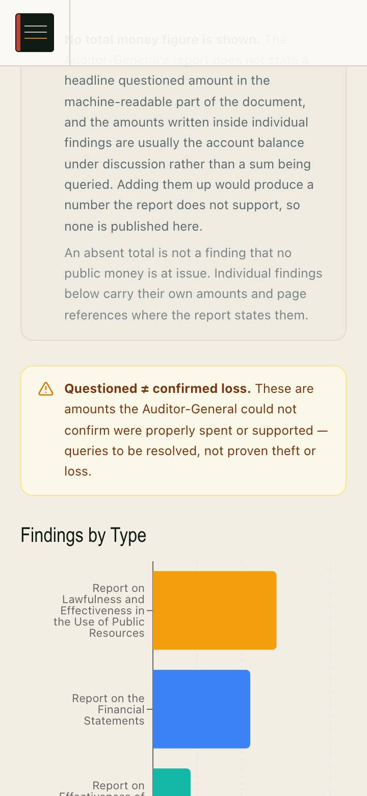</div><figcaption><b>Before</b> · report sections as “types”</figcaption></figure><figure><div class="shot ">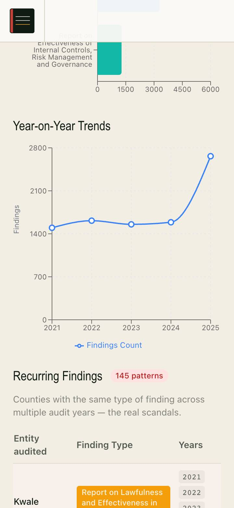</div><figcaption><b>Before</b> · smoothed line, recurring table</figcaption></figure><figure><div class="phone"><div class="m-body"><div class="m-lbl">Auditor-General findings in AuditGava</div><div class="m-big" style="font-size:34px;color:var(--m-ink)">8,918</div><div class="m-status" style="background:#FBF1DF;color:#5E3E0A;border-left:4px solid var(--m-cautionf)"><b>Questioned ≠ confirmed loss</b><span>Amounts the Auditor-General could not confirm were properly spent.</span></div><div class="m-tallbar" style="margin-top:12px"><span style="flex:379;background:var(--m-alarm);min-width:34px">379</span><span style="flex:6969;background:var(--m-cautionf);color:var(--m-ink)">6,969</span><span style="flex:1570;background:var(--m-mute-bar2);color:var(--m-ink)">1,570</span></div><div class="legend" style="color:var(--m-muted);font-size:12px;margin:4px 0 8px"><span style="color:var(--m-alarm)">■ Serious</span><span>■ Warning</span><span>■ Note</span></div><div class="m-sec">Most serious findings, by county</div><div class="m-blist" role="img" aria-label="Counties by serious findings"><div class="r"><span class="n">Nairobi</span><span class="v">62</span><span class="bar"><b style="width:100%;background:var(--m-alarm)"></b></span><span class="s">272 findings in all</span></div><div class="r"><span class="n">West Pokot</span><span class="v">36</span><span class="bar"><b style="width:58%;background:var(--m-alarm)"></b></span><span class="s">183 in all</span></div><div class="r"><span class="n">Baringo</span><span class="v">29</span><span class="bar"><b style="width:47%;background:var(--m-alarm)"></b></span><span class="s">196 in all</span></div><div class="r"><span class="n">Tana River</span><span class="v">28</span><span class="bar"><b style="width:45%;background:var(--m-alarm)"></b></span><span class="s">203 in all</span></div><div class="r"><span class="n">Narok</span><span class="v">24</span><span class="bar"><b style="width:39%;background:var(--m-alarm)"></b></span><span class="s">182 in all</span></div></div><div class="m-showall" style="margin-top:8px">Show all 47 counties</div><div class="m-sec">Findings by audit year</div><svg viewBox="0 0 300 104" width="100%" class="mchart" role="img" aria-label="Findings by audit year"><rect x="21.0" y="45.4" width="34.0" height="28.6" rx="3" fill="var(--m-mute-bar)"/><text x="38.0" y="40.4" class="lab" text-anchor="middle" font-weight="500">1,498</text><text x="38.0" y="87.0" class="ax" text-anchor="middle">2021</text><text x="38.0" y="99.0" class="ax" text-anchor="middle" font-size="9.5"></text><rect x="77.0" y="43.2" width="34.0" height="30.8" rx="3" fill="var(--m-mute-bar)"/><text x="94.0" y="38.2" class="lab" text-anchor="middle" font-weight="500">1,614</text><text x="94.0" y="87.0" class="ax" text-anchor="middle">2022</text><text x="94.0" y="99.0" class="ax" text-anchor="middle" font-size="9.5"></text><rect x="133.0" y="44.3" width="34.0" height="29.7" rx="3" fill="var(--m-mute-bar)"/><text x="150.0" y="39.3" class="lab" text-anchor="middle" font-weight="500">1,554</text><text x="150.0" y="87.0" class="ax" text-anchor="middle">2023</text><text x="150.0" y="99.0" class="ax" text-anchor="middle" font-size="9.5"></text><rect x="189.0" y="43.7" width="34.0" height="30.3" rx="3" fill="var(--m-mute-bar)"/><text x="206.0" y="38.7" class="lab" text-anchor="middle" font-weight="500">1,588</text><text x="206.0" y="87.0" class="ax" text-anchor="middle">2024</text><text x="206.0" y="99.0" class="ax" text-anchor="middle" font-size="9.5"></text><rect x="245.0" y="23.1" width="34.0" height="50.9" rx="3" fill="var(--m-mute-bar)"/><text x="262.0" y="18.1" class="lab" text-anchor="middle" font-weight="500">2,664</text><text x="262.0" y="87.0" class="ax" text-anchor="middle">2025</text><text x="262.0" y="99.0" class="ax" text-anchor="middle" font-size="9.5"></text><line x1="10" x2="290" y1="74" y2="74" stroke="var(--m-line)"/></svg></div></div><figcaption><i>After</i> · one idea per chart, real counts (check whether the 2025 jump is coverage before captioning it)</figcaption></figure></div>
</article>

<!-- ====================== LEARN ====================== -->
<article class="spec" id="b-learn">
  <div class="spec-h"><div class="tags"><span class="tag p1">P1</span><span class="tag">Effort M–L</span><span class="tag">/learn · Constitution · quiz · glossary · government</span></div>
  <h3>Learn: from a tidy library to a working companion for the rest of the site</h3></div>
  <div class="spec-b">
    <p>Learn is the tidiest part of the site, and the Constitution reader is genuinely strong: a plain-English box on each article, a “Why it matters” note that ties Article 229 to AuditGava’s own audit pages, clickable cross-references with a back trail, swipe and arrow-key paging, and chapter progress. What it lacks is <b>connection</b>. Learn and the data pages don’t link to each other, and none of it can be saved, shared or deep-linked.</p>
    <p class="receipt">No match in the learn components for <code>localStorage</code>, <code>navigator.share</code>, <code>clipboard</code>, <code>useSearchParams</code> or <code>location.hash</code>. Glossary has 12 terms. GovernmentExplorer has 0 links. Quiz has 36 questions. The glossary’s “related article” link goes to <code>/learn#constitution-book</code>, not the article (<code>InteractiveGlossary.tsx:243-246</code>).</p>

    <h6>Constitution reader</h6>
    <ul>
      <li><b>A link for every article:</b> <code>/learn/constitution/229</code> (or <code>?article=229</code>) opens the reader on that article. This makes the rest possible: sharing on WhatsApp, linking from data pages, and the browser’s back button.</li>
      <li><b>Share and save on each article:</b> a Share button (Web Share on phones, copy link on desktop) and a Save button, with saved articles stored in the browser under “Your saved articles”. Mobbin shows readers share through the text-selection menu, but a website can’t rely on that, so use explicit buttons.</li>
      <li><b>“Plain English · Official text” toggle</b> per article (Coursera’s segmented control). Plain English is the default for first-time readers. Remember the choice.</li>
      <li><b>Search inside the reader</b>, with results grouped by chapter (“Chapter 12 · Art. 214 Public debt”) and the term highlighted (Apple Books pattern). Today search only lives in the Learn hero.</li>
      <li><b>“Where this shows up on AuditGava”:</b> each relevant article links to live pages. For example: Art. 229 to Audit findings, Art. 214 to National debt, Art. 203 and 217–219 to County money, Art. 201 to Budget. Each data page links back the other way (“The law behind this: Article 214”).</li>
      <li><b>Glossary terms underlined in the article text</b>, opening the same InfoSheet used across the site.</li>
      <li><b>Kiswahili text.</b> The Constitution has an official Kiswahili version. Show it when the site language is Kiswahili, and label it with its source.</li>
      <li><b>Reading progress</b> worded the way Apple Books does it: “3 articles left in Chapter 12”. Keep the bar.</li>
    </ul>

    <h6>Quiz</h6>
    <ul>
      <li><b>Focus mode once a quiz starts.</b> Hide the dark page header, show a thin progress bar (“3 of 10”), and put the answer buttons in the bottom half of the screen where thumbs reach. Today the question starts about 450px down the first screen.</li>
      <li><b>Every explanation cites and links</b> its source: “Article 229(4) ↗” opens the reader, and “See it live: KES 78 of every 100 ↗” opens the debt page.</li>
      <li><b>Questions drawn from live data</b>, generated from the same API as the pages: “Roughly how many shillings of every 100 in revenue go to debt repayments this year?” → 78. These stay current, and they teach the site’s own figures.</li>
      <li><b>Daily 3:</b> three questions a day, no login, score kept in the browser, and a shareable result card (“I got 3/3 on Kenya’s public money · auditgava.com”). The card is a plain image with no personal data.</li>
      <li><b>Make it more respectful for adults:</b> remove confetti, emoji result grades and the streak counter. Mobbin shows these read as childish or manipulative on a civic product (Brainly, Babbel). Keep the per-answer “Why” panel, the review of mistakes and Play again.</li>
      <li><b>Grow the bank from 36 questions</b> to at least 10 per category, and let readers choose difficulty, since the badge already exists.</li>
      <li><b>Replace the emoji category icons</b> (📜 🏛 🗺 💰 ⚖ 🔍; the money bag even shows a dollar sign) and the rainbow top borders with the site’s line-icon set and one accent.</li>
    </ul>

    <h6>Glossary</h6>
    <ul>
      <li><b>Make it the single source for every InfoTip on the site.</b> Every ⓘ on a data page opens the glossary sheet for that term, and the glossary lists “Seen on: Debt · Budget”. Today it has 12 terms, while the data pages use dozens: absorption, A-i-A, pending bills, qualified opinion, debt service, equitable share, Eurobond, CFS and more.</li>
      <li><b>Index:</b> a row of letter buttons that wraps, with empty letters disabled (Uxcel). Avoid a tiny side rail, which is hard to tap. Show the short definition inline on each card (Revolut) and expand for detail and an example.</li>
      <li><b>Related terms</b> and the exact Constitution article, deep-linked.</li>
    </ul>

    <h6>How Kenya is governed</h6>
    <ul>
      <li>Fix truncated descriptions (“Implements laws &amp; runs t…”) by letting them wrap.</li>
      <li><b>Link every function to its money:</b> “County health services” opens a county’s health spending, and “Parliament” opens the Legislature’s budget line. The explorer has 0 links today, so it can’t send anyone onward.</li>
      <li>Replace the icon-in-tinted-square markers with the line icons used elsewhere.</li>
    </ul>

    <h6>Learn hub and “Why it matters”</h6>
    <ul>
      <li>Add <b>guided paths</b> of three to five steps that move between Learn and live pages: “Understand this year’s budget in 5 minutes”, “How your county gets its money”, “What the Auditor-General does”. Each step is a short card with one figure and a Next button.</li>
      <li>/learn/why-it-matters promises health, education and roads figures in its subtitle and doesn’t show them (<code>page.tsx:17</code>). Either show them (counts from the county sector data) or reword the subtitle.</li>
    </ul>
  </div>
  <div class="ba"><figure><div class="shot ">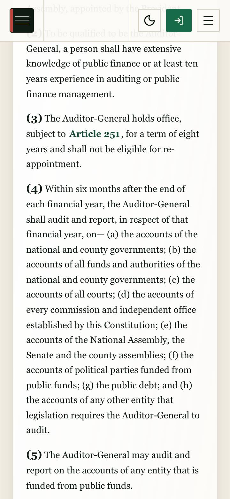</div><figcaption><b>Before</b> · reader: no share, save or links out</figcaption></figure>
    <figure><div class="phone">
      <div class="m-hdr"><span class="m-mark">AG</span><span class="m-word">AuditGava</span><span class="m-sp"></span><span class="m-btn">Menu</span></div>
      <div class="m-reader-top"><span>Ch. 12 · Public finance</span><span>3 left in chapter</span></div>
      <div class="m-body">
        <div style="display:flex;align-items:baseline;gap:8px"><span class="m-art">Art. 229</span><span style="font-family:var(--font-display);font-weight:700;font-size:22px">Auditor-General</span></div>
        <div class="m-seg" style="margin-top:10px"><span class="on">Plain English</span><span>Official text</span><span>Kiswahili</span></div>
        <p style="font-size:14.5px;margin:12px 0 10px;line-height:1.5">The Auditor-General checks how every shilling of public money was used, within six months of the year’s end. Parliament or the county assembly must act on each report within three months.</p>
        <div class="m-lbl" style="margin-bottom:6px">Where this shows up on AuditGava</div>
        <div class="m-uses"><span>Audit findings · 8,918 ›</span><span>Your county’s audit record ›</span></div>
        <div class="m-reader-actions"><span>↗ Share</span><span>☆ Save</span><span>Aa</span></div>
        <div class="m-reader-nav"><span>‹ Art. 228</span><span>Art. 230 ›</span></div>
      </div>
    </div><figcaption><i>After</i> · reader with links out</figcaption></figure><figure><div class="shot ">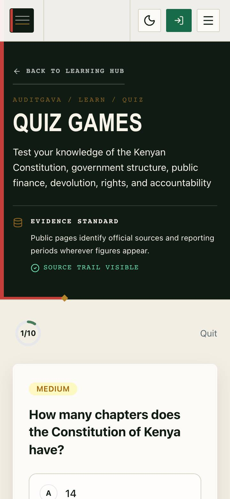</div><figcaption><b>Before</b> · question starts below the fold</figcaption></figure>
    <figure><div class="phone">
      <div class="m-quiz-top"><span>✕</span><div class="m-qbar"><b style="width:30%"></b></div><span>3 of 10</span></div>
      <div class="m-body" style="padding-top:22px">
        <div class="m-lbl">Public finance · from this year’s figures</div>
        <div style="font-family:var(--font-display);font-weight:700;font-size:24px;line-height:1.1;margin:8px 0 60px">Of every KES 100 the government collects this year, about how much goes to debt repayments?</div>
        <div class="m-ans">KES 25</div>
        <div class="m-ans">KES 50</div>
        <div class="m-ans right">KES 78 <span>✓</span></div>
        <div class="m-ans">KES 95</div>
        <div class="m-why"><b>Correct.</b> FY 2026/27 debt service is KES 2.32T against KES 2.99T in revenue. <span style="color:var(--m-sage);font-weight:600">See it on the debt page ›</span></div>
      </div>
    </div><figcaption><i>After</i> · focus mode, live-data question</figcaption></figure><figure><div class="shot "></div><figcaption><b>Before</b> · 12 terms, no links out</figcaption></figure>
    <figure><div class="phone"><div class="m-body">
      <div style="font-family:var(--font-display);font-weight:700;font-size:26px">Glossary</div>
      <div class="m-search" style="margin:8px 0">⌕ Search 60+ terms</div>
      <div class="m-az"><span>A</span><span>B</span><span>C</span><span>D</span><span>E</span><span class="off">F</span><span>G</span><span class="off">H</span><span>I</span><span class="off">J</span><span>K</span><span>L</span><span>M</span><span>N</span><span>O</span><span>P</span><span class="off">Q</span><span>R</span><span>S</span><span>T</span><span>U</span><span>V</span><span>W</span><span class="off">X</span><span class="off">Y</span><span class="off">Z</span></div>
      <div class="m-gl"><b>Pending bills</b><p>Money a government owes suppliers and contractors for work already done, but hasn’t paid.</p><span>Seen on: Debt · County pages</span></div>
      <div class="m-gl"><b>Absorption rate</b><p>The share of its budget a county actually spent in the year.</p><span>Seen on: Follow the money · Counties</span></div>
      <div class="m-gl"><b>Qualified opinion</b><p>The Auditor-General’s verdict that accounts are mostly right, except for specific problems listed.</p><span>Art. 229 · Seen on: Audit findings</span></div>
    </div></div><figcaption><i>After</i> · glossary as the site’s dictionary</figcaption></figure><figure><div class="shot "></div><figcaption><b>Before</b> · truncated text, no links</figcaption></figure><figure><div class="phone"><div class="m-body"><div class="m-sec" style="margin-top:0">County governments do</div><div class="m-gov"><span>Health services and ambulances</span><i>Your county’s health spending ›</i></div><div class="m-gov"><span>Pre-primary education and childcare</span><i>Education spending ›</i></div><div class="m-gov"><span>County roads and public transport</span><i>Roads spending ›</i></div><div class="m-sec">The Legislature</div><div class="m-gov"><span>Makes laws and approves the budget</span><i>Parliament’s budget line ›</i> <i>Art. 95 ›</i></div></div></div><figcaption><i>After</i> · every function links to its money</figcaption></figure>
  </div>
</article>


</main></div></section>

<section class="view" id="charts" aria-labelledby="charts-h">
<div class="wrap">
<nav class="rail" aria-label="Charts contents">
  <div class="grp">Charts</div>
  <a href="#c-rules">Ten rules for every chart</a>
  <a href="#c-phone">How a chart behaves on a phone</a>
  <a href="#c-desk">…and on desktop</a>
  <a href="#c-palette">Chart colours (validated)</a>
  <a href="#c-gallery">The new charts, with real data</a>
  <a href="#c-audit">Audit of all 39 charts</a>
</nav>
<main>
<header class="view-head">
  <div class="eyebrow">Part 3 · round two</div>
  <h2 class="vh" id="charts-h">Charts on small screens</h2>
  <p class="lede">You’re right that charts are the right medium for this audience. The trouble today is in how they are built. The site renders 39 charts. Two use two y-axes, at least eight work only by hover, several repeat the chart above them, and colours come from more than a hundred raw hex values. This part sets the rules, then applies them chart by chart using the site’s own figures.</p>
</header>

<article class="spec" id="c-rules">
  <div class="spec-h"><h3>Ten rules for every chart on AuditGava</h3></div><p class="seeba"><b>Before / after:</b> Rules, not a single screen. See them applied before and after in <a href="#c-gallery">the nine paired charts</a> below, and in <a href="#e13">E13</a>.</p>
  <div class="spec-b">
    <ol class="rules">
      <li><b>Write the takeaway above the chart</b>, as a sentence with the number in it: “Counties spent 77% of what they were given.” The chart is the evidence for that sentence.</li>
      <li><b>One idea per chart.</b> If a chart needs two scales, it is two charts.</li>
      <li><b>One y-axis, always.</b> The home debt chart and “Cost of debt over time” both put KES and % on one plot. The alignment of the two scales is arbitrary, so the picture invents a relationship. Split them into two small charts that share a time axis.</li>
      <li><b>Choose the form by the job.</b>
        <ul>
          <li>Ranking or breakdown: horizontal bars, sorted.</li>
          <li>A whole split into 6 or fewer parts, read at a glance: one tall segmented bar.</li>
          <li>A trend: a line, or bars if there are 6 years or fewer.</li>
          <li>One ratio against a limit: a meter with the limit marked.</li>
          <li>A single number: a StatCard, not a chart.</li>
        </ul>
        No donuts for comparing parts. No rings or gauges for one percentage.</li>
      <li><b>Show the reference line whenever one exists</b>, labelled with its value and source: the 70% spending target, the 30% legal development minimum, “half of revenue”, the national average.</li>
      <li><b>Direct-label selectively:</b> the latest value, the extreme, and the one series that matters. A legend is present whenever there are two or more series, and never as the only way to tell series apart.</li>
      <li><b>Every value is reachable without hover.</b> Tap or keyboard shows the same readout as hover, and there is always a table or list view. Tooltips add to the chart. They never gate a value.</li>
      <li><b>Colour by job:</b>
        <ul>
          <li>Identity (domestic vs external): the chart palette.</li>
          <li>Magnitude: one hue, light to dark.</li>
          <li>Good or bad: the signal colours from Part 4, always with a word.</li>
        </ul>
        Never colour by rank, and never use red for a neutral category. Today red marks the Health sector, Customs and supplier arrears.</li>
      <li><b>Round for reading:</b> KES 44.2B, not 44,208,110,000. Whole percentages unless precision changes the meaning. Exact values go in the source sheet.</li>
      <li><b>Say what is missing</b> in words, with the coverage stated (“46 of 47 counties”). Never draw an empty bar or a zero for “not published”.</li>
    </ol>
  </div>
</article>

<article class="spec" id="c-phone">
  <div class="spec-h"><h3>How a chart behaves on a 360px phone</h3></div><p class="seeba"><b>Before / after:</b> Phone behaviour. The paired charts in <a href="#c-gallery">the gallery</a> and the county map in <a href="#e4">E4</a> show it before and after.</p>
  <div class="spec-b">
    <ul>
      <li><b>Full width, with no card padding beyond the 16px page gutter.</b> A 300px plot needs every pixel.</li>
      <li><b>Height fits the content.</b> Bar lists grow with their rows, and line charts are 160–200px plus the axis band. Never use a fixed height that clips axis labels (today: the 320px audits charts, 340px donuts, 260px cost chart).</li>
      <li><b>At most 4 y-axis ticks and 3–4 x-axis labels</b>, abbreviated (“5T”, “FY24/25”). Long category names go on the left of horizontal bars and wrap to two lines. Never truncate them with “…”.</li>
      <li><b>Scrub instead of hover for line charts.</b> Touch and drag moves a vertical rule. The readout sits <i>above</i> the plot, where the finger doesn’t cover it (TradingView pattern), and the latest value stays printed when nothing is touched.</li>
      <li><b>Tap a bar or dot</b> to highlight it and fill the readout. Tapping again or elsewhere clears it. Tapping a county on the map shows its summary sheet. It must not navigate straight away, as the /counties map does today (<code>CountiesPageClient.tsx:675-680</code>).</li>
      <li><b>Legends sit above the plot</b>, as chips that also filter.</li>
      <li><b>Small multiples stack vertically</b> with a shared x-axis label at the bottom only.</li>
      <li><b>No motion that isn’t a state change.</b> Remove count-up numbers, bars growing on scroll, and the map’s 8-second auto-rotate. Respect reduced-motion.</li>
    </ul>
  </div>
</article>

<article class="spec" id="c-desk">
  <div class="spec-h"><h3>…and on desktop</h3></div><p class="seeba"><b>Before / after:</b> Desktop behaviour. The desktop before/after pairs are in <a href="#b-debt">Debt</a>, <a href="#b-counties">County Explorer</a> and <a href="#b-county">County page</a>.</p>
  <div class="spec-b">
    <ul>
      <li>Related small multiples sit <b>side by side</b>: repayments and share of revenue, sources and uses.</li>
      <li><b>Hover shows a crosshair and tooltip</b>, keyboard focus shows the same, and the readout is mirrored in an <code>aria-live</code> region.</li>
      <li>A chart can sit beside its table (chart 7 columns, table 5 columns) on pages built around one big chart, such as /audits and the county Score tab.</li>
      <li>Keep the phone’s takeaway sentence and reference lines. Desktop gets more room, not a different story.</li>
    </ul>
  </div>
</article>

<article class="spec" id="c-palette">
  <div class="spec-h"><h3>Chart colours: four identity colours, validated</h3></div><p class="seeba"><b>Before / after:</b> Colour tokens. The domestic/external bars in <a href="#e13">E13</a> and <a href="#e6">E6</a> show the change from red/green to teal/gold before and after.</p>
  <div class="spec-b">
    <p>The palette below passed the dataviz skill’s validator in both themes. It checks lightness band, chroma floor, colour-blind separation between neighbours (worst ΔE 17.3 light and 18.3 dark, against a target of 8 or more), normal-vision separation, and contrast against the surface. It deliberately contains <b>no red and no green</b>, because those belong to the signal colours. A domestic-vs-external chart then never reads as good-vs-bad.</p>
    <div class="tok">
      <div><i style="background:#00809A"></i><span>1 teal #00809A · dark #0FA0BC</span></div>
      <div><i style="background:#B8872D"></i><span>2 gold #B8872D · dark #B08530</span></div>
      <div><i style="background:#3F6FBF"></i><span>3 blue #3F6FBF · dark #6F93DB</span></div>
      <div><i style="background:#A0602E"></i><span>4 clay #A0602E · dark #BC7A40</span></div>
      <div><i style="background:#C9C1B0"></i><span>Context grey #C9C1B0</span></div>
    </div>
    <p class="receipt">node validate_palette.js "#00809A,#B8872D,#3F6FBF,#A0602E" --mode light --surface "#FBFAF6" → ALL CHECKS PASS · "#0FA0BC,#B08530,#6F93DB,#BC7A40" --mode dark --surface "#16231B" → ALL CHECKS PASS</p>
    <p>Slots are used in fixed order and follow the entity: domestic is always teal and external always gold, on every page. A fifth series folds into “Other” in context grey. Emphasis charts (one county against the rest) use a signal colour or ink for the one, and context grey for the rest.</p>
  </div>
</article>

<article class="spec" id="c-gallery">
  <div class="spec-h"><h3>The new charts, drawn to scale from the site’s own figures</h3></div>
  <div class="spec-b"><p>Every chart below uses real values from the live API or the live pages (CBK debt timeline, fiscal summary FY2022/23–2026/27, the CBK bond register, COB county BIRR, and Baringo’s score breakdown), except where a caption says “sample”. These are sketches of form and layout. The production charts keep their source chips and table views.</p></div>
  <div class="gallery">
    <figure class="gcard"><div class="gnum">C1</div><div class="gt">Repayments, then their share of revenue</div><div class="gs">Replaces the dual-axis “Cost of debt over time”</div><div class="glab b">Before · dual-axis chart</div><div class="shot gshot"></div><div class="glab a">After</div>
      <div class="phone gphone"><div class="m-body">
        <p class="m-cmp"><b>Debt repayments doubled in four years</b>, to KES 2.32T.</p><svg viewBox="0 0 300 128" width="100%" role="img" aria-label="Debt repayments per year, 1.16 trillion in FY2022/23 rising to 2.32 trillion in FY2026/27" class="mchart"><line x1="34" x2="272" y1="112.0" y2="112.0" stroke="var(--m-line)"/><text x="28.0" y="116.0" class="ax" text-anchor="end">0T</text><line x1="34" x2="272" y1="76.0" y2="76.0" stroke="var(--m-line)"/><text x="28.0" y="80.0" class="ax" text-anchor="end">1T</text><line x1="34" x2="272" y1="40.0" y2="40.0" stroke="var(--m-line)"/><text x="28.0" y="44.0" class="ax" text-anchor="end">2T</text><path d="M42.8,112 v-37.8 q0,-4 4,-4 h22 q4,0 4,4 v37.8 z" fill="var(--m-mute-bar)"/><text x="57.8" y="64.2" class="lab" text-anchor="middle" font-weight="500">1.16T</text><text x="57.8" y="127.0" class="ax" text-anchor="middle">FY22/23</text><path d="M90.4,112 v-55.0 q0,-4 4,-4 h22 q4,0 4,4 v55.0 z" fill="var(--m-mute-bar)"/><text x="105.4" y="47.0" class="lab" text-anchor="middle" font-weight="500">1.64T</text><text x="105.4" y="127.0" class="ax" text-anchor="middle">FY23/24</text><path d="M138.0,112 v-62.6 q0,-4 4,-4 h22 q4,0 4,4 v62.6 z" fill="var(--m-mute-bar)"/><text x="153.0" y="39.4" class="lab" text-anchor="middle" font-weight="500">1.85T</text><text x="153.0" y="127.0" class="ax" text-anchor="middle">FY24/25</text><path d="M185.6,112 v-64.4 q0,-4 4,-4 h22 q4,0 4,4 v64.4 z" fill="var(--m-mute-bar)"/><text x="200.6" y="37.6" class="lab" text-anchor="middle" font-weight="500">1.90T</text><text x="200.6" y="127.0" class="ax" text-anchor="middle">FY25/26</text><path d="M233.2,112 v-79.5 q0,-4 4,-4 h22 q4,0 4,4 v79.5 z" fill="var(--m-alarm)"/><text x="248.2" y="22.5" class="lab" text-anchor="middle" font-weight="700">2.32T</text><text x="248.2" y="127.0" class="ax" text-anchor="middle">FY26/27</text></svg>
        <p class="m-cmp" style="margin-top:6px">They now take <b>KES 78 of every 100</b> collected.</p><svg viewBox="0 0 300 112" width="100%" role="img" aria-label="Shillings of every 100 in revenue spent on debt: 57 in FY2022/23, 78 in FY2026/27" class="mchart"><line x1="34" x2="272" y1="96.0" y2="96.0" stroke="var(--m-line)"/><text x="28.0" y="100.0" class="ax" text-anchor="end">0</text><line x1="34" x2="272" y1="18.0" y2="18.0" stroke="var(--m-line)"/><text x="28.0" y="22.0" class="ax" text-anchor="end">100</text><line x1="34" x2="272" y1="57.0" y2="57.0" stroke="var(--m-alarm)" stroke-width="1.5"/><text x="272.0" y="70.0" class="ax" text-anchor="end" fill="var(--m-alarm)">half of revenue</text><polyline points="57.8,51.6 105.4,40.1 153.0,36.3 200.6,42.8 248.2,35.5" fill="none" stroke="var(--m-ink)" stroke-width="2"/><circle cx="57.8" cy="51.6" r="3.5" fill="var(--m-ink)" stroke="var(--m-card)" stroke-width="2"/><text x="57.8" y="42.6" class="lab" text-anchor="middle" font-weight="500">57</text><text x="57.8" y="111.0" class="ax" text-anchor="middle">FY22/23</text><circle cx="105.4" cy="40.1" r="3.5" fill="var(--m-ink)" stroke="var(--m-card)" stroke-width="2"/><text x="105.4" y="31.1" class="lab" text-anchor="middle" font-weight="500">72</text><text x="105.4" y="111.0" class="ax" text-anchor="middle">FY23/24</text><circle cx="153.0" cy="36.3" r="3.5" fill="var(--m-ink)" stroke="var(--m-card)" stroke-width="2"/><text x="153.0" y="27.3" class="lab" text-anchor="middle" font-weight="500">77</text><text x="153.0" y="111.0" class="ax" text-anchor="middle">FY24/25</text><circle cx="200.6" cy="42.8" r="3.5" fill="var(--m-ink)" stroke="var(--m-card)" stroke-width="2"/><text x="200.6" y="33.8" class="lab" text-anchor="middle" font-weight="500">68</text><text x="200.6" y="111.0" class="ax" text-anchor="middle">FY25/26</text><circle cx="248.2" cy="35.5" r="5" fill="var(--m-alarm)" stroke="var(--m-card)" stroke-width="2"/><text x="248.2" y="26.5" class="lab" text-anchor="middle" font-weight="700">78</text><text x="248.2" y="111.0" class="ax" text-anchor="middle">FY26/27</text></svg>
      </div></div></figure>
    <figure class="gcard"><div class="gnum">C2</div><div class="gt">Debt, then debt as a share of the economy</div><div class="gs">Replaces the dual-axis home chart</div><div class="glab b">Before · dual-axis home chart</div><div class="shot gshot"></div><div class="glab a">After</div>
      <div class="phone gphone"><div class="m-body">
        <p class="m-cmp"><b>Debt is six times what it was in 2013.</b></p><svg viewBox="0 0 300 182" width="100%" role="img" aria-label="Kenya public debt 2013 to 2026, rising from 2.1 trillion to 13.1 trillion shillings" class="mchart"><line x1="34" x2="262" y1="160.0" y2="160.0" stroke="var(--m-line)" stroke-width="1"/><text x="28.0" y="164.0" class="ax" text-anchor="end">0T</text><line x1="34" x2="262" y1="113.6" y2="113.6" stroke="var(--m-line)" stroke-width="1"/><text x="28.0" y="117.6" class="ax" text-anchor="end">5T</text><line x1="34" x2="262" y1="67.1" y2="67.1" stroke="var(--m-line)" stroke-width="1"/><text x="28.0" y="71.1" class="ax" text-anchor="end">10T</text><polygon points="34,160 34.0,140.4 51.5,137.0 69.1,130.7 86.6,124.4 104.2,117.6 121.7,111.1 139.2,103.8 156.8,92.4 174.3,83.8 191.8,75.0 209.4,56.6 226.9,58.5 244.5,45.8 262.0,38.4 262,160" fill="var(--m-alarm-tint)"/><polyline points="34.0,140.4 51.5,137.0 69.1,130.7 86.6,124.4 104.2,117.6 121.7,111.1 139.2,103.8 156.8,92.4 174.3,83.8 191.8,75.0 209.4,56.6 226.9,58.5 244.5,45.8 262.0,38.4" fill="none" stroke="var(--m-ink)" stroke-width="2" stroke-linejoin="round"/><text x="34.0" y="176.0" class="ax" text-anchor="middle">2013</text><text x="104.2" y="176.0" class="ax" text-anchor="middle">2017</text><text x="174.3" y="176.0" class="ax" text-anchor="middle">2021</text><text x="262.0" y="176.0" class="ax" text-anchor="middle">2026</text><line x1="156.8" x2="156.8" y1="24" y2="160" stroke="var(--m-ink)" stroke-width="1"/><circle cx="156.8" cy="92.4" r="4.5" fill="var(--m-card)" stroke="var(--m-ink)" stroke-width="2"/><text x="152.8" y="18.0" class="lab" text-anchor="end" font-weight="600">2020 · KES 7.28T</text><circle cx="262.0" cy="38.4" r="5" fill="var(--m-alarm)" stroke="var(--m-card)" stroke-width="2"/><text x="264.0" y="28.4" class="lab" text-anchor="end" font-weight="700">13.1T</text><text x="36.0" y="132.4" class="lab" font-weight="600">2.1T</text></svg>
        <p class="m-cmp" style="margin-top:6px">As a share of GDP it rose from 40% to 70%.</p><svg viewBox="0 0 300 112" width="100%" role="img" aria-label="Debt as a share of GDP, 40 percent in 2013 to 70 percent in 2025" class="mchart"><line x1="34" x2="262" y1="92.0" y2="92.0" stroke="var(--m-line)"/><text x="28.0" y="96.0" class="ax" text-anchor="end">0%</text><line x1="34" x2="262" y1="53.0" y2="53.0" stroke="var(--m-line)"/><text x="28.0" y="57.0" class="ax" text-anchor="end">40%</text><line x1="34" x2="262" y1="14.0" y2="14.0" stroke="var(--m-line)"/><text x="28.0" y="18.0" class="ax" text-anchor="end">80%</text><polyline points="34.0,53.2 53.0,51.7 72.0,47.3 91.0,42.9 110.0,39.4 129.0,37.0 148.0,34.4 167.0,25.7 186.0,25.5 205.0,25.9 224.0,19.8 243.0,26.4 262.0,23.8" fill="none" stroke="var(--m-ink)" stroke-width="2" stroke-linejoin="round"/><circle cx="262.0" cy="23.8" r="4.5" fill="var(--m-ink)" stroke="var(--m-card)" stroke-width="2"/><text x="264.0" y="14.8" class="lab" text-anchor="end" font-weight="700">70%</text><text x="36.0" y="45.2" class="lab" font-weight="600">40%</text><text x="34.0" y="108.0" class="ax" text-anchor="middle">2013</text><text x="148.0" y="108.0" class="ax" text-anchor="middle">2019</text><text x="262.0" y="108.0" class="ax" text-anchor="middle">2025</text></svg>
      </div></div></figure>
    <figure class="gcard"><div class="gnum">C3</div><div class="gt">Collected vs spent, per KES 100</div><div class="gs">Replaces the 160.3 stacked bar with a truncated legend</div><div class="glab b">Before · 160.3 bar, cut legend</div><div class="shot gshot"></div><div class="glab a">After</div>
      <div class="phone gphone"><div class="m-body"><p class="m-cmp">For every KES 100 collected, <b>KES 160 is spent</b>.</p><svg viewBox="0 0 300 198" width="100%" role="img" aria-label="For every 100 shillings collected, the government spends 160; the 60 gap is filled mostly by new borrowing" class="mchart"><text x="10.0" y="14.0" class="lab" font-weight="600">Collected in taxes and fees</text><rect x="10.0" y="20" width="149.5" height="22" rx="3" fill="var(--m-ink)"/><text x="15.0" y="35.0" class="inlab" fill="#fff">100</text><text x="10.0" y="62.0" class="lab" font-weight="600">Spent</text><rect x="10.0" y="68" width="61.6" height="22" rx="3" fill="var(--m-alarm)"/><text x="15.0" y="83.0" class="inlab" fill="#fff">42</text><rect x="73.6" y="68" width="113.9" height="22" rx="3" fill="var(--m-mute-bar2)"/><text x="78.6" y="83.0" class="inlab" fill="var(--m-ink)">76</text><rect x="189.5" y="68" width="36.0" height="22" rx="3" fill="var(--m-mute-bar2)"/><text x="194.5" y="83.0" class="inlab" fill="var(--m-ink)">25</text><rect x="227.6" y="68" width="23.2" height="22" rx="3" fill="var(--m-mute-bar2)"/><line x1="161.5" x2="161.5" y1="16" y2="142" stroke="var(--m-ink)" stroke-width="1.5"/><text x="10.0" y="110.0" class="lab" font-weight="600">Gap of 60, filled by</text><rect x="161.5" y="116" width="54.4" height="22" rx="3" fill="var(--m-alarm)"/><text x="166.5" y="131.0" class="inlab" fill="#fff">37</text><rect x="217.9" y="116" width="30.7" height="22" rx="3" fill="var(--m-mute-bar2)"/><text x="222.9" y="131.0" class="inlab" fill="var(--m-ink)">22</text><rect x="250.6" y="116" width="2.3" height="22" rx="3" fill="var(--m-mute-bar2)"/><rect x="10" y="152" width="9" height="9" rx="2" fill="var(--m-alarm)"/><text x="24.0" y="160.0" class="ax" fill="var(--m-ink)">Interest 42 · new debt 37</text><text x="10.0" y="176.0" class="ax">Spent: salaries &amp; running 76 · development 25 · counties 17</text><text x="10.0" y="190.0" class="ax">Gap: new debt 37 · ministry fees (A-i-A) 22 · grants 1.5</text></svg></div></div></figure>
    <figure class="gcard"><div class="gnum">C4</div><div class="gt">When bonds fall due</div><div class="gs">Keeps the ladder; adds horizon buckets and emphasis</div><div class="glab b">Before · ladder without summary</div><div class="shot gshot"></div><div class="glab a">After</div>
      <div class="phone gphone"><div class="m-body"><div class="m-buckets"><span><b>KES 1.17T</b><i>due 2027–2031</i></span><span class="al"><b>KES 415B</b><i>in 2032</i></span></div><svg viewBox="0 0 300 299" width="100%" role="img" aria-label="Treasury bonds falling due by year, 2027 to 2047; 415 billion in 2032 is the largest year" class="mchart"><text x="38.0" y="18.0" class="ax" text-anchor="end" font-weight="600">2027</text><rect x="44" y="10" width="117.6" height="10" rx="2" fill="var(--m-cautionf)"/><text x="166.6" y="19.0" class="ax" fill="var(--m-ink)">260B</text><text x="38.0" y="33.0" class="ax" text-anchor="end" font-weight="600">2028</text><rect x="44" y="25" width="124.4" height="10" rx="2" fill="var(--m-cautionf)"/><text x="173.4" y="34.0" class="ax" fill="var(--m-ink)">275B</text><text x="38.0" y="48.0" class="ax" text-anchor="end" font-weight="600">2029</text><rect x="44" y="40" width="129.4" height="10" rx="2" fill="var(--m-cautionf)"/><text x="178.4" y="49.0" class="ax" fill="var(--m-ink)">286B</text><text x="38.0" y="63.0" class="ax" text-anchor="end" font-weight="600">2030</text><rect x="44" y="55" width="84.6" height="10" rx="2" fill="var(--m-cautionf)"/><text x="133.6" y="64.0" class="ax" fill="var(--m-ink)">187B</text><text x="38.0" y="78.0" class="ax" text-anchor="end" font-weight="600">2031</text><rect x="44" y="70" width="71.0" height="10" rx="2" fill="var(--m-cautionf)"/><text x="120.0" y="79.0" class="ax" fill="var(--m-ink)">157B</text><text x="38.0" y="93.0" class="ax" text-anchor="end">2032</text><rect x="44" y="85" width="187.7" height="10" rx="2" fill="var(--m-alarm)"/><text x="236.7" y="94.0" class="ax" fill="var(--m-ink)">415B</text><text x="38.0" y="108.0" class="ax" text-anchor="end">2033</text><rect x="44" y="100" width="100.0" height="10" rx="2" fill="var(--m-mute-bar)"/><text x="149.0" y="109.0" class="ax" fill="var(--m-ink)">221B</text><text x="38.0" y="123.0" class="ax" text-anchor="end">2034</text><rect x="44" y="115" width="135.3" height="10" rx="2" fill="var(--m-mute-bar)"/><text x="184.3" y="124.0" class="ax" fill="var(--m-ink)">299B</text><text x="38.0" y="138.0" class="ax" text-anchor="end">2035</text><rect x="44" y="130" width="103.1" height="10" rx="2" fill="var(--m-mute-bar)"/><text x="152.1" y="139.0" class="ax" fill="var(--m-ink)">228B</text><text x="38.0" y="153.0" class="ax" text-anchor="end">2036</text><rect x="44" y="145" width="5.9" height="10" rx="2" fill="var(--m-mute-bar)"/><text x="54.9" y="154.0" class="ax" fill="var(--m-ink)">13B</text><text x="38.0" y="168.0" class="ax" text-anchor="end">2037</text><rect x="44" y="160" width="60.2" height="10" rx="2" fill="var(--m-mute-bar)"/><text x="109.2" y="169.0" class="ax" fill="var(--m-ink)">133B</text><text x="38.0" y="183.0" class="ax" text-anchor="end">2038</text><rect x="44" y="175" width="63.3" height="10" rx="2" fill="var(--m-mute-bar)"/><text x="112.3" y="184.0" class="ax" fill="var(--m-ink)">140B</text><text x="38.0" y="198.0" class="ax" text-anchor="end">2039</text><rect x="44" y="190" width="88.2" height="10" rx="2" fill="var(--m-mute-bar)"/><text x="137.2" y="199.0" class="ax" fill="var(--m-ink)">195B</text><text x="38.0" y="213.0" class="ax" text-anchor="end">2041</text><rect x="44" y="205" width="91.8" height="10" rx="2" fill="var(--m-mute-bar)"/><text x="140.8" y="214.0" class="ax" fill="var(--m-ink)">203B</text><text x="38.0" y="228.0" class="ax" text-anchor="end">2042</text><rect x="44" y="220" width="48.4" height="10" rx="2" fill="var(--m-mute-bar)"/><text x="97.4" y="229.0" class="ax" fill="var(--m-ink)">107B</text><text x="38.0" y="243.0" class="ax" text-anchor="end">2043</text><rect x="44" y="235" width="75.1" height="10" rx="2" fill="var(--m-mute-bar)"/><text x="124.1" y="244.0" class="ax" fill="var(--m-ink)">166B</text><text x="38.0" y="258.0" class="ax" text-anchor="end">2044</text><rect x="44" y="250" width="7.7" height="10" rx="2" fill="var(--m-mute-bar)"/><text x="56.7" y="259.0" class="ax" fill="var(--m-ink)">17B</text><text x="38.0" y="273.0" class="ax" text-anchor="end">2046</text><rect x="44" y="265" width="38.0" height="10" rx="2" fill="var(--m-mute-bar)"/><text x="87.0" y="274.0" class="ax" fill="var(--m-ink)">84B</text><text x="38.0" y="288.0" class="ax" text-anchor="end">2047</text><rect x="44" y="280" width="17.6" height="10" rx="2" fill="var(--m-mute-bar)"/><text x="66.6" y="289.0" class="ax" fill="var(--m-ink)">39B</text><line x1="42" x2="274" y1="81.5" y2="81.5" stroke="var(--m-ink)" stroke-dasharray="0" stroke-width="1"/></svg></div></div></figure>
    <figure class="gcard"><div class="gnum">C5</div><div class="gt">How long bills have gone unpaid</div><div class="gs">Replaces a table of 11-digit amounts</div><div class="glab b">Before · 11-digit table</div><div class="shot gshot"></div><div class="glab a">After</div>
      <div class="phone gphone"><div class="m-body"><p class="m-cmp"><b>KES 70.2B has gone unpaid for over three years</b>, the largest group.</p><svg viewBox="0 0 300 128" width="100%" role="img" aria-label="County unpaid bills by age: 70.2 billion has been unpaid for more than three years" class="mchart"><text x="84.0" y="21.0" class="lab" text-anchor="end" font-weight="500">Under 1 year</text><rect x="92" y="10" width="98.2" height="16" rx="3" fill="var(--m-mute-bar)"/><text x="195.2" y="22.0" class="lab" fill="var(--m-ink)" font-weight="500">44.2B</text><text x="84.0" y="51.0" class="lab" text-anchor="end" font-weight="500">1–2 years</text><rect x="92" y="40" width="64.0" height="16" rx="3" fill="var(--m-cautionf)"/><text x="161.0" y="52.0" class="lab" fill="var(--m-ink)" font-weight="500">28.8B</text><text x="84.0" y="81.0" class="lab" text-anchor="end" font-weight="500">2–3 years</text><rect x="92" y="70" width="49.3" height="16" rx="3" fill="var(--m-cautionf)"/><text x="146.3" y="82.0" class="lab" fill="var(--m-ink)" font-weight="500">22.2B</text><text x="84.0" y="111.0" class="lab" text-anchor="end" font-weight="700">Over 3 years</text><rect x="92" y="100" width="156.0" height="16" rx="3" fill="var(--m-alarm)"/><text x="253.0" y="112.0" class="lab" fill="var(--m-ink)" font-weight="700">70.2B</text></svg><div style="font-size:12px;color:var(--m-muted)">County executives, 46 of 47 counties, at 30 June 2026 · COB</div></div></div></figure>
    <figure class="gcard"><div class="gnum">C6</div><div class="gt">All 47 counties on one screen</div><div class="gs">New, for Follow the money and County Explorer</div><div class="glab b">Before · 47 cards, 14 screens</div><div class="shot gshot"></div><div class="glab a">After</div>
      <div class="phone gphone"><div class="m-body"><p class="m-cmp"><b>10 of 47 counties</b> spent less than the 70% target.</p><svg viewBox="0 0 300 144" width="100%" role="img" aria-label="Share of budget spent by each of 47 counties in FY2025/26; 10 counties are below the 70 percent target" class="mchart"><rect x="18" y="18" width="105.6" height="90" fill="var(--m-caution-tint)"/><line x1="123.6" x2="123.6" y1="12" y2="108" stroke="var(--m-caution)" stroke-width="1.5"/><text x="119.6" y="12.0" class="ax" text-anchor="end" fill="var(--m-caution)">70% target</text><line x1="158.4" x2="158.4" y1="18" y2="108" stroke="var(--m-ink)" stroke-width="1"/><text x="162.4" y="12.0" class="ax">national 77%</text><circle cx="50.2" cy="80" r="4" fill="var(--m-caution)" stroke="var(--m-card)" stroke-width="1.5"><title>Siaya 56.1%</title></circle><circle cx="67.6" cy="80" r="4" fill="var(--m-caution)" stroke="var(--m-card)" stroke-width="1.5"><title>Kisumu 59.4%</title></circle><circle cx="88.2" cy="80" r="4" fill="var(--m-caution)" stroke="var(--m-card)" stroke-width="1.5"><title>Kisii 63.3%</title></circle><circle cx="90.3" cy="80" r="4" fill="var(--m-caution)" stroke="var(--m-card)" stroke-width="1.5"><title>Uasin Gishu 63.7%</title></circle><circle cx="98.3" cy="80" r="4" fill="var(--m-caution)" stroke="var(--m-card)" stroke-width="1.5"><title>Busia 65.2%</title></circle><circle cx="104.1" cy="69" r="4" fill="var(--m-caution)" stroke="var(--m-card)" stroke-width="1.5"><title>Elgeyo Marakwet 66.3%</title></circle><circle cx="114.1" cy="80" r="4" fill="var(--m-caution)" stroke="var(--m-card)" stroke-width="1.5"><title>Kiambu 68.2%</title></circle><circle cx="116.7" cy="80" r="4" fill="var(--m-caution)" stroke="var(--m-card)" stroke-width="1.5"><title>Kwale 68.7%</title></circle><circle cx="118.8" cy="69" r="4" fill="var(--m-caution)" stroke="var(--m-card)" stroke-width="1.5"><title>Laikipia 69.1%</title></circle><circle cx="118.8" cy="58" r="4" fill="var(--m-caution)" stroke="var(--m-card)" stroke-width="1.5"><title>Narok 69.1%</title></circle><circle cx="138.9" cy="80" r="4" fill="var(--m-ink)" stroke="var(--m-card)" stroke-width="1.5"><title>Mombasa 72.9%</title></circle><circle cx="139.4" cy="69" r="4" fill="var(--m-ink)" stroke="var(--m-card)" stroke-width="1.5"><title>Kajiado 73.0%</title></circle><circle cx="143.7" cy="80" r="4" fill="var(--m-ink)" stroke="var(--m-card)" stroke-width="1.5"><title>Embu 73.8%</title></circle><circle cx="145.8" cy="69" r="4" fill="var(--m-ink)" stroke="var(--m-card)" stroke-width="1.5"><title>Nairobi 74.2%</title></circle><circle cx="146.3" cy="58" r="4" fill="var(--m-ink)" stroke="var(--m-card)" stroke-width="1.5"><title>Isiolo 74.3%</title></circle><circle cx="150.5" cy="80" r="4" fill="var(--m-ink)" stroke="var(--m-card)" stroke-width="1.5"><title>Machakos 75.1%</title></circle><circle cx="151.1" cy="69" r="4" fill="var(--m-ink)" stroke="var(--m-card)" stroke-width="1.5"><title>Nakuru 75.2%</title></circle><circle cx="151.6" cy="58" r="4" fill="var(--m-ink)" stroke="var(--m-card)" stroke-width="1.5"><title>Homa Bay 75.3%</title></circle><circle cx="155.8" cy="47" r="5" fill="var(--m-alarm)" stroke="var(--m-card)" stroke-width="1.5"><title>Baringo 76.1%</title></circle><circle cx="157.4" cy="80" r="4" fill="var(--m-ink)" stroke="var(--m-card)" stroke-width="1.5"><title>Lamu 76.4%</title></circle><circle cx="159.0" cy="69" r="4" fill="var(--m-ink)" stroke="var(--m-card)" stroke-width="1.5"><title>Nyandarua 76.7%</title></circle><circle cx="165.8" cy="80" r="4" fill="var(--m-ink)" stroke="var(--m-card)" stroke-width="1.5"><title>Turkana 78.0%</title></circle><circle cx="166.9" cy="69" r="4" fill="var(--m-ink)" stroke="var(--m-card)" stroke-width="1.5"><title>Murang'a 78.2%</title></circle><circle cx="168.0" cy="58" r="4" fill="var(--m-ink)" stroke="var(--m-card)" stroke-width="1.5"><title>Nandi 78.4%</title></circle><circle cx="168.0" cy="47" r="4" fill="var(--m-ink)" stroke="var(--m-card)" stroke-width="1.5"><title>Tharaka Nithi 78.4%</title></circle><circle cx="169.0" cy="36" r="4" fill="var(--m-ink)" stroke="var(--m-card)" stroke-width="1.5"><title>Garissa 78.6%</title></circle><circle cx="170.6" cy="25" r="4" fill="var(--m-ink)" stroke="var(--m-card)" stroke-width="1.5"><title>Tana River 78.9%</title></circle><circle cx="174.8" cy="80" r="4" fill="var(--m-ink)" stroke="var(--m-card)" stroke-width="1.5"><title>Kericho 79.7%</title></circle><circle cx="175.9" cy="69" r="4" fill="var(--m-ink)" stroke="var(--m-card)" stroke-width="1.5"><title>Kakamega 79.9%</title></circle><circle cx="178.0" cy="58" r="4" fill="var(--m-ink)" stroke="var(--m-card)" stroke-width="1.5"><title>Bomet 80.3%</title></circle><circle cx="178.5" cy="47" r="4" fill="var(--m-ink)" stroke="var(--m-card)" stroke-width="1.5"><title>Kitui 80.4%</title></circle><circle cx="182.2" cy="36" r="4" fill="var(--m-ink)" stroke="var(--m-card)" stroke-width="1.5"><title>Nyamira 81.1%</title></circle><circle cx="191.2" cy="80" r="4" fill="var(--m-ink)" stroke="var(--m-card)" stroke-width="1.5"><title>Migori 82.8%</title></circle><circle cx="193.3" cy="80" r="4" fill="var(--m-ink)" stroke="var(--m-card)" stroke-width="1.5"><title>Kilifi 83.2%</title></circle><circle cx="194.4" cy="69" r="4" fill="var(--m-ink)" stroke="var(--m-card)" stroke-width="1.5"><title>Bungoma 83.4%</title></circle><circle cx="194.9" cy="58" r="4" fill="var(--m-ink)" stroke="var(--m-card)" stroke-width="1.5"><title>Nyeri 83.5%</title></circle><circle cx="202.3" cy="80" r="4" fill="var(--m-ink)" stroke="var(--m-card)" stroke-width="1.5"><title>Kirinyaga 84.9%</title></circle><circle cx="203.3" cy="69" r="4" fill="var(--m-ink)" stroke="var(--m-card)" stroke-width="1.5"><title>Taita Taveta 85.1%</title></circle><circle cx="210.7" cy="80" r="4" fill="var(--m-ink)" stroke="var(--m-card)" stroke-width="1.5"><title>Trans Nzoia 86.5%</title></circle><circle cx="216.5" cy="69" r="4" fill="var(--m-ink)" stroke="var(--m-card)" stroke-width="1.5"><title>Marsabit 87.6%</title></circle><circle cx="219.2" cy="80" r="4" fill="var(--m-ink)" stroke="var(--m-card)" stroke-width="1.5"><title>Makueni 88.1%</title></circle><circle cx="223.9" cy="69" r="4" fill="var(--m-ink)" stroke="var(--m-card)" stroke-width="1.5"><title>West Pokot 89.0%</title></circle><circle cx="225.5" cy="80" r="4" fill="var(--m-ink)" stroke="var(--m-card)" stroke-width="1.5"><title>Vihiga 89.3%</title></circle><circle cx="228.1" cy="69" r="4" fill="var(--m-ink)" stroke="var(--m-card)" stroke-width="1.5"><title>Mandera 89.8%</title></circle><circle cx="228.7" cy="58" r="4" fill="var(--m-ink)" stroke="var(--m-card)" stroke-width="1.5"><title>Samburu 89.9%</title></circle><circle cx="230.3" cy="47" r="4" fill="var(--m-ink)" stroke="var(--m-card)" stroke-width="1.5"><title>Wajir 90.2%</title></circle><circle cx="239.2" cy="80" r="4" fill="var(--m-ink)" stroke="var(--m-card)" stroke-width="1.5"><title>Meru 91.9%</title></circle><text x="18.0" y="122.0" class="ax" text-anchor="middle">50%</text><text x="70.8" y="122.0" class="ax" text-anchor="middle">60%</text><text x="123.6" y="122.0" class="ax" text-anchor="middle">70%</text><text x="176.4" y="122.0" class="ax" text-anchor="middle">80%</text><text x="229.2" y="122.0" class="ax" text-anchor="middle">90%</text><text x="282.0" y="122.0" class="ax" text-anchor="middle">100%</text><text x="46.2" y="102.0" class="ax">Siaya 56%</text><text x="243.2" y="102.0" class="ax" text-anchor="end">Meru 92%</text><circle cx="22" cy="134" r="5" fill="var(--m-alarm)"/><text x="31.0" y="138.0" class="ax" fill="var(--m-ink)">Baringo 76%</text><circle cx="118" cy="134" r="4" fill="var(--m-caution)"/><text x="126.0" y="138.0" class="ax" fill="var(--m-ink)">below the 70% target</text></svg></div></div></figure>
    <figure class="gcard"><div class="gnum">C7</div><div class="gt">How a score is worked out</div><div class="gs">The Score tab’s list of deductions, drawn</div><div class="glab b">Before · deductions as a list</div><div class="shot gshot"></div><div class="glab a">After</div>
      <div class="phone gphone"><div class="m-body"><p class="m-cmp">Baringo’s audit score: <b>100 minus 63 = 37, grade F</b>.</p><svg viewBox="0 0 300 182" width="100%" role="img" aria-label="Baringo audit score starts at 100 and loses 63 points for findings, serious findings, repeats, open items and flagged spending, ending at 37" class="mchart"><line x1="26" x2="296" y1="150.0" y2="150.0" stroke="var(--m-line)"/><text x="21.0" y="154.0" class="ax" text-anchor="end">0</text><line x1="26" x2="296" y1="85.0" y2="85.0" stroke="var(--m-line)"/><text x="21.0" y="89.0" class="ax" text-anchor="end">50</text><line x1="26" x2="296" y1="20.0" y2="20.0" stroke="var(--m-line)"/><text x="21.0" y="24.0" class="ax" text-anchor="end">100</text><rect x="30" y="20.0" width="32" height="130.0" rx="2" fill="var(--m-mute-bar)"/><text x="46.0" y="15.0" class="lab" text-anchor="middle" font-weight="700">100</text><text x="46.0" y="163.0" class="ax" text-anchor="middle">Start</text><rect x="68" y="20.0" width="32" height="19.5" rx="2" fill="var(--m-alarm)"/><text x="84.0" y="15.0" class="lab" text-anchor="middle" font-weight="700">-15</text><text x="84.0" y="163.0" class="ax" text-anchor="middle">Found</text><text x="84.0" y="174.0" class="ax" text-anchor="middle">196</text><rect x="106" y="39.5" width="32" height="19.5" rx="2" fill="var(--m-alarm)"/><text x="122.0" y="34.5" class="lab" text-anchor="middle" font-weight="700">-15</text><text x="122.0" y="163.0" class="ax" text-anchor="middle">Serious</text><text x="122.0" y="174.0" class="ax" text-anchor="middle">29</text><rect x="144" y="59.0" width="32" height="10.4" rx="2" fill="var(--m-cautionf)"/><text x="160.0" y="54.0" class="lab" text-anchor="middle" font-weight="700">-8</text><text x="160.0" y="163.0" class="ax" text-anchor="middle">Repeat</text><text x="160.0" y="174.0" class="ax" text-anchor="middle">3</text><rect x="182" y="69.4" width="32" height="26.0" rx="2" fill="var(--m-alarm)"/><text x="198.0" y="64.4" class="lab" text-anchor="middle" font-weight="700">-20</text><text x="198.0" y="163.0" class="ax" text-anchor="middle">Open</text><text x="198.0" y="174.0" class="ax" text-anchor="middle">196</text><rect x="220" y="95.4" width="32" height="6.5" rx="2" fill="var(--m-cautionf)"/><text x="236.0" y="90.4" class="lab" text-anchor="middle" font-weight="700">-5</text><text x="236.0" y="163.0" class="ax" text-anchor="middle">Flagged</text><text x="236.0" y="174.0" class="ax" text-anchor="middle">8.8%</text><rect x="258" y="101.9" width="32" height="48.1" rx="2" fill="var(--m-alarm)"/><text x="274.0" y="96.9" class="lab" text-anchor="middle" font-weight="700">37 · F</text><text x="274.0" y="163.0" class="ax" text-anchor="middle">Score</text></svg></div></div></figure>
    <figure class="gcard"><div class="gnum">C8</div><div class="gt">A ratio against a legal limit</div><div class="gs">New, for the county Budget tab</div><div class="glab b">Before · no chart today</div><div class="shot gshot"></div><div class="glab a">After</div>
      <div class="phone gphone"><div class="m-body"><p class="m-cmp">Baringo spends <b>41.6% on development</b>, above the legal 30%.</p><svg viewBox="0 0 300 68" width="100%" role="img" aria-label="Baringo puts 41.6 percent of its budget into development, above the 30 percent legal minimum" class="mchart"><rect x="10" y="26" width="280" height="14" rx="7" fill="var(--m-good-tint)"/><rect x="10" y="26" width="116.5" height="14" rx="7" fill="var(--m-good)"/><line x1="94.0" x2="94.0" y1="18" y2="48" stroke="var(--m-ink)" stroke-width="2"/><text x="94.0" y="62.0" class="ax" text-anchor="middle" fill="var(--m-ink)">legal minimum 30%</text><text x="132.5" y="16.0" class="lab" font-weight="700">41.6% development</text><text x="10.0" y="16.0" class="ax">0</text><text x="290.0" y="16.0" class="ax" text-anchor="end">100%</text></svg></div></div></figure>
    <figure class="gcard"><div class="gnum">C9</div><div class="gt">Where a county’s money went</div><div class="gs">Replaces the ring + three bars on the Money tab</div><div class="glab b">Before · ring + three bars</div><div class="shot gshot"></div><div class="glab a">After</div>
      <div class="phone gphone"><div class="m-body"><p class="m-cmp"><b>Baringo spent 76%</b> of its KES 10.08B.</p><svg viewBox="0 0 300 122" width="100%" role="img" aria-label="Baringo spent 7.67 of 10.08 billion allocated; 2.41 billion is unspent" class="mchart"><text x="10.0" y="14.0" class="lab" font-weight="600">Allocated KES 10.08B</text><rect x="10" y="20" width="280" height="18" rx="4" fill="var(--m-mute-bar)"/><text x="10.0" y="58.0" class="lab" font-weight="600">Spent KES 7.67B (76%)</text><rect x="10" y="64" width="175.2" height="18" rx="4" fill="var(--m-good)"/><rect x="187.2" y="64" width="35.8" height="18" rx="4" fill="var(--m-good-tint2)"/><rect x="225.1" y="64" width="64.9" height="18" rx="4" fill="none" stroke="var(--m-caution)" stroke-width="1.5" stroke-dasharray="4 3"/><text x="290.0" y="98.0" class="lab" text-anchor="end" fill="var(--m-caution)" font-weight="700">Unspent 2.41B</text><text x="10.0" y="116.0" class="ax">Light green: 1.29B committed to contracts in progress</text></svg></div></div></figure>
  </div>
</article>

<article class="spec" id="c-audit">
  <div class="spec-h"><h3>Audit of every chart the site renders</h3></div><p class="seeba"><b>Before / after:</b> Each row names the chart that replaces it. Before/after visuals for the changed charts are in <a href="#c-gallery">the gallery</a>.</p>
  <div class="spec-b">
    <p>This covers the 39 visualisations that live routes import, from a code read of <code>origin/main</code>. Verdicts: <b>Keep</b> means it works, with small fixes. <b>Fix</b> means keep the form and change the behaviour. <b>Replace</b> means use a different form. <b>Remove</b> means it duplicates another chart.</p>
    <div class="tbl"><table class="audit">
      <thead><tr><th>Chart</th><th>Where</th><th>Problem</th><th>Verdict</th><th>Becomes</th></tr></thead>
      <tbody>
        <tr><td>National debt composed chart</td><td>Home</td><td>Two y-axes (KES and %), hover-only tooltip, raw hex, no text alternative</td><td><span class="v r">Replace</span></td><td>C2: debt line + separate % of GDP line</td></tr>
        <tr><td>Debt-cost composed chart</td><td>/debt</td><td>Two y-axes; fixed 260px height</td><td><span class="v r">Replace</span></td><td>C1: repayments bars + per-100 line with a “half of revenue” reference</td></tr>
        <tr><td>LenderTreemap (two donuts + bars)</td><td>/debt</td><td>Nested donuts, hover only, 0 aria attributes, repeats the bar list</td><td><span class="v r">Replace</span></td><td>One ranked bar list, domestic teal and external gold</td></tr>
        <tr><td>Spend donut</td><td>/budget</td><td>Repeats the stacked bar above it; centre value only on hover</td><td><span class="v x">Remove</span></td><td>Keep the tall segmented bar</td></tr>
        <tr><td>BudgetFlowHero flow bar</td><td>/budget</td><td>Segment highlight on hover only</td><td><span class="v f">Fix</span></td><td>Tap and focus; values printed in segments that fit</td></tr>
        <tr><td>FiscalTrendStrip sparkbars</td><td>/budget</td><td>Five fixed columns clip at 360px; 10px labels</td><td><span class="v r">Replace</span></td><td>Small-multiple bar charts with words for the change</td></tr>
        <tr><td>RevenueMix bars + history</td><td>/budget</td><td>Hover; Customs drawn in red; provenance block per card</td><td><span class="v f">Fix</span></td><td>Ranked bars, chart palette, source chip</td></tr>
        <tr><td>ExecutionAuditLens</td><td>/budget</td><td>63 hex colours of its own, with Health in red</td><td><span class="v f">Fix</span></td><td>One hue for allocation, signal colour only for the execution verdict</td></tr>
        <tr><td>CountyUtilizationStrip</td><td>/budget</td><td>Inline gradients</td><td><span class="v k">Keep</span></td><td>Flat fills; link to C6</td></tr>
        <tr><td>Debt sparkline (hero)</td><td>/debt</td><td>No label, no text alternative</td><td><span class="v r">Replace</span></td><td>C2 line below the headline, with start and end labelled</td></tr>
        <tr><td>Coin graphic (10 coins)</td><td>/debt</td><td>Animated; otherwise excellent</td><td><span class="v k">Keep</span></td><td>Static by default; reduced-motion respected</td></tr>
        <tr><td>Spending per 100 stacked bar</td><td>/debt</td><td>Legend truncated; the meaning of “160.3” is unclear</td><td><span class="v r">Replace</span></td><td>C3: collected vs spent vs how the gap is filled</td></tr>
        <tr><td>National vs county pending-bills bar</td><td>/debt</td><td><code>title</code> only; implies a combined total the page says isn’t valid</td><td><span class="v r">Replace</span></td><td>Two separate StatCards with their dates and coverage</td></tr>
        <tr><td>Top-county pending-bills bars</td><td>/debt</td><td>Copper gradient</td><td><span class="v f">Fix</span></td><td>One hue; top 10 + Show all</td></tr>
        <tr><td>Pending-bills aging bars</td><td>/debt</td><td>Every age band in the same colour; exact 11-digit amounts in a table</td><td><span class="v f">Fix</span></td><td>C5: oldest band in alarm red, amounts in billions</td></tr>
        <tr><td>MaturityLadder</td><td>/debt</td><td>Tiny mono numbers; no summary</td><td><span class="v k">Keep</span></td><td>C4: add horizon buckets, emphasis on the next 5 years and the peak</td></tr>
        <tr><td>Findings by type bar chart</td><td>/audits</td><td>Report section names as categories; Tailwind rainbow; fixed 320px</td><td><span class="v r">Replace</span></td><td>Severity tall bar + top-10 counties ranked bars</td></tr>
        <tr><td>Year-on-year line</td><td>/audits</td><td>Smoothed line; the 2025 jump may reflect coverage, not behaviour</td><td><span class="v r">Replace</span></td><td>Bars per year with “reports read” noted under each</td></tr>
        <tr><td>Home severity donut</td><td>Home</td><td>Hidden on phones (<code>hidden sm:flex</code>)</td><td><span class="v r">Replace</span></td><td>Tall segmented bar, shown at every width</td></tr>
        <tr><td>Ministry bars</td><td>Home</td><td>Colour by count (red for 3 or more): colour by rank</td><td><span class="v f">Fix</span></td><td>One hue; severity shown as a word</td></tr>
        <tr><td>Sector bars</td><td>Home</td><td>Gradient fill; animate on scroll</td><td><span class="v f">Fix</span></td><td>Flat fill, static</td></tr>
        <tr><td>Home map (react-simple-maps)</td><td>Home</td><td>“Hover to explore”; auto-rotates every 8s; 560px minimum height; mostly one colour</td><td><span class="v f">Fix</span></td><td>Tap → sheet, no auto-rotate, measure switch, 360px tall on phones</td></tr>
        <tr><td>/counties choropleth</td><td>/counties</td><td>Tap navigates straight away; grade colours clash with warning amber</td><td><span class="v f">Fix</span></td><td>Tap → sheet; sequential scale per measure</td></tr>
        <tr><td>Audit mini donut</td><td>/counties</td><td>56px donut of 3 values, one of which is 0</td><td><span class="v r">Replace</span></td><td>A sentence: “0 of 47 rated clean · 45 qualified · 2 adverse (estimate)”</td></tr>
        <tr><td>High-debt bars</td><td>/counties</td><td>Shows “not yet reported”</td><td><span class="v x">Remove</span></td><td>Bring back when data exists</td></tr>
        <tr><td>Exec bars / insight rows</td><td>/counties</td><td>Tailwind emerald/amber/red</td><td><span class="v f">Fix</span></td><td>Signal tokens + words</td></tr>
        <tr><td>Grade sparklines</td><td>County header</td><td>72×14px, <code>&lt;title&gt;</code> only</td><td><span class="v f">Fix</span></td><td>Move into the report card sheet at a readable size</td></tr>
        <tr><td>Execution bar</td><td>Overview tab</td><td>Hex colours</td><td><span class="v k">Keep</span></td><td>Signal tokens; 70% marker</td></tr>
        <tr><td>FollowTheMoney ring + waterfall cards</td><td>Money tab</td><td>Ring for one %; emoji stage icons; animated</td><td><span class="v r">Replace</span></td><td>C9 flow bar</td></tr>
        <tr><td>Debt-by-lender bars</td><td>Budget tab</td><td>Red for a share</td><td><span class="v f">Fix</span></td><td>Chart palette</td></tr>
        <tr><td>Pending-bills type + aging bars</td><td>Budget tab</td><td>Aging on hover (<code>title</code>)</td><td><span class="v f">Fix</span></td><td>C5 pattern</td></tr>
        <tr><td>Category bars</td><td>Audit tab</td><td>Only “Other” today; red</td><td><span class="v x">Remove</span></td><td>Severity tall bar until real categories exist</td></tr>
        <tr><td>Score bar A–F</td><td>Score tab</td><td>Fine, but the deductions are a list</td><td><span class="v f">Fix</span></td><td>Keep the bar; add C7 waterfall</td></tr>
        <tr><td>Transparency waterfall</td><td>/transparency</td><td>“Spent” always amber (stage colour, not performance); Flagged drawn as a subtraction it isn’t</td><td><span class="v f">Fix</span></td><td>Flow bar: spent in good/caution by the 70% rule; questioned shown separately</td></tr>
        <tr><td>County efficiency measures</td><td>/transparency</td><td>47 cards</td><td><span class="v f">Fix</span></td><td>Compact rows + C6</td></tr>
        <tr><td>Hero stacked bar</td><td>Home</td><td><code>title</code> only</td><td><span class="v k">Keep</span></td><td>Tap and focus readout</td></tr>
        <tr><td>Health and utilisation bars</td><td>Home panel</td><td>Gradients</td><td><span class="v f">Fix</span></td><td>Report card (E10)</td></tr>
        <tr><td>Quiz rings</td><td>/learn/quiz</td><td>Ring for progress</td><td><span class="v r">Replace</span></td><td>Thin progress bar “3 of 10”</td></tr>
        <tr><td>Constitution progress bar</td><td>/learn</td><td>Gradient</td><td><span class="v k">Keep</span></td><td>Flat fill, “3 articles left”</td></tr>
      </tbody>
    </table></div>
    <p style="font-size:13.5px;color:var(--muted)">Totals across 39 charts: Keep 6 · Fix 17 · Replace 13 · Remove 3.</p>
  </div>
</article>
</main></div></section>

<section class="view" id="signals" aria-labelledby="signals-h">
<div class="wrap">
<nav class="rail" aria-label="Signal colours contents">
  <div class="grp">Signal colours</div>
  <a href="#s-levels">Four levels</a>
  <a href="#s-rule">The rule that keeps red meaningful</a>
  <a href="#s-figures">Every alarming figure, rated</a>
  <a href="#s-anatomy">What a signal looks like</a>
</nav>
<main>
<header class="view-head">
  <div class="eyebrow">Part 4 · round two</div>
  <h2 class="vh" id="signals-h">Signal colours: what deserves red</h2>
  <p class="lede">The red KES 13.00T works because it is rare and it is earned: an official IMF–World Bank rating sits behind it. This part turns that instinct into a rule, applies it to every alarming figure on the site, and finds the figures that should be red but aren’t, plus the places where red is spent on decoration and so loses its meaning.</p>
</header>

<article class="spec" id="s-levels">
  <div class="spec-h"><h3>Four levels, each with a word</h3></div><p class="seeba"><b>Before / after:</b> Colour definitions. See them applied before and after in <a href="#s-anatomy">What a signal looks like</a> and <a href="#e6">E6</a>.</p>
  <div class="spec-b">
    <div class="sig-grid">
      <div class="sig alarm"><b>Alarm</b><span>Text #9E2F26 · hero figures may use copper #C9473D at 24px and up · dark #F0857B</span><p>A published threshold is crossed, or money is owed or unaccounted for.</p></div>
      <div class="sig caution"><b>Caution</b><span>Text #8A5A10 · fill #C98A2B · dark #E5A84F</span><p>Below a target but not past a limit, or a growing pressure.</p></div>
      <div class="sig good"><b>On track</b><span>Text and fill #176B49 · dark #5DBB8C</span><p>Meets the published target or legal minimum.</p></div>
      <div class="sig neutral"><b>Context</b><span>Ink #101B14 / muted #5C6B72</span><p>Everything else. Most figures are context.</p></div>
    </div>
    <p class="receipt">Contrast on cream #FBFAF6: alarm 6.96:1 · caution text 5.66:1 · good 6.21:1 · copper 4.52:1 (hero sizes only; 4.08:1 on sand). The current <code>gov-warning</code> #A86816 is 4.32:1, which fails AA for body text. Use #8A5A10 for caution <i>text</i> and keep the brighter amber for fills.</p>
  </div>
</article>

<article class="spec" id="s-rule">
  <div class="spec-h"><h3>The rule that keeps red meaningful</h3></div><p class="seeba"><b>Before / after:</b> Rules. <a href="#s-anatomy">What a signal looks like</a> shows the figures that change colour, before and after.</p>
  <div class="spec-b">
    <ol class="rules">
      <li><b>A figure is coloured only when a stated rule says so.</b> The rule comes from one of three places: a published rating (IMF–World Bank DSA), a published threshold (PFM Act, the 70% execution target the site already uses), or a plain fact (money unpaid, unaccounted for, borrowed). Tapping “Why red?” shows the rule and its source.</li>
      <li><b>No rule, no colour.</b> Debt-to-GDP at 71.3% is a good example. The site itself says the 55% statutory anchor uses present value, so the two aren’t comparable. Today’s gold colouring on the home card suggests a verdict the site doesn’t have. Show it in ink, beside the DSA rating that does carry a verdict.</li>
      <li><b>Colour always comes with a word:</b> “High risk”, “Below target”, “On track”. That helps colour-blind readers, and it keeps the meaning when a screenshot is shared in black and white on WhatsApp.</li>
      <li><b>Red is never decoration.</b> Today copper also draws the hero rail on every page, the top border of cards and the footer, the “Visit Learning Hub” button, and the drawer’s sign-in button. Each decorative use makes the alarm quieter. Move brand accents to forest and gold, and keep copper and red for alarms.</li>
      <li><b>Red is never a category.</b> Health (budget sectors), Customs (revenue) and supplier arrears are drawn red today (<code>ExecutionAuditLens.tsx:73</code>, <code>RevenueMix.tsx:69</code>, <code>BudgetTab.tsx:238</code>). Use the chart palette for categories.</li>
      <li><b>“Not yet spent” is caution, not alarm.</b> Unspent money means delayed services, not missing money. Keep the site’s good wording (“not missing”) next to the colour.</li>
    </ol>
  </div>
</article>

<article class="spec" id="s-figures">
  <div class="spec-h"><h3>Every alarming figure, rated</h3></div><p class="seeba"><b>Before / after:</b> This table is itself the before/after: the “Today” column is the current site and “Should be” is the change.</p>
  <div class="spec-b">
    <p>This table covers every figure on the site with a plausible good/bad reading: how it is coloured today (from the code read), what it should be, and the rule that justifies it. Rows marked <b>▲</b> are figures that should be red or amber but are shown neutral today.</p>
    <div class="tbl"><table class="sigt">
      <thead><tr><th>Figure</th><th>Where</th><th>Today</th><th>Should be</th><th>Rule</th></tr></thead>
      <tbody>
        <tr><td>Total public debt, KES 13.00T</td><td>Home</td><td><span class="sw al"></span>copper</td><td><span class="sw al"></span>Alarm</td><td>IMF–World Bank DSA: “High risk of debt distress” (Oct 2024)</td></tr>
        <tr><td>▲ Total public debt, KES 13.00T</td><td>/debt hero</td><td><span class="sw ne"></span>white on dark</td><td><span class="sw al"></span>Alarm</td><td>Same rule. The two pages should match.</td></tr>
        <tr><td>Risk of debt distress “High”</td><td>Home, /debt</td><td><span class="sw al"></span>red when High</td><td><span class="sw al"></span>Alarm + word</td><td>DSA rating, with its date and “current status unverified” note</td></tr>
        <tr><td>Debt-to-GDP 71.3%</td><td>Home</td><td><span class="sw ca"></span>gold</td><td><span class="sw ne"></span>Context</td><td>No comparable published threshold (see rule 2)</td></tr>
        <tr><td>Debt repayments, KES 78 of every 100 collected</td><td>/debt, home</td><td><span class="sw al"></span>copper</td><td><span class="sw al"></span>Alarm</td><td>More than half of revenue goes to debt service (rule stated on the page)</td></tr>
        <tr><td>Spending of KES 160 per 100 collected</td><td>/debt</td><td><span class="sw ne"></span>neutral bar</td><td><span class="sw al"></span>Alarm on the 37 of new debt</td><td>Spending exceeds revenue; the gap is borrowed</td></tr>
        <tr><td>▲ New borrowing KES 1.11T</td><td>/budget</td><td>red segment, <span class="sw ne"></span>neutral value</td><td><span class="sw ca"></span>Caution</td><td>23% of spending financed by new debt</td></tr>
        <tr><td>▲ National pending bills KES 475.5B</td><td>/debt</td><td><span class="sw ne"></span>neutral</td><td><span class="sw al"></span>Alarm</td><td>Money owed to suppliers for work done, not paid</td></tr>
        <tr><td>County bills unpaid over 3 years, KES 70.2B</td><td>/debt</td><td><span class="sw ne"></span>same green as other bands</td><td><span class="sw al"></span>Alarm (other bands caution)</td><td>Age of arrears; the oldest are most serious</td></tr>
        <tr><td>▲ County pending bills (e.g. Baringo KES 870M)</td><td>County header, Overview</td><td><span class="sw ne"></span>neutral (red only on Budget tab)</td><td><span class="sw ca"></span>Caution, alarm above a published share</td><td>Shown as % of the county’s budget; one tone on every tab</td></tr>
        <tr><td>County spending rate</td><td>/counties, /transparency, county</td><td>emerald/amber/red; “Spent” always amber on /transparency</td><td><span class="sw go"></span>≥70% (deep green from 80%) · <span class="sw ca"></span>65–69% · <span class="sw al"></span>&lt;65%</td><td>Distance below the site’s own 70% target, shading toward red the further below it, applied the same everywhere (see E6)</td></tr>
        <tr><td>Unspent allocation, KES 151.7B</td><td>/transparency</td><td><span class="sw ca"></span>amber</td><td><span class="sw ca"></span>Caution + “not missing”</td><td>Rule 6</td></tr>
        <tr><td>Findings headed “unaccounted for / loss”</td><td>Home, county</td><td><span class="sw al"></span>red callout</td><td><span class="sw al"></span>Alarm</td><td>The Auditor-General’s own heading</td></tr>
        <tr><td>Serious (critical) findings, e.g. 29</td><td>County, /audits</td><td>red dot</td><td><span class="sw al"></span>Alarm</td><td>Severity in the report</td></tr>
        <tr><td>▲ Problems repeated across years</td><td>Score tab, /audits</td><td><span class="sw ne"></span>gray-900 count</td><td><span class="sw al"></span>Alarm</td><td>The same issue raised again: not fixed</td></tr>
        <tr><td>▲ “0 counties rated clean”</td><td>/counties</td><td>a 56px donut</td><td><span class="sw al"></span>Alarm sentence</td><td>AuditGava’s severity estimate, labelled as such</td></tr>
        <tr><td>Adverse / disclaimer opinions</td><td>/audits</td><td><span class="sw al"></span>red card showing “—”</td><td><span class="sw al"></span>Alarm when a count exists; context “not extracted” otherwise</td><td>OAG opinion. Never colour a dash.</td></tr>
        <tr><td>Development share (e.g. 41.6%)</td><td>County Budget tab</td><td>— (not shown)</td><td><span class="sw go"></span>≥30% · <span class="sw al"></span>&lt;30%</td><td>PFM Act s.107 minimum (confirm wording)</td></tr>
        <tr><td>Audit score / grade</td><td>County</td><td>amber B / pink F cards</td><td>Grade scale (E10), with the word</td><td>The method on the Score tab</td></tr>
        <tr><td>“Below peer average” (flagged KES)</td><td>Score tab</td><td><span class="sw go"></span>green ↓ beside an F</td><td><span class="sw ne"></span>Context, with “lower is better”</td><td>Don’t show a green verdict next to a failing grade</td></tr>
        <tr><td>Revenue growth (+46%, +12.5%)</td><td>/budget</td><td><span class="sw go"></span>green chips</td><td><span class="sw ne"></span>Context</td><td>Growth isn’t a verdict without a target</td></tr>
        <tr><td>Debt service growth (+99%)</td><td>/budget</td><td><span class="sw al"></span>red chip</td><td><span class="sw ca"></span>Caution, with a word</td><td>Pressure rising; the alarm is the per-100 figure</td></tr>
        <tr><td>Inflation 7.3%</td><td>/budget</td><td><span class="sw ne"></span>neutral</td><td><span class="sw ne"></span>Context, or caution if outside the CBK band</td><td>CBK target band, cited</td></tr>
        <tr><td>Freshness “Out of date”</td><td>All pages</td><td>red dot</td><td><span class="sw ca"></span>Caution</td><td>The data is late, not wrong</td></tr>
      </tbody>
    </table></div>
  </div>
</article>

<article class="spec" id="s-anatomy">
  <div class="spec-h"><h3>What a signal looks like</h3></div>
  <div class="spec-b"><p>Every signalled figure has the same parts: the value in the signal colour, a word badge, the rule in one line, and a “Why?” link to the rule and its source. This is the lab-results pattern from WHOOP and Superpower: value, word, the band with a marker, and why it matters.</p></div>
  <div class="ba"><figure><div class="shot "></div><figcaption><b>Before</b> · /debt: 13.00T in white</figcaption></figure><figure><div class="shot "></div><figcaption><b>Before</b> · home: 71.3% in gold, no rule</figcaption></figure><figure><div class="shot "></div><figcaption><b>Before</b> · KES 475.5B unpaid, neutral</figcaption></figure>
    <figure><div class="phone"><div class="m-body">
      <div class="m-signal alarm"><div class="m-lbl">Debt repayments this year</div><div class="v">KES 78 <small>of every 100 collected</small></div><span class="m-pill bad">Alarm · over half of revenue</span><div class="why">Why red? ›</div></div>
      <div class="m-signal caution"><div class="m-lbl">Not yet spent by counties</div><div class="v">KES 151.7B <small>of 648.2B</small></div><span class="m-pill warn">Caution · services delayed, not missing</span><div class="why">Why amber? ›</div></div>
      <div class="m-signal good"><div class="m-lbl">Baringo development share</div><div class="v">41.6% <small>of its budget</small></div><span class="m-pill ok">On track · legal minimum 30%</span><div class="why">Why green? ›</div></div>
      <div class="m-signal"><div class="m-lbl">Debt as a share of GDP</div><div class="v" style="color:var(--m-ink)">71.3%</div><span class="m-pill neu">No comparable official limit</span><div class="why">Why no colour? ›</div></div>
    </div></div><figcaption><i>After</i> · four levels, one anatomy</figcaption></figure>
  </div>
</article>
</main></div></section>

<section class="view" id="identity" aria-labelledby="identity-h">
<div class="wrap">
<nav class="rail" aria-label="Look and feel contents">
  <div class="grp">Look &amp; feel</div>
  <a href="#i-tells">Generic “AI look” tells, counted</a>
  <a href="#i-own">What makes it look like AuditGava</a>
  <a href="#i-figures">One face for figures</a>
  <a href="#i-motion">Motion</a>
  <a href="#i-desktop">Desktop layout system</a>
  <a href="#i-onestop">Making it the one place for audit</a>
</nav>
<main>
<header class="view-head">
  <div class="eyebrow">Part 5 · round two</div>
  <h2 class="vh" id="identity-h">Look &amp; feel: plain, specific, unmistakably AuditGava</h2>
  <p class="lede">The base identity is distinctive: a condensed display face, ledger colours and mono document labels. On top of it, though, sit a layer of effects that make many generated sites look alike: gradients, glows, glass, emoji, icons in tinted squares, and an uppercase label on every block. Removing that layer and leaning on what only a Kenyan public-finance record has will make the site look made, not generated.</p>
</header>

<article class="spec" id="i-tells">
  <div class="spec-h"><h3>Generic tells in the live code</h3></div><p class="seeba"><b>Before / after:</b> This table is the before/after: the “Examples” column is the current site and “Do instead” is the change. Screens are in <a href="#i-own">the next section</a> and <a href="#e17">E17</a>.</p>
  <div class="spec-b">
    <p>These counts are from live components only (unused files excluded).</p>
    <div class="tbl"><table>
      <thead><tr><th>Tell</th><th class="num">Count</th><th>Examples</th><th>Do instead</th></tr></thead>
      <tbody>
        <tr><td>Gradient fills on cards and bars</td><td class="num">40 in 25 files</td><td>/debt hero, Follow the money, Learn cards, Constitution header, sector bars</td><td>Flat surfaces. One dark band per page at most, in ink.</td></tr>
        <tr><td>Glows and blurred blobs</td><td class="num">4+</td><td>Radial glows behind the /debt hero and the home map; blurred circles on the Learn hero and the Quick Play card</td><td>Remove. Space and type carry the hierarchy.</td></tr>
        <tr><td><code>backdrop-blur</code> glass</td><td class="num">22 in 15 files</td><td>/debt hero tiles, quiz cards, translucent header</td><td>Opaque surfaces (the header too, E2).</td></tr>
        <tr><td>Emoji as icons</td><td class="num">6 components</td><td>Audit tab (7), Money tab stages 💰🏦📊🚩, budget snapshot (13), loans card flag emoji, quiz categories and grades</td><td>The existing line-icon set (Lucide), one weight, ink colour.</td></tr>
        <tr><td>Icon in a tinted rounded square</td><td class="num">6+ patterns</td><td>Audits stat cards, Learn cards, glossary, government explorer, map header, impact cards</td><td>An icon inline with the label, or none. Most cards need no icon.</td></tr>
        <tr><td>Uppercase wide-tracked mono eyebrows</td><td class="num">123 in 43 files</td><td>“EVIDENCE STANDARD”, “PRIMARY SOURCE INDEX”, a label above nearly every card</td><td>Keep mono for <i>document references</i> (report codes, page numbers, FY), its real job. Use sentence-case labels elsewhere.</td></tr>
        <tr><td>Big radius + shadow on every block</td><td class="num">54 rounded-2xl · 57 shadows</td><td>Throughout</td><td>4px radius; a border, not a shadow; shadow only on sheets and menus.</td></tr>
        <tr><td>Rainbow category accents</td><td class="num">quiz, audits, ExecutionAuditLens</td><td>A different top-border colour per quiz card; Tailwind 500 rainbow on the audits charts</td><td>One accent; categories via the chart palette only when categories matter.</td></tr>
        <tr><td>Violet in the palette</td><td class="num">2+</td><td>“Disclaimer” legend dot, “Bilateral” lender chip</td><td>Off-brand. Use the chart palette (blue or clay).</td></tr>
        <tr><td>Ordinal markers that encode no order</td><td class="num">1</td><td>Mobile menu 01–06</td><td>Remove. Keep numbers where order is real (money-trace steps, ranks).</td></tr>
        <tr><td>Count-up “live” number</td><td class="num">1</td><td>Debt counter starts at 0.6× and counts up under “Live national debt counter” (<code>DebtPageClient.tsx:141-163</code>)</td><td>The real figure from first paint, with an “as of” date. A ticking clock implies a precision the source doesn’t have.</td></tr>
        <tr><td>Decorative pulse</td><td class="num">2</td><td>Map “live” dot, “← scroll →” hint</td><td>Static hint, or a visible fade at the edge.</td></tr>
        <tr><td>Fade-in on scroll</td><td class="num">most sections</td><td><code>Section delay={…}</code>, ledger-enter animations, bars growing as they scroll in</td><td>Content present at rest. Motion only for state changes.</td></tr>
      </tbody>
    </table></div>
  </div>
</article>

<article class="spec" id="i-own">
  <div class="spec-h"><h3>What makes it look like AuditGava</h3></div>
  <div class="spec-b">
    <p>Distinctive design comes from the subject’s own material. AuditGava’s material is the public record: reports, page numbers, votes, articles, shillings and 47 county shapes. Use these as the design vocabulary:</p>
    <ul>
      <li><b>The receipt line.</b> Every figure carries a mono source line that reads like a citation: “OAG · FY2021/22 · p.311” or “CBK Statistical Bulletin · Jun 2026”. This is the source chip from E3, in AuditGava’s own typographic form.</li>
      <li><b>The ledger row.</b> Figures sit in ruled rows (label left, value right, hairline under), like a statement of account. Use it for every list of figures instead of card grids.</li>
      <li><b>The stamp.</b> Status words (“High risk”, “Unaccounted for”, “On track”) set as compact uppercase marks with a square edge, like a rubber stamp on a file. That gives the signal colours a consistent, recognisable form.</li>
      <li><b>The shilling.</b> “Per KES 100” framings and the coin graphic are the site’s signature way of explaining money. Use them on the debt, budget and county Money pages.</li>
      <li><b>County outlines as icons.</b> A small silhouette of the county next to its name in lists and headers, instead of generic map pins.</li>
      <li><b>Article numbers as links.</b> “Art. 229” set in mono and always linking to the reader. Constitutional grounding is part of the brand.</li>
      <li><b>One dark band per page</b>, the page title on ink, as the only “hero”. No gradient, no blob.</li>
    </ul>
  </div>
  <div class="ba"><figure><div class="shot "></div><figcaption><b>Before</b> · gradient card, blurred circles</figcaption></figure><figure><div class="shot "></div><figcaption><b>Before</b> · emoji and rainbow borders</figcaption></figure><figure><div class="shot "></div><figcaption><b>Before</b> · icons in tinted squares</figcaption></figure>
    <figure><div class="phone"><div class="m-body">
      <div class="m-lbl" style="text-transform:none;letter-spacing:0;font-family:var(--font-body);font-size:13px;color:var(--m-ink);font-weight:600">Baringo · audit record</div>
      <div class="m-ledger"><span>Findings in the 2021–2025 audits</span><b>196</b></div>
      <div class="m-ledger"><span>Serious</span><b style="color:var(--m-alarm)">29</b></div>
      <div class="m-ledger"><span>Headed “unaccounted for”</span><b style="color:var(--m-alarm)">1</b></div>
      <div class="m-ledger"><span>Raised in earlier years too</span><b>3 types</b></div>
      <div class="m-stamp alarm">Unaccounted for</div>
      <div class="m-receipt">OAG-CV-2021/2022 · County Executive of Baringo · p.311</div>
      <div class="m-ledger" style="margin-top:12px"><span>Constitutional basis</span><b class="m-artlink">Art. 229 ›</b></div>
    </div></div><figcaption><i>After</i> · AuditGava vocabulary: ledger, stamp, receipt</figcaption></figure>
  </div>
</article>

<article class="spec" id="i-figures">
  <div class="spec-h"><h3>One face for figures</h3></div><p class="seeba"><b>Before / after:</b> Typography rule. Every StatCard mockup (<a href="#e9">E9</a>, <a href="#b-debt">Debt</a>) shows the figure face after the change; the before screenshots show the mixed faces today.</p>
  <div class="spec-b">
    <p>Big figures switch between three faces today: IBM Plex Mono (home “13.00T”), Barlow Condensed (some KPIs) and Public Sans (others). Choose one rule:</p>
    <ul>
      <li><b>Headline and stat figures:</b> Barlow Condensed 600–700, the display face, so “13.00T” in red keeps its character. Use proportional figures, not tabular, at display sizes.</li>
      <li><b>Figures in rows and tables:</b> Public Sans with <code>tabular-nums</code>, so columns align.</li>
      <li><b>Mono:</b> only for citations, report codes, page numbers and FY labels.</li>
      <li>Never set a headline figure in a serif. County pages use Georgia today, which is the one place the brand fractures.</li>
    </ul>
  </div>
</article>

<article class="spec" id="i-motion">
  <div class="spec-h"><h3>Motion: only when something changes</h3></div><p class="seeba"><b>Before / after:</b> Motion can’t be shown in a still picture. The change is that nothing moves until the reader acts.</p>
  <div class="spec-b">
    <ul>
      <li><b>Allowed:</b> a sheet sliding up (200–250ms), a tab underline moving, a pressed state, a chart readout updating, an expanded row opening.</li>
      <li><b>Remove:</b> fade-in on scroll, staggered section entrances, count-up numbers, bars growing on view, the map’s 8-second auto-rotate, decorative pulses.</li>
      <li>Everything is visible at rest, so a shared screenshot or a slow phone shows the whole story. Respect <code>prefers-reduced-motion</code> everywhere, which the site partly does today.</li>
    </ul>
  </div>
</article>

<article class="spec" id="i-desktop">
  <div class="spec-h"><h3>Desktop layout system</h3></div><p class="seeba"><b>Before / after:</b> Layout system. The desktop before/after pairs are in <a href="#b-debt">Debt</a>, <a href="#b-counties">County Explorer</a> and <a href="#b-county">County page</a>.</p>
  <div class="spec-b">
    <p>Desktop today mostly stretches the phone layout into wide single columns. The county Money tab runs a 1,200px-wide bar for one figure, and the counties table has a five-line evidence summary in every row. Three layouts cover every page:</p>
    <div class="layouts">
      <div><b>Story page</b><span>Debt · Budget · Follow the money · Audits</span><div class="lay l1"><i></i><i></i><i></i><i></i></div><p>A 220px sticky section rail, then content in a 12-column grid; related charts two per row.</p></div>
      <div><b>Entity page</b><span>County · figure source</span><div class="lay l2"><i></i><i></i><i></i></div><p>A 260px sticky entity card (name, report card, KPIs, vertical tabs), then the tab content.</p></div>
      <div><b>Browse page</b><span>County Explorer · audit findings list · glossary</span><div class="lay l3"><i></i><i></i></div><p>The list on the left (40%), the selected item’s detail on the right (60%), with filters above both.</p></div>
    </div>
    <ul>
      <li>Content max-width 1280px. Reading text max 70 characters. Charts can take the full content width.</li>
      <li>Show the desktop nav from 1024px, not 1280px (E14), with Audits added.</li>
      <li>Tables are fine on desktop: sticky header, sortable columns, a source icon per row, row click opens the detail pane.</li>
    </ul>
  </div>
</article>

<article class="spec" id="i-onestop">
  <div class="spec-h"><h3>Making it the one place for audit</h3></div><p class="seeba"><b>Before / after:</b> Product direction across pages. The pieces appear as afters in <a href="#b-learn">Learn</a> (links out, share), <a href="#e8">E8</a> (county search) and <a href="#b-county">County page</a>.</p>
  <div class="spec-b">
    <p>A one-stop shop is less about more pages and more about everything being connected and findable. Five pieces make that happen:</p>
    <ul>
      <li><b>One search for everything:</b> counties, ministries, audit findings, Constitution articles, glossary terms and lenders. It lives in the header (a search icon on phones), with results grouped by type. The Learn hero already has semantic search over articles, so extend it.</li>
      <li><b>Every page links to the law and the dictionary, and back.</b> Data pages show “The law behind this: Art. 214”, and articles show “Where this shows up”. Every ⓘ opens the glossary.</li>
      <li><b>Every county page is complete in the same five tabs</b>, with the same periods stated and the same signal rules. A reader who learns Baringo can read Turkana.</li>
      <li><b>Follow a county:</b> the existing Watch button becomes “Follow Baringo”. It sends an email when a new audit or budget report for that county lands, using the newsletter infrastructure that already exists.</li>
      <li><b>Shareable cards:</b> any StatCard or chart can be shared as an image with its source line printed, for example “Baringo spent 76% of its budget · COB FY2025/26 · auditgava.com”. Kenyans share on WhatsApp, and a card with its receipt spreads the site’s credibility with it.</li>
    </ul>
  </div>
</article>
</main></div></section>
<section class="view" id="final" aria-labelledby="final-h">
<style>
.m-crumb{font-size:12.5px;color:var(--m-muted);margin-bottom:4px}
.m-h1{font-family:var(--font-display);font-weight:700;font-size:28px;line-height:1.02;text-transform:uppercase;margin:2px 0 6px}
.m-lede{font-size:14px;margin:0 0 10px}
.m-practice{padding:10px 0;border-bottom:1px solid var(--m-line)}
.m-practice b{display:block;font-size:14px}
.m-practice span{font-size:12.5px;color:var(--m-muted)}
.m-fig{font-family:var(--font-display);font-weight:700;font-size:26px;line-height:1;font-variant-numeric:tabular-nums}
.m-pick{display:grid;grid-template-columns:1fr 1fr;gap:6px;margin:8px 0}
.m-pick span{min-height:44px;display:flex;align-items:center;justify-content:space-between;padding:0 10px;border:1.5px solid var(--m-ink);border-radius:4px;background:#fff;font-weight:600;font-size:13px}
.m-cmpt{width:100%;border-collapse:collapse;font-size:12.5px;margin-top:6px}
.m-cmpt th{text-align:right;font-weight:600;color:var(--m-muted);padding:6px 4px;border-bottom:1px solid var(--m-line)}
.m-cmpt th:first-child,.m-cmpt td:first-child{text-align:left}
.m-cmpt td{text-align:right;padding:7px 4px;border-bottom:1px solid var(--m-line);font-variant-numeric:tabular-nums}
.m-cmpt td b{font-weight:700}
.m-quote{border-left:3px solid var(--m-alarm);padding:2px 0 2px 10px;margin:6px 0;font-size:13px}
.m-ufind{padding:10px 0;border-bottom:1px solid var(--m-line)}
.m-ufind .who{display:flex;justify-content:space-between;gap:8px;font-weight:700;font-size:13.5px}
.m-ufind .who span{font-family:var(--font-mono);font-weight:500;font-size:11.5px;color:var(--m-muted)}
.m-ufind .amt{font-family:var(--font-display);font-weight:700;font-size:20px;color:var(--m-alarm);margin:4px 0 2px}
.m-btn2{display:flex;align-items:center;justify-content:center;min-height:44px;border-radius:4px;background:var(--m-ink);color:#FBFAF6;font-weight:700;font-size:13.5px;margin-top:10px}
.m-btn3{display:flex;align-items:center;justify-content:center;min-height:44px;border-radius:4px;border:1.5px solid var(--m-ink);font-weight:700;font-size:13.5px;margin-top:8px}
.m-field{display:grid;gap:4px;margin:8px 0}
.m-field label{font-size:12.5px;font-weight:600}
.m-field span{min-height:44px;display:flex;align-items:center;padding:0 10px;border:1.5px solid var(--m-ink);border-radius:4px;background:#fff;color:var(--m-muted)}
.m-check{display:grid;grid-template-columns:22px 1fr;gap:8px;align-items:start;font-size:12.5px;margin:10px 0}
.m-check i{width:20px;height:20px;border:1.5px solid var(--m-ink);border-radius:3px;display:block;background:#fff}
.m-toc2{display:grid;gap:0;border-top:1px solid var(--m-line);margin:8px 0}
.m-toc2 span{display:flex;justify-content:space-between;min-height:40px;align-items:center;border-bottom:1px solid var(--m-line);font-size:13px;font-weight:600}
.m-toc2 span i{font-style:normal;font-family:var(--font-mono);font-size:11.5px;color:var(--m-muted);font-weight:500}
.m-sum{background:var(--m-card);border:1px solid var(--m-line);border-radius:6px;padding:10px 12px;margin:8px 0}
.m-sum b{display:block;font-size:13.5px;margin-bottom:4px}
.m-sum li{font-size:12.5px;margin:2px 0}
.m-sum ul{margin:0;padding-left:16px}
.mtx td{font-size:12.5px;white-space:nowrap}.mtx td.num{font-variant-numeric:tabular-nums}
.mtx .hot{color:var(--copper);font-weight:700}
.mtx td:first-child{font-family:var(--font-mono);font-size:12px}
.signs td{font-size:13.5px;vertical-align:top}
.signs td:nth-child(2){font-size:12.5px}
.dir{display:grid;gap:8px;margin:12px 0}
@media (min-width:761px) and (max-width:1100px){.spec,[id]{scroll-margin-top:124px}}
.dir div{display:grid;grid-template-columns:110px 1fr;gap:10px;padding:10px 12px;background:var(--card);border:1px solid var(--line);border-radius:6px;font-size:14.5px}
.dir b{font-family:var(--font-mono);font-size:12px;color:var(--muted);font-weight:600;padding-top:2px}
@media (max-width:600px){.dir div{grid-template-columns:1fr;gap:2px}}
</style>
<div class="wrap">
<nav class="rail" aria-label="Final pass contents">
  <div class="grp">Final pass</div>
  <a href="#f-scope">What this pass checked</a>
  <a href="#f-direction">Unslop direction</a>
  <a href="#f-signs">Slop signs found</a>
  <a href="#f-matrix">Every page, every screen</a>
  <div class="grp">Pages added</div>
  <a href="#f-about">About</a>
  <a href="#f-why">Why this matters</a>
  <a href="#f-compare">Compare counties</a>
  <a href="#f-unacc">Unaccounted funds</a>
  <a href="#f-evidence">Figure evidence</a>
  <a href="#f-system">404, reset, unsubscribe</a>
  <a href="#f-account">Account</a>
  <a href="#f-legalpages">Privacy and Terms pages</a>
  <a href="#f-social">Footer social logos</a>
</nav>
<main>
<header class="view-head">
  <div class="eyebrow">Part 6 · round five</div>
  <h2 class="vh" id="final-h">Final pass: every page, slop removed, every screen size</h2>
  <p class="lede">A last walkthrough of the live site, done with the unslop method (Damir Sokolovsky’s checklist, CC BY 4.0) and measured at six screen widths. It adds the nine pages earlier rounds had not redesigned, lists the slop that was still left, and shows a before and an after for each change. Nothing on the live site was changed. The legal review is in <a href="#legal">Part 7</a>.</p>
</header>

<article class="spec" id="f-scope">
  <div class="spec-h"><h3>What this pass checked</h3></div>
  <div class="spec-b">
    <ul>
      <li><b>25 routes at 6 widths, 150 page views</b>, on 14 November 2026: phone 360 and 390, tablet 768 (portrait) and 1024 (landscape), laptop 1280 and desktop 1440. Each view measured page length, sideways scroll, tap targets under 24px, text under 12px, and the slop signals below (gradients, glass, emoji, looping animation, uppercase tracked labels, heavy weights, italic, pill shapes, <code>transition: all</code>, type sizes).</li>
      <li><b>Sideways scroll checked twice.</b> Phone emulation widens the page when something overflows, which hides the problem, so every route was measured again at 360 and 768 without emulation. Only <code>/audits</code> overflows: 580px of content in a 360px screen (issue <a href="https://github.com/Rodgers31/audit_app/issues/926">#926</a>). Every other route fits at every width.</li>
      <li><b>Code scan on <code>origin/main</code> (542c2e1)</b> for the same signs, excluding <code>/admin</code> and tests, so each sign below carries a file and line.</li>
      <li><b>Not covered by screenshots:</b> <code>/account</code> and <code>/status</code> redirect to the home page unless signed in (status is admin-only); <code>/learn/videos</code> redirects to <code>/learn</code>; the admin area (<code>/admin/*</code>) is an internal tool and was left out. The signed-in Account page is designed from its code (<a href="#f-account">Account</a>).</li>
    </ul>
    <p><b>Issues filed in this pass:</b> <a href="https://github.com/Rodgers31/audit_app/issues/936">#936</a> policies don’t match the app · <a href="https://github.com/Rodgers31/audit_app/issues/937">#937</a> consent and double opt-in · <a href="https://github.com/Rodgers31/audit_app/issues/938">#938</a> licence vs “open source” · <a href="https://github.com/Rodgers31/audit_app/issues/939">#939</a> Unaccounted funds amounts and sources · <a href="https://github.com/Rodgers31/audit_app/issues/940">#940</a> corrections and right of reply · <a href="https://github.com/Rodgers31/audit_app/issues/941">#941</a> 404 and unsubscribe pages · <a href="https://github.com/Rodgers31/audit_app/issues/942">#942</a> page titles, sitemap, breadcrumbs · <a href="https://github.com/Rodgers31/audit_app/issues/943">#943</a> data export and deletion copy. Design-only slop (gradients, emoji, type) stays in this document, not in issues.</p>
    <p class="receipt">Receipts: scratchpad walk.json (150 views) and ovf.js output: “/audits iw=360 sw=580”, every other route “sw=360”.</p>
  </div>
</article>

<article class="spec" id="f-direction">
  <div class="spec-h"><h3>Unslop direction</h3></div>
  <div class="spec-b">
    <p>The method asks for five lines before any change, drawn from what the product is rather than from trends.</p>
    <div class="dir">
      <div><b>Product</b><span>AuditGava shows ordinary Kenyans, mostly on phones, where public money went, with every figure traced to the official report that published it.</span></div>
      <div><b>Character</b><span>Exact, plain-spoken, a little stern.</span></div>
      <div><b>World</b><span>The public record: Auditor-General volumes, Gazette notices, ledger paper, rubber stamps, the shilling coin.</span></div>
      <div><b>Moments</b><span>(1) The headline figure on each page, such as KES 13.00T in copper or a county’s money trail, drawn with care. (2) The receipt line under every figure, linking to the report page.</span></div>
      <div><b>Signature</b><span>The receipt line: a mono citation such as “OAG · FY2023/24 · p.311 ›”, used under every figure and nowhere else.</span></div>
    </div>
    <p><b>Verdict: light-to-medium slop, so this is a polish, not a new look.</b> The site already has a real brand: Barlow Condensed for display, Public Sans for text, IBM Plex Mono for references, forest, cream and copper, and one dark title band. The data pages mostly carry it well. The slop sits in the chrome around them (gradients, glass, emoji, uppercase labels on everything, hover lifts, “live” pulses) and in a few pages written like templates (About, Why this matters, the system pages). The fix keeps the brand and removes that layer.</p>
    <p><b>One deliberate exception to the method:</b> unslop sets everything in sentence case. Keep the uppercase condensed page title (one per page). It is the brand’s display voice and reads well in Barlow Condensed. Every other label, eyebrow and button goes to sentence case.</p>
    <p><b>Template check:</b> swap “AuditGava” for another civic site’s name. The debt, budget and county pages would no longer fit, which is good. About and Why this matters would still fit, word for word, so those two get rewritten around AuditGava’s own facts (<a href="#f-about">About</a>, <a href="#f-why">Why this matters</a>).</p>
  </div>
</article>

<article class="spec" id="f-signs">
  <div class="spec-h"><div class="tags"><span class="tag p1">P1</span><span class="tag">Effort M</span><span class="tag">Sitewide</span></div><h3>Slop signs still on the site</h3></div><p class="seeba"><b>Before / after:</b> each row names where the sign is today and what replaces it. The blueprints below and <a href="#i-tells">Part 5</a> show the screens. Rows marked “new” were not in Part 5.</p>
  <div class="spec-b">
    <p>Counts are elements visible on screen at 360px and 1440px across the 22 public routes, unless a row says “in code”.</p>
    <div class="tbl"><table class="signs">
      <thead><tr><th>Sign</th><th>Where (count · file:line)</th><th>Fix</th></tr></thead>
      <tbody>
        <tr><td><b>Hue gradients on surfaces</b></td><td>139 elements on 9 routes: Debt 63, Budget 36, Home 16, Learn 11, Why this matters 5, Quiz 4. <i>New:</i> pastel pink, blue and green cards on Why this matters; the dark gradient header on the reset-password and unsubscribe cards; the Account avatar tile (<code>AccountDashboard.tsx:229</code>); map tooltip (<code>MapTooltip.tsx:247</code>); debt loading screen (<code>app/debt/loading.tsx:3</code>)</td><td>Flat surfaces from one neutral ramp. The dark title band is the only solid dark block on a page.</td></tr>
        <tr><td><b>Glass (backdrop blur)</b></td><td>25 elements on 7 routes: Home 6, Quiz 6, Learn 5, Debt 3, How Kenya is governed 3. <i>New:</i> Account tabs and panels (<code>AccountDashboard.tsx:195, 227</code>)</td><td>Opaque surface with a hairline border.</td></tr>
        <tr><td><b>Uppercase tracked labels</b></td><td>273 visible, on all 22 routes. The shared page shell and footer alone put 6–10 on every page: the breadcrumb, “EVIDENCE STANDARD”, “SOURCE TRAIL VISIBLE”, “EVIDENCE FIRST · SOURCES REMAIN VISIBLE”, “FOLLOW AUDITGAVA”, “PUBLIC RECORD”, “QUESTIONS OR CORRECTIONS” and two copyright lines. Home has 32.</td><td>Sentence case at normal tracking. Mono stays only for document references (report code, page, FY).</td></tr>
        <tr><td><b>Weight 800–900 figures</b> <span class="new-badge">new</span></td><td>KES 13.00T (800 at 48px), 5.67T and 7.25T (800 at 30px), “78” (800 at 64px): <code>DebtPageClient.tsx:840, 1125</code>, <code>LenderTreemap.tsx:265, 288, 454</code>, <code>SpendDonut.tsx:280</code>, <code>RevenueMix.tsx:385</code>; county grade <code>font-black</code> (<code>CountyDetailClient.tsx:333</code>)</td><td>Barlow Condensed 600–700 (<a href="#i-figures">One face for figures</a>). Size and colour carry the emphasis, not weight.</td></tr>
        <tr><td><b>Italic for emphasis</b> <span class="new-badge">new</span></td><td>10 places: <code>unaccounted-funds/page.tsx:201</code>, <code>CountiesPageClient.tsx:306</code>, <code>OverviewTab.tsx:81, 411</code>, <code>AccountabilityTab.tsx:577</code>, <code>CountyDetailClient.tsx:378</code>, <code>BudgetPageClient.tsx:120</code>, <code>FollowTheMoney.tsx:99</code>, <code>LenderTreemap.tsx:714</code>, About (“Gava”)</td><td>Muted roman text. Italic only for titles of publications.</td></tr>
        <tr><td><b>Too many type sizes</b> <span class="new-badge">new</span></td><td>Distinct sizes at 360px: Follow the money 16, Debt 14, Learn 14, Budget 13, Home 13, County Explorer 11</td><td>One scale: 12, 13, 14, 16, 20, 26, 38, plus 56 for a hero figure.</td></tr>
        <tr><td><b>Fonts outside the brand</b></td><td>Georgia on County Explorer, county pages and Follow the money (in Part 5). <i>New:</i> the 404 page renders in <code>system-ui</code>.</td><td>Public Sans, Barlow Condensed, IBM Plex Mono only.</td></tr>
        <tr><td><b>Emoji as icons</b></td><td>On screen: Home budget snapshot 🎓📋🏥🏛️, quiz categories 📜🏛️🗺️💰⚖️🔍. In code: quiz grades 🏆🌟👍📚 (<code>QuizGame.tsx:464-469</code>), loans card 🏦 (<code>NationalLoansCard.tsx:39</code>), Audit tab (<code>AuditTab.tsx:30-42</code>). <i>New:</i> status lines ✅⚠️🔍 (<code>messages.ts:1419-1421</code>), 🇰🇪🏛️⚠️ in the debt explainer (<code>DebtExplainerModal.tsx:152-187</code>), 🇰🇪 in the sign-in modal (<code>AuthModal.tsx:145</code>) and county finances card (<code>CountyFinancesCard.tsx:77, 90</code>)</td><td>Lucide line icons at one size and stroke in the text colour, or no icon.</td></tr>
        <tr><td><b>Sparkles icon</b> <span class="new-badge">new</span></td><td>Learn hero and hub (<code>LearnHero.tsx:137</code>, <code>LearnPageClient.tsx:183, 260</code>), quiz answer (<code>QuizGame.tsx:429</code>)</td><td>Remove. Sparkles is the most recognisable AI tell and means nothing here.</td></tr>
        <tr><td><b>Icon in a tinted square</b></td><td>In Part 5 for data pages. <i>New:</i> About (“Our Mission” heart, three principle cards), Why this matters (heart, impact cards), Privacy and Terms “Last updated” tiles, reset-password shield tile, unsubscribe warning tile</td><td>No tile. An inline icon only where it helps recognition.</td></tr>
        <tr><td><b>Exclamation marks</b> <span class="new-badge">new</span></td><td>“Correct!”, “Outstanding!”, “Great job!”, “Good effort!”, “Keep learning!” (<code>QuizGame.tsx:430, 464-469</code>), “Saved!” (<code>AccountDashboard.tsx:91</code>), “You’re subscribed! Check your email to confirm.”, “Welcome back!” (<code>messages.ts:709-710</code>), the API’s “You’re subscribed! Look out for our monthly digest.” (<code>user_features.py</code>)</td><td>Plain statements: “Correct”, “Saved”, “Subscribed. We’ll email you when the next digest is out.”</td></tr>
        <tr><td><b>Template value cards</b> <span class="new-badge">new</span></td><td>About: “Radical Transparency”, “Non-Partisan”, “Citizen-First”, “Accountability”, “The data speaks for itself”, “zero jargon”, “Empowering Kenyans with financial transparency”</td><td>Statements of practice only AuditGava can make (<a href="#f-about">About</a>).</td></tr>
        <tr><td><b>Generic listicle copy</b> <span class="new-badge">new</span></td><td>Why this matters: “Your Money, Your Life”, Personal/Community/Economic Impact bullets (property values, arts, sports), “What You Can Do” in four steps, and the sign-off “Remember: Government accountability starts with informed citizens…”</td><td>Real figures from AuditGava’s own data (<a href="#f-why">Why this matters</a>).</td></tr>
        <tr><td><b>Developer words shown to citizens</b> <span class="new-badge">new</span></td><td>“Observation evidence”, “Qualification for this exact stored observation and its individual measures”, “conflicting reporting dates”, “Refresh evidence” (<code>/sources/figures/…</code>); “Allocation source unavailable · FY 2025/26” (Follow the money); “Freshness unknown” on 6 pages; home “Evidence for debt register operands” (in E3)</td><td>Plain words (<a href="#f-evidence">Figure evidence</a>).</td></tr>
        <tr><td><b>URL slugs as breadcrumbs</b> <span class="new-badge">new</span></td><td>“AUDITGAVA / ACCOUNTABILITY / UNACCOUNTED-FUNDS”, “/ LEARN / WHY-IT-MATTERS”, “/ SOURCES / FIGURES / LOANS / 381”</td><td>Page names (“Audit findings › Unaccounted funds”); hidden on phones where a back link already exists.</td></tr>
        <tr><td><b>Title Case headings</b> <span class="new-badge">new</span></td><td>“Our Principles”, “What We Track”, “How It Affects You”, “1. Information We Collect”, “Choose a New Password”, “Back to Dashboard”</td><td>Sentence case.</td></tr>
        <tr><td><b>Claims without a receipt</b> <span class="new-badge">new</span></td><td>“updated nightly” (Home, About) while all six freshness sources read “unknown” (<a href="https://github.com/Rodgers31/audit_app/issues/934">#934</a>); “open civic platform”, “open data”, “code is open source” while the public repository has no licence file (<a href="#legal">Part 7</a>)</td><td>Say only what can be shown: “Figures carry the date of the report they come from.” Needs your confirmation.</td></tr>
        <tr><td><b>Pill shapes everywhere</b></td><td>132 fully rounded elements on 9 routes: Unaccounted funds 36 (“Basis for Qualified Opinion” chips), Sources 28, Home 26</td><td>4px radius for tags and buttons; pills only for filter chips.</td></tr>
        <tr><td><b>Looping “live” motion</b></td><td>3 loops on screen: home map dot (<code>InteractiveKenyaMap.tsx:571</code>), budget year picker ping (<code>FiscalYearPicker.tsx:78</code>, <code>BudgetSourceReconciliation.tsx:105</code>), “← scroll →” (<code>ResponsiveTable.tsx:74</code>)</td><td>Static. Nothing on AuditGava is live; loading skeletons may keep a pulse but stop it under reduced motion.</td></tr>
        <tr><td><b>Hover lifts and scale</b></td><td>17 files in code: quiz 1.01–1.04, county quick select 1.2, Learn cards y −3, feature cards −translate-y-1, video cards 1.05</td><td>A colour or surface step on hover; a 0.98 press. No movement.</td></tr>
        <tr><td><b><code>transition: all</code></b></td><td>77 visible elements: Budget 26, Sources 18, Home 14, Debt 8</td><td>Name the properties: colour, background, border, opacity, transform.</td></tr>
      </tbody>
    </table></div>
  </div>
</article>

<article class="spec" id="f-matrix">
  <div class="spec-h"><h3>Every page, every screen</h3></div><p class="seeba"><b>Before / after:</b> each row is the page today, with a link to the spec that redesigns it.</p>
  <div class="spec-b">
    <p>Cells show <b>screens to scroll / tap targets under 24px</b> at each width. Red marks a page longer than 12 phone screens or more than 20 tiny targets. Sideways scroll is 0 everywhere except <code>/audits</code> on phones.</p>
    <div class="tbl"><table class="mtx"><thead><tr><th>Route</th><th class="num">Phone 360</th><th class="num">Phone 390</th><th class="num">Tablet 768</th><th class="num">Tablet 1024</th><th class="num">Laptop 1280</th><th class="num">Desktop 1440</th><th>Redesign</th></tr></thead><tbody><tr><td>/</td><td class="num hot">18.4 / 61</td><td class="num hot">16.2 / 60</td><td class="num hot">11.2 / 40</td><td class="num hot">10.8 / 43</td><td class="num hot">9.9 / 39</td><td class="num hot">8.8 / 38</td><td><a href="#e1">e1</a></td></tr><tr><td>/debt</td><td class="num hot">16 / 4</td><td class="num hot">14.3 / 4</td><td class="num">9.6 / 5</td><td class="num">9.8 / 5</td><td class="num">8.9 / 5</td><td class="num">7.9 / 5</td><td><a href="#b-debt">b-debt</a></td></tr><tr><td>/budget</td><td class="num hot">12.2 / 3</td><td class="num">10.9 / 3</td><td class="num">6.3 / 4</td><td class="num">6.7 / 4</td><td class="num">5.9 / 4</td><td class="num">5.2 / 4</td><td><a href="#b-budget">b-budget</a></td></tr><tr><td>/counties</td><td class="num">11.1 / 2</td><td class="num">9.9 / 2</td><td class="num">7.3 / 2</td><td class="num">5.8 / 5</td><td class="num">4.4 / 5</td><td class="num">3.8 / 5</td><td><a href="#b-counties">b-counties</a></td></tr><tr><td>/counties/[id]</td><td class="num">5.8 / 4</td><td class="num">5.3 / 4</td><td class="num">3.4 / 4</td><td class="num">3.3 / 4</td><td class="num">3.1 / 4</td><td class="num">2.8 / 4</td><td><a href="#b-county">b-county</a></td></tr><tr><td>/counties/compare</td><td class="num">3.3 / 1</td><td class="num">2.9 / 1</td><td class="num">1.9 / 1</td><td class="num">2 / 1</td><td class="num">1.7 / 1</td><td class="num">1.6 / 1</td><td><a href="#f-compare">f-compare</a></td></tr><tr><td>/transparency</td><td class="num hot">20.4 / 7</td><td class="num hot">17.2 / 7</td><td class="num">10.1 / 7</td><td class="num">12.8 / 7</td><td class="num">10.8 / 7</td><td class="num">9.6 / 7</td><td><a href="#b-ftm">b-ftm</a></td></tr><tr><td>/audits <span class="v r">sideways 220px</span></td><td class="num hot">7.3 / 21</td><td class="num hot">7.3 / 21</td><td class="num hot">6.6 / 21</td><td class="num hot">5.9 / 21</td><td class="num hot">5 / 21</td><td class="num hot">4.4 / 21</td><td><a href="#b-audits">b-audits</a></td></tr><tr><td>/accountability/unaccounted-funds</td><td class="num hot">15.9 / 36</td><td class="num hot">14 / 36</td><td class="num hot">8.9 / 45</td><td class="num hot">10.9 / 65</td><td class="num hot">10.1 / 72</td><td class="num hot">9 / 72</td><td><a href="#f-unacc">f-unacc</a></td></tr><tr><td>/learn</td><td class="num">8.6 / 3</td><td class="num">7.6 / 3</td><td class="num">4.8 / 3</td><td class="num">5.5 / 3</td><td class="num">4.7 / 3</td><td class="num">4.2 / 3</td><td><a href="#b-learn">b-learn</a></td></tr><tr><td>/learn/glossary</td><td class="num">4.8 / 1</td><td class="num">4.2 / 1</td><td class="num">3 / 1</td><td class="num">3.4 / 1</td><td class="num">3.2 / 1</td><td class="num">2.7 / 1</td><td><a href="#b-learn">b-learn</a></td></tr><tr><td>/learn/government</td><td class="num">3.6 / 1</td><td class="num">3.2 / 1</td><td class="num">2.2 / 1</td><td class="num">2.3 / 1</td><td class="num">2.2 / 1</td><td class="num">1.8 / 1</td><td><a href="#b-learn">b-learn</a></td></tr><tr><td>/learn/quiz</td><td class="num">3.8 / 1</td><td class="num">3.4 / 1</td><td class="num">2.1 / 1</td><td class="num">1.9 / 1</td><td class="num">1.7 / 1</td><td class="num">1.6 / 1</td><td><a href="#b-learn">b-learn</a></td></tr><tr><td>/learn/why-it-matters</td><td class="num">6.6 / 1</td><td class="num">5.8 / 1</td><td class="num">3 / 1</td><td class="num">3 / 1</td><td class="num">2.6 / 1</td><td class="num">2.3 / 1</td><td><a href="#f-why">f-why</a></td></tr><tr><td>/sources</td><td class="num hot">13.7 / 14</td><td class="num hot">12.4 / 14</td><td class="num">6.6 / 14</td><td class="num">6.4 / 14</td><td class="num">5.2 / 14</td><td class="num">4.5 / 14</td><td><a href="#e18">e18</a></td></tr><tr><td>/sources/figures/…</td><td class="num">2.3 / 1</td><td class="num">2.1 / 1</td><td class="num">1.8 / 1</td><td class="num">1.6 / 1</td><td class="num">1.5 / 1</td><td class="num">1.5 / 1</td><td><a href="#f-evidence">f-evidence</a></td></tr><tr><td>/about</td><td class="num">5 / 3</td><td class="num">4.5 / 3</td><td class="num">2.9 / 3</td><td class="num">3.1 / 3</td><td class="num">2.8 / 3</td><td class="num">2.4 / 3</td><td><a href="#f-about">f-about</a></td></tr><tr><td>/privacy</td><td class="num">7.1 / 3</td><td class="num">6.3 / 3</td><td class="num">3.8 / 3</td><td class="num">4.1 / 3</td><td class="num">3.7 / 3</td><td class="num">3.2 / 3</td><td><a href="#f-legalpages">f-legalpages</a></td></tr><tr><td>/terms</td><td class="num">5.8 / 3</td><td class="num">5.1 / 3</td><td class="num">3.3 / 3</td><td class="num">3.5 / 3</td><td class="num">3.2 / 3</td><td class="num">2.9 / 3</td><td><a href="#f-legalpages">f-legalpages</a></td></tr><tr><td>/reset-password</td><td class="num">2.2 / 3</td><td class="num">2.1 / 3</td><td class="num">1.8 / 3</td><td class="num">1.6 / 3</td><td class="num">1.5 / 3</td><td class="num">1.5 / 3</td><td><a href="#f-system">f-system</a></td></tr><tr><td>/newsletter/unsubscribe</td><td class="num">2.2 / 1</td><td class="num">2.1 / 1</td><td class="num">1.8 / 1</td><td class="num">1.6 / 1</td><td class="num">1.5 / 1</td><td class="num">1.5 / 1</td><td><a href="#f-system">f-system</a></td></tr><tr><td>404 (any unknown URL)</td><td class="num">2.2 / 1</td><td class="num">2.1 / 1</td><td class="num">1.8 / 1</td><td class="num">1.6 / 1</td><td class="num">1.5 / 1</td><td class="num">1.5 / 1</td><td><a href="#f-system">f-system</a></td></tr><tr><td>/account (signed in)</td><td colspan="6">Redirects home when signed out; designed from code</td><td><a href="#f-account">f-account</a></td></tr><tr><td>/status, /admin/*</td><td colspan="6">Admin-only internal tools, out of scope</td><td>n/a</td></tr><tr><td>/learn/videos</td><td colspan="6">Redirects to /learn (videos disabled)</td><td><a href="#b-learn">b-learn</a></td></tr></tbody></table></div>
    <p><b>Tablets.</b> Nothing breaks at 768 or 1024. The problems are the phone problems in milder form: pages are 6–13 screens long, and charts still rely on hover on a touch screen (<a href="https://github.com/Rodgers31/audit_app/issues/929">#929</a>). At 1024 the header still shows only the menu button, so the main sections are one tap further away than they need to be. From 1024 up, show the five primary links in the header (<a href="#e2">E2</a>), and use the two-column layouts from <a href="#i-desktop">the desktop layout system</a> from 900px, not only at 1280.</p>
    <p><b>Laptops (1280) and desktops (1440)</b> render every page without overflow. Their issues are layout ones (single long columns, wasted width on Follow the money and Unaccounted funds), and the desktop mockups in Parts 2 and 6 cover them.</p>
  </div>
</article>

<h2 class="sec-h" style="margin-top:56px">Pages added in this pass</h2>

<article class="spec" id="f-about">
  <div class="spec-h"><div class="tags"><span class="tag p2">P2</span><span class="tag">Effort S</span><span class="tag">/about</span></div><h3>About: say what AuditGava does, not what it believes</h3></div>
  <div class="spec-b">
    <p>About is the page a journalist, a county official or a lawyer reads to decide whether to trust the site. Today it is the most template-like page on it: a heart icon in a tinted square, four value cards (“Radical Transparency”, “Non-Partisan”, “Citizen-First”, “Accountability”), six icon rows under “What We Track”, and a contact card with a Gmail address. Any civic site could publish the same page. It is 5 phone screens long.</p>
    <ul>
      <li><b>Open with one paragraph of fact:</b> who runs AuditGava, that it is independent and not a government agency, and what it publishes. Name the person or organisation responsible (the legal review needs this too, <a href="#l-decide">Part 7</a>).</li>
      <li><b>Replace the value cards with five practices, each one checkable on the site:</b> every figure links to the report page it came from; findings are quoted in the Auditor-General’s own words; modelled figures are labelled “modelled”; we take no money from parties, candidates or advertisers; corrections are published with a date.</li>
      <li><b>“What we track” becomes a short list of sources with their latest report</b> (CBK bulletin, Treasury budget, OAG volumes, CoB reviews), linking to <code>/sources</code>. That is more useful than six icon rows.</li>
      <li><b>Add corrections and right of reply:</b> how to report an error, how fast it is answered, and how a named county or office can reply. This is the page’s most important addition for legal cover (<a href="#l-risks">Part 7</a>).</li>
      <li>Keep “Gava” explained, without italic. Use a domain email address instead of Gmail.</li>
      <li><b>Desktop:</b> two columns, the practices on the left and sources and contact on the right; one screen tall at 1440.</li>
    </ul>
  </div>
  <div class="ba"><figure><div class="shot"></div><figcaption><b>Before</b> · mission paragraph in a tinted box</figcaption></figure><figure><div class="shot"></div><figcaption><b>Before</b> · value cards any site could use</figcaption></figure>
    <figure><div class="phone">
      <div class="m-hdr"><span class="m-mark">AG</span><span class="m-word">AuditGava</span><span class="m-sp"></span><span class="m-btn">Menu</span></div>
      <div class="m-dark"><div class="m-h1">About AuditGava</div><div style="font-size:13.5px;opacity:.9">An independent site that traces Kenya’s public money to the official record. Run by [name or organisation]. Not a government agency.</div></div>
      <div class="m-body">
        <div class="m-sec" style="margin-top:0">How we work</div>
        <div class="m-practice"><b>Every figure links to its source page</b><span>Tap any number to see the report, table and page it came from.</span></div>
        <div class="m-practice"><b>Findings in the Auditor-General’s words</b><span>We quote audit findings; we don’t restate them as accusations.</span></div>
        <div class="m-practice"><b>Modelled figures say so</b><span>Anything estimated, like debt per person, carries the word “modelled”.</span></div>
        <div class="m-practice"><b>No party, candidate or advertiser money</b><span>No ads. No political funding.</span></div>
        <div class="m-practice"><b>Corrections are dated and public</b><span>Report an error or reply to a finding ›</span></div>
        <div class="m-receipt" style="margin-top:10px">Sources: CBK · National Treasury · OAG · Controller of Budget ›</div>
      </div>
    </div><figcaption><i>After</i> · practices you can check, not values</figcaption></figure>
  </div>
</article>

<article class="spec" id="f-why">
  <div class="spec-h"><div class="tags"><span class="tag p2">P2</span><span class="tag">Effort M</span><span class="tag">/learn/why-it-matters</span></div><h3>Why this matters: AuditGava’s own figures, not a listicle</h3></div>
  <div class="spec-b">
    <p>The subtitle promises “what public spending on healthcare, education and roads is reported to be, where the numbers come from”. The page then shows none of that (logged in <a href="https://github.com/Rodgers31/audit_app/issues/935">#935</a>). Instead it shows pastel gradient cards titled “Your Money, Your Life” and “Personal / Community / Economic Impact”, bullet lists that could describe any country (“Property values”, “Culture: Support for local arts”, “Sports”), a four-step “What You Can Do”, and a closing line, “Remember: Government accountability starts with informed citizens.” The page title also appears twice: the dark band says “WHY THIS MATTERS”, then a card says “Why This Matters” again. 6.6 phone screens.</p>
    <ul>
      <li><b>Three short sections, each built on one live figure:</b> health, education and roads. Each one shows a figure from AuditGava’s data (what counties budgeted for health this year and what they spent), the receipt line, and a link to the page that explains it.</li>
      <li><b>“What you can do” keeps four actions, written as Kenyan specifics:</b> read your county’s audit record (link), attend your county’s budget public participation (Art. 201, link to the reader), ask your MCA about a finding, report a correction to us. Each one links somewhere real.</li>
      <li>Remove the duplicate title, the heart tile, the gradients and the closing slogan.</li>
      <li><b>Desktop:</b> the three figures in one row of three ledger blocks, with actions below; about 2 screens.</li>
    </ul>
  </div>
  <div class="ba"><figure><div class="shot"></div><figcaption><b>Before</b> · title twice, gradient card</figcaption></figure><figure><div class="shot"></div><figcaption><b>Before</b> · generic four-step list</figcaption></figure>
    <figure><div class="phone">
      <div class="m-hdr"><span class="m-mark">AG</span><span class="m-word">AuditGava</span><span class="m-sp"></span><span class="m-btn">Menu</span></div>
      <div class="m-dark"><div class="m-crumb" style="color:#FBFAF6;opacity:.7">‹ Learn</div><div class="m-h1">Why this matters</div><div style="font-size:13.5px;opacity:.9">Three services, what counties planned to spend on them, and what the reports say.</div></div>
      <div class="m-body">
        <div class="m-sec" style="margin-top:0">Health</div>
        <div class="m-ledger"><span>Counties budgeted</span><b>KES [x]B</b></div>
        <div class="m-ledger"><span>Spent by June</span><b>[y]%</b></div>
        <div class="m-receipt">CoB County Budget Implementation Review · FY2025/26 ›</div>
        <div class="m-sec">Education</div>
        <div class="m-ledger"><span>Counties budgeted</span><b>KES [x]B</b></div>
        <div class="m-sec">What you can do</div>
        <div class="m-gov"><span>Read your county’s audit record</span><i>Choose your county ›</i></div>
        <div class="m-gov"><span>Join budget public participation</span><i>Art. 201 ›</i></div>
        <div class="m-gov"><span>Tell us about an error</span><i>Corrections ›</i></div>
      </div>
    </div><figcaption><i>After</i> · live figures with sources; brackets fill from the county sector data</figcaption></figure>
  </div>
</article>

<article class="spec" id="f-compare">
  <div class="spec-h"><div class="tags"><span class="tag p2">P2</span><span class="tag">Effort M</span><span class="tag">/counties/compare</span></div><h3>Compare counties: pick first, read a table that fits a phone</h3></div>
  <div class="spec-b">
    <p>The first thing under the title is a 12-line amber note about pending bills, before the reader has chosen anything. The pickers are native dropdowns reading “— pick a county —”. The empty state asks the reader to “try pairing a big-budget county like Nairobi”, without a button that does it. The legend says green marks the best value and red the worst, which is colour alone, and its last line says “Hover any county name to open its full profile” on a touch screen.</p>
    <ul>
      <li><b>Pickers first,</b> as two large searchable fields side by side, pre-filled with the reader’s county if they have one saved. Offer two suggested pairs as buttons (“Nairobi vs Kiambu”, “Turkana vs Marsabit”).</li>
      <li><b>The comparison is a ledger table, counties as columns,</b> with measures as rows (budget, spent %, debt, findings, serious findings). On a 360px phone, two counties fit as columns; a third adds a sideways-scrolling table with the measure column pinned.</li>
      <li><b>Best and worst get a word, not only a colour:</b> a small “Highest” or “Lowest” label beside the value, with the signal colour from <a href="#s-levels">Part 4</a>.</li>
      <li>Move the pending-bills note into an ⓘ next to the debt row (<a href="#e15">E15</a>). Replace “Hover” with “Tap a county name”.</li>
      <li><b>Desktop:</b> up to four counties as columns, measure labels pinned on the left; a “Share this comparison” link that keeps the counties in the URL.</li>
    </ul>
  </div>
  <div class="ba"><figure><div class="shot"></div><figcaption><b>Before</b> · a long note before any choice</figcaption></figure><figure><div class="shot"></div><figcaption><b>Before</b> · “— pick a county —” and hover legend</figcaption></figure>
    <figure><div class="phone">
      <div class="m-hdr"><span class="m-mark">AG</span><span class="m-word">AuditGava</span><span class="m-sp"></span><span class="m-btn">Menu</span></div>
      <div class="m-body">
        <div class="m-crumb">‹ All counties</div>
        <div class="m-h1" style="font-size:26px">Compare counties</div>
        <div class="m-pick"><span>Baringo ▾</span><span>Nakuru ▾</span></div>
        <div style="font-size:12.5px;color:var(--m-sage);font-weight:600">+ Add a county</div>
        <table class="m-cmpt"><thead><tr><th>FY2025/26</th><th>Baringo</th><th>Nakuru</th></tr></thead><tbody>
          <tr><td>Budget</td><td>KES [x]B</td><td>KES [y]B</td></tr>
          <tr><td>Spent</td><td>[a]%</td><td><b>[b]%</b> <span class="m-pill ok" style="font-size:10.5px">Higher</span></td></tr>
          <tr><td>Debt ⓘ</td><td>—</td><td>KES [z]B</td></tr>
          <tr><td>Serious findings</td><td><b>29</b> <span class="m-pill bad" style="font-size:10.5px">More</span></td><td>[n]</td></tr>
        </tbody></table>
        <div class="m-note">Tap a county name to open its page. Findings span the 2021–2025 audits.</div>
      </div>
    </div><figcaption><i>After</i> · pickers first, labelled best and worst</figcaption></figure>
  </div>
</article>

<article class="spec" id="f-unacc">
  <div class="spec-h"><div class="tags"><span class="tag p1">P1</span><span class="tag">Effort M</span><span class="tag">/accountability/unaccounted-funds</span><span class="tag"><a href="https://github.com/Rodgers31/audit_app/issues/939">#939</a></span></div><h3>Unaccounted funds: show the amounts, name the source plainly, fit the list</h3></div>
  <div class="spec-b">
    <p>This page is one of the strongest ideas on the site: 36 findings the Auditor-General headed “unaccounted for”, quoted and linked. It is also the page most likely to be read by an angry official, so its wording matters (<a href="#l-risks">Part 7</a>). Today:</p>
    <ul>
      <li>The summary card says <b>“Amount involved: Not stated here. The sum is not extracted from these findings.”</b> The quoted paragraphs do contain shilling figures (“Kshs.2,635,125,855”, “Kshs.875,399,218”, “Kshs.573,720,729”), but read carefully, the first figure is often the <i>total</i> of the account line (“reflects use of goods and services amount of Kshs.…”), not the amount the Auditor-General says is unsupported. So the page is right not to sum them blindly, and wrong to give the reader nothing (logged as <a href="https://github.com/Rodgers31/audit_app/issues/939">#939</a>).</li>
      <li>Each source line is a raw PDF file name, such as “AUDITOR-GENERALS-REPORT-ON-COUNTY-GOVERNMENTS-COUNTY-ASSEMBLIES-2024-2025-1.pdf”, set as a 10px link: 72 tap targets under 24px at desktop width.</li>
      <li>Each finding carries a “Basis for Qualified Opinion” pill (36 pills), and the page is 15.9 phone screens long.</li>
    </ul>
    <p><b>Change:</b></p>
    <ul>
      <li><b>Show the amount each finding questions, and only that amount.</b> Record it per finding as a reviewed field, “Amount questioned”, taken from the sentence that states what is unsupported or unaccounted for, and checked by a person against the report page before it is shown. Never use the first figure in the paragraph by default: it is often the account total. Where the report states no questioned amount, say “No amount stated in the report”. The summary then totals reviewed amounts only, with the count they cover (“KES [x]B across [n] of 36 findings”).</li>
      <li><b>Name the source in words:</b> “OAG · County Executives FY2024/25 · Vol. 1 · p.373 ›”. The file name moves to the evidence page.</li>
      <li><b>Explain the term once at the top:</b> “‘Unaccounted for’ is the Auditor-General’s heading for spending without the supporting documents the law requires. It is not a finding of theft.” This is accurate and protects the site.</li>
      <li>Replace the pills with plain text (“Basis for qualified opinion”). Show 10 findings, then search, county filter and “Show all 36”.</li>
      <li><b>Desktop:</b> a two-column list (the finding left; amount, year and source right) and a county filter rail; about 4 screens instead of 9.</li>
    </ul>
  </div>
  <div class="ba"><figure><div class="shot"></div><figcaption><b>Before</b> · “Not stated here”</figcaption></figure><figure><div class="shot"></div><figcaption><b>Before</b> · amounts buried in quotes; file names as sources</figcaption></figure>
    <figure><div class="phone">
      <div class="m-hdr"><span class="m-mark">AG</span><span class="m-word">AuditGava</span><span class="m-sp"></span><span class="m-btn">Menu</span></div>
      <div class="m-body">
        <div class="m-crumb">‹ Audit findings</div>
        <div class="m-h1" style="font-size:26px">Unaccounted funds</div>
        <div class="m-note" style="margin-top:4px">“Unaccounted for” is the Auditor-General’s heading for spending without the documents the law requires. It is not a finding of theft.</div>
        <div class="m-ledger"><span>Findings</span><b>36</b></div>
        <div class="m-ledger"><span>Amount questioned</span><b style="color:var(--m-alarm)">KES [x]B</b></div>
        <div class="m-receipt" style="margin-bottom:6px">Reviewed amounts in [n] of 36 findings</div>
        <div class="m-ufind"><div class="who">County Executive of Nandi<span>FY2024/25</span></div><div class="amt">KES [amount questioned]</div><div class="m-quote">“Unaccounted for domestic travel and subsistence expenditure”</div><div class="m-receipt">OAG · County Executives FY2024/25 · p.373 ›</div></div>
        <div class="m-ufind"><div class="who">County Executive of Garissa<span>FY2023/24</span></div><div class="amt" style="color:var(--m-muted);font-family:var(--font-body);font-size:13px;font-weight:600">[Where the report states none:] No amount stated in the report</div><div class="m-quote">“Unaccounted pharmaceuticals supplies”</div><div class="m-receipt">OAG · County Executives FY2023/24 · p.71 ›</div></div>
      </div>
    </div><figcaption><i>After</i> · reviewed amounts only, plain source, the term explained</figcaption></figure>
  </div>
</article>

<article class="spec" id="f-evidence">
  <div class="spec-h"><div class="tags"><span class="tag p2">P2</span><span class="tag">Effort S</span><span class="tag">/sources/figures/[table]/[id]</span></div><h3>Figure evidence: a receipt a citizen can read</h3></div>
  <div class="spec-b">
    <p>This is where a figure’s receipt line leads, so it is the page that proves AuditGava’s claims. Today it is titled “OBSERVATION EVIDENCE”, with the subtitle “Qualification for this exact stored observation and its individual measures”. The body reads “Stored value: KES 6,021,154,100,000 (Domestic Treasury Bonds)”, then “conflicting reporting dates”, a collapsed “Evidence for this observation · Conflicting evidence”, and a “Refresh evidence” button. A reader learns that something conflicts, but not what, or what the figure is.</p>
    <ul>
      <li><b>Title it with the figure:</b> “Domestic Treasury bonds: KES 6.02 trillion”.</li>
      <li><b>Three ledger rows:</b> where it was published (document, table, page, with a link to the PDF page), the date it describes, and the date we read it.</li>
      <li><b>When sources disagree, show both,</b> side by side with their dates and the difference: “CBK bulletin, Jun 2026: KES 6.02T · Treasury report, Mar 2026: KES 5.91T. We show the newer one.” Never just the word “conflicting”.</li>
      <li>Remove “Refresh evidence” for readers (it is an operator action), or rename it “Check for a newer report”.</li>
      <li>Give the page a real title (today it uses the site default; <a href="https://github.com/Rodgers31/audit_app/issues/942">#942</a>).</li>
    </ul>
  </div>
  <div class="ba"><figure><div class="shot"></div><figcaption><b>Before</b> · developer words, no explanation</figcaption></figure>
    <figure><div class="phone">
      <div class="m-hdr"><span class="m-mark">AG</span><span class="m-word">AuditGava</span><span class="m-sp"></span><span class="m-btn">Menu</span></div>
      <div class="m-body">
        <div class="m-crumb">‹ National debt</div>
        <div style="font-size:13px;font-weight:600">Domestic Treasury bonds</div>
        <div class="m-fig" style="font-size:34px">KES 6.02T</div>
        <div class="m-ledger"><span>Published in</span><b style="font-family:var(--font-body);font-size:13px">CBK Bulletin · Table 7 · p.12 ›</b></div>
        <div class="m-ledger"><span>Describes</span><b style="font-family:var(--font-body);font-size:13px">30 June 2026</b></div>
        <div class="m-ledger"><span>We read it</span><b style="font-family:var(--font-body);font-size:13px">[date]</b></div>
        <div class="m-sum"><b>Two reports give different figures</b><ul><li>CBK bulletin, Jun 2026: KES 6.02T (shown)</li><li>Treasury debt report, Mar 2026: KES [5.91]T</li></ul><div style="font-size:12px;color:var(--m-muted);margin-top:4px">We show the newer one. The difference is KES [0.11]T.</div></div>
      </div>
    </div><figcaption><i>After</i> · what, where, when, and what disagrees</figcaption></figure>
  </div>
</article>

<article class="spec" id="f-system">
  <div class="spec-h"><div class="tags"><span class="tag p2">P2</span><span class="tag">Effort S</span><span class="tag">404 · /reset-password · /newsletter/unsubscribe</span><span class="tag"><a href="https://github.com/Rodgers31/audit_app/issues/941">#941</a></span></div><h3>System pages: one look, a way back, plain words</h3></div>
  <div class="spec-b">
    <ul>
      <li><b>404:</b> the site serves Next.js’s unstyled default, “404 | This page could not be found”, in the system font, with no link anywhere. Anyone following an old shared link lands on a dead end. Use the page shell: “We can’t find that page”, a search field, and links to the five main sections. A county slug that doesn’t exist should suggest the closest county.</li>
      <li><b>Unsubscribe without a link:</b> opening <code>/newsletter/unsubscribe</code> directly shows “Something went wrong · Invalid unsubscribe link — the email or token is missing” and a “Back to Dashboard” button, though the site has no dashboard. Show an email field (“Enter your email and we’ll send an unsubscribe link”) and a link home.</li>
      <li><b>Reset password:</b> a different visual language from the rest of the site (rounded card, dark gradient header, shield in a glass tile, “Choose a New Password” in Title Case). Use the same form styles as sign-in, sentence case, and state the password rule above the field, not only after an error.</li>
      <li>All three use the normal header and footer, which they already do, and get a real page title.</li>
    </ul>
  </div>
  <div class="ba"><figure><div class="shot"></div><figcaption><b>Before</b> · default 404, no way back</figcaption></figure>
    <figure><div class="phone">
      <div class="m-hdr"><span class="m-mark">AG</span><span class="m-word">AuditGava</span><span class="m-sp"></span><span class="m-btn">Menu</span></div>
      <div class="m-body">
        <div class="m-h1" style="font-size:26px;text-transform:none">We can’t find that page</div>
        <div class="m-lede">The link may be old, or the page may have moved.</div>
        <div class="m-search">⌕ Search counties, findings, terms</div>
        <div class="m-gov"><span>National debt</span></div><div class="m-gov"><span>Budget and spending</span></div><div class="m-gov"><span>Counties</span></div><div class="m-gov"><span>Audit findings</span></div><div class="m-gov"><span>Learn</span></div>
      </div>
    </div><figcaption><i>After</i> · a way back from any dead link</figcaption></figure>
    <figure><div class="shot"></div><figcaption><b>Before</b> · error and a dashboard that doesn’t exist</figcaption></figure>
    <figure><div class="phone">
      <div class="m-hdr"><span class="m-mark">AG</span><span class="m-word">AuditGava</span><span class="m-sp"></span><span class="m-btn">Menu</span></div>
      <div class="m-body">
        <div class="m-h1" style="font-size:24px;text-transform:none">Unsubscribe from the digest</div>
        <div class="m-lede">Use the link at the bottom of any AuditGava email, or enter your address and we’ll send you one.</div>
        <div class="m-field"><label>Email</label><span>you@example.com</span></div>
        <div class="m-btn2">Send unsubscribe link</div>
        <div style="margin-top:12px;font-size:13px;color:var(--m-sage);font-weight:600">‹ Home</div>
      </div>
    </div><figcaption><i>After</i> · works without the emailed link</figcaption></figure>
    <figure><div class="shot"></div><figcaption><b>Before</b> · a different visual language</figcaption></figure>
    <figure><div class="phone">
      <div class="m-hdr"><span class="m-mark">AG</span><span class="m-word">AuditGava</span><span class="m-sp"></span><span class="m-btn">Menu</span></div>
      <div class="m-body">
        <div class="m-h1" style="font-size:24px;text-transform:none">Choose a new password</div>
        <div class="m-lede">At least [8] characters. This link expires 5 minutes after you open it.</div>
        <div class="m-field"><label>New password</label><span>••••••••</span></div>
        <div class="m-field"><label>Type it again</label><span>••••••••</span></div>
        <div class="m-btn2">Save password</div>
      </div>
    </div><figcaption><i>After</i> · same form style as sign-in</figcaption></figure>
  </div>
</article>

<article class="spec" id="f-account">
  <div class="spec-h"><div class="tags"><span class="tag p3">P3</span><span class="tag">Effort S</span><span class="tag">/account (signed in)</span><span class="tag"><a href="https://github.com/Rodgers31/audit_app/issues/943">#943</a></span></div><h3>Account: plain settings, and deletion that matches the policy</h3></div>
  <div class="spec-b">
    <p class="receipt">Before: the signed-in screen could not be captured without an account, so it is described from <code>components/account/AccountDashboard.tsx</code> (625 lines).</p>
    <ul>
      <li>Today: a glass tab bar (Profile, Watchlist, Alerts) with <code>backdrop-blur-md</code> and <code>rounded-2xl</code> (<code>:195</code>), glass panels (<code>:227</code>), a gradient avatar tile with an initial (<code>:229</code>), “Citizen” as the fallback name, uppercase tracked field labels (<code>:242</code>), “Saved!” (<code>:91</code>) and an animated panel switch.</li>
      <li><b>Change:</b> three plain sections on one page (Your details, Watchlist, Alerts) with a sticky section bar on phones; opaque surfaces; sentence-case labels; “Saved” as a quiet inline confirmation.</li>
      <li><b>“Delete account” stays self-service</b> (it works today, through <code>/api/account/delete</code>), but say exactly what it removes and what it doesn’t (backups age out after [n] days). The Privacy Policy currently says deletion needs an email, which contradicts this (<a href="#l-gaps">Part 7</a>).</li>
      <li>Add “Download my data” (watchlist, alerts, profile as a file), which the Data Protection Act’s portability right expects (<a href="#l-laws">Part 7</a>).</li>
    </ul>
  </div>
  <div class="ba"><figure><div class="phone"><div class="m-body"><div class="d-ph" style="height:300px">Signed-in screen not captured. Glass tab bar, gradient avatar tile, uppercase labels, “Saved!” (from the code)</div></div></div><figcaption><b>Before</b> · from the code</figcaption></figure>
    <figure><div class="phone">
      <div class="m-hdr"><span class="m-mark">AG</span><span class="m-word">AuditGava</span><span class="m-sp"></span><span class="m-btn">Menu</span></div>
      <div class="m-body">
        <div class="m-h1" style="font-size:26px">Your account</div>
        <div class="m-sec" style="margin-top:4px">Your details</div>
        <div class="m-field"><label>Name (optional)</label><span>Wanjiku</span></div>
        <div class="m-field"><label>Email</label><span>w•••@example.com</span></div>
        <div class="m-sec">Watchlist · 3</div>
        <div class="m-gov"><span>Baringo County</span><i>Alerts on · Remove</i></div>
        <div class="m-sec">Your data</div>
        <div class="m-btn3">Download my data</div>
        <div class="m-btn3" style="border-color:var(--m-alarm);color:var(--m-alarm)">Delete my account</div>
        <div style="font-size:12px;color:var(--m-muted);margin-top:6px">Deletes your account, watchlist and alerts now. Backup copies are erased within [30] days.</div>
      </div>
    </div><figcaption><i>After</i> · one plain page, deletion explained</figcaption></figure>
  </div>
</article>

<article class="spec" id="f-legalpages">
  <div class="spec-h"><div class="tags"><span class="tag p1">P1</span><span class="tag">Effort S</span><span class="tag">/privacy · /terms</span><span class="tag"><a href="https://github.com/Rodgers31/audit_app/issues/936">#936</a></span></div><h3>Privacy and Terms pages: a summary first, contents, then the text</h3></div>
  <div class="spec-b">
    <p>Both pages open with the shared “Evidence standard · Source trail visible” box, which means nothing on a legal page, then a tinted icon tile beside “Last updated”. The Privacy page is 7.1 phone screens of grey 14px text with no contents list, so a reader looking for “how do I delete my data” must scroll it all. The Terms page’s date (1 March 2026) is older than features it should cover. The new wording is in <a href="#legal">Part 7</a>; this spec is the page design.</p>
    <ul>
      <li><b>A five-line summary box at the top</b> (“The short version”), written in plain English and marked as a summary, not a replacement for the full text.</li>
      <li><b>A contents list</b> of numbered sections that jump down the page; on desktop it becomes a sticky rail on the left.</li>
      <li>Body text at 16px in ink, not muted grey; numbered sentence-case headings; “Last updated” and “Effective from” as plain text; a link to the previous version.</li>
      <li>Remove the evidence box and icon tile from both pages. Keep Privacy and Terms one tap from the footer on every page, and add them to the sign-in and newsletter forms (<a href="#l-ui">Part 7</a>).</li>
      <li>Offer the same text in Kiswahili once it has been translated and reviewed.</li>
    </ul>
  </div>
  <div class="ba"><figure><div class="shot"></div><figcaption><b>Before</b> · evidence box on a legal page</figcaption></figure><figure><div class="shot"></div><figcaption><b>Before</b> · 7 screens, no contents</figcaption></figure>
    <figure><div class="phone">
      <div class="m-hdr"><span class="m-mark">AG</span><span class="m-word">AuditGava</span><span class="m-sp"></span><span class="m-btn">Menu</span></div>
      <div class="m-dark"><div class="m-h1">Privacy policy</div><div style="font-size:12.5px;opacity:.8">Effective [date] · Previous version ›</div></div>
      <div class="m-body">
        <div class="m-sum"><b>The short version</b><ul><li>You can use AuditGava without giving us anything.</li><li>Newsletter: your email only, sent only if you confirm.</li><li>No ads, no tracking cookies, no selling data.</li><li>Delete your account yourself, any time.</li><li>Questions: privacy@[domain]</li></ul></div>
        <div class="m-toc2"><span>1. Who we are <i>›</i></span><span>2. What we collect <i>›</i></span><span>3. Why, and our legal basis <i>›</i></span><span>4. Who else handles it <i>›</i></span><span>5. Your rights <i>›</i></span><span>6. How long we keep it <i>›</i></span></div>
      </div>
    </div><figcaption><i>After</i> · summary, contents, readable text</figcaption></figure>
  </div>
  <div class="desk-wrap"><div class="desk">
    <div class="d-top"><span class="m-mark">AG</span><b>AuditGava</b><span class="d-nav">Debt · Budget · Counties · Audit findings · Learn</span></div>
    <div class="d-grid">
      <div class="d-rail"><a class="on">1. Who we are</a><a>2. What we collect</a><a>3. Legal basis</a><a>4. Who else handles it</a><a>5. Outside Kenya</a><a>6. Your rights</a><a>7. Retention</a><a>8. Security</a><a>9. Children</a><a>10. Changes</a><a>11. Contact and complaints</a></div>
      <div><div class="m-h1" style="font-size:34px">Privacy policy</div><div style="font-size:12.5px;color:var(--m-muted)">Effective [date] · Previous version ›</div>
        <div class="m-sum" style="max-width:560px"><b>The short version</b><ul><li>You can use AuditGava without giving us anything.</li><li>Newsletter: your email only, sent only if you confirm.</li><li>No ads, no tracking cookies, no selling data.</li></ul></div>
        <div class="m-sec">1. Who we are</div><p style="max-width:62ch;font-size:14px">AuditGava is run by [name or organisation], [address], Kenya. We decide how your personal data is used, which makes us the “data controller” under Kenya’s Data Protection Act, 2019…</p></div>
    </div>
  </div><div class="desk-cap">Desktop · <i>after</i> · sticky contents rail, 62-character lines</div></div>
</article>

<article class="spec" id="f-social">
  <div class="spec-h"><h3>Footer social logos: keep them exactly as they are</h3></div><p class="seeba"><b>Before / after:</b> no visual change proposed. The footer mockup in <a href="#e19">E19</a> now draws the real marks.</p>
  <div class="spec-b">
    <p>The footer’s Facebook, Instagram, Threads, TikTok and X marks are the standard brand logos (Simple Icons, in <code>FooterSocialLinks.tsx</code>), at 44×44px, each with an accessible name and opening in a new tab. They work well and stay unchanged. An earlier mockup drew them as text abbreviations (“f”, “ig”, “th”, “tt”, “x”) as a drawing shortcut; <a href="#e19">E19</a> now uses the same five logos the site does. The only change around them is the label, “FOLLOW AUDITGAVA” to “Follow AuditGava”, in sentence case like the rest of the footer.</p>
  </div>
  <div class="ba"><figure><div class="shot"></div><figcaption><b>Before</b> · the five logos today</figcaption></figure>
    <figure><div class="phone"><div class="m-foot"><div style="font-size:12px;opacity:.75">Follow AuditGava</div><div class="m-foot-soc"><span title="Facebook" aria-label="AuditGava on Facebook"><svg viewBox="0 0 24 24" width="18" height="18" aria-hidden="true"><path fill="currentColor" d="M9.101 23.691v-7.98H6.627v-3.667h2.474v-1.58c0-4.085 1.848-5.978 5.858-5.978c.401 0 .955.042 1.468.103a9 9 0 0 1 1.141.195v3.325a9 9 0 0 0-.653-.036a27 27 0 0 0-.733-.009c-.707 0-1.259.096-1.675.309a1.7 1.7 0 0 0-.679.622c-.258.42-.374.995-.374 1.752v1.297h3.919l-.386 2.103l-.287 1.564h-3.246v8.245C19.396 23.238 24 18.179 24 12.044c0-6.627-5.373-12-12-12s-12 5.373-12 12c0 5.628 3.874 10.35 9.101 11.647"/></svg></span><span title="Instagram" aria-label="AuditGava on Instagram"><svg viewBox="0 0 24 24" width="18" height="18" aria-hidden="true"><path fill="currentColor" d="M7.03.084c-1.277.06-2.149.264-2.91.563a5.9 5.9 0 0 0-2.124 1.388a5.9 5.9 0 0 0-1.38 2.127C.321 4.926.12 5.8.064 7.076s-.069 1.688-.063 4.947s.021 3.667.083 4.947c.061 1.277.264 2.149.563 2.911c.308.789.72 1.457 1.388 2.123a5.9 5.9 0 0 0 2.129 1.38c.763.295 1.636.496 2.913.552c1.278.056 1.689.069 4.947.063s3.668-.021 4.947-.082c1.28-.06 2.147-.265 2.91-.563a5.9 5.9 0 0 0 2.123-1.388a5.9 5.9 0 0 0 1.38-2.129c.295-.763.496-1.636.551-2.912c.056-1.28.07-1.69.063-4.948c-.006-3.258-.02-3.667-.081-4.947c-.06-1.28-.264-2.148-.564-2.911a5.9 5.9 0 0 0-1.387-2.123a5.9 5.9 0 0 0-2.128-1.38c-.764-.294-1.636-.496-2.914-.55C15.647.009 15.236-.006 11.977 0S8.31.021 7.03.084m.14 21.693c-1.17-.05-1.805-.245-2.228-.408a3.7 3.7 0 0 1-1.382-.895a3.7 3.7 0 0 1-.9-1.378c-.165-.423-.363-1.058-.417-2.228c-.06-1.264-.072-1.644-.08-4.848c-.006-3.204.006-3.583.061-4.848c.05-1.169.246-1.805.408-2.228c.216-.561.477-.96.895-1.382a3.7 3.7 0 0 1 1.379-.9c.423-.165 1.057-.361 2.227-.417c1.265-.06 1.644-.072 4.848-.08c3.203-.006 3.583.006 4.85.062c1.168.05 1.804.244 2.227.408c.56.216.96.475 1.382.895s.681.817.9 1.378c.165.422.362 1.056.417 2.227c.06 1.265.074 1.645.08 4.848c.005 3.203-.006 3.583-.061 4.848c-.051 1.17-.245 1.805-.408 2.23c-.216.56-.477.96-.896 1.38a3.7 3.7 0 0 1-1.378.9c-.422.165-1.058.362-2.226.418c-1.266.06-1.645.072-4.85.079s-3.582-.006-4.848-.06m9.783-16.192a1.44 1.44 0 1 0 1.437-1.442a1.44 1.44 0 0 0-1.437 1.442M5.839 12.012a6.161 6.161 0 1 0 12.323-.024a6.162 6.162 0 0 0-12.323.024M8 12.008A4 4 0 1 1 12.008 16A4 4 0 0 1 8 12.008"/></svg></span><span title="Threads" aria-label="AuditGava on Threads"><svg viewBox="0 0 24 24" width="18" height="18" aria-hidden="true"><path fill="currentColor" d="M18.263 11.097c-.03-3.486-1.92-5.586-5.111-5.586c-2.13 0-3.922.963-4.863 2.499l2.062 1.438c.535-.843 1.272-1.543 2.628-1.543c1.528 0 2.318.85 2.544 2.431a15 15 0 0 0-2.236-.173c-4.125 0-6.068 1.867-6.068 4.336s1.943 3.99 4.804 3.99c3.139 0 5.013-2.115 5.781-4.735c.798.361 1.348 1.204 1.348 2.47c0 3.387-3.907 5.232-7.22 5.232c-4.885 0-8.077-3.207-8.077-8.424c0-6.392 4.223-10.487 9.9-10.487c3.808 0 5.69 1.671 6.97 3.914l2.108-1.475C21.44 2.078 18.331 0 13.663 0C6.227 0 1.168 5.277 1.168 12.934c0 7 4.953 11.066 10.856 11.066c4.878 0 9.809-2.846 9.809-7.716c0-2.545-1.46-4.231-3.569-5.187m-6.33 4.855c-1.077 0-2.026-.512-2.026-1.453c0-1.483 1.822-1.934 3.606-1.934c.678 0 1.34.045 1.927.173c-.422 1.927-1.671 3.215-3.508 3.214Z"/></svg></span><span title="TikTok" aria-label="AuditGava on TikTok"><svg viewBox="0 0 24 24" width="18" height="18" aria-hidden="true"><path fill="currentColor" d="M12.525.02c1.31-.02 2.61-.01 3.91-.02c.08 1.53.63 3.09 1.75 4.17c1.12 1.11 2.7 1.62 4.24 1.79v4.03c-1.44-.05-2.89-.35-4.2-.97c-.57-.26-1.1-.59-1.62-.93c-.01 2.92.01 5.84-.02 8.75c-.08 1.4-.54 2.79-1.35 3.94c-1.31 1.92-3.58 3.17-5.91 3.21c-1.43.08-2.86-.31-4.08-1.03c-2.02-1.19-3.44-3.37-3.65-5.71c-.02-.5-.03-1-.01-1.49c.18-1.9 1.12-3.72 2.58-4.96c1.66-1.44 3.98-2.13 6.15-1.72c.02 1.48-.04 2.96-.04 4.44c-.99-.32-2.15-.23-3.02.37c-.63.41-1.11 1.04-1.36 1.75c-.21.51-.15 1.07-.14 1.61c.24 1.64 1.82 3.02 3.5 2.87c1.12-.01 2.19-.66 2.77-1.61c.19-.33.4-.67.41-1.06c.1-1.79.06-3.57.07-5.36c.01-4.03-.01-8.05.02-12.07"/></svg></span><span title="X" aria-label="AuditGava on X"><svg viewBox="0 0 24 24" width="18" height="18" aria-hidden="true"><path fill="currentColor" d="M14.234 10.162L22.977 0h-2.072l-7.591 8.824L7.251 0H.258l9.168 13.343L.258 24H2.33l8.016-9.318L16.749 24h6.993zm-2.837 3.299l-.929-1.329L3.076 1.56h3.182l5.965 8.532l.929 1.329l7.754 11.09h-3.182z"/></svg></span></div><div style="font-size:12px;opacity:.6;margin-top:10px">Same logos, same links. Only the label changes case.</div></div></div><figcaption><i>After</i> · unchanged logos</figcaption></figure>
  </div>
</article>

</main>
</div>
</section>

<section class="view" id="legal" aria-labelledby="legal-h">
<style>
.lg td{font-size:13.5px;vertical-align:top}
.lg td:first-child{font-weight:600}
.risk td:nth-child(2){font-size:13px}
.draft{background:var(--card);border:1px solid var(--line);border-radius:6px;padding:18px 22px;margin:12px 0;max-width:78ch}
.draft h4{font-family:var(--font-body);font-size:16px;font-weight:700;margin:20px 0 6px;text-transform:none;letter-spacing:0}
.draft h4:first-child{margin-top:0}
.draft p,.draft li{font-size:14.5px;line-height:1.6}
.draft .ph{background:var(--warn-bg);color:var(--warn);padding:0 3px;border-radius:2px;font-weight:600}
.draft summary{cursor:pointer;font-weight:700;font-size:15px}
.warnbox{border-left:4px solid var(--copper);background:var(--bad-bg);padding:12px 16px;border-radius:4px;margin:12px 0;font-size:14.5px}
.decide li{margin-bottom:10px}
</style>
<div class="wrap">
<nav class="rail" aria-label="Legal contents">
  <div class="grp">Legal and privacy</div>
  <a href="#l-read">Read this first</a>
  <a href="#l-map">What the site does with data</a>
  <a href="#l-gaps">Policy vs what the app does</a>
  <a href="#l-laws">Laws that apply</a>
  <a href="#l-risks">Who could come after us</a>
  <a href="#l-ui">Consent and notices in the UI</a>
  <a href="#l-terms">Draft Terms of Use</a>
  <a href="#l-privacy">Draft Privacy Policy</a>
  <a href="#l-decide">Decisions only you can make</a>
</nav>
<main>
<header class="view-head">
  <div class="eyebrow">Part 7 · round five</div>
  <h2 class="vh" id="legal-h">Legal and privacy: say exactly what the site does, and be covered for it</h2>
  <p class="lede">A review of the Terms of Use and Privacy Policy against what the code actually does, and against the Kenyan laws someone could use against a site that publishes audit findings about named public bodies. It ends with full draft text for both documents and the interface changes they need.</p>
</header>

<article class="spec" id="l-read">
  <div class="spec-h"><h3>Read this first</h3></div>
  <div class="spec-b">
    <div class="warnbox"><b>This is not legal advice.</b> It is a careful technical and plain-language review by an AI assistant, built from the code and from the statute texts cited. Before publishing the drafts, have a Kenyan advocate who practises data protection and media law review them. Bracketed, highlighted text in the drafts (<span style="background:var(--warn-bg);color:var(--warn);font-weight:600;padding:0 3px">[like this]</span>) marks facts only you can supply.</div>
    <p><b>Sources checked:</b> the Data Protection Act, 2019, read in full from the Data Protection Commissioner’s published copy (sections 26, 29, 30, 32, 33, 37, 38, 40, 43, 48 and 52 quoted below are from that text). Secondary sources were used for the General and Registration Regulations 2021, the Defamation Act, the Copyright Act, the 2025 cybercrime amendments and the Persons with Disabilities Act 2025; those are marked “verify” where the exact wording matters.</p>
    <p><b>The short answer:</b> the current Privacy Policy is honest in tone but <b>wrong in eleven places</b> about what the app does, and it misses several things the Data Protection Act requires a notice to contain (s.29). The Terms are reasonable but thin. They make two claims that aren’t true today (“nonprofit”, “open source”), have no corrections or right-of-reply process, no election-period neutrality, and no clear acceptance at the points where people actually give data. All of it is fixable with text and four small interface changes.</p>
  </div>
</article>

<article class="spec" id="l-map">
  <div class="spec-h"><h3>What the site actually does with personal data</h3></div>
  <div class="spec-b">
    <p>Built from <code>origin/main</code>, not from the policy. Most visitors give no personal data at all; that is the site’s strongest privacy fact and the policy should lead with it.</p>
    <div class="tbl"><table class="lg">
      <thead><tr><th>Data</th><th>Collected where</th><th>Stored / sent to</th><th>Receipt</th></tr></thead>
      <tbody>
        <tr><td>Newsletter email</td><td>Home page form; no account needed</td><td><code>newsletter_subscribers</code> (email, subscribed and unsubscribed dates, metadata). A welcome email goes out by SMTP; the example config uses Gmail, so Google handles the email. <b>Single opt-in:</b> the <code>confirmed</code> column is never set, yet the form says “Check your email to confirm.” <b>No code on main sends any digest to subscribers.</b> The only “weekly digest” is an internal pipeline report.</td><td><code>user_features.py:231-277</code>, <code>models.py:526-536</code>, <code>email_service.py:170-198</code>, <code>messages.ts:709</code>, <code>main.py:8286</code></td></tr>
        <tr><td>Account</td><td>Sign-in modal</td><td>Supabase Auth: email, hashed password, <b>display name</b> (the form asks for one, “e.g. Wanjiku”), email-verified flag; watchlist items; alerts generated by database triggers; session cookies.</td><td><code>AuthModal.tsx:198-235</code>, <code>d1a7c9e40b12…users_columns.py:52-54</code>, <code>20260228_alert_generation.sql</code></td></tr>
        <tr><td>Account deletion</td><td>Account page</td><td><b>Self-service</b>, through <code>/api/account/delete</code>. Backups may keep copies.</td><td><code>app/api/account/delete/route.ts</code>, <code>AccountDashboard.tsx:139-156</code></td></tr>
        <tr><td>Administrators’ social accounts</td><td>Admin area only</td><td>Account identifiers, profile metadata, permissions and encrypted tokens for <b>Facebook, Instagram, Threads and TikTok</b>.</td><td><code>backend/social/adapters/{facebook,instagram,threads,tiktok}.py</code></td></tr>
        <tr><td>Analytics</td><td>Every page</td><td>Vercel Web Analytics and Speed Insights, cookieless, with auth pages filtered out before sending.</td><td><code>PrivacyCollectors.tsx:11</code></td></tr>
        <tr><td>Browser storage</td><td>Every page</td><td><code>localStorage</code>: theme and language only. Not sent anywhere.</td><td><code>ThemeToggle.tsx:70</code>, <code>LangProvider.tsx:59</code></td></tr>
        <tr><td>Server logs</td><td>Every request</td><td>Hosting providers (Vercel, Render, Supabase) log IP addresses and browser details as a matter of course. The policy doesn’t mention this.</td><td>Provider defaults (verify retention in each dashboard)</td></tr>
        <tr><td>Corrections and contact email</td><td>Footer, About, policies</td><td><code>auditgava@gmail.com</code>, so Google holds that mail.</td><td><code>privacy/page.tsx</code>, <code>terms/page.tsx</code></td></tr>
        <tr><td>Where it is hosted</td><td>n/a</td><td>Vercel, Render and Supabase. All three run outside Kenya in their default regions <span class="ph" style="background:var(--warn-bg);color:var(--warn);font-weight:600;padding:0 3px">[confirm regions]</span>, so personal data leaves Kenya (s.48).</td><td>Production topology notes</td></tr>
      </tbody>
    </table></div>
    
  </div>
</article>

<article class="spec" id="l-gaps">
  <div class="spec-h"><div class="tags"><span class="tag p0">P0</span><span class="tag">Effort S</span><span class="tag">/privacy · /terms</span><span class="tag"><a href="https://github.com/Rodgers31/audit_app/issues/936">#936</a></span></div><h3>Where the policies don’t match the app</h3></div>
  <div class="spec-b">
    <div class="tbl"><table class="lg">
      <thead><tr><th>The policy says</th><th>The app does</th><th>Change</th></tr></thead>
      <tbody>
        <tr><td>Accounts store “your email address and a securely hashed password”</td><td>Also a display name, watchlist, alerts and session cookies</td><td>List every field.</td></tr>
        <tr><td>“No one — including our team — can access your account data without proper authentication” (RLS)</td><td>The backend connects as the database owner role, which bypasses row-level security, and administrators can view users in <code>/admin/users</code></td><td>Say who can see what: “A small number of administrators can see account emails to run the service.” Overstating protection is the riskiest kind of inaccuracy.</td></tr>
        <tr><td>Connected social accounts: “Facebook Page or Instagram account”</td><td>Also Threads and TikTok</td><td>Name all four, plus each platform’s own policy.</td></tr>
        <tr><td>“We never share your email with third parties”</td><td>Email is sent through an SMTP provider (Gmail in the example config), and stored with Supabase</td><td>Name the processors: “service providers who handle it on our behalf”.</td></tr>
        <tr><td>Newsletter: “weekly digests”</td><td>The API reply says “monthly”; the welcome email says “weekly”; nothing sends either</td><td>Promise only what is sent, and send nothing until it exists.</td></tr>
        <tr><td>“Request deletion … by contacting us”</td><td>Self-service deletion exists</td><td>Point to the button; keep email as a fallback.</td></tr>
        <tr><td>“We will respond to any data request within 14 days”</td><td>The General Regulations 2021 set 7 days for access requests (secondary sources; verify the regulation text)</td><td>“Within 7 days for a copy of your data; other requests within 14 days.”</td></tr>
        <tr><td>“We do not knowingly collect personal information from children under 13”</td><td>Kenyan law treats anyone under 18 as a child; s.33 requires a parent’s or guardian’s consent and age checks</td><td>Accounts and newsletter for 18 and over, or with a parent’s consent; tick-box at sign-up.</td></tr>
        <tr><td>“Location data beyond country-level (from IP)” only</td><td>Hosting logs hold full IP addresses</td><td>Disclose server logs and how long providers keep them.</td></tr>
        <tr><td>Nothing on transfers outside Kenya</td><td>All hosting is abroad</td><td>A section on transfers and safeguards (s.48–49).</td></tr>
        <tr><td>Nothing on legal basis, retention periods, the right to object or portability, or complaints to the Data Commissioner</td><td>Required content of a notice under s.29, rights under s.26 and s.38</td><td>Add each (draft below).</td></tr>
        <tr><td>Terms: “a nonprofit initiative”; “The AuditGava platform code is open source”</td><td>No registered entity named anywhere; the public repository has <b>no licence file</b>, which legally means all rights reserved, not open source</td><td>Name the responsible person or entity; either add a licence (MIT or AGPL for code, CC BY 4.0 for text and charts) or drop the claim. About’s “open civic platform” and “open data” follow the same choice.</td></tr>
        <tr><td>Terms “Last updated: March 1, 2026”</td><td>Accounts, social publishing and newsletter changed after that date</td><td>Re-date, keep a version history.</td></tr>
        <tr><td>Privacy: “Continued use of the platform after changes constitutes acceptance”</td><td>Consent under s.32 must be express and specific, so it can’t come from continued browsing</td><td>Use “continued use” only for the Terms; for privacy changes that need consent, ask again by email.</td></tr>
      </tbody>
    </table></div>
  </div>
</article>

<article class="spec" id="l-laws">
  <div class="spec-h"><h3>Laws that apply, and what each one asks of AuditGava</h3></div>
  <div class="spec-b">
    <div class="tbl"><table class="lg">
      <thead><tr><th>Law</th><th>What it asks</th><th>Where AuditGava stands</th></tr></thead>
      <tbody>
        <tr><td>Constitution of Kenya 2010: Art. 31 (privacy), 33 (expression), 35 (access to information), 201 and 229 (public finance, audit)</td><td>The legal footing for republishing public finance records, and the limit (privacy) on what is published about individuals</td><td>Say this in About and the Terms: AuditGava republishes public records under Art. 33 and 35. Keep personal data about officials to what the official report itself states.</td></tr>
        <tr><td>Data Protection Act 2019: s.25 principles, s.26 rights, s.29 duty to notify, s.30 lawful basis, s.32 consent, s.33 children, s.37 commercial use, s.38 portability, s.39 retention, s.40 rectification and erasure, s.41 by design, s.43 breach, s.48–49 transfers out of Kenya</td><td>A notice listing rights, purpose, recipients and safeguards, contacts, security and whether giving data is voluntary (s.29); a lawful basis for each use (s.30); express, provable consent (s.32); parental consent and age checks for under-18s (s.33); express consent before any commercial use of data (s.37); data in a machine-readable copy on request (s.38); breach notice to the Commissioner within 72 hours where there is a real risk of harm (s.43); proof of safeguards for transfers abroad (s.48)</td><td>Partly met. Gaps above. Lawful bases: consent for the newsletter; contract for accounts; legitimate interests for logs and cookieless analytics (s.30(1)(b)(vii)); journalistic and statistical purposes for the published records (s.30(1)(b)(viii)).</td></tr>
        <tr><td>DPA s.52: journalism, literature and art exemption</td><td>The processing principles don’t apply to publication in the public interest, <i>but only</i> where the publisher follows a self-regulatory or issued code of ethics (s.52(2))</td><td>Audit findings name county executives, assemblies and sometimes officers. To rely on s.52, adopt and publish a code you follow. The Media Council of Kenya’s Code of Conduct for the Practice of Journalism is the obvious choice. Link it from About.</td></tr>
        <tr><td>Data Protection (General) Regulations 2021; (Registration) Regulations 2021; (Complaints Handling) Regulations 2021</td><td>Deadlines for data requests (7 days for access, per secondary sources); registration with the Commissioner unless exempt (turnover under KES 5 million and fewer than 10 staff, unless processing for a listed purpose)</td><td><b>Verify</b> whether any listed purpose applies, and whether the exemption holds. If in doubt, register; it is inexpensive and it is evidence of good faith.</td></tr>
        <tr><td>Defamation Act (Cap. 36)</td><td>Section 7’s qualified privilege covers fair and accurate <i>newspaper</i> reports of listed matters. A website may not count as a newspaper, so AuditGava should not assume the defence is available</td><td>The safest position is the one the site already half takes: quote the Auditor-General verbatim, link the exact page, date every finding, explain audit terms (“unaccounted for” is not theft), never add adjectives, and offer a right of reply and published corrections.</td></tr>
        <tr><td>Computer Misuse and Cybercrimes Act 2018, as amended in 2025</td><td>Unauthorised access and interference are offences, which protects AuditGava against attackers. The false-publication offence (s.27 as amended) and reported new powers to close websites are risks for any publisher. The High Court suspended parts of s.27 in October 2025 pending review (<b>verify current status</b>)</td><td>Cite the Act in the Terms’ prohibited uses. Answer the false-publication risk with process: sourced, dated figures; “modelled” labels; no “live” claims (<a href="#i-tells">the debt counter</a>); a documented corrections log with response times.</td></tr>
        <tr><td>Copyright Act 2001</td><td>Section 25 deals with copyright in works of the Government; fair dealing covers criticism, review and reporting (<b>verify exact sections</b>)</td><td>AuditGava quotes and links official reports rather than rehosting whole documents, which is the defensible pattern. Attribute the Constitution text to its source (Kenya Law / National Council for Law Reporting). Licence AuditGava’s own text and charts (CC BY 4.0 suggested) so reuse is clear, and give a takedown contact.</td></tr>
        <tr><td>Access to Information Act 2016</td><td>Public entities must publish information proactively</td><td>Supports republication; cite it alongside Art. 35.</td></tr>
        <tr><td>Consumer Protection Act 2012</td><td>Unfair or unreasonable terms in consumer agreements may not be enforced</td><td>Keep the liability limits “to the extent the law allows”, and don’t exclude liability for fraud or deliberate wrongdoing.</td></tr>
        <tr><td>Persons with Disabilities Act 2025</td><td>Accessibility of information and ICT services (<b>verify the specific duties</b>)</td><td>Publish an accessibility statement and fix the WCAG failures in <a href="https://github.com/Rodgers31/audit_app/issues/933">#933</a>.</td></tr>
        <tr><td>Elections Act and Election Offences Act; the August 2027 general election</td><td>No direct duty on an independent publisher, but the campaign period raises the risk of misuse and bias complaints</td><td>State neutrality in the Terms and About; forbid using the AuditGava name or graphics to imply endorsement; let anyone verify a graphic by its figure link.</td></tr>
        <tr><td>International: EU GDPR, Meta and TikTok platform terms</td><td>GDPR applies to a non-EU site only if it targets or monitors people in the EU; cookieless analytics and a Kenyan focus make that unlikely. Meta and TikTok require a public privacy policy covering data from their APIs, and a data-deletion instruction URL</td><td>Give the same rights to everyone, which covers GDPR in practice. Name Threads and TikTok in the policy and keep the deletion instructions public.</td></tr>
      </tbody>
    </table></div>
  </div>
</article>

<article class="spec" id="l-risks">
  <div class="spec-h"><h3>Who could come after us, and what protects the site</h3></div>
  <div class="spec-b">
    <div class="tbl"><table class="risk lg">
      <thead><tr><th>Who and how</th><th>The weak point today</th><th>What protects the site</th></tr></thead>
      <tbody>
        <tr><td>A county office or officer named in a finding claims defamation</td><td>No right of reply, no corrections log; the Unaccounted funds page never explains the term; amounts sometimes paraphrased</td><td>Verbatim quotes with page links; the term explained on the page; a right-of-reply form with replies published next to the finding; a dated corrections log; adherence to a published code of ethics (s.52)</td></tr>
        <tr><td>A subscriber, or someone signed up by a stranger, complains to the Data Commissioner</td><td>Single opt-in with no consent record; a policy that doesn’t match the app</td><td>Double opt-in; store the time and wording of consent; corrected policy; a written breach-response plan; the registration decision on file</td></tr>
        <tr><td>A “false publication” complaint or takedown demand under the cybercrime law</td><td>Labels like “Live national debt counter”; the counter starting at 60% of the real figure (<a href="https://github.com/Rodgers31/audit_app/issues/932">#932</a>); county figures that contradict each other (<a href="https://github.com/Rodgers31/audit_app/issues/922">#922</a>–<a href="https://github.com/Rodgers31/audit_app/issues/924">#924</a>)</td><td>Fix those bugs first: they are the most attackable content on the site. Then: every figure dated and sourced, modelled figures labelled, a published accuracy and corrections policy with response times</td></tr>
        <tr><td>A copyright complaint over documents, the Constitution text or images</td><td>No licence or attribution statement; no takedown contact</td><td>Attribution lines; quote rather than rehost; a takedown contact in the Terms</td></tr>
        <tr><td>Someone fakes an AuditGava graphic, or crops a chart out of context, during the campaign</td><td>No statement of what is official, no neutrality statement</td><td>Terms forbid altered or misattributed use; the footer lists the only official social accounts; every chart has a figure link anyone can check</td></tr>
        <tr><td>Attackers: scraping, account takeover, attacks on the API</td><td>Terms mention scraping only loosely. Auth hardening settings in the Supabase dashboard need a periodic check</td><td>Terms cite the cybercrime Act; rate limits; keep Supabase Auth hardening settings on</td></tr>
        <tr><td>A platform suspends AuditGava’s social accounts</td><td>Policy names only Facebook and Instagram</td><td>Name all four platforms; keep the deletion instructions public</td></tr>
      </tbody>
    </table></div>
  </div>
</article>

<article class="spec" id="l-ui">
  <div class="spec-h"><div class="tags"><span class="tag p0">P0</span><span class="tag">Effort S</span><span class="tag">Newsletter · sign-up · footer · About</span><span class="tag"><a href="https://github.com/Rodgers31/audit_app/issues/937">#937</a> · <a href="https://github.com/Rodgers31/audit_app/issues/940">#940</a></span></div><h3>Consent and notices in the interface</h3></div>
  <div class="spec-b">
    <p>Terms that sit only behind a footer link are weakly binding (“browse-wrap”). The fix is to show the agreement where people act, and to keep proof of consent where personal data is given.</p>
    <ul>
      <li><b>Newsletter form:</b> one line under the button: “We’ll email you to confirm. One email per [month]; unsubscribe any time. Privacy policy.” Then send a confirmation email and only add the address once it is confirmed (double opt-in). Store the time and the wording shown.</li>
      <li><b>Sign-up:</b> an unticked checkbox, “I am 18 or older, or have a parent’s or guardian’s permission, and I agree to the Terms and Privacy policy”, required to create the account. Name stays optional.</li>
      <li><b>Footer, every page:</b> “By using AuditGava you agree to our Terms of use. Privacy policy · Corrections · Accessibility.” No cookie banner is needed: the site sets no non-essential cookies, and the policy says so.</li>
      <li><b>About and every finding:</b> a “Report an error or reply” link to one form (name, email, page, what is wrong, evidence), which feeds a public corrections log.</li>
      <li><b>New pages:</b> Corrections and right of reply; Accessibility statement; Methodology and neutrality (could be sections of About).</li>
    </ul>
  </div>
  <div class="ba"><figure><div class="shot"></div><figcaption><b>Before</b> · no notice where data is given</figcaption></figure>
    <figure><div class="phone"><div class="m-body">
      <div class="m-sec" style="margin-top:0">Get the monthly digest</div>
      <div style="font-size:13px;color:var(--m-muted)">New audit findings and budget changes, once a month.</div>
      <div class="m-field"><label>Email</label><span>you@example.com</span></div>
      <div class="m-btn2">Subscribe</div>
      <div style="font-size:12px;color:var(--m-muted);margin-top:8px">We’ll email you to confirm. Unsubscribe any time. <u>Privacy policy</u></div>
      <div class="m-sec">Create an account</div>
      <div class="m-field"><label>Email</label><span>you@example.com</span></div>
      <div class="m-check"><i></i><span>I am 18 or older, or have a parent’s or guardian’s permission, and I agree to the <u>Terms</u> and <u>Privacy policy</u>.</span></div>
      <div class="m-btn2" style="opacity:.55">Create account</div>
    </div></div><figcaption><i>After</i> · consent shown and recorded</figcaption></figure>
    <figure><div class="phone"><div class="m-foot"><div class="m-word" style="color:#FBFAF6">AuditGava</div><div style="font-size:12.5px;opacity:.8;margin:4px 0 10px">Kenya’s public money, traced to the official record. Independent; not a government agency.</div><div style="font-size:12.5px;opacity:.9">By using AuditGava you agree to our <u>Terms of use</u>.</div><div class="m-foot-links" style="margin-top:6px"><span>Privacy policy</span><span>Corrections</span><span>Accessibility</span><span>Methodology</span></div><div style="font-size:11.5px;opacity:.6;margin-top:10px">Text and charts: CC BY 4.0 [if chosen]</div></div></div><figcaption><i>After</i> · footer notice on every page</figcaption></figure>
  </div>
</article>

<article class="spec" id="l-terms">
  <div class="spec-h"><h3>Draft Terms of Use</h3></div>
  <div class="spec-b">
    <p>Plain English, written for a Kenyan reader on a phone. It replaces the current Terms in full. Highlighted brackets need your facts.</p>
    <details class="draft" open><summary>Terms of Use: full draft</summary>
<h4>Effective <span class="ph">[date]</span> · Version <span class="ph">[2.0]</span></h4>
<h4>1. Agreeing to these terms</h4>
<p>AuditGava (auditgava.com) is run by <span class="ph">[full name of person or registered organisation]</span> of <span class="ph">[postal address]</span>, Kenya (“AuditGava”, “we”). By using the site you agree to these terms. If you don’t agree, please don’t use it. When you create an account or subscribe to our email, we will ask you to confirm that you agree.</p>
<h4>2. What AuditGava is</h4>
<p>AuditGava is an independent, free website that republishes and explains public financial information about Kenya’s national and county governments, taken from official sources such as the Office of the Auditor-General, the Controller of Budget, the National Treasury, the Central Bank of Kenya and the Kenya National Bureau of Statistics. We do this in the public interest, relying on the rights to freedom of expression and access to information in Articles 33 and 35 of the Constitution.</p>
<p>We are <b>not</b> a government agency and are not endorsed by any government body. We are not financial, legal or investment advisers. We do not support or oppose any political party or candidate, and we take no money from parties, candidates or advertisers. <span class="ph">[Only keep “nonprofit” if AuditGava is registered as one.]</span></p>
<h4>3. How we handle accuracy</h4>
<p>Every figure we publish comes from an official document, and we link to it. Where we estimate or calculate a figure, we label it as modelled and explain how. Audit findings are quoted in the Auditor-General’s own words. An audit finding, including one headed “unaccounted for”, is the Auditor-General’s opinion on records and documents. It is not a finding that any person committed a crime, and we never present it as one.</p>
<p>Official sources sometimes contain errors, disagree with each other, or are revised. We show disagreements where we find them. We work hard to be accurate, but we cannot promise that every figure is free of error or up to date. Always check the original document before relying on a figure for an important decision.</p>
<h4>4. Corrections and right of reply</h4>
<p>If you believe something on AuditGava is wrong, or you are a person or institution named in a finding and want to respond, use the form at <span class="ph">[auditgava.com/corrections]</span> or email <span class="ph">[corrections@domain]</span>. We will acknowledge you within <span class="ph">[2]</span> working days and decide within <span class="ph">[7]</span> working days. Corrections are published with the date, and we will publish a fair summary of a reply next to the finding it concerns. We follow <span class="ph">[the Media Council of Kenya Code of Conduct for the Practice of Journalism]</span> when publishing information about identifiable people.</p>
<h4>5. Using our content</h4>
<p>You may share, quote and republish AuditGava’s figures, charts and explanations, including for journalism, research, teaching and advocacy, as long as you:</p>
<ul><li>credit “AuditGava” and link to the page you used;</li><li>don’t change figures or charts in a way that changes their meaning, or remove their source lines; and</li><li>don’t present AuditGava content as official government statistics, or suggest that AuditGava endorses you, a party or a candidate.</li></ul>
<p>Our own text and charts are licensed under <span class="ph">[Creative Commons Attribution 4.0 (CC BY 4.0)]</span>. Government documents remain subject to their own terms; we quote and link them for reporting, review and public information. The text of the Constitution is reproduced from <span class="ph">[Kenya Law (National Council for Law Reporting)]</span>. The AuditGava name and logo may not be used without permission. <span class="ph">[If the code is published under a licence, name it here; otherwise remove any “open source” wording.]</span></p>
<h4>6. What you must not do</h4>
<ul><li>Try to get into accounts, systems or data you are not authorised to access, or interfere with the site. This may also be an offence under the Computer Misuse and Cybercrimes Act.</li><li>Scrape or call the site in a way that slows it down for others, or ignore rate limits.</li><li>Upload or send anything unlawful, harmful or that infringes someone else’s rights.</li><li>Create fake AuditGava graphics or accounts, or alter our content to mislead.</li><li>Use the site to harass or threaten anyone, including officials named in reports.</li></ul>
<h4>7. Accounts</h4>
<p>You need to be 18 or older to create an account, or have a parent’s or guardian’s permission. Keep your password safe; you are responsible for activity on your account. You can delete your account at any time from your Account page. We may suspend an account that breaks these terms, and will tell you why unless the law prevents us.</p>
<h4>8. Email digest</h4>
<p>Our email digest is free and needs your confirmation. Every email has an unsubscribe link. See the Privacy Policy for how we handle your address.</p>
<h4>9. Links to other sites</h4>
<p>We link to official documents and other websites. We aren’t responsible for their content or availability.</p>
<h4>10. No warranty</h4>
<p>The site is provided free, “as is” and “as available”. To the extent the law allows, we make no promises that it will always be available, error-free or fit for a particular purpose.</p>
<h4>11. Limits on our liability</h4>
<p>To the extent the law allows, AuditGava and the people who run it are not liable for any indirect or consequential loss, or for any loss arising from reliance on a figure without checking the original source. Nothing in these terms limits liability that cannot be limited by law, including for fraud or deliberate wrongdoing.</p>
<h4>12. Changes</h4>
<p>We may update these terms. We will post the new version with its effective date and keep earlier versions available. If a change materially affects account holders or subscribers, we will email them before it takes effect. Continuing to use the site after the effective date means you accept the updated terms.</p>
<h4>13. Law and disputes</h4>
<p>These terms are governed by the laws of Kenya. If there is a dispute, please contact us first so we can try to resolve it. If we can’t, the courts of Kenya have jurisdiction<span class="ph">[, with Nairobi as the place of first instance]</span>.</p>
<h4>14. Contact</h4>
<p><span class="ph">[legal@domain]</span> · <span class="ph">[postal address]</span></p>
    </details>
  </div>
</article>

<article class="spec" id="l-privacy">
  <div class="spec-h"><h3>Draft Privacy Policy</h3></div>
  <div class="spec-b">
    <p>It covers every item s.29 requires (rights, purpose, recipients and safeguards, contacts, security, whether giving data is voluntary, and the consequence of not giving it), and every data flow in <a href="#l-map">the data map</a>. It replaces the current policy in full.</p>
    <details class="draft" open><summary>Privacy Policy: full draft</summary>
<h4>Effective <span class="ph">[date]</span> · Version <span class="ph">[2.0]</span></h4>
<h4>The short version</h4>
<ul><li>You can read everything on AuditGava without giving us any personal information.</li><li>If you subscribe, we keep your email address and send email only after you confirm.</li><li>If you create an account, we keep your email, an optional name, your watchlist and your alerts.</li><li>No advertising, no tracking cookies, no selling or renting of data.</li><li>You can see, correct, download or delete your data. Questions: <span class="ph">[privacy@domain]</span>.</li></ul>
<h4>1. Who we are</h4>
<p>AuditGava is run by <span class="ph">[full name or registered organisation]</span>, <span class="ph">[postal address]</span>, Kenya. We decide how your personal data is used, so we are the “data controller” under Kenya’s Data Protection Act, 2019. <span class="ph">[Registered with the Office of the Data Protection Commissioner, certificate no. …, or: exempt from registration under the Registration Regulations 2021 because …]</span>. Our contact for privacy questions is <span class="ph">[name or role]</span>, <span class="ph">[privacy@domain]</span>.</p>
<h4>2. What we collect, and why</h4>
<p><b>When you just read the site:</b> no account, no form, nothing you type. Our hosting providers automatically record technical logs (IP address, browser type, the page requested and the time) to keep the site running and secure. We use Vercel Web Analytics and Speed Insights, which count page visits and loading speed without cookies and without identifying you. Your browser stores your theme and language choice on your device only.</p>
<p><b>When you subscribe to the email digest:</b> your email address, the date you subscribed and confirmed, and the wording you agreed to. We use it only to send the digest and related service messages. Giving it is voluntary; without it we can’t send you the digest.</p>
<p><b>When you create an account:</b> your email address, a password (stored only in scrambled, “hashed” form by our authentication provider), an optional display name, the counties and topics on your watchlist, and the alerts we generate for them. A login cookie keeps you signed in. Giving this is voluntary; without an email and password we can’t create an account.</p>
<p><b>When you contact us or send a correction:</b> your name, email and what you send us, to answer you and, for corrections and replies, to keep a record of what we changed.</p>
<p><b>Information about officials in published records:</b> audit reports and budget documents sometimes name public officers or bodies. We republish only what the official document states, for public-interest reporting, and we follow <span class="ph">[the Media Council of Kenya Code of Conduct]</span> when doing so. Anyone named can ask for a correction or reply (Terms, section 4).</p>
<h4>3. Our legal basis</h4>
<ul><li>Email digest: your consent, which you can withdraw at any time.</li><li>Account: to provide the service you asked for (contract).</li><li>Logs, security and cookieless analytics: our legitimate interest in running a secure, working site.</li><li>Published records: public-interest journalism, statistics and research.</li></ul>
<h4>4. Who else handles your data</h4>
<p>We don’t sell, rent or trade personal data, and we don’t use it for advertising. We use these service providers, who process it only on our instructions:</p>
<ul><li>Supabase: database and account login</li><li>Vercel: website hosting and cookieless analytics</li><li>Render: hosting of our data service</li><li><span class="ph">[Google (Gmail) or your email provider]</span>: sending and receiving email</li></ul>
<p>A small number of AuditGava administrators can see account and subscriber email addresses in order to run the service. We may disclose data if the law requires it, and will tell you unless the law prevents us.</p>
<p><b>Administrators’ social media accounts:</b> when an AuditGava administrator connects a Facebook Page, Instagram, Threads or TikTok account to publish our posts, we store that account’s identifiers, permissions and encrypted access tokens. Those platforms also process data under their own policies. Instructions for removing this data are at <span class="ph">[URL]</span>.</p>
<h4>5. Data stored outside Kenya</h4>
<p>Our providers store data in <span class="ph">[regions, e.g. the European Union and the United States]</span>. We use providers that encrypt data in transit and at rest and that commit by contract to protect it, and we transfer data abroad only under the conditions in sections 48 and 49 of the Data Protection Act.</p>
<h4>6. How long we keep it</h4>
<ul><li>Subscriber emails: until you unsubscribe, then deleted within <span class="ph">[30]</span> days, keeping only a record that the address unsubscribed so we don’t email it again.</li><li>Accounts: until you delete your account. Deletion is immediate in our live database; backup copies are overwritten within <span class="ph">[30]</span> days.</li><li>Correction and reply records: for as long as the related page is published, plus <span class="ph">[2]</span> years.</li><li>Server logs: as long as our hosting providers keep them, typically <span class="ph">[30]</span> days or less.</li></ul>
<h4>7. Your rights</h4>
<p>Under the Data Protection Act you can:</p>
<ul><li>be told how your data is used (this policy);</li><li>get a copy of your data, which we provide within 7 days;</li><li>have wrong or misleading data corrected or deleted;</li><li>object to or ask us to restrict how we use your data;</li><li>receive your data in a machine-readable file and take it elsewhere;</li><li>withdraw consent at any time, for example by unsubscribing.</li></ul>
<p>You can do most of this yourself: unsubscribe from any email, edit or delete your account, or use “Download my data” on your Account page. Otherwise email <span class="ph">[privacy@domain]</span>. We may need to confirm it’s you. We respond within 7 days to requests for a copy of your data and within 14 days to other requests.</p>
<p>If you’re unhappy with how we’ve handled your data, you can complain to the Office of the Data Protection Commissioner (odpc.go.ke). We’d appreciate the chance to fix it first.</p>
<h4>8. Security</h4>
<p>Data is encrypted in transit (HTTPS) and at rest. Access to the database is limited to the people and services that need it. Passwords are never stored in readable form. If a breach puts your data at real risk, we will tell the Data Commissioner within 72 hours and tell you in writing as soon as reasonably practicable.</p>
<h4>9. Children</h4>
<p>Anyone can read AuditGava. Accounts and the email digest are for people aged 18 or over, or under-18s with a parent’s or guardian’s permission. If you believe a child has given us data without permission, contact us and we will delete it.</p>
<h4>10. Cookies and similar storage</h4>
<p>We use only a login cookie for signed-in users, plus browser storage for your theme and language. We use no advertising, tracking or analytics cookies, so we don’t show a cookie banner.</p>
<h4>11. Changes to this policy</h4>
<p>We will post changes here with a new effective date, keep earlier versions available, and email subscribers and account holders about significant changes. If a change needs your consent, we will ask for it.</p>
<h4>12. Contact</h4>
<p><span class="ph">[privacy@domain]</span> · <span class="ph">[postal address]</span></p>
    </details>
  </div>
</article>

<article class="spec" id="l-decide">
  <div class="spec-h"><h3>Decisions only you can make</h3></div>
  <div class="spec-b">
    <ol class="decide">
      <li><b>Who is legally responsible for AuditGava?</b> A named person or a registered organisation, with a postal address. Both documents need it, and “nonprofit” stays only if there is a registered nonprofit.</li>
      <li><b>Registration with the Data Protection Commissioner:</b> check the Registration Regulations’ purpose list and the KES 5 million / 10-staff exemption with your advocate; register if in doubt.</li>
      
      <li><b>Hosting regions</b> for Supabase, Vercel and Render, for the transfers section.</li>
      <li><b>Licences:</b> code (MIT, AGPL, or private and no “open source” claim) and content (CC BY 4.0 suggested). Tracked in <a href="https://github.com/Rodgers31/audit_app/issues/938">#938</a>.</li>
      <li><b>Email:</b> move contact, privacy and corrections addresses to the auditgava.com domain, and choose the sending provider.</li>
      <li><b>The digest:</b> its real frequency, or stop collecting addresses until it exists.</li>
      <li><b>Code of ethics</b> for published content (the Media Council of Kenya code is suggested), needed for the s.52 journalism exemption.</li>
      <li><b>Response times</b> you can actually keep for corrections and data requests.</li>
      <li><b>Unverified claims</b> to keep or remove: “updated nightly”, “open data”, “open civic platform”.</li>
    </ol>
  </div>
</article>

</main>
</div>
</section>

<script>
(function(){
  var views=[].slice.call(document.querySelectorAll('.view'));
  var tabs=[].slice.call(document.querySelectorAll('.tabs a'));
  function show(){
    var h=decodeURIComponent(location.hash.slice(1));
    var el=h?document.getElementById(h):null;
    var v=el?(el.classList.contains('view')?el:el.closest('.view')):null;
    if(!v)v=views[0];
    views.forEach(function(x){x.hidden=(x!==v);});
    tabs.forEach(function(t){if(t.getAttribute('href')==='#'+v.id)t.setAttribute('aria-current','page');else t.removeAttribute('aria-current');});
    if(el&&el!==v){requestAnimationFrame(function(){el.scrollIntoView();});}
    else if(h){window.scrollTo(0,0);}
  }
  window.addEventListener('hashchange',show);
  show();
})();
</script>
